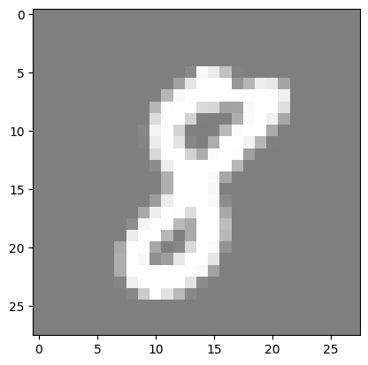
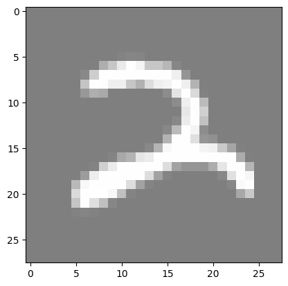
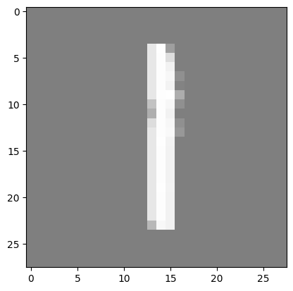
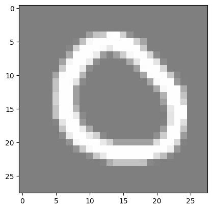

Lesson 1: MNIST Classification using Fully Connected Neural Networks#
Introduction#
MNIST is a simple computer vision dataset. It consists of 28x28 pixel images of handwritten digits. The dataset also includes labels for each image, telling us which digit it is (0, 1, 2, …, 9).
In this notebook, we will use the MNIST dataset to train a simple neural network to classify the images. We will use the PyTorch library to build a simple fully connected neural network and train it on the dataset.
The notebook is divided into the following sections:
Importing the libraries
Loading the dataset
Preparing the dataset
Building the neural network
Training the model
Evaluating the model
Reloading the model and making predictions
Throughout the notebook, you will see ‘#TODO’ comments. These are placeholders for you to write your own code. You should write the code to complete the functionality of the neural network.
Imports#
import torch
import torch.nn as nn
import torchvision
import torchvision.transforms as transforms
import matplotlib.pyplot as plt
import numpy as np
from tqdm import tqdm
import os
Hyperparameters#
# Determine if a GPU is available, and use it if so
# we will use it to train our model, if not we will use the CPU
device = torch.device("cuda" if torch.cuda.is_available() else "cpu")
input_size = 784 # MNIST data is 28x28 pixels
hidden_size = 500 # number of nodes in the hidden layer
num_classes = 10 # number of output classes (0-9)
num_epochs = 5 # number of times we will loop through the entire dataset
batch_size = 100 # number of images to process at once
learning_rate = 0.001 # how much we update our weights each iteration
MNIST#
Load MNIST#
The first step is to load the MNIST dataset. We will use the tensorflow_datasets library to load the dataset.
# create datasets folder
os.makedirs("../datasets", exist_ok=True)
# MNIST dataset
train_dataset = torchvision.datasets.MNIST(
root="../datasets", train=True, transform=transforms.ToTensor(), download=True
)
test_dataset = torchvision.datasets.MNIST(
root="../datasets", train=False, transform=transforms.ToTensor()
)
Downloading http://yann.lecun.com/exdb/mnist/train-images-idx3-ubyte.gz
Failed to download (trying next):
HTTP Error 404: Not Found
Downloading https://ossci-datasets.s3.amazonaws.com/mnist/train-images-idx3-ubyte.gz
Downloading https://ossci-datasets.s3.amazonaws.com/mnist/train-images-idx3-ubyte.gz to ../datasets/MNIST/raw/train-images-idx3-ubyte.gz
0%| | 0/9912422 [00:00<?, ?it/s]
1%|▏ | 131072/9912422 [00:00<00:09, 1079658.86it/s]
6%|▋ | 622592/9912422 [00:00<00:03, 2704241.73it/s]
17%|█▋ | 1671168/9912422 [00:00<00:01, 5159472.46it/s]
48%|████▊ | 4718592/9912422 [00:00<00:00, 12375615.95it/s]
100%|██████████| 9912422/9912422 [00:00<00:00, 16389457.80it/s]
Extracting ../datasets/MNIST/raw/train-images-idx3-ubyte.gz to ../datasets/MNIST/raw
Downloading http://yann.lecun.com/exdb/mnist/train-labels-idx1-ubyte.gz
Failed to download (trying next):
HTTP Error 404: Not Found
Downloading https://ossci-datasets.s3.amazonaws.com/mnist/train-labels-idx1-ubyte.gz
Downloading https://ossci-datasets.s3.amazonaws.com/mnist/train-labels-idx1-ubyte.gz to ../datasets/MNIST/raw/train-labels-idx1-ubyte.gz
0%| | 0/28881 [00:00<?, ?it/s]
100%|██████████| 28881/28881 [00:00<00:00, 613118.66it/s]
Extracting ../datasets/MNIST/raw/train-labels-idx1-ubyte.gz to ../datasets/MNIST/raw
Downloading http://yann.lecun.com/exdb/mnist/t10k-images-idx3-ubyte.gz
Failed to download (trying next):
HTTP Error 404: Not Found
Downloading https://ossci-datasets.s3.amazonaws.com/mnist/t10k-images-idx3-ubyte.gz
Downloading https://ossci-datasets.s3.amazonaws.com/mnist/t10k-images-idx3-ubyte.gz to ../datasets/MNIST/raw/t10k-images-idx3-ubyte.gz
0%| | 0/1648877 [00:00<?, ?it/s]
10%|▉ | 163840/1648877 [00:00<00:01, 1147786.61it/s]
42%|████▏ | 688128/1648877 [00:00<00:00, 2613012.06it/s]
100%|██████████| 1648877/1648877 [00:00<00:00, 4284211.60it/s]
Extracting ../datasets/MNIST/raw/t10k-images-idx3-ubyte.gz to ../datasets/MNIST/raw
Downloading http://yann.lecun.com/exdb/mnist/t10k-labels-idx1-ubyte.gz
Failed to download (trying next):
HTTP Error 404: Not Found
Downloading https://ossci-datasets.s3.amazonaws.com/mnist/t10k-labels-idx1-ubyte.gz
Downloading https://ossci-datasets.s3.amazonaws.com/mnist/t10k-labels-idx1-ubyte.gz to ../datasets/MNIST/raw/t10k-labels-idx1-ubyte.gz
0%| | 0/4542 [00:00<?, ?it/s]
100%|██████████| 4542/4542 [00:00<00:00, 11602027.26it/s]
Extracting ../datasets/MNIST/raw/t10k-labels-idx1-ubyte.gz to ../datasets/MNIST/raw
After downloading the dataset, we will use torch dataloaders to load the data. Dataloader is a utility that helps us to load the data in batches and also shuffle the data.
# Data loader
train_loader = torch.utils.data.DataLoader(
dataset=train_dataset, batch_size=batch_size, shuffle=True
)
test_loader = torch.utils.data.DataLoader(
dataset=test_dataset, batch_size=batch_size, shuffle=False
)
Visualize MNIST#
## Visualize MNIST
# functions to show an image
def imshow(img):
img = img / 2 + 0.5 # unnormalize
npimg = img.numpy()
plt.imshow(np.transpose(npimg, (1, 2, 0)))
plt.show()
for _ in range(3):
image, _ = train_dataset[np.random.randint(0, len(train_dataset))]
imshow(torchvision.utils.make_grid(image))



Data Augmentation#
# TODO:
# Watch this very short (it's literally a YouTube Short) video about data augmentation: https://www.youtube.com/shorts/S-7LpWzUaOg
# Read about data augmentation for images in PyTorch: https://www.kaggle.com/code/mohamedmustafa/7-data-augmentation-on-images-using-pytorch
# Add data augmentation to the MNIST dataset
Neural Network#
class Net(nn.Module): # inherit from nn.Module
def __init__(self, input_size, hidden_size, num_classes):
super(Net, self).__init__() # call the constructor of the parent class
self.fc1 = nn.Linear(input_size, hidden_size) # first fully connected layer
self.relu = nn.ReLU() # activation function
# TODO:
# 1. Add a second fully connected layer (don't forget to add an activation function).
# 2. (Optional) Experiment with different activation functions,
# such as sigmoid, tanh, leaky relu and parametric relu.
self.fc2 = nn.Linear(hidden_size, num_classes) # second fully connected layer
# softmax is used for multi-class classification problems
# it converts the output to a probability distribution over the classes
# the class with the highest probability is the predicted class
# logsoftmax is used to improve numerical stability
self.logsoftmax = nn.LogSoftmax(dim=1)
def forward(self, x: torch.Tensor) -> torch.Tensor:
"""
:param x: input tensor (batch_size, input_size)
"""
x = self.fc1(x)
x = self.relu(x)
x = self.fc2(x)
x = self.logsoftmax(x)
return x
Initialization#
# create the model and move it to the GPU if available
model = Net(input_size, hidden_size, num_classes).to(device)
# loss function
# we usually use cross-entropy loss for classification problems
# it applies log softmax to the output and then applies negative log likelihood loss
# in our model, we apply logsoftmax in the forward method, so we don't
# the loss function to do it.
# Thence, instead of using nn.CrossEntropyLoss, we use nn.NLLLoss
# simply,
# * If we apply logsoftmax in the forward method, we use nn.NLLLoss
# * If we don't apply logsoftmax in the forward method, we use nn.CrossEntropyLoss
criterion = nn.NLLLoss() # negative log likelihood loss
# optimizer
# we use the Adam optimizer, it is a popular optimizer
# it is an extension to stochastic gradient descent
# it computes adaptive learning rates for each parameter
optimizer = torch.optim.Adam(model.parameters(), lr=learning_rate)
Training the Model#
# Training loop
total_step = len(train_loader)
for epoch in range(num_epochs):
# Initialize progress bar
progress_bar = tqdm(enumerate(train_loader), total=total_step, leave=True)
for i, (images, labels) in progress_bar:
# Move tensors to the configured device
images = images.reshape(-1, 28 * 28).to(device) # flatten the images
# flatten the images to be (batch_size, 28*28)
# this is important because FCNNs take a 1D tensor as input
labels = labels.to(device)
# Forward pass
outputs = model(images)
loss = criterion(outputs, labels)
# Backpropagation and optimization
optimizer.zero_grad()
loss.backward()
optimizer.step()
# Update progress bar description
progress_bar.set_description(
f"Epoch [{epoch+1}/{num_epochs}], Step [{i+1}/{total_step}], Loss: {loss.item():.4f}"
)
0%| | 0/600 [00:00<?, ?it/s]
Epoch [1/5], Step [1/600], Loss: 2.3106: 0%| | 0/600 [00:00<?, ?it/s]
Epoch [1/5], Step [2/600], Loss: 2.2172: 0%| | 0/600 [00:00<?, ?it/s]
Epoch [1/5], Step [3/600], Loss: 2.1221: 0%| | 0/600 [00:00<?, ?it/s]
Epoch [1/5], Step [4/600], Loss: 2.0556: 0%| | 0/600 [00:00<?, ?it/s]
Epoch [1/5], Step [5/600], Loss: 1.8750: 0%| | 0/600 [00:00<?, ?it/s]
Epoch [1/5], Step [6/600], Loss: 1.8002: 0%| | 0/600 [00:00<?, ?it/s]
Epoch [1/5], Step [7/600], Loss: 1.7340: 0%| | 0/600 [00:00<?, ?it/s]
Epoch [1/5], Step [8/600], Loss: 1.6018: 0%| | 0/600 [00:00<?, ?it/s]
Epoch [1/5], Step [9/600], Loss: 1.5577: 0%| | 0/600 [00:00<?, ?it/s]
Epoch [1/5], Step [10/600], Loss: 1.3044: 0%| | 0/600 [00:00<?, ?it/s]
Epoch [1/5], Step [11/600], Loss: 1.3808: 0%| | 0/600 [00:00<?, ?it/s]
Epoch [1/5], Step [12/600], Loss: 1.4090: 0%| | 0/600 [00:00<?, ?it/s]
Epoch [1/5], Step [13/600], Loss: 1.1902: 0%| | 0/600 [00:00<?, ?it/s]
Epoch [1/5], Step [13/600], Loss: 1.1902: 2%|▏ | 13/600 [00:00<00:04, 127.75it/s]
Epoch [1/5], Step [14/600], Loss: 1.1942: 2%|▏ | 13/600 [00:00<00:04, 127.75it/s]
Epoch [1/5], Step [15/600], Loss: 1.0948: 2%|▏ | 13/600 [00:00<00:04, 127.75it/s]
Epoch [1/5], Step [16/600], Loss: 0.9974: 2%|▏ | 13/600 [00:00<00:04, 127.75it/s]
Epoch [1/5], Step [17/600], Loss: 1.0034: 2%|▏ | 13/600 [00:00<00:04, 127.75it/s]
Epoch [1/5], Step [18/600], Loss: 0.8570: 2%|▏ | 13/600 [00:00<00:04, 127.75it/s]
Epoch [1/5], Step [19/600], Loss: 0.9417: 2%|▏ | 13/600 [00:00<00:04, 127.75it/s]
Epoch [1/5], Step [20/600], Loss: 0.8797: 2%|▏ | 13/600 [00:00<00:04, 127.75it/s]
Epoch [1/5], Step [21/600], Loss: 0.9726: 2%|▏ | 13/600 [00:00<00:04, 127.75it/s]
Epoch [1/5], Step [22/600], Loss: 0.8465: 2%|▏ | 13/600 [00:00<00:04, 127.75it/s]
Epoch [1/5], Step [23/600], Loss: 0.6870: 2%|▏ | 13/600 [00:00<00:04, 127.75it/s]
Epoch [1/5], Step [24/600], Loss: 0.6098: 2%|▏ | 13/600 [00:00<00:04, 127.75it/s]
Epoch [1/5], Step [25/600], Loss: 0.7310: 2%|▏ | 13/600 [00:00<00:04, 127.75it/s]
Epoch [1/5], Step [26/600], Loss: 0.6192: 2%|▏ | 13/600 [00:00<00:04, 127.75it/s]
Epoch [1/5], Step [27/600], Loss: 0.6719: 2%|▏ | 13/600 [00:00<00:04, 127.75it/s]
Epoch [1/5], Step [27/600], Loss: 0.6719: 4%|▍ | 27/600 [00:00<00:04, 134.78it/s]
Epoch [1/5], Step [28/600], Loss: 0.6234: 4%|▍ | 27/600 [00:00<00:04, 134.78it/s]
Epoch [1/5], Step [29/600], Loss: 0.7092: 4%|▍ | 27/600 [00:00<00:04, 134.78it/s]
Epoch [1/5], Step [30/600], Loss: 0.6650: 4%|▍ | 27/600 [00:00<00:04, 134.78it/s]
Epoch [1/5], Step [31/600], Loss: 0.4403: 4%|▍ | 27/600 [00:00<00:04, 134.78it/s]
Epoch [1/5], Step [32/600], Loss: 0.5722: 4%|▍ | 27/600 [00:00<00:04, 134.78it/s]
Epoch [1/5], Step [33/600], Loss: 0.4617: 4%|▍ | 27/600 [00:00<00:04, 134.78it/s]
Epoch [1/5], Step [34/600], Loss: 0.5520: 4%|▍ | 27/600 [00:00<00:04, 134.78it/s]
Epoch [1/5], Step [35/600], Loss: 0.6121: 4%|▍ | 27/600 [00:00<00:04, 134.78it/s]
Epoch [1/5], Step [36/600], Loss: 0.3954: 4%|▍ | 27/600 [00:00<00:04, 134.78it/s]
Epoch [1/5], Step [37/600], Loss: 0.5259: 4%|▍ | 27/600 [00:00<00:04, 134.78it/s]
Epoch [1/5], Step [38/600], Loss: 0.6562: 4%|▍ | 27/600 [00:00<00:04, 134.78it/s]
Epoch [1/5], Step [39/600], Loss: 0.4360: 4%|▍ | 27/600 [00:00<00:04, 134.78it/s]
Epoch [1/5], Step [40/600], Loss: 0.5015: 4%|▍ | 27/600 [00:00<00:04, 134.78it/s]
Epoch [1/5], Step [41/600], Loss: 0.4170: 4%|▍ | 27/600 [00:00<00:04, 134.78it/s]
Epoch [1/5], Step [41/600], Loss: 0.4170: 7%|▋ | 41/600 [00:00<00:04, 136.58it/s]
Epoch [1/5], Step [42/600], Loss: 0.3965: 7%|▋ | 41/600 [00:00<00:04, 136.58it/s]
Epoch [1/5], Step [43/600], Loss: 0.4443: 7%|▋ | 41/600 [00:00<00:04, 136.58it/s]
Epoch [1/5], Step [44/600], Loss: 0.4503: 7%|▋ | 41/600 [00:00<00:04, 136.58it/s]
Epoch [1/5], Step [45/600], Loss: 0.4298: 7%|▋ | 41/600 [00:00<00:04, 136.58it/s]
Epoch [1/5], Step [46/600], Loss: 0.4275: 7%|▋ | 41/600 [00:00<00:04, 136.58it/s]
Epoch [1/5], Step [47/600], Loss: 0.3774: 7%|▋ | 41/600 [00:00<00:04, 136.58it/s]
Epoch [1/5], Step [48/600], Loss: 0.4603: 7%|▋ | 41/600 [00:00<00:04, 136.58it/s]
Epoch [1/5], Step [49/600], Loss: 0.4014: 7%|▋ | 41/600 [00:00<00:04, 136.58it/s]
Epoch [1/5], Step [50/600], Loss: 0.4153: 7%|▋ | 41/600 [00:00<00:04, 136.58it/s]
Epoch [1/5], Step [51/600], Loss: 0.3482: 7%|▋ | 41/600 [00:00<00:04, 136.58it/s]
Epoch [1/5], Step [52/600], Loss: 0.4386: 7%|▋ | 41/600 [00:00<00:04, 136.58it/s]
Epoch [1/5], Step [53/600], Loss: 0.3772: 7%|▋ | 41/600 [00:00<00:04, 136.58it/s]
Epoch [1/5], Step [54/600], Loss: 0.4641: 7%|▋ | 41/600 [00:00<00:04, 136.58it/s]
Epoch [1/5], Step [55/600], Loss: 0.4077: 7%|▋ | 41/600 [00:00<00:04, 136.58it/s]
Epoch [1/5], Step [55/600], Loss: 0.4077: 9%|▉ | 55/600 [00:00<00:03, 137.19it/s]
Epoch [1/5], Step [56/600], Loss: 0.4092: 9%|▉ | 55/600 [00:00<00:03, 137.19it/s]
Epoch [1/5], Step [57/600], Loss: 0.4595: 9%|▉ | 55/600 [00:00<00:03, 137.19it/s]
Epoch [1/5], Step [58/600], Loss: 0.4284: 9%|▉ | 55/600 [00:00<00:03, 137.19it/s]
Epoch [1/5], Step [59/600], Loss: 0.5457: 9%|▉ | 55/600 [00:00<00:03, 137.19it/s]
Epoch [1/5], Step [60/600], Loss: 0.3768: 9%|▉ | 55/600 [00:00<00:03, 137.19it/s]
Epoch [1/5], Step [61/600], Loss: 0.4027: 9%|▉ | 55/600 [00:00<00:03, 137.19it/s]
Epoch [1/5], Step [62/600], Loss: 0.4682: 9%|▉ | 55/600 [00:00<00:03, 137.19it/s]
Epoch [1/5], Step [63/600], Loss: 0.3656: 9%|▉ | 55/600 [00:00<00:03, 137.19it/s]
Epoch [1/5], Step [64/600], Loss: 0.5123: 9%|▉ | 55/600 [00:00<00:03, 137.19it/s]
Epoch [1/5], Step [65/600], Loss: 0.4362: 9%|▉ | 55/600 [00:00<00:03, 137.19it/s]
Epoch [1/5], Step [66/600], Loss: 0.4167: 9%|▉ | 55/600 [00:00<00:03, 137.19it/s]
Epoch [1/5], Step [67/600], Loss: 0.4885: 9%|▉ | 55/600 [00:00<00:03, 137.19it/s]
Epoch [1/5], Step [68/600], Loss: 0.4011: 9%|▉ | 55/600 [00:00<00:03, 137.19it/s]
Epoch [1/5], Step [69/600], Loss: 0.3056: 9%|▉ | 55/600 [00:00<00:03, 137.19it/s]
Epoch [1/5], Step [69/600], Loss: 0.3056: 12%|█▏ | 69/600 [00:00<00:03, 137.94it/s]
Epoch [1/5], Step [70/600], Loss: 0.5717: 12%|█▏ | 69/600 [00:00<00:03, 137.94it/s]
Epoch [1/5], Step [71/600], Loss: 0.4160: 12%|█▏ | 69/600 [00:00<00:03, 137.94it/s]
Epoch [1/5], Step [72/600], Loss: 0.2441: 12%|█▏ | 69/600 [00:00<00:03, 137.94it/s]
Epoch [1/5], Step [73/600], Loss: 0.4378: 12%|█▏ | 69/600 [00:00<00:03, 137.94it/s]
Epoch [1/5], Step [74/600], Loss: 0.3947: 12%|█▏ | 69/600 [00:00<00:03, 137.94it/s]
Epoch [1/5], Step [75/600], Loss: 0.3078: 12%|█▏ | 69/600 [00:00<00:03, 137.94it/s]
Epoch [1/5], Step [76/600], Loss: 0.2625: 12%|█▏ | 69/600 [00:00<00:03, 137.94it/s]
Epoch [1/5], Step [77/600], Loss: 0.4785: 12%|█▏ | 69/600 [00:00<00:03, 137.94it/s]
Epoch [1/5], Step [78/600], Loss: 0.2355: 12%|█▏ | 69/600 [00:00<00:03, 137.94it/s]
Epoch [1/5], Step [79/600], Loss: 0.4850: 12%|█▏ | 69/600 [00:00<00:03, 137.94it/s]
Epoch [1/5], Step [80/600], Loss: 0.3230: 12%|█▏ | 69/600 [00:00<00:03, 137.94it/s]
Epoch [1/5], Step [81/600], Loss: 0.3954: 12%|█▏ | 69/600 [00:00<00:03, 137.94it/s]
Epoch [1/5], Step [82/600], Loss: 0.2570: 12%|█▏ | 69/600 [00:00<00:03, 137.94it/s]
Epoch [1/5], Step [83/600], Loss: 0.2724: 12%|█▏ | 69/600 [00:00<00:03, 137.94it/s]
Epoch [1/5], Step [84/600], Loss: 0.4160: 12%|█▏ | 69/600 [00:00<00:03, 137.94it/s]
Epoch [1/5], Step [84/600], Loss: 0.4160: 14%|█▍ | 84/600 [00:00<00:03, 138.75it/s]
Epoch [1/5], Step [85/600], Loss: 0.3843: 14%|█▍ | 84/600 [00:00<00:03, 138.75it/s]
Epoch [1/5], Step [86/600], Loss: 0.3845: 14%|█▍ | 84/600 [00:00<00:03, 138.75it/s]
Epoch [1/5], Step [87/600], Loss: 0.4045: 14%|█▍ | 84/600 [00:00<00:03, 138.75it/s]
Epoch [1/5], Step [88/600], Loss: 0.3829: 14%|█▍ | 84/600 [00:00<00:03, 138.75it/s]
Epoch [1/5], Step [89/600], Loss: 0.4460: 14%|█▍ | 84/600 [00:00<00:03, 138.75it/s]
Epoch [1/5], Step [90/600], Loss: 0.3404: 14%|█▍ | 84/600 [00:00<00:03, 138.75it/s]
Epoch [1/5], Step [91/600], Loss: 0.3654: 14%|█▍ | 84/600 [00:00<00:03, 138.75it/s]
Epoch [1/5], Step [92/600], Loss: 0.3069: 14%|█▍ | 84/600 [00:00<00:03, 138.75it/s]
Epoch [1/5], Step [93/600], Loss: 0.2956: 14%|█▍ | 84/600 [00:00<00:03, 138.75it/s]
Epoch [1/5], Step [94/600], Loss: 0.5493: 14%|█▍ | 84/600 [00:00<00:03, 138.75it/s]
Epoch [1/5], Step [95/600], Loss: 0.2153: 14%|█▍ | 84/600 [00:00<00:03, 138.75it/s]
Epoch [1/5], Step [96/600], Loss: 0.4877: 14%|█▍ | 84/600 [00:00<00:03, 138.75it/s]
Epoch [1/5], Step [97/600], Loss: 0.6335: 14%|█▍ | 84/600 [00:00<00:03, 138.75it/s]
Epoch [1/5], Step [98/600], Loss: 0.2504: 14%|█▍ | 84/600 [00:00<00:03, 138.75it/s]
Epoch [1/5], Step [98/600], Loss: 0.2504: 16%|█▋ | 98/600 [00:00<00:03, 138.99it/s]
Epoch [1/5], Step [99/600], Loss: 0.1579: 16%|█▋ | 98/600 [00:00<00:03, 138.99it/s]
Epoch [1/5], Step [100/600], Loss: 0.2777: 16%|█▋ | 98/600 [00:00<00:03, 138.99it/s]
Epoch [1/5], Step [101/600], Loss: 0.7181: 16%|█▋ | 98/600 [00:00<00:03, 138.99it/s]
Epoch [1/5], Step [102/600], Loss: 0.2120: 16%|█▋ | 98/600 [00:00<00:03, 138.99it/s]
Epoch [1/5], Step [103/600], Loss: 0.3626: 16%|█▋ | 98/600 [00:00<00:03, 138.99it/s]
Epoch [1/5], Step [104/600], Loss: 0.3936: 16%|█▋ | 98/600 [00:00<00:03, 138.99it/s]
Epoch [1/5], Step [105/600], Loss: 0.3266: 16%|█▋ | 98/600 [00:00<00:03, 138.99it/s]
Epoch [1/5], Step [106/600], Loss: 0.3261: 16%|█▋ | 98/600 [00:00<00:03, 138.99it/s]
Epoch [1/5], Step [107/600], Loss: 0.4837: 16%|█▋ | 98/600 [00:00<00:03, 138.99it/s]
Epoch [1/5], Step [108/600], Loss: 0.3341: 16%|█▋ | 98/600 [00:00<00:03, 138.99it/s]
Epoch [1/5], Step [109/600], Loss: 0.2140: 16%|█▋ | 98/600 [00:00<00:03, 138.99it/s]
Epoch [1/5], Step [110/600], Loss: 0.3264: 16%|█▋ | 98/600 [00:00<00:03, 138.99it/s]
Epoch [1/5], Step [111/600], Loss: 0.3644: 16%|█▋ | 98/600 [00:00<00:03, 138.99it/s]
Epoch [1/5], Step [112/600], Loss: 0.4019: 16%|█▋ | 98/600 [00:00<00:03, 138.99it/s]
Epoch [1/5], Step [113/600], Loss: 0.2712: 16%|█▋ | 98/600 [00:00<00:03, 138.99it/s]
Epoch [1/5], Step [113/600], Loss: 0.2712: 19%|█▉ | 113/600 [00:00<00:03, 139.72it/s]
Epoch [1/5], Step [114/600], Loss: 0.2447: 19%|█▉ | 113/600 [00:00<00:03, 139.72it/s]
Epoch [1/5], Step [115/600], Loss: 0.2456: 19%|█▉ | 113/600 [00:00<00:03, 139.72it/s]
Epoch [1/5], Step [116/600], Loss: 0.3889: 19%|█▉ | 113/600 [00:00<00:03, 139.72it/s]
Epoch [1/5], Step [117/600], Loss: 0.2119: 19%|█▉ | 113/600 [00:00<00:03, 139.72it/s]
Epoch [1/5], Step [118/600], Loss: 0.3658: 19%|█▉ | 113/600 [00:00<00:03, 139.72it/s]
Epoch [1/5], Step [119/600], Loss: 0.3552: 19%|█▉ | 113/600 [00:00<00:03, 139.72it/s]
Epoch [1/5], Step [120/600], Loss: 0.2258: 19%|█▉ | 113/600 [00:00<00:03, 139.72it/s]
Epoch [1/5], Step [121/600], Loss: 0.3586: 19%|█▉ | 113/600 [00:00<00:03, 139.72it/s]
Epoch [1/5], Step [122/600], Loss: 0.2597: 19%|█▉ | 113/600 [00:00<00:03, 139.72it/s]
Epoch [1/5], Step [123/600], Loss: 0.4108: 19%|█▉ | 113/600 [00:00<00:03, 139.72it/s]
Epoch [1/5], Step [124/600], Loss: 0.3610: 19%|█▉ | 113/600 [00:00<00:03, 139.72it/s]
Epoch [1/5], Step [125/600], Loss: 0.1883: 19%|█▉ | 113/600 [00:00<00:03, 139.72it/s]
Epoch [1/5], Step [126/600], Loss: 0.4017: 19%|█▉ | 113/600 [00:00<00:03, 139.72it/s]
Epoch [1/5], Step [127/600], Loss: 0.2281: 19%|█▉ | 113/600 [00:00<00:03, 139.72it/s]
Epoch [1/5], Step [127/600], Loss: 0.2281: 21%|██ | 127/600 [00:00<00:03, 139.67it/s]
Epoch [1/5], Step [128/600], Loss: 0.3950: 21%|██ | 127/600 [00:00<00:03, 139.67it/s]
Epoch [1/5], Step [129/600], Loss: 0.4161: 21%|██ | 127/600 [00:00<00:03, 139.67it/s]
Epoch [1/5], Step [130/600], Loss: 0.4027: 21%|██ | 127/600 [00:00<00:03, 139.67it/s]
Epoch [1/5], Step [131/600], Loss: 0.3346: 21%|██ | 127/600 [00:00<00:03, 139.67it/s]
Epoch [1/5], Step [132/600], Loss: 0.3645: 21%|██ | 127/600 [00:00<00:03, 139.67it/s]
Epoch [1/5], Step [133/600], Loss: 0.4094: 21%|██ | 127/600 [00:00<00:03, 139.67it/s]
Epoch [1/5], Step [134/600], Loss: 0.3702: 21%|██ | 127/600 [00:00<00:03, 139.67it/s]
Epoch [1/5], Step [135/600], Loss: 0.4011: 21%|██ | 127/600 [00:00<00:03, 139.67it/s]
Epoch [1/5], Step [136/600], Loss: 0.2811: 21%|██ | 127/600 [00:00<00:03, 139.67it/s]
Epoch [1/5], Step [137/600], Loss: 0.3189: 21%|██ | 127/600 [00:00<00:03, 139.67it/s]
Epoch [1/5], Step [138/600], Loss: 0.2354: 21%|██ | 127/600 [00:00<00:03, 139.67it/s]
Epoch [1/5], Step [139/600], Loss: 0.2625: 21%|██ | 127/600 [00:01<00:03, 139.67it/s]
Epoch [1/5], Step [140/600], Loss: 0.2388: 21%|██ | 127/600 [00:01<00:03, 139.67it/s]
Epoch [1/5], Step [141/600], Loss: 0.1642: 21%|██ | 127/600 [00:01<00:03, 139.67it/s]
Epoch [1/5], Step [141/600], Loss: 0.1642: 24%|██▎ | 141/600 [00:01<00:03, 139.68it/s]
Epoch [1/5], Step [142/600], Loss: 0.5171: 24%|██▎ | 141/600 [00:01<00:03, 139.68it/s]
Epoch [1/5], Step [143/600], Loss: 0.3267: 24%|██▎ | 141/600 [00:01<00:03, 139.68it/s]
Epoch [1/5], Step [144/600], Loss: 0.2206: 24%|██▎ | 141/600 [00:01<00:03, 139.68it/s]
Epoch [1/5], Step [145/600], Loss: 0.3812: 24%|██▎ | 141/600 [00:01<00:03, 139.68it/s]
Epoch [1/5], Step [146/600], Loss: 0.4568: 24%|██▎ | 141/600 [00:01<00:03, 139.68it/s]
Epoch [1/5], Step [147/600], Loss: 0.2377: 24%|██▎ | 141/600 [00:01<00:03, 139.68it/s]
Epoch [1/5], Step [148/600], Loss: 0.4536: 24%|██▎ | 141/600 [00:01<00:03, 139.68it/s]
Epoch [1/5], Step [149/600], Loss: 0.1865: 24%|██▎ | 141/600 [00:01<00:03, 139.68it/s]
Epoch [1/5], Step [150/600], Loss: 0.2872: 24%|██▎ | 141/600 [00:01<00:03, 139.68it/s]
Epoch [1/5], Step [151/600], Loss: 0.2266: 24%|██▎ | 141/600 [00:01<00:03, 139.68it/s]
Epoch [1/5], Step [152/600], Loss: 0.2452: 24%|██▎ | 141/600 [00:01<00:03, 139.68it/s]
Epoch [1/5], Step [153/600], Loss: 0.3503: 24%|██▎ | 141/600 [00:01<00:03, 139.68it/s]
Epoch [1/5], Step [154/600], Loss: 0.3238: 24%|██▎ | 141/600 [00:01<00:03, 139.68it/s]
Epoch [1/5], Step [155/600], Loss: 0.3519: 24%|██▎ | 141/600 [00:01<00:03, 139.68it/s]
Epoch [1/5], Step [155/600], Loss: 0.3519: 26%|██▌ | 155/600 [00:01<00:03, 138.50it/s]
Epoch [1/5], Step [156/600], Loss: 0.2832: 26%|██▌ | 155/600 [00:01<00:03, 138.50it/s]
Epoch [1/5], Step [157/600], Loss: 0.3265: 26%|██▌ | 155/600 [00:01<00:03, 138.50it/s]
Epoch [1/5], Step [158/600], Loss: 0.2009: 26%|██▌ | 155/600 [00:01<00:03, 138.50it/s]
Epoch [1/5], Step [159/600], Loss: 0.3273: 26%|██▌ | 155/600 [00:01<00:03, 138.50it/s]
Epoch [1/5], Step [160/600], Loss: 0.1999: 26%|██▌ | 155/600 [00:01<00:03, 138.50it/s]
Epoch [1/5], Step [161/600], Loss: 0.2655: 26%|██▌ | 155/600 [00:01<00:03, 138.50it/s]
Epoch [1/5], Step [162/600], Loss: 0.3410: 26%|██▌ | 155/600 [00:01<00:03, 138.50it/s]
Epoch [1/5], Step [163/600], Loss: 0.2585: 26%|██▌ | 155/600 [00:01<00:03, 138.50it/s]
Epoch [1/5], Step [164/600], Loss: 0.2198: 26%|██▌ | 155/600 [00:01<00:03, 138.50it/s]
Epoch [1/5], Step [165/600], Loss: 0.2878: 26%|██▌ | 155/600 [00:01<00:03, 138.50it/s]
Epoch [1/5], Step [166/600], Loss: 0.2643: 26%|██▌ | 155/600 [00:01<00:03, 138.50it/s]
Epoch [1/5], Step [167/600], Loss: 0.1674: 26%|██▌ | 155/600 [00:01<00:03, 138.50it/s]
Epoch [1/5], Step [168/600], Loss: 0.2784: 26%|██▌ | 155/600 [00:01<00:03, 138.50it/s]
Epoch [1/5], Step [169/600], Loss: 0.3207: 26%|██▌ | 155/600 [00:01<00:03, 138.50it/s]
Epoch [1/5], Step [169/600], Loss: 0.3207: 28%|██▊ | 169/600 [00:01<00:03, 138.81it/s]
Epoch [1/5], Step [170/600], Loss: 0.3286: 28%|██▊ | 169/600 [00:01<00:03, 138.81it/s]
Epoch [1/5], Step [171/600], Loss: 0.2725: 28%|██▊ | 169/600 [00:01<00:03, 138.81it/s]
Epoch [1/5], Step [172/600], Loss: 0.3747: 28%|██▊ | 169/600 [00:01<00:03, 138.81it/s]
Epoch [1/5], Step [173/600], Loss: 0.2298: 28%|██▊ | 169/600 [00:01<00:03, 138.81it/s]
Epoch [1/5], Step [174/600], Loss: 0.2271: 28%|██▊ | 169/600 [00:01<00:03, 138.81it/s]
Epoch [1/5], Step [175/600], Loss: 0.2020: 28%|██▊ | 169/600 [00:01<00:03, 138.81it/s]
Epoch [1/5], Step [176/600], Loss: 0.1886: 28%|██▊ | 169/600 [00:01<00:03, 138.81it/s]
Epoch [1/5], Step [177/600], Loss: 0.3044: 28%|██▊ | 169/600 [00:01<00:03, 138.81it/s]
Epoch [1/5], Step [178/600], Loss: 0.3558: 28%|██▊ | 169/600 [00:01<00:03, 138.81it/s]
Epoch [1/5], Step [179/600], Loss: 0.1527: 28%|██▊ | 169/600 [00:01<00:03, 138.81it/s]
Epoch [1/5], Step [180/600], Loss: 0.3034: 28%|██▊ | 169/600 [00:01<00:03, 138.81it/s]
Epoch [1/5], Step [181/600], Loss: 0.2752: 28%|██▊ | 169/600 [00:01<00:03, 138.81it/s]
Epoch [1/5], Step [182/600], Loss: 0.1924: 28%|██▊ | 169/600 [00:01<00:03, 138.81it/s]
Epoch [1/5], Step [183/600], Loss: 0.2155: 28%|██▊ | 169/600 [00:01<00:03, 138.81it/s]
Epoch [1/5], Step [183/600], Loss: 0.2155: 30%|███ | 183/600 [00:01<00:03, 137.10it/s]
Epoch [1/5], Step [184/600], Loss: 0.3482: 30%|███ | 183/600 [00:01<00:03, 137.10it/s]
Epoch [1/5], Step [185/600], Loss: 0.2946: 30%|███ | 183/600 [00:01<00:03, 137.10it/s]
Epoch [1/5], Step [186/600], Loss: 0.2153: 30%|███ | 183/600 [00:01<00:03, 137.10it/s]
Epoch [1/5], Step [187/600], Loss: 0.2055: 30%|███ | 183/600 [00:01<00:03, 137.10it/s]
Epoch [1/5], Step [188/600], Loss: 0.3041: 30%|███ | 183/600 [00:01<00:03, 137.10it/s]
Epoch [1/5], Step [189/600], Loss: 0.2846: 30%|███ | 183/600 [00:01<00:03, 137.10it/s]
Epoch [1/5], Step [190/600], Loss: 0.4965: 30%|███ | 183/600 [00:01<00:03, 137.10it/s]
Epoch [1/5], Step [191/600], Loss: 0.3116: 30%|███ | 183/600 [00:01<00:03, 137.10it/s]
Epoch [1/5], Step [192/600], Loss: 0.2879: 30%|███ | 183/600 [00:01<00:03, 137.10it/s]
Epoch [1/5], Step [193/600], Loss: 0.2803: 30%|███ | 183/600 [00:01<00:03, 137.10it/s]
Epoch [1/5], Step [194/600], Loss: 0.2180: 30%|███ | 183/600 [00:01<00:03, 137.10it/s]
Epoch [1/5], Step [195/600], Loss: 0.1493: 30%|███ | 183/600 [00:01<00:03, 137.10it/s]
Epoch [1/5], Step [196/600], Loss: 0.2321: 30%|███ | 183/600 [00:01<00:03, 137.10it/s]
Epoch [1/5], Step [197/600], Loss: 0.2984: 30%|███ | 183/600 [00:01<00:03, 137.10it/s]
Epoch [1/5], Step [197/600], Loss: 0.2984: 33%|███▎ | 197/600 [00:01<00:02, 137.55it/s]
Epoch [1/5], Step [198/600], Loss: 0.3123: 33%|███▎ | 197/600 [00:01<00:02, 137.55it/s]
Epoch [1/5], Step [199/600], Loss: 0.2627: 33%|███▎ | 197/600 [00:01<00:02, 137.55it/s]
Epoch [1/5], Step [200/600], Loss: 0.1862: 33%|███▎ | 197/600 [00:01<00:02, 137.55it/s]
Epoch [1/5], Step [201/600], Loss: 0.1573: 33%|███▎ | 197/600 [00:01<00:02, 137.55it/s]
Epoch [1/5], Step [202/600], Loss: 0.4040: 33%|███▎ | 197/600 [00:01<00:02, 137.55it/s]
Epoch [1/5], Step [203/600], Loss: 0.2551: 33%|███▎ | 197/600 [00:01<00:02, 137.55it/s]
Epoch [1/5], Step [204/600], Loss: 0.2927: 33%|███▎ | 197/600 [00:01<00:02, 137.55it/s]
Epoch [1/5], Step [205/600], Loss: 0.3024: 33%|███▎ | 197/600 [00:01<00:02, 137.55it/s]
Epoch [1/5], Step [206/600], Loss: 0.3569: 33%|███▎ | 197/600 [00:01<00:02, 137.55it/s]
Epoch [1/5], Step [207/600], Loss: 0.2343: 33%|███▎ | 197/600 [00:01<00:02, 137.55it/s]
Epoch [1/5], Step [208/600], Loss: 0.2253: 33%|███▎ | 197/600 [00:01<00:02, 137.55it/s]
Epoch [1/5], Step [209/600], Loss: 0.2542: 33%|███▎ | 197/600 [00:01<00:02, 137.55it/s]
Epoch [1/5], Step [210/600], Loss: 0.1571: 33%|███▎ | 197/600 [00:01<00:02, 137.55it/s]
Epoch [1/5], Step [211/600], Loss: 0.2469: 33%|███▎ | 197/600 [00:01<00:02, 137.55it/s]
Epoch [1/5], Step [212/600], Loss: 0.2730: 33%|███▎ | 197/600 [00:01<00:02, 137.55it/s]
Epoch [1/5], Step [212/600], Loss: 0.2730: 35%|███▌ | 212/600 [00:01<00:02, 138.39it/s]
Epoch [1/5], Step [213/600], Loss: 0.2461: 35%|███▌ | 212/600 [00:01<00:02, 138.39it/s]
Epoch [1/5], Step [214/600], Loss: 0.2652: 35%|███▌ | 212/600 [00:01<00:02, 138.39it/s]
Epoch [1/5], Step [215/600], Loss: 0.1556: 35%|███▌ | 212/600 [00:01<00:02, 138.39it/s]
Epoch [1/5], Step [216/600], Loss: 0.2174: 35%|███▌ | 212/600 [00:01<00:02, 138.39it/s]
Epoch [1/5], Step [217/600], Loss: 0.2697: 35%|███▌ | 212/600 [00:01<00:02, 138.39it/s]
Epoch [1/5], Step [218/600], Loss: 0.2089: 35%|███▌ | 212/600 [00:01<00:02, 138.39it/s]
Epoch [1/5], Step [219/600], Loss: 0.2916: 35%|███▌ | 212/600 [00:01<00:02, 138.39it/s]
Epoch [1/5], Step [220/600], Loss: 0.2940: 35%|███▌ | 212/600 [00:01<00:02, 138.39it/s]
Epoch [1/5], Step [221/600], Loss: 0.1568: 35%|███▌ | 212/600 [00:01<00:02, 138.39it/s]
Epoch [1/5], Step [222/600], Loss: 0.3460: 35%|███▌ | 212/600 [00:01<00:02, 138.39it/s]
Epoch [1/5], Step [223/600], Loss: 0.1910: 35%|███▌ | 212/600 [00:01<00:02, 138.39it/s]
Epoch [1/5], Step [224/600], Loss: 0.1650: 35%|███▌ | 212/600 [00:01<00:02, 138.39it/s]
Epoch [1/5], Step [225/600], Loss: 0.2655: 35%|███▌ | 212/600 [00:01<00:02, 138.39it/s]
Epoch [1/5], Step [226/600], Loss: 0.1814: 35%|███▌ | 212/600 [00:01<00:02, 138.39it/s]
Epoch [1/5], Step [227/600], Loss: 0.1762: 35%|███▌ | 212/600 [00:01<00:02, 138.39it/s]
Epoch [1/5], Step [227/600], Loss: 0.1762: 38%|███▊ | 227/600 [00:01<00:02, 138.91it/s]
Epoch [1/5], Step [228/600], Loss: 0.1896: 38%|███▊ | 227/600 [00:01<00:02, 138.91it/s]
Epoch [1/5], Step [229/600], Loss: 0.3016: 38%|███▊ | 227/600 [00:01<00:02, 138.91it/s]
Epoch [1/5], Step [230/600], Loss: 0.4056: 38%|███▊ | 227/600 [00:01<00:02, 138.91it/s]
Epoch [1/5], Step [231/600], Loss: 0.2009: 38%|███▊ | 227/600 [00:01<00:02, 138.91it/s]
Epoch [1/5], Step [232/600], Loss: 0.1747: 38%|███▊ | 227/600 [00:01<00:02, 138.91it/s]
Epoch [1/5], Step [233/600], Loss: 0.2459: 38%|███▊ | 227/600 [00:01<00:02, 138.91it/s]
Epoch [1/5], Step [234/600], Loss: 0.2273: 38%|███▊ | 227/600 [00:01<00:02, 138.91it/s]
Epoch [1/5], Step [235/600], Loss: 0.2416: 38%|███▊ | 227/600 [00:01<00:02, 138.91it/s]
Epoch [1/5], Step [236/600], Loss: 0.3242: 38%|███▊ | 227/600 [00:01<00:02, 138.91it/s]
Epoch [1/5], Step [237/600], Loss: 0.1999: 38%|███▊ | 227/600 [00:01<00:02, 138.91it/s]
Epoch [1/5], Step [238/600], Loss: 0.2400: 38%|███▊ | 227/600 [00:01<00:02, 138.91it/s]
Epoch [1/5], Step [239/600], Loss: 0.2245: 38%|███▊ | 227/600 [00:01<00:02, 138.91it/s]
Epoch [1/5], Step [240/600], Loss: 0.2360: 38%|███▊ | 227/600 [00:01<00:02, 138.91it/s]
Epoch [1/5], Step [241/600], Loss: 0.1930: 38%|███▊ | 227/600 [00:01<00:02, 138.91it/s]
Epoch [1/5], Step [242/600], Loss: 0.1758: 38%|███▊ | 227/600 [00:01<00:02, 138.91it/s]
Epoch [1/5], Step [242/600], Loss: 0.1758: 40%|████ | 242/600 [00:01<00:02, 139.47it/s]
Epoch [1/5], Step [243/600], Loss: 0.4241: 40%|████ | 242/600 [00:01<00:02, 139.47it/s]
Epoch [1/5], Step [244/600], Loss: 0.3381: 40%|████ | 242/600 [00:01<00:02, 139.47it/s]
Epoch [1/5], Step [245/600], Loss: 0.3492: 40%|████ | 242/600 [00:01<00:02, 139.47it/s]
Epoch [1/5], Step [246/600], Loss: 0.2680: 40%|████ | 242/600 [00:01<00:02, 139.47it/s]
Epoch [1/5], Step [247/600], Loss: 0.4305: 40%|████ | 242/600 [00:01<00:02, 139.47it/s]
Epoch [1/5], Step [248/600], Loss: 0.2823: 40%|████ | 242/600 [00:01<00:02, 139.47it/s]
Epoch [1/5], Step [249/600], Loss: 0.2072: 40%|████ | 242/600 [00:01<00:02, 139.47it/s]
Epoch [1/5], Step [250/600], Loss: 0.3407: 40%|████ | 242/600 [00:01<00:02, 139.47it/s]
Epoch [1/5], Step [251/600], Loss: 0.2760: 40%|████ | 242/600 [00:01<00:02, 139.47it/s]
Epoch [1/5], Step [252/600], Loss: 0.1661: 40%|████ | 242/600 [00:01<00:02, 139.47it/s]
Epoch [1/5], Step [253/600], Loss: 0.3067: 40%|████ | 242/600 [00:01<00:02, 139.47it/s]
Epoch [1/5], Step [254/600], Loss: 0.3834: 40%|████ | 242/600 [00:01<00:02, 139.47it/s]
Epoch [1/5], Step [255/600], Loss: 0.1420: 40%|████ | 242/600 [00:01<00:02, 139.47it/s]
Epoch [1/5], Step [256/600], Loss: 0.1798: 40%|████ | 242/600 [00:01<00:02, 139.47it/s]
Epoch [1/5], Step [257/600], Loss: 0.3297: 40%|████ | 242/600 [00:01<00:02, 139.47it/s]
Epoch [1/5], Step [257/600], Loss: 0.3297: 43%|████▎ | 257/600 [00:01<00:02, 139.87it/s]
Epoch [1/5], Step [258/600], Loss: 0.3141: 43%|████▎ | 257/600 [00:01<00:02, 139.87it/s]
Epoch [1/5], Step [259/600], Loss: 0.2977: 43%|████▎ | 257/600 [00:01<00:02, 139.87it/s]
Epoch [1/5], Step [260/600], Loss: 0.3823: 43%|████▎ | 257/600 [00:01<00:02, 139.87it/s]
Epoch [1/5], Step [261/600], Loss: 0.4013: 43%|████▎ | 257/600 [00:01<00:02, 139.87it/s]
Epoch [1/5], Step [262/600], Loss: 0.2068: 43%|████▎ | 257/600 [00:01<00:02, 139.87it/s]
Epoch [1/5], Step [263/600], Loss: 0.2346: 43%|████▎ | 257/600 [00:01<00:02, 139.87it/s]
Epoch [1/5], Step [264/600], Loss: 0.2458: 43%|████▎ | 257/600 [00:01<00:02, 139.87it/s]
Epoch [1/5], Step [265/600], Loss: 0.2178: 43%|████▎ | 257/600 [00:01<00:02, 139.87it/s]
Epoch [1/5], Step [266/600], Loss: 0.2089: 43%|████▎ | 257/600 [00:01<00:02, 139.87it/s]
Epoch [1/5], Step [267/600], Loss: 0.2933: 43%|████▎ | 257/600 [00:01<00:02, 139.87it/s]
Epoch [1/5], Step [268/600], Loss: 0.1616: 43%|████▎ | 257/600 [00:01<00:02, 139.87it/s]
Epoch [1/5], Step [269/600], Loss: 0.2720: 43%|████▎ | 257/600 [00:01<00:02, 139.87it/s]
Epoch [1/5], Step [270/600], Loss: 0.1061: 43%|████▎ | 257/600 [00:01<00:02, 139.87it/s]
Epoch [1/5], Step [271/600], Loss: 0.3051: 43%|████▎ | 257/600 [00:01<00:02, 139.87it/s]
Epoch [1/5], Step [271/600], Loss: 0.3051: 45%|████▌ | 271/600 [00:01<00:02, 138.42it/s]
Epoch [1/5], Step [272/600], Loss: 0.2031: 45%|████▌ | 271/600 [00:01<00:02, 138.42it/s]
Epoch [1/5], Step [273/600], Loss: 0.2399: 45%|████▌ | 271/600 [00:01<00:02, 138.42it/s]
Epoch [1/5], Step [274/600], Loss: 0.2274: 45%|████▌ | 271/600 [00:01<00:02, 138.42it/s]
Epoch [1/5], Step [275/600], Loss: 0.2833: 45%|████▌ | 271/600 [00:01<00:02, 138.42it/s]
Epoch [1/5], Step [276/600], Loss: 0.2245: 45%|████▌ | 271/600 [00:01<00:02, 138.42it/s]
Epoch [1/5], Step [277/600], Loss: 0.2433: 45%|████▌ | 271/600 [00:02<00:02, 138.42it/s]
Epoch [1/5], Step [278/600], Loss: 0.4907: 45%|████▌ | 271/600 [00:02<00:02, 138.42it/s]
Epoch [1/5], Step [279/600], Loss: 0.2695: 45%|████▌ | 271/600 [00:02<00:02, 138.42it/s]
Epoch [1/5], Step [280/600], Loss: 0.2171: 45%|████▌ | 271/600 [00:02<00:02, 138.42it/s]
Epoch [1/5], Step [281/600], Loss: 0.1118: 45%|████▌ | 271/600 [00:02<00:02, 138.42it/s]
Epoch [1/5], Step [282/600], Loss: 0.1723: 45%|████▌ | 271/600 [00:02<00:02, 138.42it/s]
Epoch [1/5], Step [283/600], Loss: 0.2663: 45%|████▌ | 271/600 [00:02<00:02, 138.42it/s]
Epoch [1/5], Step [284/600], Loss: 0.1518: 45%|████▌ | 271/600 [00:02<00:02, 138.42it/s]
Epoch [1/5], Step [285/600], Loss: 0.2329: 45%|████▌ | 271/600 [00:02<00:02, 138.42it/s]
Epoch [1/5], Step [285/600], Loss: 0.2329: 48%|████▊ | 285/600 [00:02<00:02, 136.06it/s]
Epoch [1/5], Step [286/600], Loss: 0.3427: 48%|████▊ | 285/600 [00:02<00:02, 136.06it/s]
Epoch [1/5], Step [287/600], Loss: 0.2275: 48%|████▊ | 285/600 [00:02<00:02, 136.06it/s]
Epoch [1/5], Step [288/600], Loss: 0.1800: 48%|████▊ | 285/600 [00:02<00:02, 136.06it/s]
Epoch [1/5], Step [289/600], Loss: 0.1653: 48%|████▊ | 285/600 [00:02<00:02, 136.06it/s]
Epoch [1/5], Step [290/600], Loss: 0.3355: 48%|████▊ | 285/600 [00:02<00:02, 136.06it/s]
Epoch [1/5], Step [291/600], Loss: 0.1299: 48%|████▊ | 285/600 [00:02<00:02, 136.06it/s]
Epoch [1/5], Step [292/600], Loss: 0.2336: 48%|████▊ | 285/600 [00:02<00:02, 136.06it/s]
Epoch [1/5], Step [293/600], Loss: 0.3806: 48%|████▊ | 285/600 [00:02<00:02, 136.06it/s]
Epoch [1/5], Step [294/600], Loss: 0.3624: 48%|████▊ | 285/600 [00:02<00:02, 136.06it/s]
Epoch [1/5], Step [295/600], Loss: 0.2493: 48%|████▊ | 285/600 [00:02<00:02, 136.06it/s]
Epoch [1/5], Step [296/600], Loss: 0.1294: 48%|████▊ | 285/600 [00:02<00:02, 136.06it/s]
Epoch [1/5], Step [297/600], Loss: 0.2092: 48%|████▊ | 285/600 [00:02<00:02, 136.06it/s]
Epoch [1/5], Step [298/600], Loss: 0.2133: 48%|████▊ | 285/600 [00:02<00:02, 136.06it/s]
Epoch [1/5], Step [299/600], Loss: 0.2455: 48%|████▊ | 285/600 [00:02<00:02, 136.06it/s]
Epoch [1/5], Step [299/600], Loss: 0.2455: 50%|████▉ | 299/600 [00:02<00:02, 137.19it/s]
Epoch [1/5], Step [300/600], Loss: 0.3297: 50%|████▉ | 299/600 [00:02<00:02, 137.19it/s]
Epoch [1/5], Step [301/600], Loss: 0.2979: 50%|████▉ | 299/600 [00:02<00:02, 137.19it/s]
Epoch [1/5], Step [302/600], Loss: 0.2359: 50%|████▉ | 299/600 [00:02<00:02, 137.19it/s]
Epoch [1/5], Step [303/600], Loss: 0.2515: 50%|████▉ | 299/600 [00:02<00:02, 137.19it/s]
Epoch [1/5], Step [304/600], Loss: 0.2068: 50%|████▉ | 299/600 [00:02<00:02, 137.19it/s]
Epoch [1/5], Step [305/600], Loss: 0.2170: 50%|████▉ | 299/600 [00:02<00:02, 137.19it/s]
Epoch [1/5], Step [306/600], Loss: 0.3609: 50%|████▉ | 299/600 [00:02<00:02, 137.19it/s]
Epoch [1/5], Step [307/600], Loss: 0.1545: 50%|████▉ | 299/600 [00:02<00:02, 137.19it/s]
Epoch [1/5], Step [308/600], Loss: 0.2986: 50%|████▉ | 299/600 [00:02<00:02, 137.19it/s]
Epoch [1/5], Step [309/600], Loss: 0.1679: 50%|████▉ | 299/600 [00:02<00:02, 137.19it/s]
Epoch [1/5], Step [310/600], Loss: 0.1381: 50%|████▉ | 299/600 [00:02<00:02, 137.19it/s]
Epoch [1/5], Step [311/600], Loss: 0.1601: 50%|████▉ | 299/600 [00:02<00:02, 137.19it/s]
Epoch [1/5], Step [312/600], Loss: 0.1897: 50%|████▉ | 299/600 [00:02<00:02, 137.19it/s]
Epoch [1/5], Step [313/600], Loss: 0.2153: 50%|████▉ | 299/600 [00:02<00:02, 137.19it/s]
Epoch [1/5], Step [313/600], Loss: 0.2153: 52%|█████▏ | 313/600 [00:02<00:02, 137.97it/s]
Epoch [1/5], Step [314/600], Loss: 0.1884: 52%|█████▏ | 313/600 [00:02<00:02, 137.97it/s]
Epoch [1/5], Step [315/600], Loss: 0.1365: 52%|█████▏ | 313/600 [00:02<00:02, 137.97it/s]
Epoch [1/5], Step [316/600], Loss: 0.2024: 52%|█████▏ | 313/600 [00:02<00:02, 137.97it/s]
Epoch [1/5], Step [317/600], Loss: 0.2771: 52%|█████▏ | 313/600 [00:02<00:02, 137.97it/s]
Epoch [1/5], Step [318/600], Loss: 0.2489: 52%|█████▏ | 313/600 [00:02<00:02, 137.97it/s]
Epoch [1/5], Step [319/600], Loss: 0.2864: 52%|█████▏ | 313/600 [00:02<00:02, 137.97it/s]
Epoch [1/5], Step [320/600], Loss: 0.4584: 52%|█████▏ | 313/600 [00:02<00:02, 137.97it/s]
Epoch [1/5], Step [321/600], Loss: 0.2536: 52%|█████▏ | 313/600 [00:02<00:02, 137.97it/s]
Epoch [1/5], Step [322/600], Loss: 0.1564: 52%|█████▏ | 313/600 [00:02<00:02, 137.97it/s]
Epoch [1/5], Step [323/600], Loss: 0.1673: 52%|█████▏ | 313/600 [00:02<00:02, 137.97it/s]
Epoch [1/5], Step [324/600], Loss: 0.2837: 52%|█████▏ | 313/600 [00:02<00:02, 137.97it/s]
Epoch [1/5], Step [325/600], Loss: 0.3217: 52%|█████▏ | 313/600 [00:02<00:02, 137.97it/s]
Epoch [1/5], Step [326/600], Loss: 0.1457: 52%|█████▏ | 313/600 [00:02<00:02, 137.97it/s]
Epoch [1/5], Step [327/600], Loss: 0.3282: 52%|█████▏ | 313/600 [00:02<00:02, 137.97it/s]
Epoch [1/5], Step [328/600], Loss: 0.2438: 52%|█████▏ | 313/600 [00:02<00:02, 137.97it/s]
Epoch [1/5], Step [328/600], Loss: 0.2438: 55%|█████▍ | 328/600 [00:02<00:01, 138.75it/s]
Epoch [1/5], Step [329/600], Loss: 0.1884: 55%|█████▍ | 328/600 [00:02<00:01, 138.75it/s]
Epoch [1/5], Step [330/600], Loss: 0.1862: 55%|█████▍ | 328/600 [00:02<00:01, 138.75it/s]
Epoch [1/5], Step [331/600], Loss: 0.1259: 55%|█████▍ | 328/600 [00:02<00:01, 138.75it/s]
Epoch [1/5], Step [332/600], Loss: 0.1189: 55%|█████▍ | 328/600 [00:02<00:01, 138.75it/s]
Epoch [1/5], Step [333/600], Loss: 0.3363: 55%|█████▍ | 328/600 [00:02<00:01, 138.75it/s]
Epoch [1/5], Step [334/600], Loss: 0.2713: 55%|█████▍ | 328/600 [00:02<00:01, 138.75it/s]
Epoch [1/5], Step [335/600], Loss: 0.2767: 55%|█████▍ | 328/600 [00:02<00:01, 138.75it/s]
Epoch [1/5], Step [336/600], Loss: 0.1890: 55%|█████▍ | 328/600 [00:02<00:01, 138.75it/s]
Epoch [1/5], Step [337/600], Loss: 0.3226: 55%|█████▍ | 328/600 [00:02<00:01, 138.75it/s]
Epoch [1/5], Step [338/600], Loss: 0.2670: 55%|█████▍ | 328/600 [00:02<00:01, 138.75it/s]
Epoch [1/5], Step [339/600], Loss: 0.2107: 55%|█████▍ | 328/600 [00:02<00:01, 138.75it/s]
Epoch [1/5], Step [340/600], Loss: 0.1458: 55%|█████▍ | 328/600 [00:02<00:01, 138.75it/s]
Epoch [1/5], Step [341/600], Loss: 0.2121: 55%|█████▍ | 328/600 [00:02<00:01, 138.75it/s]
Epoch [1/5], Step [342/600], Loss: 0.2314: 55%|█████▍ | 328/600 [00:02<00:01, 138.75it/s]
Epoch [1/5], Step [343/600], Loss: 0.2378: 55%|█████▍ | 328/600 [00:02<00:01, 138.75it/s]
Epoch [1/5], Step [343/600], Loss: 0.2378: 57%|█████▋ | 343/600 [00:02<00:01, 139.14it/s]
Epoch [1/5], Step [344/600], Loss: 0.2151: 57%|█████▋ | 343/600 [00:02<00:01, 139.14it/s]
Epoch [1/5], Step [345/600], Loss: 0.2009: 57%|█████▋ | 343/600 [00:02<00:01, 139.14it/s]
Epoch [1/5], Step [346/600], Loss: 0.1234: 57%|█████▋ | 343/600 [00:02<00:01, 139.14it/s]
Epoch [1/5], Step [347/600], Loss: 0.1884: 57%|█████▋ | 343/600 [00:02<00:01, 139.14it/s]
Epoch [1/5], Step [348/600], Loss: 0.2422: 57%|█████▋ | 343/600 [00:02<00:01, 139.14it/s]
Epoch [1/5], Step [349/600], Loss: 0.2198: 57%|█████▋ | 343/600 [00:02<00:01, 139.14it/s]
Epoch [1/5], Step [350/600], Loss: 0.2375: 57%|█████▋ | 343/600 [00:02<00:01, 139.14it/s]
Epoch [1/5], Step [351/600], Loss: 0.1853: 57%|█████▋ | 343/600 [00:02<00:01, 139.14it/s]
Epoch [1/5], Step [352/600], Loss: 0.2609: 57%|█████▋ | 343/600 [00:02<00:01, 139.14it/s]
Epoch [1/5], Step [353/600], Loss: 0.2654: 57%|█████▋ | 343/600 [00:02<00:01, 139.14it/s]
Epoch [1/5], Step [354/600], Loss: 0.2106: 57%|█████▋ | 343/600 [00:02<00:01, 139.14it/s]
Epoch [1/5], Step [355/600], Loss: 0.1884: 57%|█████▋ | 343/600 [00:02<00:01, 139.14it/s]
Epoch [1/5], Step [356/600], Loss: 0.1890: 57%|█████▋ | 343/600 [00:02<00:01, 139.14it/s]
Epoch [1/5], Step [357/600], Loss: 0.0853: 57%|█████▋ | 343/600 [00:02<00:01, 139.14it/s]
Epoch [1/5], Step [357/600], Loss: 0.0853: 60%|█████▉ | 357/600 [00:02<00:01, 137.78it/s]
Epoch [1/5], Step [358/600], Loss: 0.0791: 60%|█████▉ | 357/600 [00:02<00:01, 137.78it/s]
Epoch [1/5], Step [359/600], Loss: 0.1721: 60%|█████▉ | 357/600 [00:02<00:01, 137.78it/s]
Epoch [1/5], Step [360/600], Loss: 0.3023: 60%|█████▉ | 357/600 [00:02<00:01, 137.78it/s]
Epoch [1/5], Step [361/600], Loss: 0.2316: 60%|█████▉ | 357/600 [00:02<00:01, 137.78it/s]
Epoch [1/5], Step [362/600], Loss: 0.2105: 60%|█████▉ | 357/600 [00:02<00:01, 137.78it/s]
Epoch [1/5], Step [363/600], Loss: 0.2721: 60%|█████▉ | 357/600 [00:02<00:01, 137.78it/s]
Epoch [1/5], Step [364/600], Loss: 0.1515: 60%|█████▉ | 357/600 [00:02<00:01, 137.78it/s]
Epoch [1/5], Step [365/600], Loss: 0.3031: 60%|█████▉ | 357/600 [00:02<00:01, 137.78it/s]
Epoch [1/5], Step [366/600], Loss: 0.0929: 60%|█████▉ | 357/600 [00:02<00:01, 137.78it/s]
Epoch [1/5], Step [367/600], Loss: 0.3441: 60%|█████▉ | 357/600 [00:02<00:01, 137.78it/s]
Epoch [1/5], Step [368/600], Loss: 0.1735: 60%|█████▉ | 357/600 [00:02<00:01, 137.78it/s]
Epoch [1/5], Step [369/600], Loss: 0.1922: 60%|█████▉ | 357/600 [00:02<00:01, 137.78it/s]
Epoch [1/5], Step [370/600], Loss: 0.2411: 60%|█████▉ | 357/600 [00:02<00:01, 137.78it/s]
Epoch [1/5], Step [371/600], Loss: 0.2813: 60%|█████▉ | 357/600 [00:02<00:01, 137.78it/s]
Epoch [1/5], Step [371/600], Loss: 0.2813: 62%|██████▏ | 371/600 [00:02<00:01, 137.81it/s]
Epoch [1/5], Step [372/600], Loss: 0.2066: 62%|██████▏ | 371/600 [00:02<00:01, 137.81it/s]
Epoch [1/5], Step [373/600], Loss: 0.2506: 62%|██████▏ | 371/600 [00:02<00:01, 137.81it/s]
Epoch [1/5], Step [374/600], Loss: 0.2654: 62%|██████▏ | 371/600 [00:02<00:01, 137.81it/s]
Epoch [1/5], Step [375/600], Loss: 0.1393: 62%|██████▏ | 371/600 [00:02<00:01, 137.81it/s]
Epoch [1/5], Step [376/600], Loss: 0.0470: 62%|██████▏ | 371/600 [00:02<00:01, 137.81it/s]
Epoch [1/5], Step [377/600], Loss: 0.1507: 62%|██████▏ | 371/600 [00:02<00:01, 137.81it/s]
Epoch [1/5], Step [378/600], Loss: 0.2804: 62%|██████▏ | 371/600 [00:02<00:01, 137.81it/s]
Epoch [1/5], Step [379/600], Loss: 0.2493: 62%|██████▏ | 371/600 [00:02<00:01, 137.81it/s]
Epoch [1/5], Step [380/600], Loss: 0.1889: 62%|██████▏ | 371/600 [00:02<00:01, 137.81it/s]
Epoch [1/5], Step [381/600], Loss: 0.1924: 62%|██████▏ | 371/600 [00:02<00:01, 137.81it/s]
Epoch [1/5], Step [382/600], Loss: 0.1923: 62%|██████▏ | 371/600 [00:02<00:01, 137.81it/s]
Epoch [1/5], Step [383/600], Loss: 0.3232: 62%|██████▏ | 371/600 [00:02<00:01, 137.81it/s]
Epoch [1/5], Step [384/600], Loss: 0.1758: 62%|██████▏ | 371/600 [00:02<00:01, 137.81it/s]
Epoch [1/5], Step [385/600], Loss: 0.1620: 62%|██████▏ | 371/600 [00:02<00:01, 137.81it/s]
Epoch [1/5], Step [385/600], Loss: 0.1620: 64%|██████▍ | 385/600 [00:02<00:01, 138.30it/s]
Epoch [1/5], Step [386/600], Loss: 0.2434: 64%|██████▍ | 385/600 [00:02<00:01, 138.30it/s]
Epoch [1/5], Step [387/600], Loss: 0.1321: 64%|██████▍ | 385/600 [00:02<00:01, 138.30it/s]
Epoch [1/5], Step [388/600], Loss: 0.1174: 64%|██████▍ | 385/600 [00:02<00:01, 138.30it/s]
Epoch [1/5], Step [389/600], Loss: 0.2372: 64%|██████▍ | 385/600 [00:02<00:01, 138.30it/s]
Epoch [1/5], Step [390/600], Loss: 0.0840: 64%|██████▍ | 385/600 [00:02<00:01, 138.30it/s]
Epoch [1/5], Step [391/600], Loss: 0.2663: 64%|██████▍ | 385/600 [00:02<00:01, 138.30it/s]
Epoch [1/5], Step [392/600], Loss: 0.3272: 64%|██████▍ | 385/600 [00:02<00:01, 138.30it/s]
Epoch [1/5], Step [393/600], Loss: 0.1319: 64%|██████▍ | 385/600 [00:02<00:01, 138.30it/s]
Epoch [1/5], Step [394/600], Loss: 0.3304: 64%|██████▍ | 385/600 [00:02<00:01, 138.30it/s]
Epoch [1/5], Step [395/600], Loss: 0.1911: 64%|██████▍ | 385/600 [00:02<00:01, 138.30it/s]
Epoch [1/5], Step [396/600], Loss: 0.1846: 64%|██████▍ | 385/600 [00:02<00:01, 138.30it/s]
Epoch [1/5], Step [397/600], Loss: 0.2357: 64%|██████▍ | 385/600 [00:02<00:01, 138.30it/s]
Epoch [1/5], Step [398/600], Loss: 0.2948: 64%|██████▍ | 385/600 [00:02<00:01, 138.30it/s]
Epoch [1/5], Step [399/600], Loss: 0.0877: 64%|██████▍ | 385/600 [00:02<00:01, 138.30it/s]
Epoch [1/5], Step [399/600], Loss: 0.0877: 66%|██████▋ | 399/600 [00:02<00:01, 133.00it/s]
Epoch [1/5], Step [400/600], Loss: 0.2388: 66%|██████▋ | 399/600 [00:02<00:01, 133.00it/s]
Epoch [1/5], Step [401/600], Loss: 0.1007: 66%|██████▋ | 399/600 [00:02<00:01, 133.00it/s]
Epoch [1/5], Step [402/600], Loss: 0.2356: 66%|██████▋ | 399/600 [00:02<00:01, 133.00it/s]
Epoch [1/5], Step [403/600], Loss: 0.1432: 66%|██████▋ | 399/600 [00:02<00:01, 133.00it/s]
Epoch [1/5], Step [404/600], Loss: 0.3232: 66%|██████▋ | 399/600 [00:02<00:01, 133.00it/s]
Epoch [1/5], Step [405/600], Loss: 0.2272: 66%|██████▋ | 399/600 [00:02<00:01, 133.00it/s]
Epoch [1/5], Step [406/600], Loss: 0.2489: 66%|██████▋ | 399/600 [00:02<00:01, 133.00it/s]
Epoch [1/5], Step [407/600], Loss: 0.1866: 66%|██████▋ | 399/600 [00:02<00:01, 133.00it/s]
Epoch [1/5], Step [408/600], Loss: 0.1537: 66%|██████▋ | 399/600 [00:02<00:01, 133.00it/s]
Epoch [1/5], Step [409/600], Loss: 0.3000: 66%|██████▋ | 399/600 [00:02<00:01, 133.00it/s]
Epoch [1/5], Step [410/600], Loss: 0.1896: 66%|██████▋ | 399/600 [00:02<00:01, 133.00it/s]
Epoch [1/5], Step [411/600], Loss: 0.1494: 66%|██████▋ | 399/600 [00:03<00:01, 133.00it/s]
Epoch [1/5], Step [412/600], Loss: 0.1791: 66%|██████▋ | 399/600 [00:03<00:01, 133.00it/s]
Epoch [1/5], Step [413/600], Loss: 0.2635: 66%|██████▋ | 399/600 [00:03<00:01, 133.00it/s]
Epoch [1/5], Step [413/600], Loss: 0.2635: 69%|██████▉ | 413/600 [00:03<00:01, 129.17it/s]
Epoch [1/5], Step [414/600], Loss: 0.1981: 69%|██████▉ | 413/600 [00:03<00:01, 129.17it/s]
Epoch [1/5], Step [415/600], Loss: 0.2090: 69%|██████▉ | 413/600 [00:03<00:01, 129.17it/s]
Epoch [1/5], Step [416/600], Loss: 0.1930: 69%|██████▉ | 413/600 [00:03<00:01, 129.17it/s]
Epoch [1/5], Step [417/600], Loss: 0.2084: 69%|██████▉ | 413/600 [00:03<00:01, 129.17it/s]
Epoch [1/5], Step [418/600], Loss: 0.2445: 69%|██████▉ | 413/600 [00:03<00:01, 129.17it/s]
Epoch [1/5], Step [419/600], Loss: 0.0865: 69%|██████▉ | 413/600 [00:03<00:01, 129.17it/s]
Epoch [1/5], Step [420/600], Loss: 0.2301: 69%|██████▉ | 413/600 [00:03<00:01, 129.17it/s]
Epoch [1/5], Step [421/600], Loss: 0.2792: 69%|██████▉ | 413/600 [00:03<00:01, 129.17it/s]
Epoch [1/5], Step [422/600], Loss: 0.2074: 69%|██████▉ | 413/600 [00:03<00:01, 129.17it/s]
Epoch [1/5], Step [423/600], Loss: 0.2767: 69%|██████▉ | 413/600 [00:03<00:01, 129.17it/s]
Epoch [1/5], Step [424/600], Loss: 0.2251: 69%|██████▉ | 413/600 [00:03<00:01, 129.17it/s]
Epoch [1/5], Step [425/600], Loss: 0.3369: 69%|██████▉ | 413/600 [00:03<00:01, 129.17it/s]
Epoch [1/5], Step [426/600], Loss: 0.2234: 69%|██████▉ | 413/600 [00:03<00:01, 129.17it/s]
Epoch [1/5], Step [427/600], Loss: 0.1388: 69%|██████▉ | 413/600 [00:03<00:01, 129.17it/s]
Epoch [1/5], Step [427/600], Loss: 0.1388: 71%|███████ | 427/600 [00:03<00:01, 132.14it/s]
Epoch [1/5], Step [428/600], Loss: 0.1011: 71%|███████ | 427/600 [00:03<00:01, 132.14it/s]
Epoch [1/5], Step [429/600], Loss: 0.1211: 71%|███████ | 427/600 [00:03<00:01, 132.14it/s]
Epoch [1/5], Step [430/600], Loss: 0.1710: 71%|███████ | 427/600 [00:03<00:01, 132.14it/s]
Epoch [1/5], Step [431/600], Loss: 0.1223: 71%|███████ | 427/600 [00:03<00:01, 132.14it/s]
Epoch [1/5], Step [432/600], Loss: 0.2078: 71%|███████ | 427/600 [00:03<00:01, 132.14it/s]
Epoch [1/5], Step [433/600], Loss: 0.2039: 71%|███████ | 427/600 [00:03<00:01, 132.14it/s]
Epoch [1/5], Step [434/600], Loss: 0.2271: 71%|███████ | 427/600 [00:03<00:01, 132.14it/s]
Epoch [1/5], Step [435/600], Loss: 0.1311: 71%|███████ | 427/600 [00:03<00:01, 132.14it/s]
Epoch [1/5], Step [436/600], Loss: 0.0813: 71%|███████ | 427/600 [00:03<00:01, 132.14it/s]
Epoch [1/5], Step [437/600], Loss: 0.0955: 71%|███████ | 427/600 [00:03<00:01, 132.14it/s]
Epoch [1/5], Step [438/600], Loss: 0.3917: 71%|███████ | 427/600 [00:03<00:01, 132.14it/s]
Epoch [1/5], Step [439/600], Loss: 0.2279: 71%|███████ | 427/600 [00:03<00:01, 132.14it/s]
Epoch [1/5], Step [440/600], Loss: 0.1823: 71%|███████ | 427/600 [00:03<00:01, 132.14it/s]
Epoch [1/5], Step [441/600], Loss: 0.2300: 71%|███████ | 427/600 [00:03<00:01, 132.14it/s]
Epoch [1/5], Step [442/600], Loss: 0.2715: 71%|███████ | 427/600 [00:03<00:01, 132.14it/s]
Epoch [1/5], Step [442/600], Loss: 0.2715: 74%|███████▎ | 442/600 [00:03<00:01, 134.66it/s]
Epoch [1/5], Step [443/600], Loss: 0.1943: 74%|███████▎ | 442/600 [00:03<00:01, 134.66it/s]
Epoch [1/5], Step [444/600], Loss: 0.1493: 74%|███████▎ | 442/600 [00:03<00:01, 134.66it/s]
Epoch [1/5], Step [445/600], Loss: 0.2141: 74%|███████▎ | 442/600 [00:03<00:01, 134.66it/s]
Epoch [1/5], Step [446/600], Loss: 0.1300: 74%|███████▎ | 442/600 [00:03<00:01, 134.66it/s]
Epoch [1/5], Step [447/600], Loss: 0.1376: 74%|███████▎ | 442/600 [00:03<00:01, 134.66it/s]
Epoch [1/5], Step [448/600], Loss: 0.1305: 74%|███████▎ | 442/600 [00:03<00:01, 134.66it/s]
Epoch [1/5], Step [449/600], Loss: 0.2080: 74%|███████▎ | 442/600 [00:03<00:01, 134.66it/s]
Epoch [1/5], Step [450/600], Loss: 0.1568: 74%|███████▎ | 442/600 [00:03<00:01, 134.66it/s]
Epoch [1/5], Step [451/600], Loss: 0.1579: 74%|███████▎ | 442/600 [00:03<00:01, 134.66it/s]
Epoch [1/5], Step [452/600], Loss: 0.2180: 74%|███████▎ | 442/600 [00:03<00:01, 134.66it/s]
Epoch [1/5], Step [453/600], Loss: 0.1901: 74%|███████▎ | 442/600 [00:03<00:01, 134.66it/s]
Epoch [1/5], Step [454/600], Loss: 0.1669: 74%|███████▎ | 442/600 [00:03<00:01, 134.66it/s]
Epoch [1/5], Step [455/600], Loss: 0.2181: 74%|███████▎ | 442/600 [00:03<00:01, 134.66it/s]
Epoch [1/5], Step [456/600], Loss: 0.2425: 74%|███████▎ | 442/600 [00:03<00:01, 134.66it/s]
Epoch [1/5], Step [457/600], Loss: 0.2079: 74%|███████▎ | 442/600 [00:03<00:01, 134.66it/s]
Epoch [1/5], Step [457/600], Loss: 0.2079: 76%|███████▌ | 457/600 [00:03<00:01, 136.18it/s]
Epoch [1/5], Step [458/600], Loss: 0.2091: 76%|███████▌ | 457/600 [00:03<00:01, 136.18it/s]
Epoch [1/5], Step [459/600], Loss: 0.2111: 76%|███████▌ | 457/600 [00:03<00:01, 136.18it/s]
Epoch [1/5], Step [460/600], Loss: 0.2641: 76%|███████▌ | 457/600 [00:03<00:01, 136.18it/s]
Epoch [1/5], Step [461/600], Loss: 0.2184: 76%|███████▌ | 457/600 [00:03<00:01, 136.18it/s]
Epoch [1/5], Step [462/600], Loss: 0.2449: 76%|███████▌ | 457/600 [00:03<00:01, 136.18it/s]
Epoch [1/5], Step [463/600], Loss: 0.2307: 76%|███████▌ | 457/600 [00:03<00:01, 136.18it/s]
Epoch [1/5], Step [464/600], Loss: 0.1538: 76%|███████▌ | 457/600 [00:03<00:01, 136.18it/s]
Epoch [1/5], Step [465/600], Loss: 0.2844: 76%|███████▌ | 457/600 [00:03<00:01, 136.18it/s]
Epoch [1/5], Step [466/600], Loss: 0.1050: 76%|███████▌ | 457/600 [00:03<00:01, 136.18it/s]
Epoch [1/5], Step [467/600], Loss: 0.1695: 76%|███████▌ | 457/600 [00:03<00:01, 136.18it/s]
Epoch [1/5], Step [468/600], Loss: 0.0953: 76%|███████▌ | 457/600 [00:03<00:01, 136.18it/s]
Epoch [1/5], Step [469/600], Loss: 0.1238: 76%|███████▌ | 457/600 [00:03<00:01, 136.18it/s]
Epoch [1/5], Step [470/600], Loss: 0.1192: 76%|███████▌ | 457/600 [00:03<00:01, 136.18it/s]
Epoch [1/5], Step [471/600], Loss: 0.2921: 76%|███████▌ | 457/600 [00:03<00:01, 136.18it/s]
Epoch [1/5], Step [472/600], Loss: 0.1260: 76%|███████▌ | 457/600 [00:03<00:01, 136.18it/s]
Epoch [1/5], Step [472/600], Loss: 0.1260: 79%|███████▊ | 472/600 [00:03<00:00, 137.57it/s]
Epoch [1/5], Step [473/600], Loss: 0.1887: 79%|███████▊ | 472/600 [00:03<00:00, 137.57it/s]
Epoch [1/5], Step [474/600], Loss: 0.1325: 79%|███████▊ | 472/600 [00:03<00:00, 137.57it/s]
Epoch [1/5], Step [475/600], Loss: 0.1195: 79%|███████▊ | 472/600 [00:03<00:00, 137.57it/s]
Epoch [1/5], Step [476/600], Loss: 0.1729: 79%|███████▊ | 472/600 [00:03<00:00, 137.57it/s]
Epoch [1/5], Step [477/600], Loss: 0.1839: 79%|███████▊ | 472/600 [00:03<00:00, 137.57it/s]
Epoch [1/5], Step [478/600], Loss: 0.1198: 79%|███████▊ | 472/600 [00:03<00:00, 137.57it/s]
Epoch [1/5], Step [479/600], Loss: 0.2215: 79%|███████▊ | 472/600 [00:03<00:00, 137.57it/s]
Epoch [1/5], Step [480/600], Loss: 0.1091: 79%|███████▊ | 472/600 [00:03<00:00, 137.57it/s]
Epoch [1/5], Step [481/600], Loss: 0.2283: 79%|███████▊ | 472/600 [00:03<00:00, 137.57it/s]
Epoch [1/5], Step [482/600], Loss: 0.0757: 79%|███████▊ | 472/600 [00:03<00:00, 137.57it/s]
Epoch [1/5], Step [483/600], Loss: 0.1921: 79%|███████▊ | 472/600 [00:03<00:00, 137.57it/s]
Epoch [1/5], Step [484/600], Loss: 0.1005: 79%|███████▊ | 472/600 [00:03<00:00, 137.57it/s]
Epoch [1/5], Step [485/600], Loss: 0.1476: 79%|███████▊ | 472/600 [00:03<00:00, 137.57it/s]
Epoch [1/5], Step [486/600], Loss: 0.1372: 79%|███████▊ | 472/600 [00:03<00:00, 137.57it/s]
Epoch [1/5], Step [486/600], Loss: 0.1372: 81%|████████ | 486/600 [00:03<00:00, 135.72it/s]
Epoch [1/5], Step [487/600], Loss: 0.3276: 81%|████████ | 486/600 [00:03<00:00, 135.72it/s]
Epoch [1/5], Step [488/600], Loss: 0.1823: 81%|████████ | 486/600 [00:03<00:00, 135.72it/s]
Epoch [1/5], Step [489/600], Loss: 0.1194: 81%|████████ | 486/600 [00:03<00:00, 135.72it/s]
Epoch [1/5], Step [490/600], Loss: 0.1460: 81%|████████ | 486/600 [00:03<00:00, 135.72it/s]
Epoch [1/5], Step [491/600], Loss: 0.1263: 81%|████████ | 486/600 [00:03<00:00, 135.72it/s]
Epoch [1/5], Step [492/600], Loss: 0.1849: 81%|████████ | 486/600 [00:03<00:00, 135.72it/s]
Epoch [1/5], Step [493/600], Loss: 0.1792: 81%|████████ | 486/600 [00:03<00:00, 135.72it/s]
Epoch [1/5], Step [494/600], Loss: 0.2714: 81%|████████ | 486/600 [00:03<00:00, 135.72it/s]
Epoch [1/5], Step [495/600], Loss: 0.1180: 81%|████████ | 486/600 [00:03<00:00, 135.72it/s]
Epoch [1/5], Step [496/600], Loss: 0.1194: 81%|████████ | 486/600 [00:03<00:00, 135.72it/s]
Epoch [1/5], Step [497/600], Loss: 0.2714: 81%|████████ | 486/600 [00:03<00:00, 135.72it/s]
Epoch [1/5], Step [498/600], Loss: 0.0912: 81%|████████ | 486/600 [00:03<00:00, 135.72it/s]
Epoch [1/5], Step [499/600], Loss: 0.1179: 81%|████████ | 486/600 [00:03<00:00, 135.72it/s]
Epoch [1/5], Step [500/600], Loss: 0.1961: 81%|████████ | 486/600 [00:03<00:00, 135.72it/s]
Epoch [1/5], Step [500/600], Loss: 0.1961: 83%|████████▎ | 500/600 [00:03<00:00, 136.44it/s]
Epoch [1/5], Step [501/600], Loss: 0.1399: 83%|████████▎ | 500/600 [00:03<00:00, 136.44it/s]
Epoch [1/5], Step [502/600], Loss: 0.1466: 83%|████████▎ | 500/600 [00:03<00:00, 136.44it/s]
Epoch [1/5], Step [503/600], Loss: 0.2416: 83%|████████▎ | 500/600 [00:03<00:00, 136.44it/s]
Epoch [1/5], Step [504/600], Loss: 0.1667: 83%|████████▎ | 500/600 [00:03<00:00, 136.44it/s]
Epoch [1/5], Step [505/600], Loss: 0.1671: 83%|████████▎ | 500/600 [00:03<00:00, 136.44it/s]
Epoch [1/5], Step [506/600], Loss: 0.1527: 83%|████████▎ | 500/600 [00:03<00:00, 136.44it/s]
Epoch [1/5], Step [507/600], Loss: 0.1395: 83%|████████▎ | 500/600 [00:03<00:00, 136.44it/s]
Epoch [1/5], Step [508/600], Loss: 0.2071: 83%|████████▎ | 500/600 [00:03<00:00, 136.44it/s]
Epoch [1/5], Step [509/600], Loss: 0.1853: 83%|████████▎ | 500/600 [00:03<00:00, 136.44it/s]
Epoch [1/5], Step [510/600], Loss: 0.0782: 83%|████████▎ | 500/600 [00:03<00:00, 136.44it/s]
Epoch [1/5], Step [511/600], Loss: 0.1519: 83%|████████▎ | 500/600 [00:03<00:00, 136.44it/s]
Epoch [1/5], Step [512/600], Loss: 0.1475: 83%|████████▎ | 500/600 [00:03<00:00, 136.44it/s]
Epoch [1/5], Step [513/600], Loss: 0.1185: 83%|████████▎ | 500/600 [00:03<00:00, 136.44it/s]
Epoch [1/5], Step [514/600], Loss: 0.0975: 83%|████████▎ | 500/600 [00:03<00:00, 136.44it/s]
Epoch [1/5], Step [515/600], Loss: 0.1893: 83%|████████▎ | 500/600 [00:03<00:00, 136.44it/s]
Epoch [1/5], Step [515/600], Loss: 0.1893: 86%|████████▌ | 515/600 [00:03<00:00, 137.55it/s]
Epoch [1/5], Step [516/600], Loss: 0.1691: 86%|████████▌ | 515/600 [00:03<00:00, 137.55it/s]
Epoch [1/5], Step [517/600], Loss: 0.1071: 86%|████████▌ | 515/600 [00:03<00:00, 137.55it/s]
Epoch [1/5], Step [518/600], Loss: 0.1696: 86%|████████▌ | 515/600 [00:03<00:00, 137.55it/s]
Epoch [1/5], Step [519/600], Loss: 0.2925: 86%|████████▌ | 515/600 [00:03<00:00, 137.55it/s]
Epoch [1/5], Step [520/600], Loss: 0.0739: 86%|████████▌ | 515/600 [00:03<00:00, 137.55it/s]
Epoch [1/5], Step [521/600], Loss: 0.2096: 86%|████████▌ | 515/600 [00:03<00:00, 137.55it/s]
Epoch [1/5], Step [522/600], Loss: 0.1644: 86%|████████▌ | 515/600 [00:03<00:00, 137.55it/s]
Epoch [1/5], Step [523/600], Loss: 0.1396: 86%|████████▌ | 515/600 [00:03<00:00, 137.55it/s]
Epoch [1/5], Step [524/600], Loss: 0.3160: 86%|████████▌ | 515/600 [00:03<00:00, 137.55it/s]
Epoch [1/5], Step [525/600], Loss: 0.1064: 86%|████████▌ | 515/600 [00:03<00:00, 137.55it/s]
Epoch [1/5], Step [526/600], Loss: 0.1649: 86%|████████▌ | 515/600 [00:03<00:00, 137.55it/s]
Epoch [1/5], Step [527/600], Loss: 0.1518: 86%|████████▌ | 515/600 [00:03<00:00, 137.55it/s]
Epoch [1/5], Step [528/600], Loss: 0.1170: 86%|████████▌ | 515/600 [00:03<00:00, 137.55it/s]
Epoch [1/5], Step [529/600], Loss: 0.1138: 86%|████████▌ | 515/600 [00:03<00:00, 137.55it/s]
Epoch [1/5], Step [529/600], Loss: 0.1138: 88%|████████▊ | 529/600 [00:03<00:00, 137.14it/s]
Epoch [1/5], Step [530/600], Loss: 0.1865: 88%|████████▊ | 529/600 [00:03<00:00, 137.14it/s]
Epoch [1/5], Step [531/600], Loss: 0.1224: 88%|████████▊ | 529/600 [00:03<00:00, 137.14it/s]
Epoch [1/5], Step [532/600], Loss: 0.2360: 88%|████████▊ | 529/600 [00:03<00:00, 137.14it/s]
Epoch [1/5], Step [533/600], Loss: 0.1443: 88%|████████▊ | 529/600 [00:03<00:00, 137.14it/s]
Epoch [1/5], Step [534/600], Loss: 0.1908: 88%|████████▊ | 529/600 [00:03<00:00, 137.14it/s]
Epoch [1/5], Step [535/600], Loss: 0.2382: 88%|████████▊ | 529/600 [00:03<00:00, 137.14it/s]
Epoch [1/5], Step [536/600], Loss: 0.1764: 88%|████████▊ | 529/600 [00:03<00:00, 137.14it/s]
Epoch [1/5], Step [537/600], Loss: 0.1068: 88%|████████▊ | 529/600 [00:03<00:00, 137.14it/s]
Epoch [1/5], Step [538/600], Loss: 0.2090: 88%|████████▊ | 529/600 [00:03<00:00, 137.14it/s]
Epoch [1/5], Step [539/600], Loss: 0.2124: 88%|████████▊ | 529/600 [00:03<00:00, 137.14it/s]
Epoch [1/5], Step [540/600], Loss: 0.0568: 88%|████████▊ | 529/600 [00:03<00:00, 137.14it/s]
Epoch [1/5], Step [541/600], Loss: 0.1726: 88%|████████▊ | 529/600 [00:03<00:00, 137.14it/s]
Epoch [1/5], Step [542/600], Loss: 0.1657: 88%|████████▊ | 529/600 [00:03<00:00, 137.14it/s]
Epoch [1/5], Step [543/600], Loss: 0.1176: 88%|████████▊ | 529/600 [00:03<00:00, 137.14it/s]
Epoch [1/5], Step [543/600], Loss: 0.1176: 90%|█████████ | 543/600 [00:03<00:00, 135.55it/s]
Epoch [1/5], Step [544/600], Loss: 0.1344: 90%|█████████ | 543/600 [00:03<00:00, 135.55it/s]
Epoch [1/5], Step [545/600], Loss: 0.0918: 90%|█████████ | 543/600 [00:03<00:00, 135.55it/s]
Epoch [1/5], Step [546/600], Loss: 0.0472: 90%|█████████ | 543/600 [00:03<00:00, 135.55it/s]
Epoch [1/5], Step [547/600], Loss: 0.1789: 90%|█████████ | 543/600 [00:03<00:00, 135.55it/s]
Epoch [1/5], Step [548/600], Loss: 0.2777: 90%|█████████ | 543/600 [00:03<00:00, 135.55it/s]
Epoch [1/5], Step [549/600], Loss: 0.2953: 90%|█████████ | 543/600 [00:04<00:00, 135.55it/s]
Epoch [1/5], Step [550/600], Loss: 0.1041: 90%|█████████ | 543/600 [00:04<00:00, 135.55it/s]
Epoch [1/5], Step [551/600], Loss: 0.2305: 90%|█████████ | 543/600 [00:04<00:00, 135.55it/s]
Epoch [1/5], Step [552/600], Loss: 0.1943: 90%|█████████ | 543/600 [00:04<00:00, 135.55it/s]
Epoch [1/5], Step [553/600], Loss: 0.0956: 90%|█████████ | 543/600 [00:04<00:00, 135.55it/s]
Epoch [1/5], Step [554/600], Loss: 0.1499: 90%|█████████ | 543/600 [00:04<00:00, 135.55it/s]
Epoch [1/5], Step [555/600], Loss: 0.0973: 90%|█████████ | 543/600 [00:04<00:00, 135.55it/s]
Epoch [1/5], Step [556/600], Loss: 0.1805: 90%|█████████ | 543/600 [00:04<00:00, 135.55it/s]
Epoch [1/5], Step [557/600], Loss: 0.0949: 90%|█████████ | 543/600 [00:04<00:00, 135.55it/s]
Epoch [1/5], Step [557/600], Loss: 0.0949: 93%|█████████▎| 557/600 [00:04<00:00, 136.79it/s]
Epoch [1/5], Step [558/600], Loss: 0.0985: 93%|█████████▎| 557/600 [00:04<00:00, 136.79it/s]
Epoch [1/5], Step [559/600], Loss: 0.0661: 93%|█████████▎| 557/600 [00:04<00:00, 136.79it/s]
Epoch [1/5], Step [560/600], Loss: 0.1748: 93%|█████████▎| 557/600 [00:04<00:00, 136.79it/s]
Epoch [1/5], Step [561/600], Loss: 0.1948: 93%|█████████▎| 557/600 [00:04<00:00, 136.79it/s]
Epoch [1/5], Step [562/600], Loss: 0.1909: 93%|█████████▎| 557/600 [00:04<00:00, 136.79it/s]
Epoch [1/5], Step [563/600], Loss: 0.1366: 93%|█████████▎| 557/600 [00:04<00:00, 136.79it/s]
Epoch [1/5], Step [564/600], Loss: 0.2732: 93%|█████████▎| 557/600 [00:04<00:00, 136.79it/s]
Epoch [1/5], Step [565/600], Loss: 0.1274: 93%|█████████▎| 557/600 [00:04<00:00, 136.79it/s]
Epoch [1/5], Step [566/600], Loss: 0.1658: 93%|█████████▎| 557/600 [00:04<00:00, 136.79it/s]
Epoch [1/5], Step [567/600], Loss: 0.2178: 93%|█████████▎| 557/600 [00:04<00:00, 136.79it/s]
Epoch [1/5], Step [568/600], Loss: 0.1880: 93%|█████████▎| 557/600 [00:04<00:00, 136.79it/s]
Epoch [1/5], Step [569/600], Loss: 0.1914: 93%|█████████▎| 557/600 [00:04<00:00, 136.79it/s]
Epoch [1/5], Step [570/600], Loss: 0.1990: 93%|█████████▎| 557/600 [00:04<00:00, 136.79it/s]
Epoch [1/5], Step [571/600], Loss: 0.2966: 93%|█████████▎| 557/600 [00:04<00:00, 136.79it/s]
Epoch [1/5], Step [572/600], Loss: 0.2286: 93%|█████████▎| 557/600 [00:04<00:00, 136.79it/s]
Epoch [1/5], Step [572/600], Loss: 0.2286: 95%|█████████▌| 572/600 [00:04<00:00, 138.11it/s]
Epoch [1/5], Step [573/600], Loss: 0.1014: 95%|█████████▌| 572/600 [00:04<00:00, 138.11it/s]
Epoch [1/5], Step [574/600], Loss: 0.0699: 95%|█████████▌| 572/600 [00:04<00:00, 138.11it/s]
Epoch [1/5], Step [575/600], Loss: 0.1816: 95%|█████████▌| 572/600 [00:04<00:00, 138.11it/s]
Epoch [1/5], Step [576/600], Loss: 0.1200: 95%|█████████▌| 572/600 [00:04<00:00, 138.11it/s]
Epoch [1/5], Step [577/600], Loss: 0.1087: 95%|█████████▌| 572/600 [00:04<00:00, 138.11it/s]
Epoch [1/5], Step [578/600], Loss: 0.1610: 95%|█████████▌| 572/600 [00:04<00:00, 138.11it/s]
Epoch [1/5], Step [579/600], Loss: 0.1210: 95%|█████████▌| 572/600 [00:04<00:00, 138.11it/s]
Epoch [1/5], Step [580/600], Loss: 0.1741: 95%|█████████▌| 572/600 [00:04<00:00, 138.11it/s]
Epoch [1/5], Step [581/600], Loss: 0.1650: 95%|█████████▌| 572/600 [00:04<00:00, 138.11it/s]
Epoch [1/5], Step [582/600], Loss: 0.0756: 95%|█████████▌| 572/600 [00:04<00:00, 138.11it/s]
Epoch [1/5], Step [583/600], Loss: 0.1943: 95%|█████████▌| 572/600 [00:04<00:00, 138.11it/s]
Epoch [1/5], Step [584/600], Loss: 0.1600: 95%|█████████▌| 572/600 [00:04<00:00, 138.11it/s]
Epoch [1/5], Step [585/600], Loss: 0.1193: 95%|█████████▌| 572/600 [00:04<00:00, 138.11it/s]
Epoch [1/5], Step [586/600], Loss: 0.2299: 95%|█████████▌| 572/600 [00:04<00:00, 138.11it/s]
Epoch [1/5], Step [586/600], Loss: 0.2299: 98%|█████████▊| 586/600 [00:04<00:00, 136.39it/s]
Epoch [1/5], Step [587/600], Loss: 0.1906: 98%|█████████▊| 586/600 [00:04<00:00, 136.39it/s]
Epoch [1/5], Step [588/600], Loss: 0.2445: 98%|█████████▊| 586/600 [00:04<00:00, 136.39it/s]
Epoch [1/5], Step [589/600], Loss: 0.1136: 98%|█████████▊| 586/600 [00:04<00:00, 136.39it/s]
Epoch [1/5], Step [590/600], Loss: 0.1691: 98%|█████████▊| 586/600 [00:04<00:00, 136.39it/s]
Epoch [1/5], Step [591/600], Loss: 0.3291: 98%|█████████▊| 586/600 [00:04<00:00, 136.39it/s]
Epoch [1/5], Step [592/600], Loss: 0.1398: 98%|█████████▊| 586/600 [00:04<00:00, 136.39it/s]
Epoch [1/5], Step [593/600], Loss: 0.0830: 98%|█████████▊| 586/600 [00:04<00:00, 136.39it/s]
Epoch [1/5], Step [594/600], Loss: 0.0740: 98%|█████████▊| 586/600 [00:04<00:00, 136.39it/s]
Epoch [1/5], Step [595/600], Loss: 0.1201: 98%|█████████▊| 586/600 [00:04<00:00, 136.39it/s]
Epoch [1/5], Step [596/600], Loss: 0.1772: 98%|█████████▊| 586/600 [00:04<00:00, 136.39it/s]
Epoch [1/5], Step [597/600], Loss: 0.0975: 98%|█████████▊| 586/600 [00:04<00:00, 136.39it/s]
Epoch [1/5], Step [598/600], Loss: 0.0816: 98%|█████████▊| 586/600 [00:04<00:00, 136.39it/s]
Epoch [1/5], Step [599/600], Loss: 0.1211: 98%|█████████▊| 586/600 [00:04<00:00, 136.39it/s]
Epoch [1/5], Step [600/600], Loss: 0.1295: 98%|█████████▊| 586/600 [00:04<00:00, 136.39it/s]
Epoch [1/5], Step [600/600], Loss: 0.1295: 100%|██████████| 600/600 [00:04<00:00, 134.88it/s]
Epoch [1/5], Step [600/600], Loss: 0.1295: 100%|██████████| 600/600 [00:04<00:00, 136.89it/s]
0%| | 0/600 [00:00<?, ?it/s]
Epoch [2/5], Step [1/600], Loss: 0.0667: 0%| | 0/600 [00:00<?, ?it/s]
Epoch [2/5], Step [2/600], Loss: 0.2192: 0%| | 0/600 [00:00<?, ?it/s]
Epoch [2/5], Step [3/600], Loss: 0.1098: 0%| | 0/600 [00:00<?, ?it/s]
Epoch [2/5], Step [4/600], Loss: 0.1946: 0%| | 0/600 [00:00<?, ?it/s]
Epoch [2/5], Step [5/600], Loss: 0.1962: 0%| | 0/600 [00:00<?, ?it/s]
Epoch [2/5], Step [6/600], Loss: 0.1626: 0%| | 0/600 [00:00<?, ?it/s]
Epoch [2/5], Step [7/600], Loss: 0.1607: 0%| | 0/600 [00:00<?, ?it/s]
Epoch [2/5], Step [8/600], Loss: 0.1087: 0%| | 0/600 [00:00<?, ?it/s]
Epoch [2/5], Step [9/600], Loss: 0.1767: 0%| | 0/600 [00:00<?, ?it/s]
Epoch [2/5], Step [10/600], Loss: 0.1963: 0%| | 0/600 [00:00<?, ?it/s]
Epoch [2/5], Step [11/600], Loss: 0.0732: 0%| | 0/600 [00:00<?, ?it/s]
Epoch [2/5], Step [12/600], Loss: 0.2366: 0%| | 0/600 [00:00<?, ?it/s]
Epoch [2/5], Step [13/600], Loss: 0.1919: 0%| | 0/600 [00:00<?, ?it/s]
Epoch [2/5], Step [14/600], Loss: 0.1819: 0%| | 0/600 [00:00<?, ?it/s]
Epoch [2/5], Step [14/600], Loss: 0.1819: 2%|▏ | 14/600 [00:00<00:04, 135.01it/s]
Epoch [2/5], Step [15/600], Loss: 0.0885: 2%|▏ | 14/600 [00:00<00:04, 135.01it/s]
Epoch [2/5], Step [16/600], Loss: 0.1635: 2%|▏ | 14/600 [00:00<00:04, 135.01it/s]
Epoch [2/5], Step [17/600], Loss: 0.0519: 2%|▏ | 14/600 [00:00<00:04, 135.01it/s]
Epoch [2/5], Step [18/600], Loss: 0.0710: 2%|▏ | 14/600 [00:00<00:04, 135.01it/s]
Epoch [2/5], Step [19/600], Loss: 0.1867: 2%|▏ | 14/600 [00:00<00:04, 135.01it/s]
Epoch [2/5], Step [20/600], Loss: 0.0931: 2%|▏ | 14/600 [00:00<00:04, 135.01it/s]
Epoch [2/5], Step [21/600], Loss: 0.1753: 2%|▏ | 14/600 [00:00<00:04, 135.01it/s]
Epoch [2/5], Step [22/600], Loss: 0.1581: 2%|▏ | 14/600 [00:00<00:04, 135.01it/s]
Epoch [2/5], Step [23/600], Loss: 0.1811: 2%|▏ | 14/600 [00:00<00:04, 135.01it/s]
Epoch [2/5], Step [24/600], Loss: 0.0646: 2%|▏ | 14/600 [00:00<00:04, 135.01it/s]
Epoch [2/5], Step [25/600], Loss: 0.1248: 2%|▏ | 14/600 [00:00<00:04, 135.01it/s]
Epoch [2/5], Step [26/600], Loss: 0.1592: 2%|▏ | 14/600 [00:00<00:04, 135.01it/s]
Epoch [2/5], Step [27/600], Loss: 0.1422: 2%|▏ | 14/600 [00:00<00:04, 135.01it/s]
Epoch [2/5], Step [28/600], Loss: 0.1388: 2%|▏ | 14/600 [00:00<00:04, 135.01it/s]
Epoch [2/5], Step [28/600], Loss: 0.1388: 5%|▍ | 28/600 [00:00<00:04, 129.56it/s]
Epoch [2/5], Step [29/600], Loss: 0.1028: 5%|▍ | 28/600 [00:00<00:04, 129.56it/s]
Epoch [2/5], Step [30/600], Loss: 0.2509: 5%|▍ | 28/600 [00:00<00:04, 129.56it/s]
Epoch [2/5], Step [31/600], Loss: 0.1704: 5%|▍ | 28/600 [00:00<00:04, 129.56it/s]
Epoch [2/5], Step [32/600], Loss: 0.1904: 5%|▍ | 28/600 [00:00<00:04, 129.56it/s]
Epoch [2/5], Step [33/600], Loss: 0.1746: 5%|▍ | 28/600 [00:00<00:04, 129.56it/s]
Epoch [2/5], Step [34/600], Loss: 0.1078: 5%|▍ | 28/600 [00:00<00:04, 129.56it/s]
Epoch [2/5], Step [35/600], Loss: 0.1212: 5%|▍ | 28/600 [00:00<00:04, 129.56it/s]
Epoch [2/5], Step [36/600], Loss: 0.1544: 5%|▍ | 28/600 [00:00<00:04, 129.56it/s]
Epoch [2/5], Step [37/600], Loss: 0.1550: 5%|▍ | 28/600 [00:00<00:04, 129.56it/s]
Epoch [2/5], Step [38/600], Loss: 0.1245: 5%|▍ | 28/600 [00:00<00:04, 129.56it/s]
Epoch [2/5], Step [39/600], Loss: 0.1054: 5%|▍ | 28/600 [00:00<00:04, 129.56it/s]
Epoch [2/5], Step [40/600], Loss: 0.0945: 5%|▍ | 28/600 [00:00<00:04, 129.56it/s]
Epoch [2/5], Step [41/600], Loss: 0.1476: 5%|▍ | 28/600 [00:00<00:04, 129.56it/s]
Epoch [2/5], Step [41/600], Loss: 0.1476: 7%|▋ | 41/600 [00:00<00:04, 126.40it/s]
Epoch [2/5], Step [42/600], Loss: 0.1237: 7%|▋ | 41/600 [00:00<00:04, 126.40it/s]
Epoch [2/5], Step [43/600], Loss: 0.1847: 7%|▋ | 41/600 [00:00<00:04, 126.40it/s]
Epoch [2/5], Step [44/600], Loss: 0.0980: 7%|▋ | 41/600 [00:00<00:04, 126.40it/s]
Epoch [2/5], Step [45/600], Loss: 0.0604: 7%|▋ | 41/600 [00:00<00:04, 126.40it/s]
Epoch [2/5], Step [46/600], Loss: 0.2046: 7%|▋ | 41/600 [00:00<00:04, 126.40it/s]
Epoch [2/5], Step [47/600], Loss: 0.1424: 7%|▋ | 41/600 [00:00<00:04, 126.40it/s]
Epoch [2/5], Step [48/600], Loss: 0.1339: 7%|▋ | 41/600 [00:00<00:04, 126.40it/s]
Epoch [2/5], Step [49/600], Loss: 0.1121: 7%|▋ | 41/600 [00:00<00:04, 126.40it/s]
Epoch [2/5], Step [50/600], Loss: 0.1575: 7%|▋ | 41/600 [00:00<00:04, 126.40it/s]
Epoch [2/5], Step [51/600], Loss: 0.1030: 7%|▋ | 41/600 [00:00<00:04, 126.40it/s]
Epoch [2/5], Step [52/600], Loss: 0.1273: 7%|▋ | 41/600 [00:00<00:04, 126.40it/s]
Epoch [2/5], Step [53/600], Loss: 0.0627: 7%|▋ | 41/600 [00:00<00:04, 126.40it/s]
Epoch [2/5], Step [54/600], Loss: 0.1447: 7%|▋ | 41/600 [00:00<00:04, 126.40it/s]
Epoch [2/5], Step [54/600], Loss: 0.1447: 9%|▉ | 54/600 [00:00<00:04, 127.53it/s]
Epoch [2/5], Step [55/600], Loss: 0.1694: 9%|▉ | 54/600 [00:00<00:04, 127.53it/s]
Epoch [2/5], Step [56/600], Loss: 0.1460: 9%|▉ | 54/600 [00:00<00:04, 127.53it/s]
Epoch [2/5], Step [57/600], Loss: 0.1142: 9%|▉ | 54/600 [00:00<00:04, 127.53it/s]
Epoch [2/5], Step [58/600], Loss: 0.1380: 9%|▉ | 54/600 [00:00<00:04, 127.53it/s]
Epoch [2/5], Step [59/600], Loss: 0.1146: 9%|▉ | 54/600 [00:00<00:04, 127.53it/s]
Epoch [2/5], Step [60/600], Loss: 0.2015: 9%|▉ | 54/600 [00:00<00:04, 127.53it/s]
Epoch [2/5], Step [61/600], Loss: 0.0565: 9%|▉ | 54/600 [00:00<00:04, 127.53it/s]
Epoch [2/5], Step [62/600], Loss: 0.2423: 9%|▉ | 54/600 [00:00<00:04, 127.53it/s]
Epoch [2/5], Step [63/600], Loss: 0.0599: 9%|▉ | 54/600 [00:00<00:04, 127.53it/s]
Epoch [2/5], Step [64/600], Loss: 0.1312: 9%|▉ | 54/600 [00:00<00:04, 127.53it/s]
Epoch [2/5], Step [65/600], Loss: 0.1209: 9%|▉ | 54/600 [00:00<00:04, 127.53it/s]
Epoch [2/5], Step [66/600], Loss: 0.0675: 9%|▉ | 54/600 [00:00<00:04, 127.53it/s]
Epoch [2/5], Step [67/600], Loss: 0.1195: 9%|▉ | 54/600 [00:00<00:04, 127.53it/s]
Epoch [2/5], Step [67/600], Loss: 0.1195: 11%|█ | 67/600 [00:00<00:04, 125.41it/s]
Epoch [2/5], Step [68/600], Loss: 0.1797: 11%|█ | 67/600 [00:00<00:04, 125.41it/s]
Epoch [2/5], Step [69/600], Loss: 0.0901: 11%|█ | 67/600 [00:00<00:04, 125.41it/s]
Epoch [2/5], Step [70/600], Loss: 0.1680: 11%|█ | 67/600 [00:00<00:04, 125.41it/s]
Epoch [2/5], Step [71/600], Loss: 0.0780: 11%|█ | 67/600 [00:00<00:04, 125.41it/s]
Epoch [2/5], Step [72/600], Loss: 0.0929: 11%|█ | 67/600 [00:00<00:04, 125.41it/s]
Epoch [2/5], Step [73/600], Loss: 0.1570: 11%|█ | 67/600 [00:00<00:04, 125.41it/s]
Epoch [2/5], Step [74/600], Loss: 0.2340: 11%|█ | 67/600 [00:00<00:04, 125.41it/s]
Epoch [2/5], Step [75/600], Loss: 0.2378: 11%|█ | 67/600 [00:00<00:04, 125.41it/s]
Epoch [2/5], Step [76/600], Loss: 0.1018: 11%|█ | 67/600 [00:00<00:04, 125.41it/s]
Epoch [2/5], Step [77/600], Loss: 0.1841: 11%|█ | 67/600 [00:00<00:04, 125.41it/s]
Epoch [2/5], Step [78/600], Loss: 0.0471: 11%|█ | 67/600 [00:00<00:04, 125.41it/s]
Epoch [2/5], Step [79/600], Loss: 0.2886: 11%|█ | 67/600 [00:00<00:04, 125.41it/s]
Epoch [2/5], Step [80/600], Loss: 0.0750: 11%|█ | 67/600 [00:00<00:04, 125.41it/s]
Epoch [2/5], Step [81/600], Loss: 0.1114: 11%|█ | 67/600 [00:00<00:04, 125.41it/s]
Epoch [2/5], Step [82/600], Loss: 0.1201: 11%|█ | 67/600 [00:00<00:04, 125.41it/s]
Epoch [2/5], Step [82/600], Loss: 0.1201: 14%|█▎ | 82/600 [00:00<00:03, 130.65it/s]
Epoch [2/5], Step [83/600], Loss: 0.1502: 14%|█▎ | 82/600 [00:00<00:03, 130.65it/s]
Epoch [2/5], Step [84/600], Loss: 0.0944: 14%|█▎ | 82/600 [00:00<00:03, 130.65it/s]
Epoch [2/5], Step [85/600], Loss: 0.0851: 14%|█▎ | 82/600 [00:00<00:03, 130.65it/s]
Epoch [2/5], Step [86/600], Loss: 0.1812: 14%|█▎ | 82/600 [00:00<00:03, 130.65it/s]
Epoch [2/5], Step [87/600], Loss: 0.0801: 14%|█▎ | 82/600 [00:00<00:03, 130.65it/s]
Epoch [2/5], Step [88/600], Loss: 0.1261: 14%|█▎ | 82/600 [00:00<00:03, 130.65it/s]
Epoch [2/5], Step [89/600], Loss: 0.1675: 14%|█▎ | 82/600 [00:00<00:03, 130.65it/s]
Epoch [2/5], Step [90/600], Loss: 0.0874: 14%|█▎ | 82/600 [00:00<00:03, 130.65it/s]
Epoch [2/5], Step [91/600], Loss: 0.1993: 14%|█▎ | 82/600 [00:00<00:03, 130.65it/s]
Epoch [2/5], Step [92/600], Loss: 0.1611: 14%|█▎ | 82/600 [00:00<00:03, 130.65it/s]
Epoch [2/5], Step [93/600], Loss: 0.1637: 14%|█▎ | 82/600 [00:00<00:03, 130.65it/s]
Epoch [2/5], Step [94/600], Loss: 0.1193: 14%|█▎ | 82/600 [00:00<00:03, 130.65it/s]
Epoch [2/5], Step [95/600], Loss: 0.1920: 14%|█▎ | 82/600 [00:00<00:03, 130.65it/s]
Epoch [2/5], Step [96/600], Loss: 0.0460: 14%|█▎ | 82/600 [00:00<00:03, 130.65it/s]
Epoch [2/5], Step [97/600], Loss: 0.1057: 14%|█▎ | 82/600 [00:00<00:03, 130.65it/s]
Epoch [2/5], Step [97/600], Loss: 0.1057: 16%|█▌ | 97/600 [00:00<00:03, 133.87it/s]
Epoch [2/5], Step [98/600], Loss: 0.0929: 16%|█▌ | 97/600 [00:00<00:03, 133.87it/s]
Epoch [2/5], Step [99/600], Loss: 0.0988: 16%|█▌ | 97/600 [00:00<00:03, 133.87it/s]
Epoch [2/5], Step [100/600], Loss: 0.2433: 16%|█▌ | 97/600 [00:00<00:03, 133.87it/s]
Epoch [2/5], Step [101/600], Loss: 0.1061: 16%|█▌ | 97/600 [00:00<00:03, 133.87it/s]
Epoch [2/5], Step [102/600], Loss: 0.1935: 16%|█▌ | 97/600 [00:00<00:03, 133.87it/s]
Epoch [2/5], Step [103/600], Loss: 0.1140: 16%|█▌ | 97/600 [00:00<00:03, 133.87it/s]
Epoch [2/5], Step [104/600], Loss: 0.1107: 16%|█▌ | 97/600 [00:00<00:03, 133.87it/s]
Epoch [2/5], Step [105/600], Loss: 0.1409: 16%|█▌ | 97/600 [00:00<00:03, 133.87it/s]
Epoch [2/5], Step [106/600], Loss: 0.2204: 16%|█▌ | 97/600 [00:00<00:03, 133.87it/s]
Epoch [2/5], Step [107/600], Loss: 0.1968: 16%|█▌ | 97/600 [00:00<00:03, 133.87it/s]
Epoch [2/5], Step [108/600], Loss: 0.1293: 16%|█▌ | 97/600 [00:00<00:03, 133.87it/s]
Epoch [2/5], Step [109/600], Loss: 0.0961: 16%|█▌ | 97/600 [00:00<00:03, 133.87it/s]
Epoch [2/5], Step [110/600], Loss: 0.2189: 16%|█▌ | 97/600 [00:00<00:03, 133.87it/s]
Epoch [2/5], Step [111/600], Loss: 0.1999: 16%|█▌ | 97/600 [00:00<00:03, 133.87it/s]
Epoch [2/5], Step [112/600], Loss: 0.1516: 16%|█▌ | 97/600 [00:00<00:03, 133.87it/s]
Epoch [2/5], Step [112/600], Loss: 0.1516: 19%|█▊ | 112/600 [00:00<00:03, 135.86it/s]
Epoch [2/5], Step [113/600], Loss: 0.1833: 19%|█▊ | 112/600 [00:00<00:03, 135.86it/s]
Epoch [2/5], Step [114/600], Loss: 0.1703: 19%|█▊ | 112/600 [00:00<00:03, 135.86it/s]
Epoch [2/5], Step [115/600], Loss: 0.0765: 19%|█▊ | 112/600 [00:00<00:03, 135.86it/s]
Epoch [2/5], Step [116/600], Loss: 0.0819: 19%|█▊ | 112/600 [00:00<00:03, 135.86it/s]
Epoch [2/5], Step [117/600], Loss: 0.1626: 19%|█▊ | 112/600 [00:00<00:03, 135.86it/s]
Epoch [2/5], Step [118/600], Loss: 0.1023: 19%|█▊ | 112/600 [00:00<00:03, 135.86it/s]
Epoch [2/5], Step [119/600], Loss: 0.0776: 19%|█▊ | 112/600 [00:00<00:03, 135.86it/s]
Epoch [2/5], Step [120/600], Loss: 0.1412: 19%|█▊ | 112/600 [00:00<00:03, 135.86it/s]
Epoch [2/5], Step [121/600], Loss: 0.1817: 19%|█▊ | 112/600 [00:00<00:03, 135.86it/s]
Epoch [2/5], Step [122/600], Loss: 0.2139: 19%|█▊ | 112/600 [00:00<00:03, 135.86it/s]
Epoch [2/5], Step [123/600], Loss: 0.1257: 19%|█▊ | 112/600 [00:00<00:03, 135.86it/s]
Epoch [2/5], Step [124/600], Loss: 0.1226: 19%|█▊ | 112/600 [00:00<00:03, 135.86it/s]
Epoch [2/5], Step [125/600], Loss: 0.1772: 19%|█▊ | 112/600 [00:00<00:03, 135.86it/s]
Epoch [2/5], Step [126/600], Loss: 0.1138: 19%|█▊ | 112/600 [00:00<00:03, 135.86it/s]
Epoch [2/5], Step [126/600], Loss: 0.1138: 21%|██ | 126/600 [00:00<00:03, 132.69it/s]
Epoch [2/5], Step [127/600], Loss: 0.2265: 21%|██ | 126/600 [00:00<00:03, 132.69it/s]
Epoch [2/5], Step [128/600], Loss: 0.0918: 21%|██ | 126/600 [00:00<00:03, 132.69it/s]
Epoch [2/5], Step [129/600], Loss: 0.1372: 21%|██ | 126/600 [00:00<00:03, 132.69it/s]
Epoch [2/5], Step [130/600], Loss: 0.1033: 21%|██ | 126/600 [00:00<00:03, 132.69it/s]
Epoch [2/5], Step [131/600], Loss: 0.1764: 21%|██ | 126/600 [00:00<00:03, 132.69it/s]
Epoch [2/5], Step [132/600], Loss: 0.1779: 21%|██ | 126/600 [00:01<00:03, 132.69it/s]
Epoch [2/5], Step [133/600], Loss: 0.0866: 21%|██ | 126/600 [00:01<00:03, 132.69it/s]
Epoch [2/5], Step [134/600], Loss: 0.1201: 21%|██ | 126/600 [00:01<00:03, 132.69it/s]
Epoch [2/5], Step [135/600], Loss: 0.1286: 21%|██ | 126/600 [00:01<00:03, 132.69it/s]
Epoch [2/5], Step [136/600], Loss: 0.1329: 21%|██ | 126/600 [00:01<00:03, 132.69it/s]
Epoch [2/5], Step [137/600], Loss: 0.1706: 21%|██ | 126/600 [00:01<00:03, 132.69it/s]
Epoch [2/5], Step [138/600], Loss: 0.1330: 21%|██ | 126/600 [00:01<00:03, 132.69it/s]
Epoch [2/5], Step [139/600], Loss: 0.1237: 21%|██ | 126/600 [00:01<00:03, 132.69it/s]
Epoch [2/5], Step [140/600], Loss: 0.2174: 21%|██ | 126/600 [00:01<00:03, 132.69it/s]
Epoch [2/5], Step [140/600], Loss: 0.2174: 23%|██▎ | 140/600 [00:01<00:03, 133.57it/s]
Epoch [2/5], Step [141/600], Loss: 0.0932: 23%|██▎ | 140/600 [00:01<00:03, 133.57it/s]
Epoch [2/5], Step [142/600], Loss: 0.1081: 23%|██▎ | 140/600 [00:01<00:03, 133.57it/s]
Epoch [2/5], Step [143/600], Loss: 0.0826: 23%|██▎ | 140/600 [00:01<00:03, 133.57it/s]
Epoch [2/5], Step [144/600], Loss: 0.2141: 23%|██▎ | 140/600 [00:01<00:03, 133.57it/s]
Epoch [2/5], Step [145/600], Loss: 0.0989: 23%|██▎ | 140/600 [00:01<00:03, 133.57it/s]
Epoch [2/5], Step [146/600], Loss: 0.2208: 23%|██▎ | 140/600 [00:01<00:03, 133.57it/s]
Epoch [2/5], Step [147/600], Loss: 0.0430: 23%|██▎ | 140/600 [00:01<00:03, 133.57it/s]
Epoch [2/5], Step [148/600], Loss: 0.1003: 23%|██▎ | 140/600 [00:01<00:03, 133.57it/s]
Epoch [2/5], Step [149/600], Loss: 0.1287: 23%|██▎ | 140/600 [00:01<00:03, 133.57it/s]
Epoch [2/5], Step [150/600], Loss: 0.0651: 23%|██▎ | 140/600 [00:01<00:03, 133.57it/s]
Epoch [2/5], Step [151/600], Loss: 0.2391: 23%|██▎ | 140/600 [00:01<00:03, 133.57it/s]
Epoch [2/5], Step [152/600], Loss: 0.1649: 23%|██▎ | 140/600 [00:01<00:03, 133.57it/s]
Epoch [2/5], Step [153/600], Loss: 0.0483: 23%|██▎ | 140/600 [00:01<00:03, 133.57it/s]
Epoch [2/5], Step [154/600], Loss: 0.0978: 23%|██▎ | 140/600 [00:01<00:03, 133.57it/s]
Epoch [2/5], Step [154/600], Loss: 0.0978: 26%|██▌ | 154/600 [00:01<00:03, 135.17it/s]
Epoch [2/5], Step [155/600], Loss: 0.1190: 26%|██▌ | 154/600 [00:01<00:03, 135.17it/s]
Epoch [2/5], Step [156/600], Loss: 0.1658: 26%|██▌ | 154/600 [00:01<00:03, 135.17it/s]
Epoch [2/5], Step [157/600], Loss: 0.1608: 26%|██▌ | 154/600 [00:01<00:03, 135.17it/s]
Epoch [2/5], Step [158/600], Loss: 0.1129: 26%|██▌ | 154/600 [00:01<00:03, 135.17it/s]
Epoch [2/5], Step [159/600], Loss: 0.0950: 26%|██▌ | 154/600 [00:01<00:03, 135.17it/s]
Epoch [2/5], Step [160/600], Loss: 0.1721: 26%|██▌ | 154/600 [00:01<00:03, 135.17it/s]
Epoch [2/5], Step [161/600], Loss: 0.1107: 26%|██▌ | 154/600 [00:01<00:03, 135.17it/s]
Epoch [2/5], Step [162/600], Loss: 0.0664: 26%|██▌ | 154/600 [00:01<00:03, 135.17it/s]
Epoch [2/5], Step [163/600], Loss: 0.0756: 26%|██▌ | 154/600 [00:01<00:03, 135.17it/s]
Epoch [2/5], Step [164/600], Loss: 0.0849: 26%|██▌ | 154/600 [00:01<00:03, 135.17it/s]
Epoch [2/5], Step [165/600], Loss: 0.1286: 26%|██▌ | 154/600 [00:01<00:03, 135.17it/s]
Epoch [2/5], Step [166/600], Loss: 0.1165: 26%|██▌ | 154/600 [00:01<00:03, 135.17it/s]
Epoch [2/5], Step [167/600], Loss: 0.1328: 26%|██▌ | 154/600 [00:01<00:03, 135.17it/s]
Epoch [2/5], Step [168/600], Loss: 0.0914: 26%|██▌ | 154/600 [00:01<00:03, 135.17it/s]
Epoch [2/5], Step [168/600], Loss: 0.0914: 28%|██▊ | 168/600 [00:01<00:03, 136.19it/s]
Epoch [2/5], Step [169/600], Loss: 0.1886: 28%|██▊ | 168/600 [00:01<00:03, 136.19it/s]
Epoch [2/5], Step [170/600], Loss: 0.2087: 28%|██▊ | 168/600 [00:01<00:03, 136.19it/s]
Epoch [2/5], Step [171/600], Loss: 0.0917: 28%|██▊ | 168/600 [00:01<00:03, 136.19it/s]
Epoch [2/5], Step [172/600], Loss: 0.1075: 28%|██▊ | 168/600 [00:01<00:03, 136.19it/s]
Epoch [2/5], Step [173/600], Loss: 0.0729: 28%|██▊ | 168/600 [00:01<00:03, 136.19it/s]
Epoch [2/5], Step [174/600], Loss: 0.1618: 28%|██▊ | 168/600 [00:01<00:03, 136.19it/s]
Epoch [2/5], Step [175/600], Loss: 0.1331: 28%|██▊ | 168/600 [00:01<00:03, 136.19it/s]
Epoch [2/5], Step [176/600], Loss: 0.1191: 28%|██▊ | 168/600 [00:01<00:03, 136.19it/s]
Epoch [2/5], Step [177/600], Loss: 0.1565: 28%|██▊ | 168/600 [00:01<00:03, 136.19it/s]
Epoch [2/5], Step [178/600], Loss: 0.1818: 28%|██▊ | 168/600 [00:01<00:03, 136.19it/s]
Epoch [2/5], Step [179/600], Loss: 0.1058: 28%|██▊ | 168/600 [00:01<00:03, 136.19it/s]
Epoch [2/5], Step [180/600], Loss: 0.1733: 28%|██▊ | 168/600 [00:01<00:03, 136.19it/s]
Epoch [2/5], Step [181/600], Loss: 0.1518: 28%|██▊ | 168/600 [00:01<00:03, 136.19it/s]
Epoch [2/5], Step [182/600], Loss: 0.1087: 28%|██▊ | 168/600 [00:01<00:03, 136.19it/s]
Epoch [2/5], Step [183/600], Loss: 0.0954: 28%|██▊ | 168/600 [00:01<00:03, 136.19it/s]
Epoch [2/5], Step [183/600], Loss: 0.0954: 30%|███ | 183/600 [00:01<00:03, 137.66it/s]
Epoch [2/5], Step [184/600], Loss: 0.1561: 30%|███ | 183/600 [00:01<00:03, 137.66it/s]
Epoch [2/5], Step [185/600], Loss: 0.1473: 30%|███ | 183/600 [00:01<00:03, 137.66it/s]
Epoch [2/5], Step [186/600], Loss: 0.1346: 30%|███ | 183/600 [00:01<00:03, 137.66it/s]
Epoch [2/5], Step [187/600], Loss: 0.1570: 30%|███ | 183/600 [00:01<00:03, 137.66it/s]
Epoch [2/5], Step [188/600], Loss: 0.0466: 30%|███ | 183/600 [00:01<00:03, 137.66it/s]
Epoch [2/5], Step [189/600], Loss: 0.2484: 30%|███ | 183/600 [00:01<00:03, 137.66it/s]
Epoch [2/5], Step [190/600], Loss: 0.1301: 30%|███ | 183/600 [00:01<00:03, 137.66it/s]
Epoch [2/5], Step [191/600], Loss: 0.1174: 30%|███ | 183/600 [00:01<00:03, 137.66it/s]
Epoch [2/5], Step [192/600], Loss: 0.0879: 30%|███ | 183/600 [00:01<00:03, 137.66it/s]
Epoch [2/5], Step [193/600], Loss: 0.1243: 30%|███ | 183/600 [00:01<00:03, 137.66it/s]
Epoch [2/5], Step [194/600], Loss: 0.0741: 30%|███ | 183/600 [00:01<00:03, 137.66it/s]
Epoch [2/5], Step [195/600], Loss: 0.1161: 30%|███ | 183/600 [00:01<00:03, 137.66it/s]
Epoch [2/5], Step [196/600], Loss: 0.1674: 30%|███ | 183/600 [00:01<00:03, 137.66it/s]
Epoch [2/5], Step [197/600], Loss: 0.1759: 30%|███ | 183/600 [00:01<00:03, 137.66it/s]
Epoch [2/5], Step [198/600], Loss: 0.0821: 30%|███ | 183/600 [00:01<00:03, 137.66it/s]
Epoch [2/5], Step [198/600], Loss: 0.0821: 33%|███▎ | 198/600 [00:01<00:02, 138.56it/s]
Epoch [2/5], Step [199/600], Loss: 0.1943: 33%|███▎ | 198/600 [00:01<00:02, 138.56it/s]
Epoch [2/5], Step [200/600], Loss: 0.1614: 33%|███▎ | 198/600 [00:01<00:02, 138.56it/s]
Epoch [2/5], Step [201/600], Loss: 0.0983: 33%|███▎ | 198/600 [00:01<00:02, 138.56it/s]
Epoch [2/5], Step [202/600], Loss: 0.1292: 33%|███▎ | 198/600 [00:01<00:02, 138.56it/s]
Epoch [2/5], Step [203/600], Loss: 0.0780: 33%|███▎ | 198/600 [00:01<00:02, 138.56it/s]
Epoch [2/5], Step [204/600], Loss: 0.1047: 33%|███▎ | 198/600 [00:01<00:02, 138.56it/s]
Epoch [2/5], Step [205/600], Loss: 0.0859: 33%|███▎ | 198/600 [00:01<00:02, 138.56it/s]
Epoch [2/5], Step [206/600], Loss: 0.1619: 33%|███▎ | 198/600 [00:01<00:02, 138.56it/s]
Epoch [2/5], Step [207/600], Loss: 0.2016: 33%|███▎ | 198/600 [00:01<00:02, 138.56it/s]
Epoch [2/5], Step [208/600], Loss: 0.1461: 33%|███▎ | 198/600 [00:01<00:02, 138.56it/s]
Epoch [2/5], Step [209/600], Loss: 0.1604: 33%|███▎ | 198/600 [00:01<00:02, 138.56it/s]
Epoch [2/5], Step [210/600], Loss: 0.0959: 33%|███▎ | 198/600 [00:01<00:02, 138.56it/s]
Epoch [2/5], Step [211/600], Loss: 0.1381: 33%|███▎ | 198/600 [00:01<00:02, 138.56it/s]
Epoch [2/5], Step [212/600], Loss: 0.1036: 33%|███▎ | 198/600 [00:01<00:02, 138.56it/s]
Epoch [2/5], Step [213/600], Loss: 0.0922: 33%|███▎ | 198/600 [00:01<00:02, 138.56it/s]
Epoch [2/5], Step [213/600], Loss: 0.0922: 36%|███▌ | 213/600 [00:01<00:02, 139.16it/s]
Epoch [2/5], Step [214/600], Loss: 0.0866: 36%|███▌ | 213/600 [00:01<00:02, 139.16it/s]
Epoch [2/5], Step [215/600], Loss: 0.2176: 36%|███▌ | 213/600 [00:01<00:02, 139.16it/s]
Epoch [2/5], Step [216/600], Loss: 0.1079: 36%|███▌ | 213/600 [00:01<00:02, 139.16it/s]
Epoch [2/5], Step [217/600], Loss: 0.1544: 36%|███▌ | 213/600 [00:01<00:02, 139.16it/s]
Epoch [2/5], Step [218/600], Loss: 0.1270: 36%|███▌ | 213/600 [00:01<00:02, 139.16it/s]
Epoch [2/5], Step [219/600], Loss: 0.0915: 36%|███▌ | 213/600 [00:01<00:02, 139.16it/s]
Epoch [2/5], Step [220/600], Loss: 0.1013: 36%|███▌ | 213/600 [00:01<00:02, 139.16it/s]
Epoch [2/5], Step [221/600], Loss: 0.1721: 36%|███▌ | 213/600 [00:01<00:02, 139.16it/s]
Epoch [2/5], Step [222/600], Loss: 0.0672: 36%|███▌ | 213/600 [00:01<00:02, 139.16it/s]
Epoch [2/5], Step [223/600], Loss: 0.0980: 36%|███▌ | 213/600 [00:01<00:02, 139.16it/s]
Epoch [2/5], Step [224/600], Loss: 0.1615: 36%|███▌ | 213/600 [00:01<00:02, 139.16it/s]
Epoch [2/5], Step [225/600], Loss: 0.0289: 36%|███▌ | 213/600 [00:01<00:02, 139.16it/s]
Epoch [2/5], Step [226/600], Loss: 0.0912: 36%|███▌ | 213/600 [00:01<00:02, 139.16it/s]
Epoch [2/5], Step [227/600], Loss: 0.0887: 36%|███▌ | 213/600 [00:01<00:02, 139.16it/s]
Epoch [2/5], Step [228/600], Loss: 0.0932: 36%|███▌ | 213/600 [00:01<00:02, 139.16it/s]
Epoch [2/5], Step [228/600], Loss: 0.0932: 38%|███▊ | 228/600 [00:01<00:02, 139.57it/s]
Epoch [2/5], Step [229/600], Loss: 0.1039: 38%|███▊ | 228/600 [00:01<00:02, 139.57it/s]
Epoch [2/5], Step [230/600], Loss: 0.0765: 38%|███▊ | 228/600 [00:01<00:02, 139.57it/s]
Epoch [2/5], Step [231/600], Loss: 0.2325: 38%|███▊ | 228/600 [00:01<00:02, 139.57it/s]
Epoch [2/5], Step [232/600], Loss: 0.1819: 38%|███▊ | 228/600 [00:01<00:02, 139.57it/s]
Epoch [2/5], Step [233/600], Loss: 0.0584: 38%|███▊ | 228/600 [00:01<00:02, 139.57it/s]
Epoch [2/5], Step [234/600], Loss: 0.1098: 38%|███▊ | 228/600 [00:01<00:02, 139.57it/s]
Epoch [2/5], Step [235/600], Loss: 0.1184: 38%|███▊ | 228/600 [00:01<00:02, 139.57it/s]
Epoch [2/5], Step [236/600], Loss: 0.0763: 38%|███▊ | 228/600 [00:01<00:02, 139.57it/s]
Epoch [2/5], Step [237/600], Loss: 0.1124: 38%|███▊ | 228/600 [00:01<00:02, 139.57it/s]
Epoch [2/5], Step [238/600], Loss: 0.0916: 38%|███▊ | 228/600 [00:01<00:02, 139.57it/s]
Epoch [2/5], Step [239/600], Loss: 0.1237: 38%|███▊ | 228/600 [00:01<00:02, 139.57it/s]
Epoch [2/5], Step [240/600], Loss: 0.1233: 38%|███▊ | 228/600 [00:01<00:02, 139.57it/s]
Epoch [2/5], Step [241/600], Loss: 0.0910: 38%|███▊ | 228/600 [00:01<00:02, 139.57it/s]
Epoch [2/5], Step [242/600], Loss: 0.1901: 38%|███▊ | 228/600 [00:01<00:02, 139.57it/s]
Epoch [2/5], Step [243/600], Loss: 0.1380: 38%|███▊ | 228/600 [00:01<00:02, 139.57it/s]
Epoch [2/5], Step [243/600], Loss: 0.1380: 40%|████ | 243/600 [00:01<00:02, 139.78it/s]
Epoch [2/5], Step [244/600], Loss: 0.0973: 40%|████ | 243/600 [00:01<00:02, 139.78it/s]
Epoch [2/5], Step [245/600], Loss: 0.1148: 40%|████ | 243/600 [00:01<00:02, 139.78it/s]
Epoch [2/5], Step [246/600], Loss: 0.1311: 40%|████ | 243/600 [00:01<00:02, 139.78it/s]
Epoch [2/5], Step [247/600], Loss: 0.0800: 40%|████ | 243/600 [00:01<00:02, 139.78it/s]
Epoch [2/5], Step [248/600], Loss: 0.1708: 40%|████ | 243/600 [00:01<00:02, 139.78it/s]
Epoch [2/5], Step [249/600], Loss: 0.1864: 40%|████ | 243/600 [00:01<00:02, 139.78it/s]
Epoch [2/5], Step [250/600], Loss: 0.2628: 40%|████ | 243/600 [00:01<00:02, 139.78it/s]
Epoch [2/5], Step [251/600], Loss: 0.0735: 40%|████ | 243/600 [00:01<00:02, 139.78it/s]
Epoch [2/5], Step [252/600], Loss: 0.0847: 40%|████ | 243/600 [00:01<00:02, 139.78it/s]
Epoch [2/5], Step [253/600], Loss: 0.1545: 40%|████ | 243/600 [00:01<00:02, 139.78it/s]
Epoch [2/5], Step [254/600], Loss: 0.1906: 40%|████ | 243/600 [00:01<00:02, 139.78it/s]
Epoch [2/5], Step [255/600], Loss: 0.2069: 40%|████ | 243/600 [00:01<00:02, 139.78it/s]
Epoch [2/5], Step [256/600], Loss: 0.0442: 40%|████ | 243/600 [00:01<00:02, 139.78it/s]
Epoch [2/5], Step [257/600], Loss: 0.1475: 40%|████ | 243/600 [00:01<00:02, 139.78it/s]
Epoch [2/5], Step [257/600], Loss: 0.1475: 43%|████▎ | 257/600 [00:01<00:02, 139.81it/s]
Epoch [2/5], Step [258/600], Loss: 0.0783: 43%|████▎ | 257/600 [00:01<00:02, 139.81it/s]
Epoch [2/5], Step [259/600], Loss: 0.0839: 43%|████▎ | 257/600 [00:01<00:02, 139.81it/s]
Epoch [2/5], Step [260/600], Loss: 0.1884: 43%|████▎ | 257/600 [00:01<00:02, 139.81it/s]
Epoch [2/5], Step [261/600], Loss: 0.2199: 43%|████▎ | 257/600 [00:01<00:02, 139.81it/s]
Epoch [2/5], Step [262/600], Loss: 0.1512: 43%|████▎ | 257/600 [00:01<00:02, 139.81it/s]
Epoch [2/5], Step [263/600], Loss: 0.1211: 43%|████▎ | 257/600 [00:01<00:02, 139.81it/s]
Epoch [2/5], Step [264/600], Loss: 0.2715: 43%|████▎ | 257/600 [00:01<00:02, 139.81it/s]
Epoch [2/5], Step [265/600], Loss: 0.0322: 43%|████▎ | 257/600 [00:01<00:02, 139.81it/s]
Epoch [2/5], Step [266/600], Loss: 0.1497: 43%|████▎ | 257/600 [00:01<00:02, 139.81it/s]
Epoch [2/5], Step [267/600], Loss: 0.1789: 43%|████▎ | 257/600 [00:01<00:02, 139.81it/s]
Epoch [2/5], Step [268/600], Loss: 0.1496: 43%|████▎ | 257/600 [00:01<00:02, 139.81it/s]
Epoch [2/5], Step [269/600], Loss: 0.1883: 43%|████▎ | 257/600 [00:01<00:02, 139.81it/s]
Epoch [2/5], Step [270/600], Loss: 0.1213: 43%|████▎ | 257/600 [00:01<00:02, 139.81it/s]
Epoch [2/5], Step [271/600], Loss: 0.2071: 43%|████▎ | 257/600 [00:01<00:02, 139.81it/s]
Epoch [2/5], Step [272/600], Loss: 0.1530: 43%|████▎ | 257/600 [00:02<00:02, 139.81it/s]
Epoch [2/5], Step [272/600], Loss: 0.1530: 45%|████▌ | 272/600 [00:02<00:02, 140.08it/s]
Epoch [2/5], Step [273/600], Loss: 0.1425: 45%|████▌ | 272/600 [00:02<00:02, 140.08it/s]
Epoch [2/5], Step [274/600], Loss: 0.1017: 45%|████▌ | 272/600 [00:02<00:02, 140.08it/s]
Epoch [2/5], Step [275/600], Loss: 0.1319: 45%|████▌ | 272/600 [00:02<00:02, 140.08it/s]
Epoch [2/5], Step [276/600], Loss: 0.0755: 45%|████▌ | 272/600 [00:02<00:02, 140.08it/s]
Epoch [2/5], Step [277/600], Loss: 0.0873: 45%|████▌ | 272/600 [00:02<00:02, 140.08it/s]
Epoch [2/5], Step [278/600], Loss: 0.1196: 45%|████▌ | 272/600 [00:02<00:02, 140.08it/s]
Epoch [2/5], Step [279/600], Loss: 0.0712: 45%|████▌ | 272/600 [00:02<00:02, 140.08it/s]
Epoch [2/5], Step [280/600], Loss: 0.1923: 45%|████▌ | 272/600 [00:02<00:02, 140.08it/s]
Epoch [2/5], Step [281/600], Loss: 0.0679: 45%|████▌ | 272/600 [00:02<00:02, 140.08it/s]
Epoch [2/5], Step [282/600], Loss: 0.0938: 45%|████▌ | 272/600 [00:02<00:02, 140.08it/s]
Epoch [2/5], Step [283/600], Loss: 0.1178: 45%|████▌ | 272/600 [00:02<00:02, 140.08it/s]
Epoch [2/5], Step [284/600], Loss: 0.1749: 45%|████▌ | 272/600 [00:02<00:02, 140.08it/s]
Epoch [2/5], Step [285/600], Loss: 0.1212: 45%|████▌ | 272/600 [00:02<00:02, 140.08it/s]
Epoch [2/5], Step [286/600], Loss: 0.1276: 45%|████▌ | 272/600 [00:02<00:02, 140.08it/s]
Epoch [2/5], Step [287/600], Loss: 0.1452: 45%|████▌ | 272/600 [00:02<00:02, 140.08it/s]
Epoch [2/5], Step [287/600], Loss: 0.1452: 48%|████▊ | 287/600 [00:02<00:02, 136.45it/s]
Epoch [2/5], Step [288/600], Loss: 0.0432: 48%|████▊ | 287/600 [00:02<00:02, 136.45it/s]
Epoch [2/5], Step [289/600], Loss: 0.1518: 48%|████▊ | 287/600 [00:02<00:02, 136.45it/s]
Epoch [2/5], Step [290/600], Loss: 0.0706: 48%|████▊ | 287/600 [00:02<00:02, 136.45it/s]
Epoch [2/5], Step [291/600], Loss: 0.0945: 48%|████▊ | 287/600 [00:02<00:02, 136.45it/s]
Epoch [2/5], Step [292/600], Loss: 0.0765: 48%|████▊ | 287/600 [00:02<00:02, 136.45it/s]
Epoch [2/5], Step [293/600], Loss: 0.0790: 48%|████▊ | 287/600 [00:02<00:02, 136.45it/s]
Epoch [2/5], Step [294/600], Loss: 0.0707: 48%|████▊ | 287/600 [00:02<00:02, 136.45it/s]
Epoch [2/5], Step [295/600], Loss: 0.1586: 48%|████▊ | 287/600 [00:02<00:02, 136.45it/s]
Epoch [2/5], Step [296/600], Loss: 0.1060: 48%|████▊ | 287/600 [00:02<00:02, 136.45it/s]
Epoch [2/5], Step [297/600], Loss: 0.0710: 48%|████▊ | 287/600 [00:02<00:02, 136.45it/s]
Epoch [2/5], Step [298/600], Loss: 0.1300: 48%|████▊ | 287/600 [00:02<00:02, 136.45it/s]
Epoch [2/5], Step [299/600], Loss: 0.1816: 48%|████▊ | 287/600 [00:02<00:02, 136.45it/s]
Epoch [2/5], Step [300/600], Loss: 0.0799: 48%|████▊ | 287/600 [00:02<00:02, 136.45it/s]
Epoch [2/5], Step [301/600], Loss: 0.1901: 48%|████▊ | 287/600 [00:02<00:02, 136.45it/s]
Epoch [2/5], Step [301/600], Loss: 0.1901: 50%|█████ | 301/600 [00:02<00:02, 136.74it/s]
Epoch [2/5], Step [302/600], Loss: 0.1220: 50%|█████ | 301/600 [00:02<00:02, 136.74it/s]
Epoch [2/5], Step [303/600], Loss: 0.1168: 50%|█████ | 301/600 [00:02<00:02, 136.74it/s]
Epoch [2/5], Step [304/600], Loss: 0.1070: 50%|█████ | 301/600 [00:02<00:02, 136.74it/s]
Epoch [2/5], Step [305/600], Loss: 0.1133: 50%|█████ | 301/600 [00:02<00:02, 136.74it/s]
Epoch [2/5], Step [306/600], Loss: 0.0887: 50%|█████ | 301/600 [00:02<00:02, 136.74it/s]
Epoch [2/5], Step [307/600], Loss: 0.1847: 50%|█████ | 301/600 [00:02<00:02, 136.74it/s]
Epoch [2/5], Step [308/600], Loss: 0.0456: 50%|█████ | 301/600 [00:02<00:02, 136.74it/s]
Epoch [2/5], Step [309/600], Loss: 0.0675: 50%|█████ | 301/600 [00:02<00:02, 136.74it/s]
Epoch [2/5], Step [310/600], Loss: 0.0798: 50%|█████ | 301/600 [00:02<00:02, 136.74it/s]
Epoch [2/5], Step [311/600], Loss: 0.1075: 50%|█████ | 301/600 [00:02<00:02, 136.74it/s]
Epoch [2/5], Step [312/600], Loss: 0.1097: 50%|█████ | 301/600 [00:02<00:02, 136.74it/s]
Epoch [2/5], Step [313/600], Loss: 0.0806: 50%|█████ | 301/600 [00:02<00:02, 136.74it/s]
Epoch [2/5], Step [314/600], Loss: 0.1066: 50%|█████ | 301/600 [00:02<00:02, 136.74it/s]
Epoch [2/5], Step [315/600], Loss: 0.0784: 50%|█████ | 301/600 [00:02<00:02, 136.74it/s]
Epoch [2/5], Step [315/600], Loss: 0.0784: 52%|█████▎ | 315/600 [00:02<00:02, 137.42it/s]
Epoch [2/5], Step [316/600], Loss: 0.1641: 52%|█████▎ | 315/600 [00:02<00:02, 137.42it/s]
Epoch [2/5], Step [317/600], Loss: 0.0960: 52%|█████▎ | 315/600 [00:02<00:02, 137.42it/s]
Epoch [2/5], Step [318/600], Loss: 0.1399: 52%|█████▎ | 315/600 [00:02<00:02, 137.42it/s]
Epoch [2/5], Step [319/600], Loss: 0.1805: 52%|█████▎ | 315/600 [00:02<00:02, 137.42it/s]
Epoch [2/5], Step [320/600], Loss: 0.1304: 52%|█████▎ | 315/600 [00:02<00:02, 137.42it/s]
Epoch [2/5], Step [321/600], Loss: 0.0295: 52%|█████▎ | 315/600 [00:02<00:02, 137.42it/s]
Epoch [2/5], Step [322/600], Loss: 0.0730: 52%|█████▎ | 315/600 [00:02<00:02, 137.42it/s]
Epoch [2/5], Step [323/600], Loss: 0.0532: 52%|█████▎ | 315/600 [00:02<00:02, 137.42it/s]
Epoch [2/5], Step [324/600], Loss: 0.1139: 52%|█████▎ | 315/600 [00:02<00:02, 137.42it/s]
Epoch [2/5], Step [325/600], Loss: 0.1461: 52%|█████▎ | 315/600 [00:02<00:02, 137.42it/s]
Epoch [2/5], Step [326/600], Loss: 0.1213: 52%|█████▎ | 315/600 [00:02<00:02, 137.42it/s]
Epoch [2/5], Step [327/600], Loss: 0.1232: 52%|█████▎ | 315/600 [00:02<00:02, 137.42it/s]
Epoch [2/5], Step [328/600], Loss: 0.1464: 52%|█████▎ | 315/600 [00:02<00:02, 137.42it/s]
Epoch [2/5], Step [329/600], Loss: 0.0522: 52%|█████▎ | 315/600 [00:02<00:02, 137.42it/s]
Epoch [2/5], Step [330/600], Loss: 0.1263: 52%|█████▎ | 315/600 [00:02<00:02, 137.42it/s]
Epoch [2/5], Step [330/600], Loss: 0.1263: 55%|█████▌ | 330/600 [00:02<00:01, 138.33it/s]
Epoch [2/5], Step [331/600], Loss: 0.0592: 55%|█████▌ | 330/600 [00:02<00:01, 138.33it/s]
Epoch [2/5], Step [332/600], Loss: 0.0620: 55%|█████▌ | 330/600 [00:02<00:01, 138.33it/s]
Epoch [2/5], Step [333/600], Loss: 0.0865: 55%|█████▌ | 330/600 [00:02<00:01, 138.33it/s]
Epoch [2/5], Step [334/600], Loss: 0.1069: 55%|█████▌ | 330/600 [00:02<00:01, 138.33it/s]
Epoch [2/5], Step [335/600], Loss: 0.0283: 55%|█████▌ | 330/600 [00:02<00:01, 138.33it/s]
Epoch [2/5], Step [336/600], Loss: 0.1463: 55%|█████▌ | 330/600 [00:02<00:01, 138.33it/s]
Epoch [2/5], Step [337/600], Loss: 0.0808: 55%|█████▌ | 330/600 [00:02<00:01, 138.33it/s]
Epoch [2/5], Step [338/600], Loss: 0.1396: 55%|█████▌ | 330/600 [00:02<00:01, 138.33it/s]
Epoch [2/5], Step [339/600], Loss: 0.0473: 55%|█████▌ | 330/600 [00:02<00:01, 138.33it/s]
Epoch [2/5], Step [340/600], Loss: 0.0666: 55%|█████▌ | 330/600 [00:02<00:01, 138.33it/s]
Epoch [2/5], Step [341/600], Loss: 0.0763: 55%|█████▌ | 330/600 [00:02<00:01, 138.33it/s]
Epoch [2/5], Step [342/600], Loss: 0.0574: 55%|█████▌ | 330/600 [00:02<00:01, 138.33it/s]
Epoch [2/5], Step [343/600], Loss: 0.1750: 55%|█████▌ | 330/600 [00:02<00:01, 138.33it/s]
Epoch [2/5], Step [344/600], Loss: 0.2348: 55%|█████▌ | 330/600 [00:02<00:01, 138.33it/s]
Epoch [2/5], Step [344/600], Loss: 0.2348: 57%|█████▋ | 344/600 [00:02<00:01, 137.10it/s]
Epoch [2/5], Step [345/600], Loss: 0.0371: 57%|█████▋ | 344/600 [00:02<00:01, 137.10it/s]
Epoch [2/5], Step [346/600], Loss: 0.1214: 57%|█████▋ | 344/600 [00:02<00:01, 137.10it/s]
Epoch [2/5], Step [347/600], Loss: 0.1609: 57%|█████▋ | 344/600 [00:02<00:01, 137.10it/s]
Epoch [2/5], Step [348/600], Loss: 0.0962: 57%|█████▋ | 344/600 [00:02<00:01, 137.10it/s]
Epoch [2/5], Step [349/600], Loss: 0.0821: 57%|█████▋ | 344/600 [00:02<00:01, 137.10it/s]
Epoch [2/5], Step [350/600], Loss: 0.1147: 57%|█████▋ | 344/600 [00:02<00:01, 137.10it/s]
Epoch [2/5], Step [351/600], Loss: 0.0839: 57%|█████▋ | 344/600 [00:02<00:01, 137.10it/s]
Epoch [2/5], Step [352/600], Loss: 0.1225: 57%|█████▋ | 344/600 [00:02<00:01, 137.10it/s]
Epoch [2/5], Step [353/600], Loss: 0.0706: 57%|█████▋ | 344/600 [00:02<00:01, 137.10it/s]
Epoch [2/5], Step [354/600], Loss: 0.0521: 57%|█████▋ | 344/600 [00:02<00:01, 137.10it/s]
Epoch [2/5], Step [355/600], Loss: 0.0530: 57%|█████▋ | 344/600 [00:02<00:01, 137.10it/s]
Epoch [2/5], Step [356/600], Loss: 0.1116: 57%|█████▋ | 344/600 [00:02<00:01, 137.10it/s]
Epoch [2/5], Step [357/600], Loss: 0.1425: 57%|█████▋ | 344/600 [00:02<00:01, 137.10it/s]
Epoch [2/5], Step [358/600], Loss: 0.0757: 57%|█████▋ | 344/600 [00:02<00:01, 137.10it/s]
Epoch [2/5], Step [359/600], Loss: 0.0793: 57%|█████▋ | 344/600 [00:02<00:01, 137.10it/s]
Epoch [2/5], Step [359/600], Loss: 0.0793: 60%|█████▉ | 359/600 [00:02<00:01, 138.03it/s]
Epoch [2/5], Step [360/600], Loss: 0.0722: 60%|█████▉ | 359/600 [00:02<00:01, 138.03it/s]
Epoch [2/5], Step [361/600], Loss: 0.0532: 60%|█████▉ | 359/600 [00:02<00:01, 138.03it/s]
Epoch [2/5], Step [362/600], Loss: 0.1254: 60%|█████▉ | 359/600 [00:02<00:01, 138.03it/s]
Epoch [2/5], Step [363/600], Loss: 0.1083: 60%|█████▉ | 359/600 [00:02<00:01, 138.03it/s]
Epoch [2/5], Step [364/600], Loss: 0.1283: 60%|█████▉ | 359/600 [00:02<00:01, 138.03it/s]
Epoch [2/5], Step [365/600], Loss: 0.0592: 60%|█████▉ | 359/600 [00:02<00:01, 138.03it/s]
Epoch [2/5], Step [366/600], Loss: 0.0619: 60%|█████▉ | 359/600 [00:02<00:01, 138.03it/s]
Epoch [2/5], Step [367/600], Loss: 0.0688: 60%|█████▉ | 359/600 [00:02<00:01, 138.03it/s]
Epoch [2/5], Step [368/600], Loss: 0.1773: 60%|█████▉ | 359/600 [00:02<00:01, 138.03it/s]
Epoch [2/5], Step [369/600], Loss: 0.0610: 60%|█████▉ | 359/600 [00:02<00:01, 138.03it/s]
Epoch [2/5], Step [370/600], Loss: 0.0835: 60%|█████▉ | 359/600 [00:02<00:01, 138.03it/s]
Epoch [2/5], Step [371/600], Loss: 0.1361: 60%|█████▉ | 359/600 [00:02<00:01, 138.03it/s]
Epoch [2/5], Step [372/600], Loss: 0.0383: 60%|█████▉ | 359/600 [00:02<00:01, 138.03it/s]
Epoch [2/5], Step [373/600], Loss: 0.1626: 60%|█████▉ | 359/600 [00:02<00:01, 138.03it/s]
Epoch [2/5], Step [374/600], Loss: 0.1296: 60%|█████▉ | 359/600 [00:02<00:01, 138.03it/s]
Epoch [2/5], Step [374/600], Loss: 0.1296: 62%|██████▏ | 374/600 [00:02<00:01, 138.68it/s]
Epoch [2/5], Step [375/600], Loss: 0.1230: 62%|██████▏ | 374/600 [00:02<00:01, 138.68it/s]
Epoch [2/5], Step [376/600], Loss: 0.2467: 62%|██████▏ | 374/600 [00:02<00:01, 138.68it/s]
Epoch [2/5], Step [377/600], Loss: 0.1247: 62%|██████▏ | 374/600 [00:02<00:01, 138.68it/s]
Epoch [2/5], Step [378/600], Loss: 0.1019: 62%|██████▏ | 374/600 [00:02<00:01, 138.68it/s]
Epoch [2/5], Step [379/600], Loss: 0.0485: 62%|██████▏ | 374/600 [00:02<00:01, 138.68it/s]
Epoch [2/5], Step [380/600], Loss: 0.1103: 62%|██████▏ | 374/600 [00:02<00:01, 138.68it/s]
Epoch [2/5], Step [381/600], Loss: 0.0637: 62%|██████▏ | 374/600 [00:02<00:01, 138.68it/s]
Epoch [2/5], Step [382/600], Loss: 0.0630: 62%|██████▏ | 374/600 [00:02<00:01, 138.68it/s]
Epoch [2/5], Step [383/600], Loss: 0.1670: 62%|██████▏ | 374/600 [00:02<00:01, 138.68it/s]
Epoch [2/5], Step [384/600], Loss: 0.1374: 62%|██████▏ | 374/600 [00:02<00:01, 138.68it/s]
Epoch [2/5], Step [385/600], Loss: 0.2990: 62%|██████▏ | 374/600 [00:02<00:01, 138.68it/s]
Epoch [2/5], Step [386/600], Loss: 0.0568: 62%|██████▏ | 374/600 [00:02<00:01, 138.68it/s]
Epoch [2/5], Step [387/600], Loss: 0.0921: 62%|██████▏ | 374/600 [00:02<00:01, 138.68it/s]
Epoch [2/5], Step [388/600], Loss: 0.0778: 62%|██████▏ | 374/600 [00:02<00:01, 138.68it/s]
Epoch [2/5], Step [389/600], Loss: 0.0931: 62%|██████▏ | 374/600 [00:02<00:01, 138.68it/s]
Epoch [2/5], Step [389/600], Loss: 0.0931: 65%|██████▍ | 389/600 [00:02<00:01, 139.36it/s]
Epoch [2/5], Step [390/600], Loss: 0.0680: 65%|██████▍ | 389/600 [00:02<00:01, 139.36it/s]
Epoch [2/5], Step [391/600], Loss: 0.0885: 65%|██████▍ | 389/600 [00:02<00:01, 139.36it/s]
Epoch [2/5], Step [392/600], Loss: 0.0972: 65%|██████▍ | 389/600 [00:02<00:01, 139.36it/s]
Epoch [2/5], Step [393/600], Loss: 0.1363: 65%|██████▍ | 389/600 [00:02<00:01, 139.36it/s]
Epoch [2/5], Step [394/600], Loss: 0.0594: 65%|██████▍ | 389/600 [00:02<00:01, 139.36it/s]
Epoch [2/5], Step [395/600], Loss: 0.1119: 65%|██████▍ | 389/600 [00:02<00:01, 139.36it/s]
Epoch [2/5], Step [396/600], Loss: 0.1088: 65%|██████▍ | 389/600 [00:02<00:01, 139.36it/s]
Epoch [2/5], Step [397/600], Loss: 0.0982: 65%|██████▍ | 389/600 [00:02<00:01, 139.36it/s]
Epoch [2/5], Step [398/600], Loss: 0.1134: 65%|██████▍ | 389/600 [00:02<00:01, 139.36it/s]
Epoch [2/5], Step [399/600], Loss: 0.1019: 65%|██████▍ | 389/600 [00:02<00:01, 139.36it/s]
Epoch [2/5], Step [400/600], Loss: 0.0955: 65%|██████▍ | 389/600 [00:02<00:01, 139.36it/s]
Epoch [2/5], Step [401/600], Loss: 0.0331: 65%|██████▍ | 389/600 [00:02<00:01, 139.36it/s]
Epoch [2/5], Step [402/600], Loss: 0.1526: 65%|██████▍ | 389/600 [00:02<00:01, 139.36it/s]
Epoch [2/5], Step [403/600], Loss: 0.0266: 65%|██████▍ | 389/600 [00:02<00:01, 139.36it/s]
Epoch [2/5], Step [403/600], Loss: 0.0266: 67%|██████▋ | 403/600 [00:02<00:01, 139.41it/s]
Epoch [2/5], Step [404/600], Loss: 0.0578: 67%|██████▋ | 403/600 [00:02<00:01, 139.41it/s]
Epoch [2/5], Step [405/600], Loss: 0.0782: 67%|██████▋ | 403/600 [00:02<00:01, 139.41it/s]
Epoch [2/5], Step [406/600], Loss: 0.0546: 67%|██████▋ | 403/600 [00:02<00:01, 139.41it/s]
Epoch [2/5], Step [407/600], Loss: 0.1996: 67%|██████▋ | 403/600 [00:02<00:01, 139.41it/s]
Epoch [2/5], Step [408/600], Loss: 0.0255: 67%|██████▋ | 403/600 [00:02<00:01, 139.41it/s]
Epoch [2/5], Step [409/600], Loss: 0.0649: 67%|██████▋ | 403/600 [00:03<00:01, 139.41it/s]
Epoch [2/5], Step [410/600], Loss: 0.0586: 67%|██████▋ | 403/600 [00:03<00:01, 139.41it/s]
Epoch [2/5], Step [411/600], Loss: 0.0892: 67%|██████▋ | 403/600 [00:03<00:01, 139.41it/s]
Epoch [2/5], Step [412/600], Loss: 0.0256: 67%|██████▋ | 403/600 [00:03<00:01, 139.41it/s]
Epoch [2/5], Step [413/600], Loss: 0.0725: 67%|██████▋ | 403/600 [00:03<00:01, 139.41it/s]
Epoch [2/5], Step [414/600], Loss: 0.1418: 67%|██████▋ | 403/600 [00:03<00:01, 139.41it/s]
Epoch [2/5], Step [415/600], Loss: 0.1371: 67%|██████▋ | 403/600 [00:03<00:01, 139.41it/s]
Epoch [2/5], Step [416/600], Loss: 0.1750: 67%|██████▋ | 403/600 [00:03<00:01, 139.41it/s]
Epoch [2/5], Step [417/600], Loss: 0.2160: 67%|██████▋ | 403/600 [00:03<00:01, 139.41it/s]
Epoch [2/5], Step [417/600], Loss: 0.2160: 70%|██████▉ | 417/600 [00:03<00:01, 137.51it/s]
Epoch [2/5], Step [418/600], Loss: 0.0844: 70%|██████▉ | 417/600 [00:03<00:01, 137.51it/s]
Epoch [2/5], Step [419/600], Loss: 0.2304: 70%|██████▉ | 417/600 [00:03<00:01, 137.51it/s]
Epoch [2/5], Step [420/600], Loss: 0.0978: 70%|██████▉ | 417/600 [00:03<00:01, 137.51it/s]
Epoch [2/5], Step [421/600], Loss: 0.0942: 70%|██████▉ | 417/600 [00:03<00:01, 137.51it/s]
Epoch [2/5], Step [422/600], Loss: 0.1489: 70%|██████▉ | 417/600 [00:03<00:01, 137.51it/s]
Epoch [2/5], Step [423/600], Loss: 0.2400: 70%|██████▉ | 417/600 [00:03<00:01, 137.51it/s]
Epoch [2/5], Step [424/600], Loss: 0.0908: 70%|██████▉ | 417/600 [00:03<00:01, 137.51it/s]
Epoch [2/5], Step [425/600], Loss: 0.1312: 70%|██████▉ | 417/600 [00:03<00:01, 137.51it/s]
Epoch [2/5], Step [426/600], Loss: 0.1318: 70%|██████▉ | 417/600 [00:03<00:01, 137.51it/s]
Epoch [2/5], Step [427/600], Loss: 0.1939: 70%|██████▉ | 417/600 [00:03<00:01, 137.51it/s]
Epoch [2/5], Step [428/600], Loss: 0.0645: 70%|██████▉ | 417/600 [00:03<00:01, 137.51it/s]
Epoch [2/5], Step [429/600], Loss: 0.0980: 70%|██████▉ | 417/600 [00:03<00:01, 137.51it/s]
Epoch [2/5], Step [430/600], Loss: 0.0596: 70%|██████▉ | 417/600 [00:03<00:01, 137.51it/s]
Epoch [2/5], Step [431/600], Loss: 0.1848: 70%|██████▉ | 417/600 [00:03<00:01, 137.51it/s]
Epoch [2/5], Step [431/600], Loss: 0.1848: 72%|███████▏ | 431/600 [00:03<00:01, 137.59it/s]
Epoch [2/5], Step [432/600], Loss: 0.1747: 72%|███████▏ | 431/600 [00:03<00:01, 137.59it/s]
Epoch [2/5], Step [433/600], Loss: 0.0656: 72%|███████▏ | 431/600 [00:03<00:01, 137.59it/s]
Epoch [2/5], Step [434/600], Loss: 0.1525: 72%|███████▏ | 431/600 [00:03<00:01, 137.59it/s]
Epoch [2/5], Step [435/600], Loss: 0.0925: 72%|███████▏ | 431/600 [00:03<00:01, 137.59it/s]
Epoch [2/5], Step [436/600], Loss: 0.0953: 72%|███████▏ | 431/600 [00:03<00:01, 137.59it/s]
Epoch [2/5], Step [437/600], Loss: 0.1894: 72%|███████▏ | 431/600 [00:03<00:01, 137.59it/s]
Epoch [2/5], Step [438/600], Loss: 0.0805: 72%|███████▏ | 431/600 [00:03<00:01, 137.59it/s]
Epoch [2/5], Step [439/600], Loss: 0.0609: 72%|███████▏ | 431/600 [00:03<00:01, 137.59it/s]
Epoch [2/5], Step [440/600], Loss: 0.0615: 72%|███████▏ | 431/600 [00:03<00:01, 137.59it/s]
Epoch [2/5], Step [441/600], Loss: 0.0608: 72%|███████▏ | 431/600 [00:03<00:01, 137.59it/s]
Epoch [2/5], Step [442/600], Loss: 0.1434: 72%|███████▏ | 431/600 [00:03<00:01, 137.59it/s]
Epoch [2/5], Step [443/600], Loss: 0.0380: 72%|███████▏ | 431/600 [00:03<00:01, 137.59it/s]
Epoch [2/5], Step [444/600], Loss: 0.1241: 72%|███████▏ | 431/600 [00:03<00:01, 137.59it/s]
Epoch [2/5], Step [445/600], Loss: 0.0970: 72%|███████▏ | 431/600 [00:03<00:01, 137.59it/s]
Epoch [2/5], Step [446/600], Loss: 0.0286: 72%|███████▏ | 431/600 [00:03<00:01, 137.59it/s]
Epoch [2/5], Step [446/600], Loss: 0.0286: 74%|███████▍ | 446/600 [00:03<00:01, 138.60it/s]
Epoch [2/5], Step [447/600], Loss: 0.1337: 74%|███████▍ | 446/600 [00:03<00:01, 138.60it/s]
Epoch [2/5], Step [448/600], Loss: 0.1947: 74%|███████▍ | 446/600 [00:03<00:01, 138.60it/s]
Epoch [2/5], Step [449/600], Loss: 0.0580: 74%|███████▍ | 446/600 [00:03<00:01, 138.60it/s]
Epoch [2/5], Step [450/600], Loss: 0.1369: 74%|███████▍ | 446/600 [00:03<00:01, 138.60it/s]
Epoch [2/5], Step [451/600], Loss: 0.0687: 74%|███████▍ | 446/600 [00:03<00:01, 138.60it/s]
Epoch [2/5], Step [452/600], Loss: 0.1000: 74%|███████▍ | 446/600 [00:03<00:01, 138.60it/s]
Epoch [2/5], Step [453/600], Loss: 0.1966: 74%|███████▍ | 446/600 [00:03<00:01, 138.60it/s]
Epoch [2/5], Step [454/600], Loss: 0.1392: 74%|███████▍ | 446/600 [00:03<00:01, 138.60it/s]
Epoch [2/5], Step [455/600], Loss: 0.0862: 74%|███████▍ | 446/600 [00:03<00:01, 138.60it/s]
Epoch [2/5], Step [456/600], Loss: 0.0895: 74%|███████▍ | 446/600 [00:03<00:01, 138.60it/s]
Epoch [2/5], Step [457/600], Loss: 0.0624: 74%|███████▍ | 446/600 [00:03<00:01, 138.60it/s]
Epoch [2/5], Step [458/600], Loss: 0.0439: 74%|███████▍ | 446/600 [00:03<00:01, 138.60it/s]
Epoch [2/5], Step [459/600], Loss: 0.0736: 74%|███████▍ | 446/600 [00:03<00:01, 138.60it/s]
Epoch [2/5], Step [460/600], Loss: 0.0670: 74%|███████▍ | 446/600 [00:03<00:01, 138.60it/s]
Epoch [2/5], Step [460/600], Loss: 0.0670: 77%|███████▋ | 460/600 [00:03<00:01, 138.78it/s]
Epoch [2/5], Step [461/600], Loss: 0.2097: 77%|███████▋ | 460/600 [00:03<00:01, 138.78it/s]
Epoch [2/5], Step [462/600], Loss: 0.0780: 77%|███████▋ | 460/600 [00:03<00:01, 138.78it/s]
Epoch [2/5], Step [463/600], Loss: 0.1402: 77%|███████▋ | 460/600 [00:03<00:01, 138.78it/s]
Epoch [2/5], Step [464/600], Loss: 0.0651: 77%|███████▋ | 460/600 [00:03<00:01, 138.78it/s]
Epoch [2/5], Step [465/600], Loss: 0.0882: 77%|███████▋ | 460/600 [00:03<00:01, 138.78it/s]
Epoch [2/5], Step [466/600], Loss: 0.0971: 77%|███████▋ | 460/600 [00:03<00:01, 138.78it/s]
Epoch [2/5], Step [467/600], Loss: 0.1252: 77%|███████▋ | 460/600 [00:03<00:01, 138.78it/s]
Epoch [2/5], Step [468/600], Loss: 0.1339: 77%|███████▋ | 460/600 [00:03<00:01, 138.78it/s]
Epoch [2/5], Step [469/600], Loss: 0.0692: 77%|███████▋ | 460/600 [00:03<00:01, 138.78it/s]
Epoch [2/5], Step [470/600], Loss: 0.1028: 77%|███████▋ | 460/600 [00:03<00:01, 138.78it/s]
Epoch [2/5], Step [471/600], Loss: 0.0799: 77%|███████▋ | 460/600 [00:03<00:01, 138.78it/s]
Epoch [2/5], Step [472/600], Loss: 0.2146: 77%|███████▋ | 460/600 [00:03<00:01, 138.78it/s]
Epoch [2/5], Step [473/600], Loss: 0.0918: 77%|███████▋ | 460/600 [00:03<00:01, 138.78it/s]
Epoch [2/5], Step [474/600], Loss: 0.0567: 77%|███████▋ | 460/600 [00:03<00:01, 138.78it/s]
Epoch [2/5], Step [475/600], Loss: 0.1040: 77%|███████▋ | 460/600 [00:03<00:01, 138.78it/s]
Epoch [2/5], Step [475/600], Loss: 0.1040: 79%|███████▉ | 475/600 [00:03<00:00, 139.18it/s]
Epoch [2/5], Step [476/600], Loss: 0.1308: 79%|███████▉ | 475/600 [00:03<00:00, 139.18it/s]
Epoch [2/5], Step [477/600], Loss: 0.1570: 79%|███████▉ | 475/600 [00:03<00:00, 139.18it/s]
Epoch [2/5], Step [478/600], Loss: 0.1690: 79%|███████▉ | 475/600 [00:03<00:00, 139.18it/s]
Epoch [2/5], Step [479/600], Loss: 0.1157: 79%|███████▉ | 475/600 [00:03<00:00, 139.18it/s]
Epoch [2/5], Step [480/600], Loss: 0.1196: 79%|███████▉ | 475/600 [00:03<00:00, 139.18it/s]
Epoch [2/5], Step [481/600], Loss: 0.0711: 79%|███████▉ | 475/600 [00:03<00:00, 139.18it/s]
Epoch [2/5], Step [482/600], Loss: 0.0785: 79%|███████▉ | 475/600 [00:03<00:00, 139.18it/s]
Epoch [2/5], Step [483/600], Loss: 0.1175: 79%|███████▉ | 475/600 [00:03<00:00, 139.18it/s]
Epoch [2/5], Step [484/600], Loss: 0.0752: 79%|███████▉ | 475/600 [00:03<00:00, 139.18it/s]
Epoch [2/5], Step [485/600], Loss: 0.1297: 79%|███████▉ | 475/600 [00:03<00:00, 139.18it/s]
Epoch [2/5], Step [486/600], Loss: 0.0721: 79%|███████▉ | 475/600 [00:03<00:00, 139.18it/s]
Epoch [2/5], Step [487/600], Loss: 0.1165: 79%|███████▉ | 475/600 [00:03<00:00, 139.18it/s]
Epoch [2/5], Step [488/600], Loss: 0.0608: 79%|███████▉ | 475/600 [00:03<00:00, 139.18it/s]
Epoch [2/5], Step [489/600], Loss: 0.0375: 79%|███████▉ | 475/600 [00:03<00:00, 139.18it/s]
Epoch [2/5], Step [489/600], Loss: 0.0375: 82%|████████▏ | 489/600 [00:03<00:00, 139.41it/s]
Epoch [2/5], Step [490/600], Loss: 0.2233: 82%|████████▏ | 489/600 [00:03<00:00, 139.41it/s]
Epoch [2/5], Step [491/600], Loss: 0.0619: 82%|████████▏ | 489/600 [00:03<00:00, 139.41it/s]
Epoch [2/5], Step [492/600], Loss: 0.1022: 82%|████████▏ | 489/600 [00:03<00:00, 139.41it/s]
Epoch [2/5], Step [493/600], Loss: 0.0332: 82%|████████▏ | 489/600 [00:03<00:00, 139.41it/s]
Epoch [2/5], Step [494/600], Loss: 0.1878: 82%|████████▏ | 489/600 [00:03<00:00, 139.41it/s]
Epoch [2/5], Step [495/600], Loss: 0.1085: 82%|████████▏ | 489/600 [00:03<00:00, 139.41it/s]
Epoch [2/5], Step [496/600], Loss: 0.0996: 82%|████████▏ | 489/600 [00:03<00:00, 139.41it/s]
Epoch [2/5], Step [497/600], Loss: 0.0916: 82%|████████▏ | 489/600 [00:03<00:00, 139.41it/s]
Epoch [2/5], Step [498/600], Loss: 0.0915: 82%|████████▏ | 489/600 [00:03<00:00, 139.41it/s]
Epoch [2/5], Step [499/600], Loss: 0.0936: 82%|████████▏ | 489/600 [00:03<00:00, 139.41it/s]
Epoch [2/5], Step [500/600], Loss: 0.0825: 82%|████████▏ | 489/600 [00:03<00:00, 139.41it/s]
Epoch [2/5], Step [501/600], Loss: 0.0867: 82%|████████▏ | 489/600 [00:03<00:00, 139.41it/s]
Epoch [2/5], Step [502/600], Loss: 0.0722: 82%|████████▏ | 489/600 [00:03<00:00, 139.41it/s]
Epoch [2/5], Step [503/600], Loss: 0.1342: 82%|████████▏ | 489/600 [00:03<00:00, 139.41it/s]
Epoch [2/5], Step [503/600], Loss: 0.1342: 84%|████████▍ | 503/600 [00:03<00:00, 139.23it/s]
Epoch [2/5], Step [504/600], Loss: 0.0662: 84%|████████▍ | 503/600 [00:03<00:00, 139.23it/s]
Epoch [2/5], Step [505/600], Loss: 0.0868: 84%|████████▍ | 503/600 [00:03<00:00, 139.23it/s]
Epoch [2/5], Step [506/600], Loss: 0.1572: 84%|████████▍ | 503/600 [00:03<00:00, 139.23it/s]
Epoch [2/5], Step [507/600], Loss: 0.1332: 84%|████████▍ | 503/600 [00:03<00:00, 139.23it/s]
Epoch [2/5], Step [508/600], Loss: 0.0709: 84%|████████▍ | 503/600 [00:03<00:00, 139.23it/s]
Epoch [2/5], Step [509/600], Loss: 0.0703: 84%|████████▍ | 503/600 [00:03<00:00, 139.23it/s]
Epoch [2/5], Step [510/600], Loss: 0.0656: 84%|████████▍ | 503/600 [00:03<00:00, 139.23it/s]
Epoch [2/5], Step [511/600], Loss: 0.1005: 84%|████████▍ | 503/600 [00:03<00:00, 139.23it/s]
Epoch [2/5], Step [512/600], Loss: 0.1710: 84%|████████▍ | 503/600 [00:03<00:00, 139.23it/s]
Epoch [2/5], Step [513/600], Loss: 0.1489: 84%|████████▍ | 503/600 [00:03<00:00, 139.23it/s]
Epoch [2/5], Step [514/600], Loss: 0.0767: 84%|████████▍ | 503/600 [00:03<00:00, 139.23it/s]
Epoch [2/5], Step [515/600], Loss: 0.1358: 84%|████████▍ | 503/600 [00:03<00:00, 139.23it/s]
Epoch [2/5], Step [516/600], Loss: 0.0964: 84%|████████▍ | 503/600 [00:03<00:00, 139.23it/s]
Epoch [2/5], Step [517/600], Loss: 0.1042: 84%|████████▍ | 503/600 [00:03<00:00, 139.23it/s]
Epoch [2/5], Step [517/600], Loss: 0.1042: 86%|████████▌ | 517/600 [00:03<00:00, 139.37it/s]
Epoch [2/5], Step [518/600], Loss: 0.0789: 86%|████████▌ | 517/600 [00:03<00:00, 139.37it/s]
Epoch [2/5], Step [519/600], Loss: 0.0490: 86%|████████▌ | 517/600 [00:03<00:00, 139.37it/s]
Epoch [2/5], Step [520/600], Loss: 0.0564: 86%|████████▌ | 517/600 [00:03<00:00, 139.37it/s]
Epoch [2/5], Step [521/600], Loss: 0.0783: 86%|████████▌ | 517/600 [00:03<00:00, 139.37it/s]
Epoch [2/5], Step [522/600], Loss: 0.0269: 86%|████████▌ | 517/600 [00:03<00:00, 139.37it/s]
Epoch [2/5], Step [523/600], Loss: 0.1088: 86%|████████▌ | 517/600 [00:03<00:00, 139.37it/s]
Epoch [2/5], Step [524/600], Loss: 0.0730: 86%|████████▌ | 517/600 [00:03<00:00, 139.37it/s]
Epoch [2/5], Step [525/600], Loss: 0.0642: 86%|████████▌ | 517/600 [00:03<00:00, 139.37it/s]
Epoch [2/5], Step [526/600], Loss: 0.1982: 86%|████████▌ | 517/600 [00:03<00:00, 139.37it/s]
Epoch [2/5], Step [527/600], Loss: 0.1329: 86%|████████▌ | 517/600 [00:03<00:00, 139.37it/s]
Epoch [2/5], Step [528/600], Loss: 0.0749: 86%|████████▌ | 517/600 [00:03<00:00, 139.37it/s]
Epoch [2/5], Step [529/600], Loss: 0.0664: 86%|████████▌ | 517/600 [00:03<00:00, 139.37it/s]
Epoch [2/5], Step [530/600], Loss: 0.0482: 86%|████████▌ | 517/600 [00:03<00:00, 139.37it/s]
Epoch [2/5], Step [531/600], Loss: 0.0831: 86%|████████▌ | 517/600 [00:03<00:00, 139.37it/s]
Epoch [2/5], Step [531/600], Loss: 0.0831: 88%|████████▊ | 531/600 [00:03<00:00, 139.18it/s]
Epoch [2/5], Step [532/600], Loss: 0.1219: 88%|████████▊ | 531/600 [00:03<00:00, 139.18it/s]
Epoch [2/5], Step [533/600], Loss: 0.2854: 88%|████████▊ | 531/600 [00:03<00:00, 139.18it/s]
Epoch [2/5], Step [534/600], Loss: 0.0863: 88%|████████▊ | 531/600 [00:03<00:00, 139.18it/s]
Epoch [2/5], Step [535/600], Loss: 0.1085: 88%|████████▊ | 531/600 [00:03<00:00, 139.18it/s]
Epoch [2/5], Step [536/600], Loss: 0.1191: 88%|████████▊ | 531/600 [00:03<00:00, 139.18it/s]
Epoch [2/5], Step [537/600], Loss: 0.1343: 88%|████████▊ | 531/600 [00:03<00:00, 139.18it/s]
Epoch [2/5], Step [538/600], Loss: 0.2157: 88%|████████▊ | 531/600 [00:03<00:00, 139.18it/s]
Epoch [2/5], Step [539/600], Loss: 0.0409: 88%|████████▊ | 531/600 [00:03<00:00, 139.18it/s]
Epoch [2/5], Step [540/600], Loss: 0.1050: 88%|████████▊ | 531/600 [00:03<00:00, 139.18it/s]
Epoch [2/5], Step [541/600], Loss: 0.0549: 88%|████████▊ | 531/600 [00:03<00:00, 139.18it/s]
Epoch [2/5], Step [542/600], Loss: 0.1447: 88%|████████▊ | 531/600 [00:03<00:00, 139.18it/s]
Epoch [2/5], Step [543/600], Loss: 0.2138: 88%|████████▊ | 531/600 [00:03<00:00, 139.18it/s]
Epoch [2/5], Step [544/600], Loss: 0.0825: 88%|████████▊ | 531/600 [00:03<00:00, 139.18it/s]
Epoch [2/5], Step [545/600], Loss: 0.0631: 88%|████████▊ | 531/600 [00:03<00:00, 139.18it/s]
Epoch [2/5], Step [545/600], Loss: 0.0631: 91%|█████████ | 545/600 [00:03<00:00, 137.81it/s]
Epoch [2/5], Step [546/600], Loss: 0.0735: 91%|█████████ | 545/600 [00:03<00:00, 137.81it/s]
Epoch [2/5], Step [547/600], Loss: 0.1463: 91%|█████████ | 545/600 [00:03<00:00, 137.81it/s]
Epoch [2/5], Step [548/600], Loss: 0.0697: 91%|█████████ | 545/600 [00:04<00:00, 137.81it/s]
Epoch [2/5], Step [549/600], Loss: 0.1440: 91%|█████████ | 545/600 [00:04<00:00, 137.81it/s]
Epoch [2/5], Step [550/600], Loss: 0.1023: 91%|█████████ | 545/600 [00:04<00:00, 137.81it/s]
Epoch [2/5], Step [551/600], Loss: 0.0376: 91%|█████████ | 545/600 [00:04<00:00, 137.81it/s]
Epoch [2/5], Step [552/600], Loss: 0.0974: 91%|█████████ | 545/600 [00:04<00:00, 137.81it/s]
Epoch [2/5], Step [553/600], Loss: 0.1990: 91%|█████████ | 545/600 [00:04<00:00, 137.81it/s]
Epoch [2/5], Step [554/600], Loss: 0.0752: 91%|█████████ | 545/600 [00:04<00:00, 137.81it/s]
Epoch [2/5], Step [555/600], Loss: 0.0697: 91%|█████████ | 545/600 [00:04<00:00, 137.81it/s]
Epoch [2/5], Step [556/600], Loss: 0.0843: 91%|█████████ | 545/600 [00:04<00:00, 137.81it/s]
Epoch [2/5], Step [557/600], Loss: 0.0590: 91%|█████████ | 545/600 [00:04<00:00, 137.81it/s]
Epoch [2/5], Step [558/600], Loss: 0.0605: 91%|█████████ | 545/600 [00:04<00:00, 137.81it/s]
Epoch [2/5], Step [559/600], Loss: 0.0534: 91%|█████████ | 545/600 [00:04<00:00, 137.81it/s]
Epoch [2/5], Step [559/600], Loss: 0.0534: 93%|█████████▎| 559/600 [00:04<00:00, 137.44it/s]
Epoch [2/5], Step [560/600], Loss: 0.1042: 93%|█████████▎| 559/600 [00:04<00:00, 137.44it/s]
Epoch [2/5], Step [561/600], Loss: 0.1629: 93%|█████████▎| 559/600 [00:04<00:00, 137.44it/s]
Epoch [2/5], Step [562/600], Loss: 0.1258: 93%|█████████▎| 559/600 [00:04<00:00, 137.44it/s]
Epoch [2/5], Step [563/600], Loss: 0.0863: 93%|█████████▎| 559/600 [00:04<00:00, 137.44it/s]
Epoch [2/5], Step [564/600], Loss: 0.0277: 93%|█████████▎| 559/600 [00:04<00:00, 137.44it/s]
Epoch [2/5], Step [565/600], Loss: 0.0444: 93%|█████████▎| 559/600 [00:04<00:00, 137.44it/s]
Epoch [2/5], Step [566/600], Loss: 0.1152: 93%|█████████▎| 559/600 [00:04<00:00, 137.44it/s]
Epoch [2/5], Step [567/600], Loss: 0.1203: 93%|█████████▎| 559/600 [00:04<00:00, 137.44it/s]
Epoch [2/5], Step [568/600], Loss: 0.1070: 93%|█████████▎| 559/600 [00:04<00:00, 137.44it/s]
Epoch [2/5], Step [569/600], Loss: 0.0612: 93%|█████████▎| 559/600 [00:04<00:00, 137.44it/s]
Epoch [2/5], Step [570/600], Loss: 0.1281: 93%|█████████▎| 559/600 [00:04<00:00, 137.44it/s]
Epoch [2/5], Step [571/600], Loss: 0.0540: 93%|█████████▎| 559/600 [00:04<00:00, 137.44it/s]
Epoch [2/5], Step [572/600], Loss: 0.1549: 93%|█████████▎| 559/600 [00:04<00:00, 137.44it/s]
Epoch [2/5], Step [573/600], Loss: 0.1366: 93%|█████████▎| 559/600 [00:04<00:00, 137.44it/s]
Epoch [2/5], Step [573/600], Loss: 0.1366: 96%|█████████▌| 573/600 [00:04<00:00, 138.01it/s]
Epoch [2/5], Step [574/600], Loss: 0.1325: 96%|█████████▌| 573/600 [00:04<00:00, 138.01it/s]
Epoch [2/5], Step [575/600], Loss: 0.1268: 96%|█████████▌| 573/600 [00:04<00:00, 138.01it/s]
Epoch [2/5], Step [576/600], Loss: 0.1691: 96%|█████████▌| 573/600 [00:04<00:00, 138.01it/s]
Epoch [2/5], Step [577/600], Loss: 0.1259: 96%|█████████▌| 573/600 [00:04<00:00, 138.01it/s]
Epoch [2/5], Step [578/600], Loss: 0.0443: 96%|█████████▌| 573/600 [00:04<00:00, 138.01it/s]
Epoch [2/5], Step [579/600], Loss: 0.0717: 96%|█████████▌| 573/600 [00:04<00:00, 138.01it/s]
Epoch [2/5], Step [580/600], Loss: 0.1223: 96%|█████████▌| 573/600 [00:04<00:00, 138.01it/s]
Epoch [2/5], Step [581/600], Loss: 0.2067: 96%|█████████▌| 573/600 [00:04<00:00, 138.01it/s]
Epoch [2/5], Step [582/600], Loss: 0.0853: 96%|█████████▌| 573/600 [00:04<00:00, 138.01it/s]
Epoch [2/5], Step [583/600], Loss: 0.0329: 96%|█████████▌| 573/600 [00:04<00:00, 138.01it/s]
Epoch [2/5], Step [584/600], Loss: 0.1462: 96%|█████████▌| 573/600 [00:04<00:00, 138.01it/s]
Epoch [2/5], Step [585/600], Loss: 0.0599: 96%|█████████▌| 573/600 [00:04<00:00, 138.01it/s]
Epoch [2/5], Step [586/600], Loss: 0.1616: 96%|█████████▌| 573/600 [00:04<00:00, 138.01it/s]
Epoch [2/5], Step [587/600], Loss: 0.0842: 96%|█████████▌| 573/600 [00:04<00:00, 138.01it/s]
Epoch [2/5], Step [587/600], Loss: 0.0842: 98%|█████████▊| 587/600 [00:04<00:00, 138.55it/s]
Epoch [2/5], Step [588/600], Loss: 0.0754: 98%|█████████▊| 587/600 [00:04<00:00, 138.55it/s]
Epoch [2/5], Step [589/600], Loss: 0.1022: 98%|█████████▊| 587/600 [00:04<00:00, 138.55it/s]
Epoch [2/5], Step [590/600], Loss: 0.0908: 98%|█████████▊| 587/600 [00:04<00:00, 138.55it/s]
Epoch [2/5], Step [591/600], Loss: 0.0509: 98%|█████████▊| 587/600 [00:04<00:00, 138.55it/s]
Epoch [2/5], Step [592/600], Loss: 0.0865: 98%|█████████▊| 587/600 [00:04<00:00, 138.55it/s]
Epoch [2/5], Step [593/600], Loss: 0.0549: 98%|█████████▊| 587/600 [00:04<00:00, 138.55it/s]
Epoch [2/5], Step [594/600], Loss: 0.1176: 98%|█████████▊| 587/600 [00:04<00:00, 138.55it/s]
Epoch [2/5], Step [595/600], Loss: 0.0583: 98%|█████████▊| 587/600 [00:04<00:00, 138.55it/s]
Epoch [2/5], Step [596/600], Loss: 0.0783: 98%|█████████▊| 587/600 [00:04<00:00, 138.55it/s]
Epoch [2/5], Step [597/600], Loss: 0.0668: 98%|█████████▊| 587/600 [00:04<00:00, 138.55it/s]
Epoch [2/5], Step [598/600], Loss: 0.1449: 98%|█████████▊| 587/600 [00:04<00:00, 138.55it/s]
Epoch [2/5], Step [599/600], Loss: 0.1241: 98%|█████████▊| 587/600 [00:04<00:00, 138.55it/s]
Epoch [2/5], Step [600/600], Loss: 0.0343: 98%|█████████▊| 587/600 [00:04<00:00, 138.55it/s]
Epoch [2/5], Step [600/600], Loss: 0.0343: 100%|██████████| 600/600 [00:04<00:00, 136.97it/s]
0%| | 0/600 [00:00<?, ?it/s]
Epoch [3/5], Step [1/600], Loss: 0.1068: 0%| | 0/600 [00:00<?, ?it/s]
Epoch [3/5], Step [2/600], Loss: 0.0448: 0%| | 0/600 [00:00<?, ?it/s]
Epoch [3/5], Step [3/600], Loss: 0.0914: 0%| | 0/600 [00:00<?, ?it/s]
Epoch [3/5], Step [4/600], Loss: 0.0551: 0%| | 0/600 [00:00<?, ?it/s]
Epoch [3/5], Step [5/600], Loss: 0.0365: 0%| | 0/600 [00:00<?, ?it/s]
Epoch [3/5], Step [6/600], Loss: 0.0920: 0%| | 0/600 [00:00<?, ?it/s]
Epoch [3/5], Step [7/600], Loss: 0.0635: 0%| | 0/600 [00:00<?, ?it/s]
Epoch [3/5], Step [8/600], Loss: 0.0455: 0%| | 0/600 [00:00<?, ?it/s]
Epoch [3/5], Step [9/600], Loss: 0.1054: 0%| | 0/600 [00:00<?, ?it/s]
Epoch [3/5], Step [10/600], Loss: 0.0442: 0%| | 0/600 [00:00<?, ?it/s]
Epoch [3/5], Step [11/600], Loss: 0.1605: 0%| | 0/600 [00:00<?, ?it/s]
Epoch [3/5], Step [12/600], Loss: 0.1326: 0%| | 0/600 [00:00<?, ?it/s]
Epoch [3/5], Step [13/600], Loss: 0.0332: 0%| | 0/600 [00:00<?, ?it/s]
Epoch [3/5], Step [14/600], Loss: 0.0696: 0%| | 0/600 [00:00<?, ?it/s]
Epoch [3/5], Step [14/600], Loss: 0.0696: 2%|▏ | 14/600 [00:00<00:04, 139.24it/s]
Epoch [3/5], Step [15/600], Loss: 0.1022: 2%|▏ | 14/600 [00:00<00:04, 139.24it/s]
Epoch [3/5], Step [16/600], Loss: 0.0611: 2%|▏ | 14/600 [00:00<00:04, 139.24it/s]
Epoch [3/5], Step [17/600], Loss: 0.0986: 2%|▏ | 14/600 [00:00<00:04, 139.24it/s]
Epoch [3/5], Step [18/600], Loss: 0.0523: 2%|▏ | 14/600 [00:00<00:04, 139.24it/s]
Epoch [3/5], Step [19/600], Loss: 0.0804: 2%|▏ | 14/600 [00:00<00:04, 139.24it/s]
Epoch [3/5], Step [20/600], Loss: 0.0277: 2%|▏ | 14/600 [00:00<00:04, 139.24it/s]
Epoch [3/5], Step [21/600], Loss: 0.0897: 2%|▏ | 14/600 [00:00<00:04, 139.24it/s]
Epoch [3/5], Step [22/600], Loss: 0.1302: 2%|▏ | 14/600 [00:00<00:04, 139.24it/s]
Epoch [3/5], Step [23/600], Loss: 0.0912: 2%|▏ | 14/600 [00:00<00:04, 139.24it/s]
Epoch [3/5], Step [24/600], Loss: 0.0339: 2%|▏ | 14/600 [00:00<00:04, 139.24it/s]
Epoch [3/5], Step [25/600], Loss: 0.1022: 2%|▏ | 14/600 [00:00<00:04, 139.24it/s]
Epoch [3/5], Step [26/600], Loss: 0.0674: 2%|▏ | 14/600 [00:00<00:04, 139.24it/s]
Epoch [3/5], Step [27/600], Loss: 0.0801: 2%|▏ | 14/600 [00:00<00:04, 139.24it/s]
Epoch [3/5], Step [28/600], Loss: 0.0740: 2%|▏ | 14/600 [00:00<00:04, 139.24it/s]
Epoch [3/5], Step [28/600], Loss: 0.0740: 5%|▍ | 28/600 [00:00<00:04, 139.28it/s]
Epoch [3/5], Step [29/600], Loss: 0.0466: 5%|▍ | 28/600 [00:00<00:04, 139.28it/s]
Epoch [3/5], Step [30/600], Loss: 0.0615: 5%|▍ | 28/600 [00:00<00:04, 139.28it/s]
Epoch [3/5], Step [31/600], Loss: 0.0606: 5%|▍ | 28/600 [00:00<00:04, 139.28it/s]
Epoch [3/5], Step [32/600], Loss: 0.0391: 5%|▍ | 28/600 [00:00<00:04, 139.28it/s]
Epoch [3/5], Step [33/600], Loss: 0.0561: 5%|▍ | 28/600 [00:00<00:04, 139.28it/s]
Epoch [3/5], Step [34/600], Loss: 0.0447: 5%|▍ | 28/600 [00:00<00:04, 139.28it/s]
Epoch [3/5], Step [35/600], Loss: 0.0477: 5%|▍ | 28/600 [00:00<00:04, 139.28it/s]
Epoch [3/5], Step [36/600], Loss: 0.0397: 5%|▍ | 28/600 [00:00<00:04, 139.28it/s]
Epoch [3/5], Step [37/600], Loss: 0.0905: 5%|▍ | 28/600 [00:00<00:04, 139.28it/s]
Epoch [3/5], Step [38/600], Loss: 0.0565: 5%|▍ | 28/600 [00:00<00:04, 139.28it/s]
Epoch [3/5], Step [39/600], Loss: 0.0310: 5%|▍ | 28/600 [00:00<00:04, 139.28it/s]
Epoch [3/5], Step [40/600], Loss: 0.1202: 5%|▍ | 28/600 [00:00<00:04, 139.28it/s]
Epoch [3/5], Step [41/600], Loss: 0.0418: 5%|▍ | 28/600 [00:00<00:04, 139.28it/s]
Epoch [3/5], Step [42/600], Loss: 0.0715: 5%|▍ | 28/600 [00:00<00:04, 139.28it/s]
Epoch [3/5], Step [42/600], Loss: 0.0715: 7%|▋ | 42/600 [00:00<00:04, 138.18it/s]
Epoch [3/5], Step [43/600], Loss: 0.0295: 7%|▋ | 42/600 [00:00<00:04, 138.18it/s]
Epoch [3/5], Step [44/600], Loss: 0.0496: 7%|▋ | 42/600 [00:00<00:04, 138.18it/s]
Epoch [3/5], Step [45/600], Loss: 0.0495: 7%|▋ | 42/600 [00:00<00:04, 138.18it/s]
Epoch [3/5], Step [46/600], Loss: 0.1039: 7%|▋ | 42/600 [00:00<00:04, 138.18it/s]
Epoch [3/5], Step [47/600], Loss: 0.0316: 7%|▋ | 42/600 [00:00<00:04, 138.18it/s]
Epoch [3/5], Step [48/600], Loss: 0.0493: 7%|▋ | 42/600 [00:00<00:04, 138.18it/s]
Epoch [3/5], Step [49/600], Loss: 0.1104: 7%|▋ | 42/600 [00:00<00:04, 138.18it/s]
Epoch [3/5], Step [50/600], Loss: 0.0819: 7%|▋ | 42/600 [00:00<00:04, 138.18it/s]
Epoch [3/5], Step [51/600], Loss: 0.0853: 7%|▋ | 42/600 [00:00<00:04, 138.18it/s]
Epoch [3/5], Step [52/600], Loss: 0.0440: 7%|▋ | 42/600 [00:00<00:04, 138.18it/s]
Epoch [3/5], Step [53/600], Loss: 0.0934: 7%|▋ | 42/600 [00:00<00:04, 138.18it/s]
Epoch [3/5], Step [54/600], Loss: 0.1078: 7%|▋ | 42/600 [00:00<00:04, 138.18it/s]
Epoch [3/5], Step [55/600], Loss: 0.1365: 7%|▋ | 42/600 [00:00<00:04, 138.18it/s]
Epoch [3/5], Step [56/600], Loss: 0.1056: 7%|▋ | 42/600 [00:00<00:04, 138.18it/s]
Epoch [3/5], Step [56/600], Loss: 0.1056: 9%|▉ | 56/600 [00:00<00:03, 137.33it/s]
Epoch [3/5], Step [57/600], Loss: 0.0914: 9%|▉ | 56/600 [00:00<00:03, 137.33it/s]
Epoch [3/5], Step [58/600], Loss: 0.0530: 9%|▉ | 56/600 [00:00<00:03, 137.33it/s]
Epoch [3/5], Step [59/600], Loss: 0.0829: 9%|▉ | 56/600 [00:00<00:03, 137.33it/s]
Epoch [3/5], Step [60/600], Loss: 0.0942: 9%|▉ | 56/600 [00:00<00:03, 137.33it/s]
Epoch [3/5], Step [61/600], Loss: 0.0709: 9%|▉ | 56/600 [00:00<00:03, 137.33it/s]
Epoch [3/5], Step [62/600], Loss: 0.0932: 9%|▉ | 56/600 [00:00<00:03, 137.33it/s]
Epoch [3/5], Step [63/600], Loss: 0.0682: 9%|▉ | 56/600 [00:00<00:03, 137.33it/s]
Epoch [3/5], Step [64/600], Loss: 0.0543: 9%|▉ | 56/600 [00:00<00:03, 137.33it/s]
Epoch [3/5], Step [65/600], Loss: 0.0932: 9%|▉ | 56/600 [00:00<00:03, 137.33it/s]
Epoch [3/5], Step [66/600], Loss: 0.0370: 9%|▉ | 56/600 [00:00<00:03, 137.33it/s]
Epoch [3/5], Step [67/600], Loss: 0.1261: 9%|▉ | 56/600 [00:00<00:03, 137.33it/s]
Epoch [3/5], Step [68/600], Loss: 0.0602: 9%|▉ | 56/600 [00:00<00:03, 137.33it/s]
Epoch [3/5], Step [69/600], Loss: 0.1509: 9%|▉ | 56/600 [00:00<00:03, 137.33it/s]
Epoch [3/5], Step [70/600], Loss: 0.2696: 9%|▉ | 56/600 [00:00<00:03, 137.33it/s]
Epoch [3/5], Step [70/600], Loss: 0.2696: 12%|█▏ | 70/600 [00:00<00:03, 134.19it/s]
Epoch [3/5], Step [71/600], Loss: 0.1184: 12%|█▏ | 70/600 [00:00<00:03, 134.19it/s]
Epoch [3/5], Step [72/600], Loss: 0.0811: 12%|█▏ | 70/600 [00:00<00:03, 134.19it/s]
Epoch [3/5], Step [73/600], Loss: 0.1091: 12%|█▏ | 70/600 [00:00<00:03, 134.19it/s]
Epoch [3/5], Step [74/600], Loss: 0.0993: 12%|█▏ | 70/600 [00:00<00:03, 134.19it/s]
Epoch [3/5], Step [75/600], Loss: 0.1075: 12%|█▏ | 70/600 [00:00<00:03, 134.19it/s]
Epoch [3/5], Step [76/600], Loss: 0.1470: 12%|█▏ | 70/600 [00:00<00:03, 134.19it/s]
Epoch [3/5], Step [77/600], Loss: 0.0622: 12%|█▏ | 70/600 [00:00<00:03, 134.19it/s]
Epoch [3/5], Step [78/600], Loss: 0.0756: 12%|█▏ | 70/600 [00:00<00:03, 134.19it/s]
Epoch [3/5], Step [79/600], Loss: 0.0516: 12%|█▏ | 70/600 [00:00<00:03, 134.19it/s]
Epoch [3/5], Step [80/600], Loss: 0.0396: 12%|█▏ | 70/600 [00:00<00:03, 134.19it/s]
Epoch [3/5], Step [81/600], Loss: 0.1798: 12%|█▏ | 70/600 [00:00<00:03, 134.19it/s]
Epoch [3/5], Step [82/600], Loss: 0.0721: 12%|█▏ | 70/600 [00:00<00:03, 134.19it/s]
Epoch [3/5], Step [83/600], Loss: 0.0795: 12%|█▏ | 70/600 [00:00<00:03, 134.19it/s]
Epoch [3/5], Step [84/600], Loss: 0.0955: 12%|█▏ | 70/600 [00:00<00:03, 134.19it/s]
Epoch [3/5], Step [84/600], Loss: 0.0955: 14%|█▍ | 84/600 [00:00<00:03, 135.02it/s]
Epoch [3/5], Step [85/600], Loss: 0.0574: 14%|█▍ | 84/600 [00:00<00:03, 135.02it/s]
Epoch [3/5], Step [86/600], Loss: 0.0510: 14%|█▍ | 84/600 [00:00<00:03, 135.02it/s]
Epoch [3/5], Step [87/600], Loss: 0.0692: 14%|█▍ | 84/600 [00:00<00:03, 135.02it/s]
Epoch [3/5], Step [88/600], Loss: 0.0312: 14%|█▍ | 84/600 [00:00<00:03, 135.02it/s]
Epoch [3/5], Step [89/600], Loss: 0.0544: 14%|█▍ | 84/600 [00:00<00:03, 135.02it/s]
Epoch [3/5], Step [90/600], Loss: 0.0958: 14%|█▍ | 84/600 [00:00<00:03, 135.02it/s]
Epoch [3/5], Step [91/600], Loss: 0.1292: 14%|█▍ | 84/600 [00:00<00:03, 135.02it/s]
Epoch [3/5], Step [92/600], Loss: 0.1455: 14%|█▍ | 84/600 [00:00<00:03, 135.02it/s]
Epoch [3/5], Step [93/600], Loss: 0.1028: 14%|█▍ | 84/600 [00:00<00:03, 135.02it/s]
Epoch [3/5], Step [94/600], Loss: 0.1046: 14%|█▍ | 84/600 [00:00<00:03, 135.02it/s]
Epoch [3/5], Step [95/600], Loss: 0.0528: 14%|█▍ | 84/600 [00:00<00:03, 135.02it/s]
Epoch [3/5], Step [96/600], Loss: 0.0961: 14%|█▍ | 84/600 [00:00<00:03, 135.02it/s]
Epoch [3/5], Step [97/600], Loss: 0.1614: 14%|█▍ | 84/600 [00:00<00:03, 135.02it/s]
Epoch [3/5], Step [98/600], Loss: 0.0496: 14%|█▍ | 84/600 [00:00<00:03, 135.02it/s]
Epoch [3/5], Step [98/600], Loss: 0.0496: 16%|█▋ | 98/600 [00:00<00:03, 134.32it/s]
Epoch [3/5], Step [99/600], Loss: 0.0308: 16%|█▋ | 98/600 [00:00<00:03, 134.32it/s]
Epoch [3/5], Step [100/600], Loss: 0.0707: 16%|█▋ | 98/600 [00:00<00:03, 134.32it/s]
Epoch [3/5], Step [101/600], Loss: 0.0581: 16%|█▋ | 98/600 [00:00<00:03, 134.32it/s]
Epoch [3/5], Step [102/600], Loss: 0.0364: 16%|█▋ | 98/600 [00:00<00:03, 134.32it/s]
Epoch [3/5], Step [103/600], Loss: 0.0927: 16%|█▋ | 98/600 [00:00<00:03, 134.32it/s]
Epoch [3/5], Step [104/600], Loss: 0.0881: 16%|█▋ | 98/600 [00:00<00:03, 134.32it/s]
Epoch [3/5], Step [105/600], Loss: 0.0639: 16%|█▋ | 98/600 [00:00<00:03, 134.32it/s]
Epoch [3/5], Step [106/600], Loss: 0.0388: 16%|█▋ | 98/600 [00:00<00:03, 134.32it/s]
Epoch [3/5], Step [107/600], Loss: 0.1232: 16%|█▋ | 98/600 [00:00<00:03, 134.32it/s]
Epoch [3/5], Step [108/600], Loss: 0.1503: 16%|█▋ | 98/600 [00:00<00:03, 134.32it/s]
Epoch [3/5], Step [109/600], Loss: 0.1308: 16%|█▋ | 98/600 [00:00<00:03, 134.32it/s]
Epoch [3/5], Step [110/600], Loss: 0.0345: 16%|█▋ | 98/600 [00:00<00:03, 134.32it/s]
Epoch [3/5], Step [111/600], Loss: 0.0609: 16%|█▋ | 98/600 [00:00<00:03, 134.32it/s]
Epoch [3/5], Step [112/600], Loss: 0.0418: 16%|█▋ | 98/600 [00:00<00:03, 134.32it/s]
Epoch [3/5], Step [112/600], Loss: 0.0418: 19%|█▊ | 112/600 [00:00<00:03, 134.96it/s]
Epoch [3/5], Step [113/600], Loss: 0.0412: 19%|█▊ | 112/600 [00:00<00:03, 134.96it/s]
Epoch [3/5], Step [114/600], Loss: 0.0677: 19%|█▊ | 112/600 [00:00<00:03, 134.96it/s]
Epoch [3/5], Step [115/600], Loss: 0.0656: 19%|█▊ | 112/600 [00:00<00:03, 134.96it/s]
Epoch [3/5], Step [116/600], Loss: 0.0328: 19%|█▊ | 112/600 [00:00<00:03, 134.96it/s]
Epoch [3/5], Step [117/600], Loss: 0.0577: 19%|█▊ | 112/600 [00:00<00:03, 134.96it/s]
Epoch [3/5], Step [118/600], Loss: 0.0727: 19%|█▊ | 112/600 [00:00<00:03, 134.96it/s]
Epoch [3/5], Step [119/600], Loss: 0.0457: 19%|█▊ | 112/600 [00:00<00:03, 134.96it/s]
Epoch [3/5], Step [120/600], Loss: 0.0827: 19%|█▊ | 112/600 [00:00<00:03, 134.96it/s]
Epoch [3/5], Step [121/600], Loss: 0.0943: 19%|█▊ | 112/600 [00:00<00:03, 134.96it/s]
Epoch [3/5], Step [122/600], Loss: 0.0670: 19%|█▊ | 112/600 [00:00<00:03, 134.96it/s]
Epoch [3/5], Step [123/600], Loss: 0.0606: 19%|█▊ | 112/600 [00:00<00:03, 134.96it/s]
Epoch [3/5], Step [124/600], Loss: 0.0368: 19%|█▊ | 112/600 [00:00<00:03, 134.96it/s]
Epoch [3/5], Step [125/600], Loss: 0.1348: 19%|█▊ | 112/600 [00:00<00:03, 134.96it/s]
Epoch [3/5], Step [126/600], Loss: 0.1085: 19%|█▊ | 112/600 [00:00<00:03, 134.96it/s]
Epoch [3/5], Step [126/600], Loss: 0.1085: 21%|██ | 126/600 [00:00<00:03, 136.36it/s]
Epoch [3/5], Step [127/600], Loss: 0.1248: 21%|██ | 126/600 [00:00<00:03, 136.36it/s]
Epoch [3/5], Step [128/600], Loss: 0.0641: 21%|██ | 126/600 [00:00<00:03, 136.36it/s]
Epoch [3/5], Step [129/600], Loss: 0.1184: 21%|██ | 126/600 [00:00<00:03, 136.36it/s]
Epoch [3/5], Step [130/600], Loss: 0.0508: 21%|██ | 126/600 [00:00<00:03, 136.36it/s]
Epoch [3/5], Step [131/600], Loss: 0.1032: 21%|██ | 126/600 [00:00<00:03, 136.36it/s]
Epoch [3/5], Step [132/600], Loss: 0.0449: 21%|██ | 126/600 [00:00<00:03, 136.36it/s]
Epoch [3/5], Step [133/600], Loss: 0.0472: 21%|██ | 126/600 [00:00<00:03, 136.36it/s]
Epoch [3/5], Step [134/600], Loss: 0.0293: 21%|██ | 126/600 [00:00<00:03, 136.36it/s]
Epoch [3/5], Step [135/600], Loss: 0.0655: 21%|██ | 126/600 [00:00<00:03, 136.36it/s]
Epoch [3/5], Step [136/600], Loss: 0.0369: 21%|██ | 126/600 [00:00<00:03, 136.36it/s]
Epoch [3/5], Step [137/600], Loss: 0.0670: 21%|██ | 126/600 [00:01<00:03, 136.36it/s]
Epoch [3/5], Step [138/600], Loss: 0.0390: 21%|██ | 126/600 [00:01<00:03, 136.36it/s]
Epoch [3/5], Step [139/600], Loss: 0.0814: 21%|██ | 126/600 [00:01<00:03, 136.36it/s]
Epoch [3/5], Step [140/600], Loss: 0.0423: 21%|██ | 126/600 [00:01<00:03, 136.36it/s]
Epoch [3/5], Step [141/600], Loss: 0.1140: 21%|██ | 126/600 [00:01<00:03, 136.36it/s]
Epoch [3/5], Step [141/600], Loss: 0.1140: 24%|██▎ | 141/600 [00:01<00:03, 137.86it/s]
Epoch [3/5], Step [142/600], Loss: 0.1007: 24%|██▎ | 141/600 [00:01<00:03, 137.86it/s]
Epoch [3/5], Step [143/600], Loss: 0.0237: 24%|██▎ | 141/600 [00:01<00:03, 137.86it/s]
Epoch [3/5], Step [144/600], Loss: 0.0691: 24%|██▎ | 141/600 [00:01<00:03, 137.86it/s]
Epoch [3/5], Step [145/600], Loss: 0.0982: 24%|██▎ | 141/600 [00:01<00:03, 137.86it/s]
Epoch [3/5], Step [146/600], Loss: 0.0606: 24%|██▎ | 141/600 [00:01<00:03, 137.86it/s]
Epoch [3/5], Step [147/600], Loss: 0.0741: 24%|██▎ | 141/600 [00:01<00:03, 137.86it/s]
Epoch [3/5], Step [148/600], Loss: 0.0529: 24%|██▎ | 141/600 [00:01<00:03, 137.86it/s]
Epoch [3/5], Step [149/600], Loss: 0.0643: 24%|██▎ | 141/600 [00:01<00:03, 137.86it/s]
Epoch [3/5], Step [150/600], Loss: 0.0280: 24%|██▎ | 141/600 [00:01<00:03, 137.86it/s]
Epoch [3/5], Step [151/600], Loss: 0.0623: 24%|██▎ | 141/600 [00:01<00:03, 137.86it/s]
Epoch [3/5], Step [152/600], Loss: 0.0696: 24%|██▎ | 141/600 [00:01<00:03, 137.86it/s]
Epoch [3/5], Step [153/600], Loss: 0.0407: 24%|██▎ | 141/600 [00:01<00:03, 137.86it/s]
Epoch [3/5], Step [154/600], Loss: 0.0437: 24%|██▎ | 141/600 [00:01<00:03, 137.86it/s]
Epoch [3/5], Step [155/600], Loss: 0.0786: 24%|██▎ | 141/600 [00:01<00:03, 137.86it/s]
Epoch [3/5], Step [156/600], Loss: 0.0385: 24%|██▎ | 141/600 [00:01<00:03, 137.86it/s]
Epoch [3/5], Step [156/600], Loss: 0.0385: 26%|██▌ | 156/600 [00:01<00:03, 138.75it/s]
Epoch [3/5], Step [157/600], Loss: 0.0870: 26%|██▌ | 156/600 [00:01<00:03, 138.75it/s]
Epoch [3/5], Step [158/600], Loss: 0.0899: 26%|██▌ | 156/600 [00:01<00:03, 138.75it/s]
Epoch [3/5], Step [159/600], Loss: 0.1072: 26%|██▌ | 156/600 [00:01<00:03, 138.75it/s]
Epoch [3/5], Step [160/600], Loss: 0.0234: 26%|██▌ | 156/600 [00:01<00:03, 138.75it/s]
Epoch [3/5], Step [161/600], Loss: 0.1560: 26%|██▌ | 156/600 [00:01<00:03, 138.75it/s]
Epoch [3/5], Step [162/600], Loss: 0.1037: 26%|██▌ | 156/600 [00:01<00:03, 138.75it/s]
Epoch [3/5], Step [163/600], Loss: 0.0372: 26%|██▌ | 156/600 [00:01<00:03, 138.75it/s]
Epoch [3/5], Step [164/600], Loss: 0.0404: 26%|██▌ | 156/600 [00:01<00:03, 138.75it/s]
Epoch [3/5], Step [165/600], Loss: 0.1370: 26%|██▌ | 156/600 [00:01<00:03, 138.75it/s]
Epoch [3/5], Step [166/600], Loss: 0.0837: 26%|██▌ | 156/600 [00:01<00:03, 138.75it/s]
Epoch [3/5], Step [167/600], Loss: 0.0504: 26%|██▌ | 156/600 [00:01<00:03, 138.75it/s]
Epoch [3/5], Step [168/600], Loss: 0.0445: 26%|██▌ | 156/600 [00:01<00:03, 138.75it/s]
Epoch [3/5], Step [169/600], Loss: 0.0518: 26%|██▌ | 156/600 [00:01<00:03, 138.75it/s]
Epoch [3/5], Step [170/600], Loss: 0.0276: 26%|██▌ | 156/600 [00:01<00:03, 138.75it/s]
Epoch [3/5], Step [170/600], Loss: 0.0276: 28%|██▊ | 170/600 [00:01<00:03, 139.06it/s]
Epoch [3/5], Step [171/600], Loss: 0.0749: 28%|██▊ | 170/600 [00:01<00:03, 139.06it/s]
Epoch [3/5], Step [172/600], Loss: 0.0356: 28%|██▊ | 170/600 [00:01<00:03, 139.06it/s]
Epoch [3/5], Step [173/600], Loss: 0.0820: 28%|██▊ | 170/600 [00:01<00:03, 139.06it/s]
Epoch [3/5], Step [174/600], Loss: 0.0953: 28%|██▊ | 170/600 [00:01<00:03, 139.06it/s]
Epoch [3/5], Step [175/600], Loss: 0.1107: 28%|██▊ | 170/600 [00:01<00:03, 139.06it/s]
Epoch [3/5], Step [176/600], Loss: 0.0496: 28%|██▊ | 170/600 [00:01<00:03, 139.06it/s]
Epoch [3/5], Step [177/600], Loss: 0.0901: 28%|██▊ | 170/600 [00:01<00:03, 139.06it/s]
Epoch [3/5], Step [178/600], Loss: 0.0314: 28%|██▊ | 170/600 [00:01<00:03, 139.06it/s]
Epoch [3/5], Step [179/600], Loss: 0.0708: 28%|██▊ | 170/600 [00:01<00:03, 139.06it/s]
Epoch [3/5], Step [180/600], Loss: 0.0761: 28%|██▊ | 170/600 [00:01<00:03, 139.06it/s]
Epoch [3/5], Step [181/600], Loss: 0.0892: 28%|██▊ | 170/600 [00:01<00:03, 139.06it/s]
Epoch [3/5], Step [182/600], Loss: 0.1015: 28%|██▊ | 170/600 [00:01<00:03, 139.06it/s]
Epoch [3/5], Step [183/600], Loss: 0.0686: 28%|██▊ | 170/600 [00:01<00:03, 139.06it/s]
Epoch [3/5], Step [184/600], Loss: 0.0366: 28%|██▊ | 170/600 [00:01<00:03, 139.06it/s]
Epoch [3/5], Step [185/600], Loss: 0.0650: 28%|██▊ | 170/600 [00:01<00:03, 139.06it/s]
Epoch [3/5], Step [185/600], Loss: 0.0650: 31%|███ | 185/600 [00:01<00:02, 139.50it/s]
Epoch [3/5], Step [186/600], Loss: 0.2415: 31%|███ | 185/600 [00:01<00:02, 139.50it/s]
Epoch [3/5], Step [187/600], Loss: 0.1289: 31%|███ | 185/600 [00:01<00:02, 139.50it/s]
Epoch [3/5], Step [188/600], Loss: 0.1225: 31%|███ | 185/600 [00:01<00:02, 139.50it/s]
Epoch [3/5], Step [189/600], Loss: 0.0740: 31%|███ | 185/600 [00:01<00:02, 139.50it/s]
Epoch [3/5], Step [190/600], Loss: 0.0816: 31%|███ | 185/600 [00:01<00:02, 139.50it/s]
Epoch [3/5], Step [191/600], Loss: 0.0640: 31%|███ | 185/600 [00:01<00:02, 139.50it/s]
Epoch [3/5], Step [192/600], Loss: 0.0440: 31%|███ | 185/600 [00:01<00:02, 139.50it/s]
Epoch [3/5], Step [193/600], Loss: 0.0350: 31%|███ | 185/600 [00:01<00:02, 139.50it/s]
Epoch [3/5], Step [194/600], Loss: 0.1219: 31%|███ | 185/600 [00:01<00:02, 139.50it/s]
Epoch [3/5], Step [195/600], Loss: 0.1357: 31%|███ | 185/600 [00:01<00:02, 139.50it/s]
Epoch [3/5], Step [196/600], Loss: 0.0272: 31%|███ | 185/600 [00:01<00:02, 139.50it/s]
Epoch [3/5], Step [197/600], Loss: 0.0477: 31%|███ | 185/600 [00:01<00:02, 139.50it/s]
Epoch [3/5], Step [198/600], Loss: 0.0452: 31%|███ | 185/600 [00:01<00:02, 139.50it/s]
Epoch [3/5], Step [199/600], Loss: 0.0879: 31%|███ | 185/600 [00:01<00:02, 139.50it/s]
Epoch [3/5], Step [200/600], Loss: 0.1661: 31%|███ | 185/600 [00:01<00:02, 139.50it/s]
Epoch [3/5], Step [200/600], Loss: 0.1661: 33%|███▎ | 200/600 [00:01<00:02, 139.71it/s]
Epoch [3/5], Step [201/600], Loss: 0.0338: 33%|███▎ | 200/600 [00:01<00:02, 139.71it/s]
Epoch [3/5], Step [202/600], Loss: 0.0971: 33%|███▎ | 200/600 [00:01<00:02, 139.71it/s]
Epoch [3/5], Step [203/600], Loss: 0.0526: 33%|███▎ | 200/600 [00:01<00:02, 139.71it/s]
Epoch [3/5], Step [204/600], Loss: 0.1947: 33%|███▎ | 200/600 [00:01<00:02, 139.71it/s]
Epoch [3/5], Step [205/600], Loss: 0.1203: 33%|███▎ | 200/600 [00:01<00:02, 139.71it/s]
Epoch [3/5], Step [206/600], Loss: 0.0467: 33%|███▎ | 200/600 [00:01<00:02, 139.71it/s]
Epoch [3/5], Step [207/600], Loss: 0.0674: 33%|███▎ | 200/600 [00:01<00:02, 139.71it/s]
Epoch [3/5], Step [208/600], Loss: 0.0365: 33%|███▎ | 200/600 [00:01<00:02, 139.71it/s]
Epoch [3/5], Step [209/600], Loss: 0.0632: 33%|███▎ | 200/600 [00:01<00:02, 139.71it/s]
Epoch [3/5], Step [210/600], Loss: 0.0959: 33%|███▎ | 200/600 [00:01<00:02, 139.71it/s]
Epoch [3/5], Step [211/600], Loss: 0.0279: 33%|███▎ | 200/600 [00:01<00:02, 139.71it/s]
Epoch [3/5], Step [212/600], Loss: 0.0678: 33%|███▎ | 200/600 [00:01<00:02, 139.71it/s]
Epoch [3/5], Step [213/600], Loss: 0.0739: 33%|███▎ | 200/600 [00:01<00:02, 139.71it/s]
Epoch [3/5], Step [214/600], Loss: 0.1227: 33%|███▎ | 200/600 [00:01<00:02, 139.71it/s]
Epoch [3/5], Step [215/600], Loss: 0.0287: 33%|███▎ | 200/600 [00:01<00:02, 139.71it/s]
Epoch [3/5], Step [215/600], Loss: 0.0287: 36%|███▌ | 215/600 [00:01<00:02, 139.90it/s]
Epoch [3/5], Step [216/600], Loss: 0.1189: 36%|███▌ | 215/600 [00:01<00:02, 139.90it/s]
Epoch [3/5], Step [217/600], Loss: 0.1043: 36%|███▌ | 215/600 [00:01<00:02, 139.90it/s]
Epoch [3/5], Step [218/600], Loss: 0.0734: 36%|███▌ | 215/600 [00:01<00:02, 139.90it/s]
Epoch [3/5], Step [219/600], Loss: 0.0529: 36%|███▌ | 215/600 [00:01<00:02, 139.90it/s]
Epoch [3/5], Step [220/600], Loss: 0.0511: 36%|███▌ | 215/600 [00:01<00:02, 139.90it/s]
Epoch [3/5], Step [221/600], Loss: 0.1454: 36%|███▌ | 215/600 [00:01<00:02, 139.90it/s]
Epoch [3/5], Step [222/600], Loss: 0.0519: 36%|███▌ | 215/600 [00:01<00:02, 139.90it/s]
Epoch [3/5], Step [223/600], Loss: 0.1498: 36%|███▌ | 215/600 [00:01<00:02, 139.90it/s]
Epoch [3/5], Step [224/600], Loss: 0.0452: 36%|███▌ | 215/600 [00:01<00:02, 139.90it/s]
Epoch [3/5], Step [225/600], Loss: 0.0478: 36%|███▌ | 215/600 [00:01<00:02, 139.90it/s]
Epoch [3/5], Step [226/600], Loss: 0.0568: 36%|███▌ | 215/600 [00:01<00:02, 139.90it/s]
Epoch [3/5], Step [227/600], Loss: 0.1195: 36%|███▌ | 215/600 [00:01<00:02, 139.90it/s]
Epoch [3/5], Step [228/600], Loss: 0.0601: 36%|███▌ | 215/600 [00:01<00:02, 139.90it/s]
Epoch [3/5], Step [229/600], Loss: 0.0566: 36%|███▌ | 215/600 [00:01<00:02, 139.90it/s]
Epoch [3/5], Step [230/600], Loss: 0.1604: 36%|███▌ | 215/600 [00:01<00:02, 139.90it/s]
Epoch [3/5], Step [230/600], Loss: 0.1604: 38%|███▊ | 230/600 [00:01<00:02, 140.12it/s]
Epoch [3/5], Step [231/600], Loss: 0.0783: 38%|███▊ | 230/600 [00:01<00:02, 140.12it/s]
Epoch [3/5], Step [232/600], Loss: 0.0502: 38%|███▊ | 230/600 [00:01<00:02, 140.12it/s]
Epoch [3/5], Step [233/600], Loss: 0.0668: 38%|███▊ | 230/600 [00:01<00:02, 140.12it/s]
Epoch [3/5], Step [234/600], Loss: 0.0753: 38%|███▊ | 230/600 [00:01<00:02, 140.12it/s]
Epoch [3/5], Step [235/600], Loss: 0.0946: 38%|███▊ | 230/600 [00:01<00:02, 140.12it/s]
Epoch [3/5], Step [236/600], Loss: 0.0703: 38%|███▊ | 230/600 [00:01<00:02, 140.12it/s]
Epoch [3/5], Step [237/600], Loss: 0.1177: 38%|███▊ | 230/600 [00:01<00:02, 140.12it/s]
Epoch [3/5], Step [238/600], Loss: 0.0232: 38%|███▊ | 230/600 [00:01<00:02, 140.12it/s]
Epoch [3/5], Step [239/600], Loss: 0.0864: 38%|███▊ | 230/600 [00:01<00:02, 140.12it/s]
Epoch [3/5], Step [240/600], Loss: 0.0252: 38%|███▊ | 230/600 [00:01<00:02, 140.12it/s]
Epoch [3/5], Step [241/600], Loss: 0.0654: 38%|███▊ | 230/600 [00:01<00:02, 140.12it/s]
Epoch [3/5], Step [242/600], Loss: 0.1043: 38%|███▊ | 230/600 [00:01<00:02, 140.12it/s]
Epoch [3/5], Step [243/600], Loss: 0.0682: 38%|███▊ | 230/600 [00:01<00:02, 140.12it/s]
Epoch [3/5], Step [244/600], Loss: 0.0553: 38%|███▊ | 230/600 [00:01<00:02, 140.12it/s]
Epoch [3/5], Step [245/600], Loss: 0.1194: 38%|███▊ | 230/600 [00:01<00:02, 140.12it/s]
Epoch [3/5], Step [245/600], Loss: 0.1194: 41%|████ | 245/600 [00:01<00:02, 140.00it/s]
Epoch [3/5], Step [246/600], Loss: 0.1148: 41%|████ | 245/600 [00:01<00:02, 140.00it/s]
Epoch [3/5], Step [247/600], Loss: 0.0908: 41%|████ | 245/600 [00:01<00:02, 140.00it/s]
Epoch [3/5], Step [248/600], Loss: 0.0458: 41%|████ | 245/600 [00:01<00:02, 140.00it/s]
Epoch [3/5], Step [249/600], Loss: 0.1191: 41%|████ | 245/600 [00:01<00:02, 140.00it/s]
Epoch [3/5], Step [250/600], Loss: 0.0786: 41%|████ | 245/600 [00:01<00:02, 140.00it/s]
Epoch [3/5], Step [251/600], Loss: 0.1319: 41%|████ | 245/600 [00:01<00:02, 140.00it/s]
Epoch [3/5], Step [252/600], Loss: 0.0818: 41%|████ | 245/600 [00:01<00:02, 140.00it/s]
Epoch [3/5], Step [253/600], Loss: 0.0631: 41%|████ | 245/600 [00:01<00:02, 140.00it/s]
Epoch [3/5], Step [254/600], Loss: 0.1192: 41%|████ | 245/600 [00:01<00:02, 140.00it/s]
Epoch [3/5], Step [255/600], Loss: 0.0810: 41%|████ | 245/600 [00:01<00:02, 140.00it/s]
Epoch [3/5], Step [256/600], Loss: 0.0484: 41%|████ | 245/600 [00:01<00:02, 140.00it/s]
Epoch [3/5], Step [257/600], Loss: 0.0779: 41%|████ | 245/600 [00:01<00:02, 140.00it/s]
Epoch [3/5], Step [258/600], Loss: 0.0843: 41%|████ | 245/600 [00:01<00:02, 140.00it/s]
Epoch [3/5], Step [259/600], Loss: 0.0224: 41%|████ | 245/600 [00:01<00:02, 140.00it/s]
Epoch [3/5], Step [260/600], Loss: 0.0425: 41%|████ | 245/600 [00:01<00:02, 140.00it/s]
Epoch [3/5], Step [260/600], Loss: 0.0425: 43%|████▎ | 260/600 [00:01<00:02, 140.11it/s]
Epoch [3/5], Step [261/600], Loss: 0.0907: 43%|████▎ | 260/600 [00:01<00:02, 140.11it/s]
Epoch [3/5], Step [262/600], Loss: 0.0541: 43%|████▎ | 260/600 [00:01<00:02, 140.11it/s]
Epoch [3/5], Step [263/600], Loss: 0.1108: 43%|████▎ | 260/600 [00:01<00:02, 140.11it/s]
Epoch [3/5], Step [264/600], Loss: 0.0433: 43%|████▎ | 260/600 [00:01<00:02, 140.11it/s]
Epoch [3/5], Step [265/600], Loss: 0.0949: 43%|████▎ | 260/600 [00:01<00:02, 140.11it/s]
Epoch [3/5], Step [266/600], Loss: 0.1456: 43%|████▎ | 260/600 [00:01<00:02, 140.11it/s]
Epoch [3/5], Step [267/600], Loss: 0.0501: 43%|████▎ | 260/600 [00:01<00:02, 140.11it/s]
Epoch [3/5], Step [268/600], Loss: 0.1309: 43%|████▎ | 260/600 [00:01<00:02, 140.11it/s]
Epoch [3/5], Step [269/600], Loss: 0.0736: 43%|████▎ | 260/600 [00:01<00:02, 140.11it/s]
Epoch [3/5], Step [270/600], Loss: 0.0433: 43%|████▎ | 260/600 [00:01<00:02, 140.11it/s]
Epoch [3/5], Step [271/600], Loss: 0.1228: 43%|████▎ | 260/600 [00:01<00:02, 140.11it/s]
Epoch [3/5], Step [272/600], Loss: 0.1217: 43%|████▎ | 260/600 [00:01<00:02, 140.11it/s]
Epoch [3/5], Step [273/600], Loss: 0.0116: 43%|████▎ | 260/600 [00:01<00:02, 140.11it/s]
Epoch [3/5], Step [274/600], Loss: 0.0394: 43%|████▎ | 260/600 [00:01<00:02, 140.11it/s]
Epoch [3/5], Step [275/600], Loss: 0.1009: 43%|████▎ | 260/600 [00:01<00:02, 140.11it/s]
Epoch [3/5], Step [275/600], Loss: 0.1009: 46%|████▌ | 275/600 [00:01<00:02, 140.11it/s]
Epoch [3/5], Step [276/600], Loss: 0.0584: 46%|████▌ | 275/600 [00:01<00:02, 140.11it/s]
Epoch [3/5], Step [277/600], Loss: 0.0865: 46%|████▌ | 275/600 [00:02<00:02, 140.11it/s]
Epoch [3/5], Step [278/600], Loss: 0.0682: 46%|████▌ | 275/600 [00:02<00:02, 140.11it/s]
Epoch [3/5], Step [279/600], Loss: 0.0712: 46%|████▌ | 275/600 [00:02<00:02, 140.11it/s]
Epoch [3/5], Step [280/600], Loss: 0.0472: 46%|████▌ | 275/600 [00:02<00:02, 140.11it/s]
Epoch [3/5], Step [281/600], Loss: 0.0918: 46%|████▌ | 275/600 [00:02<00:02, 140.11it/s]
Epoch [3/5], Step [282/600], Loss: 0.0430: 46%|████▌ | 275/600 [00:02<00:02, 140.11it/s]
Epoch [3/5], Step [283/600], Loss: 0.0533: 46%|████▌ | 275/600 [00:02<00:02, 140.11it/s]
Epoch [3/5], Step [284/600], Loss: 0.0311: 46%|████▌ | 275/600 [00:02<00:02, 140.11it/s]
Epoch [3/5], Step [285/600], Loss: 0.0293: 46%|████▌ | 275/600 [00:02<00:02, 140.11it/s]
Epoch [3/5], Step [286/600], Loss: 0.0368: 46%|████▌ | 275/600 [00:02<00:02, 140.11it/s]
Epoch [3/5], Step [287/600], Loss: 0.1059: 46%|████▌ | 275/600 [00:02<00:02, 140.11it/s]
Epoch [3/5], Step [288/600], Loss: 0.0682: 46%|████▌ | 275/600 [00:02<00:02, 140.11it/s]
Epoch [3/5], Step [289/600], Loss: 0.0180: 46%|████▌ | 275/600 [00:02<00:02, 140.11it/s]
Epoch [3/5], Step [290/600], Loss: 0.1285: 46%|████▌ | 275/600 [00:02<00:02, 140.11it/s]
Epoch [3/5], Step [290/600], Loss: 0.1285: 48%|████▊ | 290/600 [00:02<00:02, 138.71it/s]
Epoch [3/5], Step [291/600], Loss: 0.0772: 48%|████▊ | 290/600 [00:02<00:02, 138.71it/s]
Epoch [3/5], Step [292/600], Loss: 0.0373: 48%|████▊ | 290/600 [00:02<00:02, 138.71it/s]
Epoch [3/5], Step [293/600], Loss: 0.1841: 48%|████▊ | 290/600 [00:02<00:02, 138.71it/s]
Epoch [3/5], Step [294/600], Loss: 0.0152: 48%|████▊ | 290/600 [00:02<00:02, 138.71it/s]
Epoch [3/5], Step [295/600], Loss: 0.1044: 48%|████▊ | 290/600 [00:02<00:02, 138.71it/s]
Epoch [3/5], Step [296/600], Loss: 0.1028: 48%|████▊ | 290/600 [00:02<00:02, 138.71it/s]
Epoch [3/5], Step [297/600], Loss: 0.0615: 48%|████▊ | 290/600 [00:02<00:02, 138.71it/s]
Epoch [3/5], Step [298/600], Loss: 0.0467: 48%|████▊ | 290/600 [00:02<00:02, 138.71it/s]
Epoch [3/5], Step [299/600], Loss: 0.0351: 48%|████▊ | 290/600 [00:02<00:02, 138.71it/s]
Epoch [3/5], Step [300/600], Loss: 0.0440: 48%|████▊ | 290/600 [00:02<00:02, 138.71it/s]
Epoch [3/5], Step [301/600], Loss: 0.0513: 48%|████▊ | 290/600 [00:02<00:02, 138.71it/s]
Epoch [3/5], Step [302/600], Loss: 0.0419: 48%|████▊ | 290/600 [00:02<00:02, 138.71it/s]
Epoch [3/5], Step [303/600], Loss: 0.0753: 48%|████▊ | 290/600 [00:02<00:02, 138.71it/s]
Epoch [3/5], Step [304/600], Loss: 0.0350: 48%|████▊ | 290/600 [00:02<00:02, 138.71it/s]
Epoch [3/5], Step [304/600], Loss: 0.0350: 51%|█████ | 304/600 [00:02<00:02, 134.72it/s]
Epoch [3/5], Step [305/600], Loss: 0.0562: 51%|█████ | 304/600 [00:02<00:02, 134.72it/s]
Epoch [3/5], Step [306/600], Loss: 0.2143: 51%|█████ | 304/600 [00:02<00:02, 134.72it/s]
Epoch [3/5], Step [307/600], Loss: 0.0507: 51%|█████ | 304/600 [00:02<00:02, 134.72it/s]
Epoch [3/5], Step [308/600], Loss: 0.0590: 51%|█████ | 304/600 [00:02<00:02, 134.72it/s]
Epoch [3/5], Step [309/600], Loss: 0.1094: 51%|█████ | 304/600 [00:02<00:02, 134.72it/s]
Epoch [3/5], Step [310/600], Loss: 0.0336: 51%|█████ | 304/600 [00:02<00:02, 134.72it/s]
Epoch [3/5], Step [311/600], Loss: 0.0837: 51%|█████ | 304/600 [00:02<00:02, 134.72it/s]
Epoch [3/5], Step [312/600], Loss: 0.1459: 51%|█████ | 304/600 [00:02<00:02, 134.72it/s]
Epoch [3/5], Step [313/600], Loss: 0.0887: 51%|█████ | 304/600 [00:02<00:02, 134.72it/s]
Epoch [3/5], Step [314/600], Loss: 0.0212: 51%|█████ | 304/600 [00:02<00:02, 134.72it/s]
Epoch [3/5], Step [315/600], Loss: 0.0497: 51%|█████ | 304/600 [00:02<00:02, 134.72it/s]
Epoch [3/5], Step [316/600], Loss: 0.2056: 51%|█████ | 304/600 [00:02<00:02, 134.72it/s]
Epoch [3/5], Step [317/600], Loss: 0.0531: 51%|█████ | 304/600 [00:02<00:02, 134.72it/s]
Epoch [3/5], Step [318/600], Loss: 0.1451: 51%|█████ | 304/600 [00:02<00:02, 134.72it/s]
Epoch [3/5], Step [318/600], Loss: 0.1451: 53%|█████▎ | 318/600 [00:02<00:02, 135.66it/s]
Epoch [3/5], Step [319/600], Loss: 0.1317: 53%|█████▎ | 318/600 [00:02<00:02, 135.66it/s]
Epoch [3/5], Step [320/600], Loss: 0.0343: 53%|█████▎ | 318/600 [00:02<00:02, 135.66it/s]
Epoch [3/5], Step [321/600], Loss: 0.1076: 53%|█████▎ | 318/600 [00:02<00:02, 135.66it/s]
Epoch [3/5], Step [322/600], Loss: 0.0502: 53%|█████▎ | 318/600 [00:02<00:02, 135.66it/s]
Epoch [3/5], Step [323/600], Loss: 0.0545: 53%|█████▎ | 318/600 [00:02<00:02, 135.66it/s]
Epoch [3/5], Step [324/600], Loss: 0.0552: 53%|█████▎ | 318/600 [00:02<00:02, 135.66it/s]
Epoch [3/5], Step [325/600], Loss: 0.1201: 53%|█████▎ | 318/600 [00:02<00:02, 135.66it/s]
Epoch [3/5], Step [326/600], Loss: 0.0953: 53%|█████▎ | 318/600 [00:02<00:02, 135.66it/s]
Epoch [3/5], Step [327/600], Loss: 0.0661: 53%|█████▎ | 318/600 [00:02<00:02, 135.66it/s]
Epoch [3/5], Step [328/600], Loss: 0.0699: 53%|█████▎ | 318/600 [00:02<00:02, 135.66it/s]
Epoch [3/5], Step [329/600], Loss: 0.0826: 53%|█████▎ | 318/600 [00:02<00:02, 135.66it/s]
Epoch [3/5], Step [330/600], Loss: 0.0554: 53%|█████▎ | 318/600 [00:02<00:02, 135.66it/s]
Epoch [3/5], Step [331/600], Loss: 0.0529: 53%|█████▎ | 318/600 [00:02<00:02, 135.66it/s]
Epoch [3/5], Step [332/600], Loss: 0.0246: 53%|█████▎ | 318/600 [00:02<00:02, 135.66it/s]
Epoch [3/5], Step [332/600], Loss: 0.0246: 55%|█████▌ | 332/600 [00:02<00:01, 136.17it/s]
Epoch [3/5], Step [333/600], Loss: 0.0664: 55%|█████▌ | 332/600 [00:02<00:01, 136.17it/s]
Epoch [3/5], Step [334/600], Loss: 0.1066: 55%|█████▌ | 332/600 [00:02<00:01, 136.17it/s]
Epoch [3/5], Step [335/600], Loss: 0.0487: 55%|█████▌ | 332/600 [00:02<00:01, 136.17it/s]
Epoch [3/5], Step [336/600], Loss: 0.0930: 55%|█████▌ | 332/600 [00:02<00:01, 136.17it/s]
Epoch [3/5], Step [337/600], Loss: 0.0643: 55%|█████▌ | 332/600 [00:02<00:01, 136.17it/s]
Epoch [3/5], Step [338/600], Loss: 0.0668: 55%|█████▌ | 332/600 [00:02<00:01, 136.17it/s]
Epoch [3/5], Step [339/600], Loss: 0.0633: 55%|█████▌ | 332/600 [00:02<00:01, 136.17it/s]
Epoch [3/5], Step [340/600], Loss: 0.0995: 55%|█████▌ | 332/600 [00:02<00:01, 136.17it/s]
Epoch [3/5], Step [341/600], Loss: 0.0690: 55%|█████▌ | 332/600 [00:02<00:01, 136.17it/s]
Epoch [3/5], Step [342/600], Loss: 0.0359: 55%|█████▌ | 332/600 [00:02<00:01, 136.17it/s]
Epoch [3/5], Step [343/600], Loss: 0.0588: 55%|█████▌ | 332/600 [00:02<00:01, 136.17it/s]
Epoch [3/5], Step [344/600], Loss: 0.0639: 55%|█████▌ | 332/600 [00:02<00:01, 136.17it/s]
Epoch [3/5], Step [345/600], Loss: 0.1004: 55%|█████▌ | 332/600 [00:02<00:01, 136.17it/s]
Epoch [3/5], Step [346/600], Loss: 0.1768: 55%|█████▌ | 332/600 [00:02<00:01, 136.17it/s]
Epoch [3/5], Step [346/600], Loss: 0.1768: 58%|█████▊ | 346/600 [00:02<00:01, 135.66it/s]
Epoch [3/5], Step [347/600], Loss: 0.0770: 58%|█████▊ | 346/600 [00:02<00:01, 135.66it/s]
Epoch [3/5], Step [348/600], Loss: 0.0835: 58%|█████▊ | 346/600 [00:02<00:01, 135.66it/s]
Epoch [3/5], Step [349/600], Loss: 0.0356: 58%|█████▊ | 346/600 [00:02<00:01, 135.66it/s]
Epoch [3/5], Step [350/600], Loss: 0.1360: 58%|█████▊ | 346/600 [00:02<00:01, 135.66it/s]
Epoch [3/5], Step [351/600], Loss: 0.0946: 58%|█████▊ | 346/600 [00:02<00:01, 135.66it/s]
Epoch [3/5], Step [352/600], Loss: 0.0645: 58%|█████▊ | 346/600 [00:02<00:01, 135.66it/s]
Epoch [3/5], Step [353/600], Loss: 0.0471: 58%|█████▊ | 346/600 [00:02<00:01, 135.66it/s]
Epoch [3/5], Step [354/600], Loss: 0.0252: 58%|█████▊ | 346/600 [00:02<00:01, 135.66it/s]
Epoch [3/5], Step [355/600], Loss: 0.0618: 58%|█████▊ | 346/600 [00:02<00:01, 135.66it/s]
Epoch [3/5], Step [356/600], Loss: 0.0949: 58%|█████▊ | 346/600 [00:02<00:01, 135.66it/s]
Epoch [3/5], Step [357/600], Loss: 0.1413: 58%|█████▊ | 346/600 [00:02<00:01, 135.66it/s]
Epoch [3/5], Step [358/600], Loss: 0.0905: 58%|█████▊ | 346/600 [00:02<00:01, 135.66it/s]
Epoch [3/5], Step [359/600], Loss: 0.0288: 58%|█████▊ | 346/600 [00:02<00:01, 135.66it/s]
Epoch [3/5], Step [360/600], Loss: 0.0570: 58%|█████▊ | 346/600 [00:02<00:01, 135.66it/s]
Epoch [3/5], Step [360/600], Loss: 0.0570: 60%|██████ | 360/600 [00:02<00:01, 136.34it/s]
Epoch [3/5], Step [361/600], Loss: 0.1085: 60%|██████ | 360/600 [00:02<00:01, 136.34it/s]
Epoch [3/5], Step [362/600], Loss: 0.1593: 60%|██████ | 360/600 [00:02<00:01, 136.34it/s]
Epoch [3/5], Step [363/600], Loss: 0.1102: 60%|██████ | 360/600 [00:02<00:01, 136.34it/s]
Epoch [3/5], Step [364/600], Loss: 0.0377: 60%|██████ | 360/600 [00:02<00:01, 136.34it/s]
Epoch [3/5], Step [365/600], Loss: 0.0834: 60%|██████ | 360/600 [00:02<00:01, 136.34it/s]
Epoch [3/5], Step [366/600], Loss: 0.1710: 60%|██████ | 360/600 [00:02<00:01, 136.34it/s]
Epoch [3/5], Step [367/600], Loss: 0.0783: 60%|██████ | 360/600 [00:02<00:01, 136.34it/s]
Epoch [3/5], Step [368/600], Loss: 0.0402: 60%|██████ | 360/600 [00:02<00:01, 136.34it/s]
Epoch [3/5], Step [369/600], Loss: 0.0920: 60%|██████ | 360/600 [00:02<00:01, 136.34it/s]
Epoch [3/5], Step [370/600], Loss: 0.0994: 60%|██████ | 360/600 [00:02<00:01, 136.34it/s]
Epoch [3/5], Step [371/600], Loss: 0.1467: 60%|██████ | 360/600 [00:02<00:01, 136.34it/s]
Epoch [3/5], Step [372/600], Loss: 0.1019: 60%|██████ | 360/600 [00:02<00:01, 136.34it/s]
Epoch [3/5], Step [373/600], Loss: 0.0767: 60%|██████ | 360/600 [00:02<00:01, 136.34it/s]
Epoch [3/5], Step [374/600], Loss: 0.0284: 60%|██████ | 360/600 [00:02<00:01, 136.34it/s]
Epoch [3/5], Step [374/600], Loss: 0.0284: 62%|██████▏ | 374/600 [00:02<00:01, 136.88it/s]
Epoch [3/5], Step [375/600], Loss: 0.0584: 62%|██████▏ | 374/600 [00:02<00:01, 136.88it/s]
Epoch [3/5], Step [376/600], Loss: 0.0567: 62%|██████▏ | 374/600 [00:02<00:01, 136.88it/s]
Epoch [3/5], Step [377/600], Loss: 0.0606: 62%|██████▏ | 374/600 [00:02<00:01, 136.88it/s]
Epoch [3/5], Step [378/600], Loss: 0.0749: 62%|██████▏ | 374/600 [00:02<00:01, 136.88it/s]
Epoch [3/5], Step [379/600], Loss: 0.1090: 62%|██████▏ | 374/600 [00:02<00:01, 136.88it/s]
Epoch [3/5], Step [380/600], Loss: 0.0816: 62%|██████▏ | 374/600 [00:02<00:01, 136.88it/s]
Epoch [3/5], Step [381/600], Loss: 0.1260: 62%|██████▏ | 374/600 [00:02<00:01, 136.88it/s]
Epoch [3/5], Step [382/600], Loss: 0.0457: 62%|██████▏ | 374/600 [00:02<00:01, 136.88it/s]
Epoch [3/5], Step [383/600], Loss: 0.0252: 62%|██████▏ | 374/600 [00:02<00:01, 136.88it/s]
Epoch [3/5], Step [384/600], Loss: 0.0313: 62%|██████▏ | 374/600 [00:02<00:01, 136.88it/s]
Epoch [3/5], Step [385/600], Loss: 0.0906: 62%|██████▏ | 374/600 [00:02<00:01, 136.88it/s]
Epoch [3/5], Step [386/600], Loss: 0.0594: 62%|██████▏ | 374/600 [00:02<00:01, 136.88it/s]
Epoch [3/5], Step [387/600], Loss: 0.1173: 62%|██████▏ | 374/600 [00:02<00:01, 136.88it/s]
Epoch [3/5], Step [388/600], Loss: 0.0611: 62%|██████▏ | 374/600 [00:02<00:01, 136.88it/s]
Epoch [3/5], Step [388/600], Loss: 0.0611: 65%|██████▍ | 388/600 [00:02<00:01, 136.98it/s]
Epoch [3/5], Step [389/600], Loss: 0.1990: 65%|██████▍ | 388/600 [00:02<00:01, 136.98it/s]
Epoch [3/5], Step [390/600], Loss: 0.1236: 65%|██████▍ | 388/600 [00:02<00:01, 136.98it/s]
Epoch [3/5], Step [391/600], Loss: 0.0601: 65%|██████▍ | 388/600 [00:02<00:01, 136.98it/s]
Epoch [3/5], Step [392/600], Loss: 0.1201: 65%|██████▍ | 388/600 [00:02<00:01, 136.98it/s]
Epoch [3/5], Step [393/600], Loss: 0.1037: 65%|██████▍ | 388/600 [00:02<00:01, 136.98it/s]
Epoch [3/5], Step [394/600], Loss: 0.0987: 65%|██████▍ | 388/600 [00:02<00:01, 136.98it/s]
Epoch [3/5], Step [395/600], Loss: 0.0384: 65%|██████▍ | 388/600 [00:02<00:01, 136.98it/s]
Epoch [3/5], Step [396/600], Loss: 0.0724: 65%|██████▍ | 388/600 [00:02<00:01, 136.98it/s]
Epoch [3/5], Step [397/600], Loss: 0.0263: 65%|██████▍ | 388/600 [00:02<00:01, 136.98it/s]
Epoch [3/5], Step [398/600], Loss: 0.0259: 65%|██████▍ | 388/600 [00:02<00:01, 136.98it/s]
Epoch [3/5], Step [399/600], Loss: 0.0510: 65%|██████▍ | 388/600 [00:02<00:01, 136.98it/s]
Epoch [3/5], Step [400/600], Loss: 0.1078: 65%|██████▍ | 388/600 [00:02<00:01, 136.98it/s]
Epoch [3/5], Step [401/600], Loss: 0.0831: 65%|██████▍ | 388/600 [00:02<00:01, 136.98it/s]
Epoch [3/5], Step [402/600], Loss: 0.0768: 65%|██████▍ | 388/600 [00:02<00:01, 136.98it/s]
Epoch [3/5], Step [402/600], Loss: 0.0768: 67%|██████▋ | 402/600 [00:02<00:01, 137.51it/s]
Epoch [3/5], Step [403/600], Loss: 0.1335: 67%|██████▋ | 402/600 [00:02<00:01, 137.51it/s]
Epoch [3/5], Step [404/600], Loss: 0.0734: 67%|██████▋ | 402/600 [00:02<00:01, 137.51it/s]
Epoch [3/5], Step [405/600], Loss: 0.0570: 67%|██████▋ | 402/600 [00:02<00:01, 137.51it/s]
Epoch [3/5], Step [406/600], Loss: 0.0335: 67%|██████▋ | 402/600 [00:02<00:01, 137.51it/s]
Epoch [3/5], Step [407/600], Loss: 0.0927: 67%|██████▋ | 402/600 [00:02<00:01, 137.51it/s]
Epoch [3/5], Step [408/600], Loss: 0.0459: 67%|██████▋ | 402/600 [00:02<00:01, 137.51it/s]
Epoch [3/5], Step [409/600], Loss: 0.0564: 67%|██████▋ | 402/600 [00:02<00:01, 137.51it/s]
Epoch [3/5], Step [410/600], Loss: 0.0721: 67%|██████▋ | 402/600 [00:02<00:01, 137.51it/s]
Epoch [3/5], Step [411/600], Loss: 0.1026: 67%|██████▋ | 402/600 [00:02<00:01, 137.51it/s]
Epoch [3/5], Step [412/600], Loss: 0.0871: 67%|██████▋ | 402/600 [00:02<00:01, 137.51it/s]
Epoch [3/5], Step [413/600], Loss: 0.0742: 67%|██████▋ | 402/600 [00:03<00:01, 137.51it/s]
Epoch [3/5], Step [414/600], Loss: 0.0965: 67%|██████▋ | 402/600 [00:03<00:01, 137.51it/s]
Epoch [3/5], Step [415/600], Loss: 0.0423: 67%|██████▋ | 402/600 [00:03<00:01, 137.51it/s]
Epoch [3/5], Step [416/600], Loss: 0.0400: 67%|██████▋ | 402/600 [00:03<00:01, 137.51it/s]
Epoch [3/5], Step [417/600], Loss: 0.0784: 67%|██████▋ | 402/600 [00:03<00:01, 137.51it/s]
Epoch [3/5], Step [417/600], Loss: 0.0784: 70%|██████▉ | 417/600 [00:03<00:01, 138.41it/s]
Epoch [3/5], Step [418/600], Loss: 0.0891: 70%|██████▉ | 417/600 [00:03<00:01, 138.41it/s]
Epoch [3/5], Step [419/600], Loss: 0.0979: 70%|██████▉ | 417/600 [00:03<00:01, 138.41it/s]
Epoch [3/5], Step [420/600], Loss: 0.0221: 70%|██████▉ | 417/600 [00:03<00:01, 138.41it/s]
Epoch [3/5], Step [421/600], Loss: 0.1076: 70%|██████▉ | 417/600 [00:03<00:01, 138.41it/s]
Epoch [3/5], Step [422/600], Loss: 0.0791: 70%|██████▉ | 417/600 [00:03<00:01, 138.41it/s]
Epoch [3/5], Step [423/600], Loss: 0.1232: 70%|██████▉ | 417/600 [00:03<00:01, 138.41it/s]
Epoch [3/5], Step [424/600], Loss: 0.0564: 70%|██████▉ | 417/600 [00:03<00:01, 138.41it/s]
Epoch [3/5], Step [425/600], Loss: 0.1170: 70%|██████▉ | 417/600 [00:03<00:01, 138.41it/s]
Epoch [3/5], Step [426/600], Loss: 0.1414: 70%|██████▉ | 417/600 [00:03<00:01, 138.41it/s]
Epoch [3/5], Step [427/600], Loss: 0.0168: 70%|██████▉ | 417/600 [00:03<00:01, 138.41it/s]
Epoch [3/5], Step [428/600], Loss: 0.0635: 70%|██████▉ | 417/600 [00:03<00:01, 138.41it/s]
Epoch [3/5], Step [429/600], Loss: 0.1149: 70%|██████▉ | 417/600 [00:03<00:01, 138.41it/s]
Epoch [3/5], Step [430/600], Loss: 0.1613: 70%|██████▉ | 417/600 [00:03<00:01, 138.41it/s]
Epoch [3/5], Step [431/600], Loss: 0.0445: 70%|██████▉ | 417/600 [00:03<00:01, 138.41it/s]
Epoch [3/5], Step [431/600], Loss: 0.0445: 72%|███████▏ | 431/600 [00:03<00:01, 138.79it/s]
Epoch [3/5], Step [432/600], Loss: 0.0467: 72%|███████▏ | 431/600 [00:03<00:01, 138.79it/s]
Epoch [3/5], Step [433/600], Loss: 0.1038: 72%|███████▏ | 431/600 [00:03<00:01, 138.79it/s]
Epoch [3/5], Step [434/600], Loss: 0.0180: 72%|███████▏ | 431/600 [00:03<00:01, 138.79it/s]
Epoch [3/5], Step [435/600], Loss: 0.0214: 72%|███████▏ | 431/600 [00:03<00:01, 138.79it/s]
Epoch [3/5], Step [436/600], Loss: 0.0352: 72%|███████▏ | 431/600 [00:03<00:01, 138.79it/s]
Epoch [3/5], Step [437/600], Loss: 0.0649: 72%|███████▏ | 431/600 [00:03<00:01, 138.79it/s]
Epoch [3/5], Step [438/600], Loss: 0.0320: 72%|███████▏ | 431/600 [00:03<00:01, 138.79it/s]
Epoch [3/5], Step [439/600], Loss: 0.1115: 72%|███████▏ | 431/600 [00:03<00:01, 138.79it/s]
Epoch [3/5], Step [440/600], Loss: 0.0707: 72%|███████▏ | 431/600 [00:03<00:01, 138.79it/s]
Epoch [3/5], Step [441/600], Loss: 0.1235: 72%|███████▏ | 431/600 [00:03<00:01, 138.79it/s]
Epoch [3/5], Step [442/600], Loss: 0.0719: 72%|███████▏ | 431/600 [00:03<00:01, 138.79it/s]
Epoch [3/5], Step [443/600], Loss: 0.0595: 72%|███████▏ | 431/600 [00:03<00:01, 138.79it/s]
Epoch [3/5], Step [444/600], Loss: 0.0413: 72%|███████▏ | 431/600 [00:03<00:01, 138.79it/s]
Epoch [3/5], Step [445/600], Loss: 0.0647: 72%|███████▏ | 431/600 [00:03<00:01, 138.79it/s]
Epoch [3/5], Step [446/600], Loss: 0.0768: 72%|███████▏ | 431/600 [00:03<00:01, 138.79it/s]
Epoch [3/5], Step [446/600], Loss: 0.0768: 74%|███████▍ | 446/600 [00:03<00:01, 139.34it/s]
Epoch [3/5], Step [447/600], Loss: 0.1265: 74%|███████▍ | 446/600 [00:03<00:01, 139.34it/s]
Epoch [3/5], Step [448/600], Loss: 0.1064: 74%|███████▍ | 446/600 [00:03<00:01, 139.34it/s]
Epoch [3/5], Step [449/600], Loss: 0.0755: 74%|███████▍ | 446/600 [00:03<00:01, 139.34it/s]
Epoch [3/5], Step [450/600], Loss: 0.0601: 74%|███████▍ | 446/600 [00:03<00:01, 139.34it/s]
Epoch [3/5], Step [451/600], Loss: 0.1058: 74%|███████▍ | 446/600 [00:03<00:01, 139.34it/s]
Epoch [3/5], Step [452/600], Loss: 0.0550: 74%|███████▍ | 446/600 [00:03<00:01, 139.34it/s]
Epoch [3/5], Step [453/600], Loss: 0.0930: 74%|███████▍ | 446/600 [00:03<00:01, 139.34it/s]
Epoch [3/5], Step [454/600], Loss: 0.0877: 74%|███████▍ | 446/600 [00:03<00:01, 139.34it/s]
Epoch [3/5], Step [455/600], Loss: 0.1183: 74%|███████▍ | 446/600 [00:03<00:01, 139.34it/s]
Epoch [3/5], Step [456/600], Loss: 0.0880: 74%|███████▍ | 446/600 [00:03<00:01, 139.34it/s]
Epoch [3/5], Step [457/600], Loss: 0.0214: 74%|███████▍ | 446/600 [00:03<00:01, 139.34it/s]
Epoch [3/5], Step [458/600], Loss: 0.0370: 74%|███████▍ | 446/600 [00:03<00:01, 139.34it/s]
Epoch [3/5], Step [459/600], Loss: 0.0924: 74%|███████▍ | 446/600 [00:03<00:01, 139.34it/s]
Epoch [3/5], Step [460/600], Loss: 0.2007: 74%|███████▍ | 446/600 [00:03<00:01, 139.34it/s]
Epoch [3/5], Step [461/600], Loss: 0.0495: 74%|███████▍ | 446/600 [00:03<00:01, 139.34it/s]
Epoch [3/5], Step [461/600], Loss: 0.0495: 77%|███████▋ | 461/600 [00:03<00:00, 139.57it/s]
Epoch [3/5], Step [462/600], Loss: 0.0220: 77%|███████▋ | 461/600 [00:03<00:00, 139.57it/s]
Epoch [3/5], Step [463/600], Loss: 0.1296: 77%|███████▋ | 461/600 [00:03<00:00, 139.57it/s]
Epoch [3/5], Step [464/600], Loss: 0.0776: 77%|███████▋ | 461/600 [00:03<00:00, 139.57it/s]
Epoch [3/5], Step [465/600], Loss: 0.0403: 77%|███████▋ | 461/600 [00:03<00:00, 139.57it/s]
Epoch [3/5], Step [466/600], Loss: 0.0315: 77%|███████▋ | 461/600 [00:03<00:00, 139.57it/s]
Epoch [3/5], Step [467/600], Loss: 0.0436: 77%|███████▋ | 461/600 [00:03<00:00, 139.57it/s]
Epoch [3/5], Step [468/600], Loss: 0.0526: 77%|███████▋ | 461/600 [00:03<00:00, 139.57it/s]
Epoch [3/5], Step [469/600], Loss: 0.0443: 77%|███████▋ | 461/600 [00:03<00:00, 139.57it/s]
Epoch [3/5], Step [470/600], Loss: 0.0517: 77%|███████▋ | 461/600 [00:03<00:00, 139.57it/s]
Epoch [3/5], Step [471/600], Loss: 0.1084: 77%|███████▋ | 461/600 [00:03<00:00, 139.57it/s]
Epoch [3/5], Step [472/600], Loss: 0.0562: 77%|███████▋ | 461/600 [00:03<00:00, 139.57it/s]
Epoch [3/5], Step [473/600], Loss: 0.0366: 77%|███████▋ | 461/600 [00:03<00:00, 139.57it/s]
Epoch [3/5], Step [474/600], Loss: 0.0816: 77%|███████▋ | 461/600 [00:03<00:00, 139.57it/s]
Epoch [3/5], Step [475/600], Loss: 0.0812: 77%|███████▋ | 461/600 [00:03<00:00, 139.57it/s]
Epoch [3/5], Step [476/600], Loss: 0.0607: 77%|███████▋ | 461/600 [00:03<00:00, 139.57it/s]
Epoch [3/5], Step [476/600], Loss: 0.0607: 79%|███████▉ | 476/600 [00:03<00:00, 139.73it/s]
Epoch [3/5], Step [477/600], Loss: 0.1116: 79%|███████▉ | 476/600 [00:03<00:00, 139.73it/s]
Epoch [3/5], Step [478/600], Loss: 0.0414: 79%|███████▉ | 476/600 [00:03<00:00, 139.73it/s]
Epoch [3/5], Step [479/600], Loss: 0.0506: 79%|███████▉ | 476/600 [00:03<00:00, 139.73it/s]
Epoch [3/5], Step [480/600], Loss: 0.0812: 79%|███████▉ | 476/600 [00:03<00:00, 139.73it/s]
Epoch [3/5], Step [481/600], Loss: 0.1157: 79%|███████▉ | 476/600 [00:03<00:00, 139.73it/s]
Epoch [3/5], Step [482/600], Loss: 0.0891: 79%|███████▉ | 476/600 [00:03<00:00, 139.73it/s]
Epoch [3/5], Step [483/600], Loss: 0.0422: 79%|███████▉ | 476/600 [00:03<00:00, 139.73it/s]
Epoch [3/5], Step [484/600], Loss: 0.0449: 79%|███████▉ | 476/600 [00:03<00:00, 139.73it/s]
Epoch [3/5], Step [485/600], Loss: 0.1821: 79%|███████▉ | 476/600 [00:03<00:00, 139.73it/s]
Epoch [3/5], Step [486/600], Loss: 0.0546: 79%|███████▉ | 476/600 [00:03<00:00, 139.73it/s]
Epoch [3/5], Step [487/600], Loss: 0.0618: 79%|███████▉ | 476/600 [00:03<00:00, 139.73it/s]
Epoch [3/5], Step [488/600], Loss: 0.0380: 79%|███████▉ | 476/600 [00:03<00:00, 139.73it/s]
Epoch [3/5], Step [489/600], Loss: 0.1138: 79%|███████▉ | 476/600 [00:03<00:00, 139.73it/s]
Epoch [3/5], Step [490/600], Loss: 0.0603: 79%|███████▉ | 476/600 [00:03<00:00, 139.73it/s]
Epoch [3/5], Step [490/600], Loss: 0.0603: 82%|████████▏ | 490/600 [00:03<00:00, 139.66it/s]
Epoch [3/5], Step [491/600], Loss: 0.1033: 82%|████████▏ | 490/600 [00:03<00:00, 139.66it/s]
Epoch [3/5], Step [492/600], Loss: 0.0241: 82%|████████▏ | 490/600 [00:03<00:00, 139.66it/s]
Epoch [3/5], Step [493/600], Loss: 0.0811: 82%|████████▏ | 490/600 [00:03<00:00, 139.66it/s]
Epoch [3/5], Step [494/600], Loss: 0.0426: 82%|████████▏ | 490/600 [00:03<00:00, 139.66it/s]
Epoch [3/5], Step [495/600], Loss: 0.0888: 82%|████████▏ | 490/600 [00:03<00:00, 139.66it/s]
Epoch [3/5], Step [496/600], Loss: 0.1898: 82%|████████▏ | 490/600 [00:03<00:00, 139.66it/s]
Epoch [3/5], Step [497/600], Loss: 0.2192: 82%|████████▏ | 490/600 [00:03<00:00, 139.66it/s]
Epoch [3/5], Step [498/600], Loss: 0.2040: 82%|████████▏ | 490/600 [00:03<00:00, 139.66it/s]
Epoch [3/5], Step [499/600], Loss: 0.2566: 82%|████████▏ | 490/600 [00:03<00:00, 139.66it/s]
Epoch [3/5], Step [500/600], Loss: 0.0440: 82%|████████▏ | 490/600 [00:03<00:00, 139.66it/s]
Epoch [3/5], Step [501/600], Loss: 0.0723: 82%|████████▏ | 490/600 [00:03<00:00, 139.66it/s]
Epoch [3/5], Step [502/600], Loss: 0.0667: 82%|████████▏ | 490/600 [00:03<00:00, 139.66it/s]
Epoch [3/5], Step [503/600], Loss: 0.0337: 82%|████████▏ | 490/600 [00:03<00:00, 139.66it/s]
Epoch [3/5], Step [504/600], Loss: 0.0397: 82%|████████▏ | 490/600 [00:03<00:00, 139.66it/s]
Epoch [3/5], Step [504/600], Loss: 0.0397: 84%|████████▍ | 504/600 [00:03<00:00, 137.69it/s]
Epoch [3/5], Step [505/600], Loss: 0.0616: 84%|████████▍ | 504/600 [00:03<00:00, 137.69it/s]
Epoch [3/5], Step [506/600], Loss: 0.1575: 84%|████████▍ | 504/600 [00:03<00:00, 137.69it/s]
Epoch [3/5], Step [507/600], Loss: 0.0356: 84%|████████▍ | 504/600 [00:03<00:00, 137.69it/s]
Epoch [3/5], Step [508/600], Loss: 0.1036: 84%|████████▍ | 504/600 [00:03<00:00, 137.69it/s]
Epoch [3/5], Step [509/600], Loss: 0.0502: 84%|████████▍ | 504/600 [00:03<00:00, 137.69it/s]
Epoch [3/5], Step [510/600], Loss: 0.0850: 84%|████████▍ | 504/600 [00:03<00:00, 137.69it/s]
Epoch [3/5], Step [511/600], Loss: 0.0280: 84%|████████▍ | 504/600 [00:03<00:00, 137.69it/s]
Epoch [3/5], Step [512/600], Loss: 0.0983: 84%|████████▍ | 504/600 [00:03<00:00, 137.69it/s]
Epoch [3/5], Step [513/600], Loss: 0.0559: 84%|████████▍ | 504/600 [00:03<00:00, 137.69it/s]
Epoch [3/5], Step [514/600], Loss: 0.0358: 84%|████████▍ | 504/600 [00:03<00:00, 137.69it/s]
Epoch [3/5], Step [515/600], Loss: 0.0583: 84%|████████▍ | 504/600 [00:03<00:00, 137.69it/s]
Epoch [3/5], Step [516/600], Loss: 0.1303: 84%|████████▍ | 504/600 [00:03<00:00, 137.69it/s]
Epoch [3/5], Step [517/600], Loss: 0.0596: 84%|████████▍ | 504/600 [00:03<00:00, 137.69it/s]
Epoch [3/5], Step [518/600], Loss: 0.0269: 84%|████████▍ | 504/600 [00:03<00:00, 137.69it/s]
Epoch [3/5], Step [518/600], Loss: 0.0269: 86%|████████▋ | 518/600 [00:03<00:00, 138.28it/s]
Epoch [3/5], Step [519/600], Loss: 0.0912: 86%|████████▋ | 518/600 [00:03<00:00, 138.28it/s]
Epoch [3/5], Step [520/600], Loss: 0.0319: 86%|████████▋ | 518/600 [00:03<00:00, 138.28it/s]
Epoch [3/5], Step [521/600], Loss: 0.0831: 86%|████████▋ | 518/600 [00:03<00:00, 138.28it/s]
Epoch [3/5], Step [522/600], Loss: 0.0786: 86%|████████▋ | 518/600 [00:03<00:00, 138.28it/s]
Epoch [3/5], Step [523/600], Loss: 0.0715: 86%|████████▋ | 518/600 [00:03<00:00, 138.28it/s]
Epoch [3/5], Step [524/600], Loss: 0.0896: 86%|████████▋ | 518/600 [00:03<00:00, 138.28it/s]
Epoch [3/5], Step [525/600], Loss: 0.1200: 86%|████████▋ | 518/600 [00:03<00:00, 138.28it/s]
Epoch [3/5], Step [526/600], Loss: 0.0378: 86%|████████▋ | 518/600 [00:03<00:00, 138.28it/s]
Epoch [3/5], Step [527/600], Loss: 0.0683: 86%|████████▋ | 518/600 [00:03<00:00, 138.28it/s]
Epoch [3/5], Step [528/600], Loss: 0.0577: 86%|████████▋ | 518/600 [00:03<00:00, 138.28it/s]
Epoch [3/5], Step [529/600], Loss: 0.1267: 86%|████████▋ | 518/600 [00:03<00:00, 138.28it/s]
Epoch [3/5], Step [530/600], Loss: 0.0496: 86%|████████▋ | 518/600 [00:03<00:00, 138.28it/s]
Epoch [3/5], Step [531/600], Loss: 0.0550: 86%|████████▋ | 518/600 [00:03<00:00, 138.28it/s]
Epoch [3/5], Step [532/600], Loss: 0.0463: 86%|████████▋ | 518/600 [00:03<00:00, 138.28it/s]
Epoch [3/5], Step [532/600], Loss: 0.0463: 89%|████████▊ | 532/600 [00:03<00:00, 138.21it/s]
Epoch [3/5], Step [533/600], Loss: 0.0851: 89%|████████▊ | 532/600 [00:03<00:00, 138.21it/s]
Epoch [3/5], Step [534/600], Loss: 0.0936: 89%|████████▊ | 532/600 [00:03<00:00, 138.21it/s]
Epoch [3/5], Step [535/600], Loss: 0.0546: 89%|████████▊ | 532/600 [00:03<00:00, 138.21it/s]
Epoch [3/5], Step [536/600], Loss: 0.1441: 89%|████████▊ | 532/600 [00:03<00:00, 138.21it/s]
Epoch [3/5], Step [537/600], Loss: 0.0610: 89%|████████▊ | 532/600 [00:03<00:00, 138.21it/s]
Epoch [3/5], Step [538/600], Loss: 0.0872: 89%|████████▊ | 532/600 [00:03<00:00, 138.21it/s]
Epoch [3/5], Step [539/600], Loss: 0.0780: 89%|████████▊ | 532/600 [00:03<00:00, 138.21it/s]
Epoch [3/5], Step [540/600], Loss: 0.0308: 89%|████████▊ | 532/600 [00:03<00:00, 138.21it/s]
Epoch [3/5], Step [541/600], Loss: 0.0443: 89%|████████▊ | 532/600 [00:03<00:00, 138.21it/s]
Epoch [3/5], Step [542/600], Loss: 0.0323: 89%|████████▊ | 532/600 [00:03<00:00, 138.21it/s]
Epoch [3/5], Step [543/600], Loss: 0.0366: 89%|████████▊ | 532/600 [00:03<00:00, 138.21it/s]
Epoch [3/5], Step [544/600], Loss: 0.0132: 89%|████████▊ | 532/600 [00:03<00:00, 138.21it/s]
Epoch [3/5], Step [545/600], Loss: 0.0469: 89%|████████▊ | 532/600 [00:03<00:00, 138.21it/s]
Epoch [3/5], Step [546/600], Loss: 0.1692: 89%|████████▊ | 532/600 [00:03<00:00, 138.21it/s]
Epoch [3/5], Step [546/600], Loss: 0.1692: 91%|█████████ | 546/600 [00:03<00:00, 130.01it/s]
Epoch [3/5], Step [547/600], Loss: 0.0771: 91%|█████████ | 546/600 [00:03<00:00, 130.01it/s]
Epoch [3/5], Step [548/600], Loss: 0.0820: 91%|█████████ | 546/600 [00:03<00:00, 130.01it/s]
Epoch [3/5], Step [549/600], Loss: 0.0374: 91%|█████████ | 546/600 [00:04<00:00, 130.01it/s]
Epoch [3/5], Step [550/600], Loss: 0.0715: 91%|█████████ | 546/600 [00:04<00:00, 130.01it/s]
Epoch [3/5], Step [551/600], Loss: 0.0493: 91%|█████████ | 546/600 [00:04<00:00, 130.01it/s]
Epoch [3/5], Step [552/600], Loss: 0.0528: 91%|█████████ | 546/600 [00:04<00:00, 130.01it/s]
Epoch [3/5], Step [553/600], Loss: 0.0890: 91%|█████████ | 546/600 [00:04<00:00, 130.01it/s]
Epoch [3/5], Step [554/600], Loss: 0.1354: 91%|█████████ | 546/600 [00:04<00:00, 130.01it/s]
Epoch [3/5], Step [555/600], Loss: 0.0616: 91%|█████████ | 546/600 [00:04<00:00, 130.01it/s]
Epoch [3/5], Step [556/600], Loss: 0.0729: 91%|█████████ | 546/600 [00:04<00:00, 130.01it/s]
Epoch [3/5], Step [557/600], Loss: 0.0540: 91%|█████████ | 546/600 [00:04<00:00, 130.01it/s]
Epoch [3/5], Step [558/600], Loss: 0.0578: 91%|█████████ | 546/600 [00:04<00:00, 130.01it/s]
Epoch [3/5], Step [559/600], Loss: 0.0809: 91%|█████████ | 546/600 [00:04<00:00, 130.01it/s]
Epoch [3/5], Step [560/600], Loss: 0.1253: 91%|█████████ | 546/600 [00:04<00:00, 130.01it/s]
Epoch [3/5], Step [560/600], Loss: 0.1253: 93%|█████████▎| 560/600 [00:04<00:00, 129.40it/s]
Epoch [3/5], Step [561/600], Loss: 0.0706: 93%|█████████▎| 560/600 [00:04<00:00, 129.40it/s]
Epoch [3/5], Step [562/600], Loss: 0.1014: 93%|█████████▎| 560/600 [00:04<00:00, 129.40it/s]
Epoch [3/5], Step [563/600], Loss: 0.0168: 93%|█████████▎| 560/600 [00:04<00:00, 129.40it/s]
Epoch [3/5], Step [564/600], Loss: 0.0786: 93%|█████████▎| 560/600 [00:04<00:00, 129.40it/s]
Epoch [3/5], Step [565/600], Loss: 0.1108: 93%|█████████▎| 560/600 [00:04<00:00, 129.40it/s]
Epoch [3/5], Step [566/600], Loss: 0.0587: 93%|█████████▎| 560/600 [00:04<00:00, 129.40it/s]
Epoch [3/5], Step [567/600], Loss: 0.1022: 93%|█████████▎| 560/600 [00:04<00:00, 129.40it/s]
Epoch [3/5], Step [568/600], Loss: 0.1047: 93%|█████████▎| 560/600 [00:04<00:00, 129.40it/s]
Epoch [3/5], Step [569/600], Loss: 0.0539: 93%|█████████▎| 560/600 [00:04<00:00, 129.40it/s]
Epoch [3/5], Step [570/600], Loss: 0.0537: 93%|█████████▎| 560/600 [00:04<00:00, 129.40it/s]
Epoch [3/5], Step [571/600], Loss: 0.1280: 93%|█████████▎| 560/600 [00:04<00:00, 129.40it/s]
Epoch [3/5], Step [572/600], Loss: 0.1336: 93%|█████████▎| 560/600 [00:04<00:00, 129.40it/s]
Epoch [3/5], Step [573/600], Loss: 0.1257: 93%|█████████▎| 560/600 [00:04<00:00, 129.40it/s]
Epoch [3/5], Step [574/600], Loss: 0.0352: 93%|█████████▎| 560/600 [00:04<00:00, 129.40it/s]
Epoch [3/5], Step [574/600], Loss: 0.0352: 96%|█████████▌| 574/600 [00:04<00:00, 123.18it/s]
Epoch [3/5], Step [575/600], Loss: 0.0572: 96%|█████████▌| 574/600 [00:04<00:00, 123.18it/s]
Epoch [3/5], Step [576/600], Loss: 0.0851: 96%|█████████▌| 574/600 [00:04<00:00, 123.18it/s]
Epoch [3/5], Step [577/600], Loss: 0.0937: 96%|█████████▌| 574/600 [00:04<00:00, 123.18it/s]
Epoch [3/5], Step [578/600], Loss: 0.0881: 96%|█████████▌| 574/600 [00:04<00:00, 123.18it/s]
Epoch [3/5], Step [579/600], Loss: 0.0680: 96%|█████████▌| 574/600 [00:04<00:00, 123.18it/s]
Epoch [3/5], Step [580/600], Loss: 0.0538: 96%|█████████▌| 574/600 [00:04<00:00, 123.18it/s]
Epoch [3/5], Step [581/600], Loss: 0.0808: 96%|█████████▌| 574/600 [00:04<00:00, 123.18it/s]
Epoch [3/5], Step [582/600], Loss: 0.0478: 96%|█████████▌| 574/600 [00:04<00:00, 123.18it/s]
Epoch [3/5], Step [583/600], Loss: 0.1219: 96%|█████████▌| 574/600 [00:04<00:00, 123.18it/s]
Epoch [3/5], Step [584/600], Loss: 0.0579: 96%|█████████▌| 574/600 [00:04<00:00, 123.18it/s]
Epoch [3/5], Step [585/600], Loss: 0.1205: 96%|█████████▌| 574/600 [00:04<00:00, 123.18it/s]
Epoch [3/5], Step [586/600], Loss: 0.1076: 96%|█████████▌| 574/600 [00:04<00:00, 123.18it/s]
Epoch [3/5], Step [587/600], Loss: 0.0683: 96%|█████████▌| 574/600 [00:04<00:00, 123.18it/s]
Epoch [3/5], Step [587/600], Loss: 0.0683: 98%|█████████▊| 587/600 [00:04<00:00, 121.98it/s]
Epoch [3/5], Step [588/600], Loss: 0.1606: 98%|█████████▊| 587/600 [00:04<00:00, 121.98it/s]
Epoch [3/5], Step [589/600], Loss: 0.1028: 98%|█████████▊| 587/600 [00:04<00:00, 121.98it/s]
Epoch [3/5], Step [590/600], Loss: 0.0686: 98%|█████████▊| 587/600 [00:04<00:00, 121.98it/s]
Epoch [3/5], Step [591/600], Loss: 0.0269: 98%|█████████▊| 587/600 [00:04<00:00, 121.98it/s]
Epoch [3/5], Step [592/600], Loss: 0.1659: 98%|█████████▊| 587/600 [00:04<00:00, 121.98it/s]
Epoch [3/5], Step [593/600], Loss: 0.0460: 98%|█████████▊| 587/600 [00:04<00:00, 121.98it/s]
Epoch [3/5], Step [594/600], Loss: 0.0837: 98%|█████████▊| 587/600 [00:04<00:00, 121.98it/s]
Epoch [3/5], Step [595/600], Loss: 0.1070: 98%|█████████▊| 587/600 [00:04<00:00, 121.98it/s]
Epoch [3/5], Step [596/600], Loss: 0.0288: 98%|█████████▊| 587/600 [00:04<00:00, 121.98it/s]
Epoch [3/5], Step [597/600], Loss: 0.1529: 98%|█████████▊| 587/600 [00:04<00:00, 121.98it/s]
Epoch [3/5], Step [598/600], Loss: 0.0883: 98%|█████████▊| 587/600 [00:04<00:00, 121.98it/s]
Epoch [3/5], Step [599/600], Loss: 0.0814: 98%|█████████▊| 587/600 [00:04<00:00, 121.98it/s]
Epoch [3/5], Step [600/600], Loss: 0.0723: 98%|█████████▊| 587/600 [00:04<00:00, 121.98it/s]
Epoch [3/5], Step [600/600], Loss: 0.0723: 100%|██████████| 600/600 [00:04<00:00, 123.36it/s]
Epoch [3/5], Step [600/600], Loss: 0.0723: 100%|██████████| 600/600 [00:04<00:00, 135.43it/s]
0%| | 0/600 [00:00<?, ?it/s]
Epoch [4/5], Step [1/600], Loss: 0.0431: 0%| | 0/600 [00:00<?, ?it/s]
Epoch [4/5], Step [2/600], Loss: 0.0306: 0%| | 0/600 [00:00<?, ?it/s]
Epoch [4/5], Step [3/600], Loss: 0.0311: 0%| | 0/600 [00:00<?, ?it/s]
Epoch [4/5], Step [4/600], Loss: 0.0783: 0%| | 0/600 [00:00<?, ?it/s]
Epoch [4/5], Step [5/600], Loss: 0.0512: 0%| | 0/600 [00:00<?, ?it/s]
Epoch [4/5], Step [6/600], Loss: 0.1421: 0%| | 0/600 [00:00<?, ?it/s]
Epoch [4/5], Step [7/600], Loss: 0.0233: 0%| | 0/600 [00:00<?, ?it/s]
Epoch [4/5], Step [8/600], Loss: 0.0300: 0%| | 0/600 [00:00<?, ?it/s]
Epoch [4/5], Step [9/600], Loss: 0.0783: 0%| | 0/600 [00:00<?, ?it/s]
Epoch [4/5], Step [10/600], Loss: 0.0346: 0%| | 0/600 [00:00<?, ?it/s]
Epoch [4/5], Step [11/600], Loss: 0.0353: 0%| | 0/600 [00:00<?, ?it/s]
Epoch [4/5], Step [12/600], Loss: 0.0451: 0%| | 0/600 [00:00<?, ?it/s]
Epoch [4/5], Step [12/600], Loss: 0.0451: 2%|▏ | 12/600 [00:00<00:05, 116.22it/s]
Epoch [4/5], Step [13/600], Loss: 0.0719: 2%|▏ | 12/600 [00:00<00:05, 116.22it/s]
Epoch [4/5], Step [14/600], Loss: 0.0562: 2%|▏ | 12/600 [00:00<00:05, 116.22it/s]
Epoch [4/5], Step [15/600], Loss: 0.1399: 2%|▏ | 12/600 [00:00<00:05, 116.22it/s]
Epoch [4/5], Step [16/600], Loss: 0.0185: 2%|▏ | 12/600 [00:00<00:05, 116.22it/s]
Epoch [4/5], Step [17/600], Loss: 0.1497: 2%|▏ | 12/600 [00:00<00:05, 116.22it/s]
Epoch [4/5], Step [18/600], Loss: 0.0329: 2%|▏ | 12/600 [00:00<00:05, 116.22it/s]
Epoch [4/5], Step [19/600], Loss: 0.0669: 2%|▏ | 12/600 [00:00<00:05, 116.22it/s]
Epoch [4/5], Step [20/600], Loss: 0.0583: 2%|▏ | 12/600 [00:00<00:05, 116.22it/s]
Epoch [4/5], Step [21/600], Loss: 0.0184: 2%|▏ | 12/600 [00:00<00:05, 116.22it/s]
Epoch [4/5], Step [22/600], Loss: 0.0511: 2%|▏ | 12/600 [00:00<00:05, 116.22it/s]
Epoch [4/5], Step [23/600], Loss: 0.0218: 2%|▏ | 12/600 [00:00<00:05, 116.22it/s]
Epoch [4/5], Step [24/600], Loss: 0.0670: 2%|▏ | 12/600 [00:00<00:05, 116.22it/s]
Epoch [4/5], Step [24/600], Loss: 0.0670: 4%|▍ | 24/600 [00:00<00:04, 118.33it/s]
Epoch [4/5], Step [25/600], Loss: 0.0263: 4%|▍ | 24/600 [00:00<00:04, 118.33it/s]
Epoch [4/5], Step [26/600], Loss: 0.0335: 4%|▍ | 24/600 [00:00<00:04, 118.33it/s]
Epoch [4/5], Step [27/600], Loss: 0.0508: 4%|▍ | 24/600 [00:00<00:04, 118.33it/s]
Epoch [4/5], Step [28/600], Loss: 0.0393: 4%|▍ | 24/600 [00:00<00:04, 118.33it/s]
Epoch [4/5], Step [29/600], Loss: 0.1307: 4%|▍ | 24/600 [00:00<00:04, 118.33it/s]
Epoch [4/5], Step [30/600], Loss: 0.0534: 4%|▍ | 24/600 [00:00<00:04, 118.33it/s]
Epoch [4/5], Step [31/600], Loss: 0.0414: 4%|▍ | 24/600 [00:00<00:04, 118.33it/s]
Epoch [4/5], Step [32/600], Loss: 0.0408: 4%|▍ | 24/600 [00:00<00:04, 118.33it/s]
Epoch [4/5], Step [33/600], Loss: 0.0436: 4%|▍ | 24/600 [00:00<00:04, 118.33it/s]
Epoch [4/5], Step [34/600], Loss: 0.0735: 4%|▍ | 24/600 [00:00<00:04, 118.33it/s]
Epoch [4/5], Step [35/600], Loss: 0.0534: 4%|▍ | 24/600 [00:00<00:04, 118.33it/s]
Epoch [4/5], Step [36/600], Loss: 0.1328: 4%|▍ | 24/600 [00:00<00:04, 118.33it/s]
Epoch [4/5], Step [36/600], Loss: 0.1328: 6%|▌ | 36/600 [00:00<00:04, 115.44it/s]
Epoch [4/5], Step [37/600], Loss: 0.0350: 6%|▌ | 36/600 [00:00<00:04, 115.44it/s]
Epoch [4/5], Step [38/600], Loss: 0.0547: 6%|▌ | 36/600 [00:00<00:04, 115.44it/s]
Epoch [4/5], Step [39/600], Loss: 0.0542: 6%|▌ | 36/600 [00:00<00:04, 115.44it/s]
Epoch [4/5], Step [40/600], Loss: 0.0977: 6%|▌ | 36/600 [00:00<00:04, 115.44it/s]
Epoch [4/5], Step [41/600], Loss: 0.0231: 6%|▌ | 36/600 [00:00<00:04, 115.44it/s]
Epoch [4/5], Step [42/600], Loss: 0.0759: 6%|▌ | 36/600 [00:00<00:04, 115.44it/s]
Epoch [4/5], Step [43/600], Loss: 0.0449: 6%|▌ | 36/600 [00:00<00:04, 115.44it/s]
Epoch [4/5], Step [44/600], Loss: 0.0391: 6%|▌ | 36/600 [00:00<00:04, 115.44it/s]
Epoch [4/5], Step [45/600], Loss: 0.0158: 6%|▌ | 36/600 [00:00<00:04, 115.44it/s]
Epoch [4/5], Step [46/600], Loss: 0.0456: 6%|▌ | 36/600 [00:00<00:04, 115.44it/s]
Epoch [4/5], Step [47/600], Loss: 0.0707: 6%|▌ | 36/600 [00:00<00:04, 115.44it/s]
Epoch [4/5], Step [48/600], Loss: 0.0268: 6%|▌ | 36/600 [00:00<00:04, 115.44it/s]
Epoch [4/5], Step [49/600], Loss: 0.0616: 6%|▌ | 36/600 [00:00<00:04, 115.44it/s]
Epoch [4/5], Step [49/600], Loss: 0.0616: 8%|▊ | 49/600 [00:00<00:04, 119.46it/s]
Epoch [4/5], Step [50/600], Loss: 0.0619: 8%|▊ | 49/600 [00:00<00:04, 119.46it/s]
Epoch [4/5], Step [51/600], Loss: 0.0159: 8%|▊ | 49/600 [00:00<00:04, 119.46it/s]
Epoch [4/5], Step [52/600], Loss: 0.0242: 8%|▊ | 49/600 [00:00<00:04, 119.46it/s]
Epoch [4/5], Step [53/600], Loss: 0.0170: 8%|▊ | 49/600 [00:00<00:04, 119.46it/s]
Epoch [4/5], Step [54/600], Loss: 0.0372: 8%|▊ | 49/600 [00:00<00:04, 119.46it/s]
Epoch [4/5], Step [55/600], Loss: 0.0415: 8%|▊ | 49/600 [00:00<00:04, 119.46it/s]
Epoch [4/5], Step [56/600], Loss: 0.0268: 8%|▊ | 49/600 [00:00<00:04, 119.46it/s]
Epoch [4/5], Step [57/600], Loss: 0.0542: 8%|▊ | 49/600 [00:00<00:04, 119.46it/s]
Epoch [4/5], Step [58/600], Loss: 0.0299: 8%|▊ | 49/600 [00:00<00:04, 119.46it/s]
Epoch [4/5], Step [59/600], Loss: 0.1445: 8%|▊ | 49/600 [00:00<00:04, 119.46it/s]
Epoch [4/5], Step [60/600], Loss: 0.0448: 8%|▊ | 49/600 [00:00<00:04, 119.46it/s]
Epoch [4/5], Step [61/600], Loss: 0.0524: 8%|▊ | 49/600 [00:00<00:04, 119.46it/s]
Epoch [4/5], Step [61/600], Loss: 0.0524: 10%|█ | 61/600 [00:00<00:04, 119.27it/s]
Epoch [4/5], Step [62/600], Loss: 0.0321: 10%|█ | 61/600 [00:00<00:04, 119.27it/s]
Epoch [4/5], Step [63/600], Loss: 0.0244: 10%|█ | 61/600 [00:00<00:04, 119.27it/s]
Epoch [4/5], Step [64/600], Loss: 0.0589: 10%|█ | 61/600 [00:00<00:04, 119.27it/s]
Epoch [4/5], Step [65/600], Loss: 0.1409: 10%|█ | 61/600 [00:00<00:04, 119.27it/s]
Epoch [4/5], Step [66/600], Loss: 0.0362: 10%|█ | 61/600 [00:00<00:04, 119.27it/s]
Epoch [4/5], Step [67/600], Loss: 0.0308: 10%|█ | 61/600 [00:00<00:04, 119.27it/s]
Epoch [4/5], Step [68/600], Loss: 0.1136: 10%|█ | 61/600 [00:00<00:04, 119.27it/s]
Epoch [4/5], Step [69/600], Loss: 0.1164: 10%|█ | 61/600 [00:00<00:04, 119.27it/s]
Epoch [4/5], Step [70/600], Loss: 0.0124: 10%|█ | 61/600 [00:00<00:04, 119.27it/s]
Epoch [4/5], Step [71/600], Loss: 0.0334: 10%|█ | 61/600 [00:00<00:04, 119.27it/s]
Epoch [4/5], Step [72/600], Loss: 0.0107: 10%|█ | 61/600 [00:00<00:04, 119.27it/s]
Epoch [4/5], Step [73/600], Loss: 0.1420: 10%|█ | 61/600 [00:00<00:04, 119.27it/s]
Epoch [4/5], Step [73/600], Loss: 0.1420: 12%|█▏ | 73/600 [00:00<00:04, 119.13it/s]
Epoch [4/5], Step [74/600], Loss: 0.0113: 12%|█▏ | 73/600 [00:00<00:04, 119.13it/s]
Epoch [4/5], Step [75/600], Loss: 0.0515: 12%|█▏ | 73/600 [00:00<00:04, 119.13it/s]
Epoch [4/5], Step [76/600], Loss: 0.0485: 12%|█▏ | 73/600 [00:00<00:04, 119.13it/s]
Epoch [4/5], Step [77/600], Loss: 0.0672: 12%|█▏ | 73/600 [00:00<00:04, 119.13it/s]
Epoch [4/5], Step [78/600], Loss: 0.0836: 12%|█▏ | 73/600 [00:00<00:04, 119.13it/s]
Epoch [4/5], Step [79/600], Loss: 0.0574: 12%|█▏ | 73/600 [00:00<00:04, 119.13it/s]
Epoch [4/5], Step [80/600], Loss: 0.0358: 12%|█▏ | 73/600 [00:00<00:04, 119.13it/s]
Epoch [4/5], Step [81/600], Loss: 0.0760: 12%|█▏ | 73/600 [00:00<00:04, 119.13it/s]
Epoch [4/5], Step [82/600], Loss: 0.0858: 12%|█▏ | 73/600 [00:00<00:04, 119.13it/s]
Epoch [4/5], Step [83/600], Loss: 0.0915: 12%|█▏ | 73/600 [00:00<00:04, 119.13it/s]
Epoch [4/5], Step [84/600], Loss: 0.0202: 12%|█▏ | 73/600 [00:00<00:04, 119.13it/s]
Epoch [4/5], Step [85/600], Loss: 0.0262: 12%|█▏ | 73/600 [00:00<00:04, 119.13it/s]
Epoch [4/5], Step [86/600], Loss: 0.0246: 12%|█▏ | 73/600 [00:00<00:04, 119.13it/s]
Epoch [4/5], Step [87/600], Loss: 0.0328: 12%|█▏ | 73/600 [00:00<00:04, 119.13it/s]
Epoch [4/5], Step [87/600], Loss: 0.0328: 14%|█▍ | 87/600 [00:00<00:04, 125.63it/s]
Epoch [4/5], Step [88/600], Loss: 0.0653: 14%|█▍ | 87/600 [00:00<00:04, 125.63it/s]
Epoch [4/5], Step [89/600], Loss: 0.0352: 14%|█▍ | 87/600 [00:00<00:04, 125.63it/s]
Epoch [4/5], Step [90/600], Loss: 0.0485: 14%|█▍ | 87/600 [00:00<00:04, 125.63it/s]
Epoch [4/5], Step [91/600], Loss: 0.0225: 14%|█▍ | 87/600 [00:00<00:04, 125.63it/s]
Epoch [4/5], Step [92/600], Loss: 0.0641: 14%|█▍ | 87/600 [00:00<00:04, 125.63it/s]
Epoch [4/5], Step [93/600], Loss: 0.0542: 14%|█▍ | 87/600 [00:00<00:04, 125.63it/s]
Epoch [4/5], Step [94/600], Loss: 0.0209: 14%|█▍ | 87/600 [00:00<00:04, 125.63it/s]
Epoch [4/5], Step [95/600], Loss: 0.0366: 14%|█▍ | 87/600 [00:00<00:04, 125.63it/s]
Epoch [4/5], Step [96/600], Loss: 0.0504: 14%|█▍ | 87/600 [00:00<00:04, 125.63it/s]
Epoch [4/5], Step [97/600], Loss: 0.0525: 14%|█▍ | 87/600 [00:00<00:04, 125.63it/s]
Epoch [4/5], Step [98/600], Loss: 0.0119: 14%|█▍ | 87/600 [00:00<00:04, 125.63it/s]
Epoch [4/5], Step [99/600], Loss: 0.0332: 14%|█▍ | 87/600 [00:00<00:04, 125.63it/s]
Epoch [4/5], Step [100/600], Loss: 0.0491: 14%|█▍ | 87/600 [00:00<00:04, 125.63it/s]
Epoch [4/5], Step [100/600], Loss: 0.0491: 17%|█▋ | 100/600 [00:00<00:03, 126.47it/s]
Epoch [4/5], Step [101/600], Loss: 0.0577: 17%|█▋ | 100/600 [00:00<00:03, 126.47it/s]
Epoch [4/5], Step [102/600], Loss: 0.0438: 17%|█▋ | 100/600 [00:00<00:03, 126.47it/s]
Epoch [4/5], Step [103/600], Loss: 0.1293: 17%|█▋ | 100/600 [00:00<00:03, 126.47it/s]
Epoch [4/5], Step [104/600], Loss: 0.0533: 17%|█▋ | 100/600 [00:00<00:03, 126.47it/s]
Epoch [4/5], Step [105/600], Loss: 0.0357: 17%|█▋ | 100/600 [00:00<00:03, 126.47it/s]
Epoch [4/5], Step [106/600], Loss: 0.0422: 17%|█▋ | 100/600 [00:00<00:03, 126.47it/s]
Epoch [4/5], Step [107/600], Loss: 0.0580: 17%|█▋ | 100/600 [00:00<00:03, 126.47it/s]
Epoch [4/5], Step [108/600], Loss: 0.0289: 17%|█▋ | 100/600 [00:00<00:03, 126.47it/s]
Epoch [4/5], Step [109/600], Loss: 0.1167: 17%|█▋ | 100/600 [00:00<00:03, 126.47it/s]
Epoch [4/5], Step [110/600], Loss: 0.0477: 17%|█▋ | 100/600 [00:00<00:03, 126.47it/s]
Epoch [4/5], Step [111/600], Loss: 0.0372: 17%|█▋ | 100/600 [00:00<00:03, 126.47it/s]
Epoch [4/5], Step [112/600], Loss: 0.0355: 17%|█▋ | 100/600 [00:00<00:03, 126.47it/s]
Epoch [4/5], Step [113/600], Loss: 0.0932: 17%|█▋ | 100/600 [00:00<00:03, 126.47it/s]
Epoch [4/5], Step [113/600], Loss: 0.0932: 19%|█▉ | 113/600 [00:00<00:03, 127.49it/s]
Epoch [4/5], Step [114/600], Loss: 0.0880: 19%|█▉ | 113/600 [00:00<00:03, 127.49it/s]
Epoch [4/5], Step [115/600], Loss: 0.0227: 19%|█▉ | 113/600 [00:00<00:03, 127.49it/s]
Epoch [4/5], Step [116/600], Loss: 0.0710: 19%|█▉ | 113/600 [00:00<00:03, 127.49it/s]
Epoch [4/5], Step [117/600], Loss: 0.0680: 19%|█▉ | 113/600 [00:00<00:03, 127.49it/s]
Epoch [4/5], Step [118/600], Loss: 0.0384: 19%|█▉ | 113/600 [00:00<00:03, 127.49it/s]
Epoch [4/5], Step [119/600], Loss: 0.0912: 19%|█▉ | 113/600 [00:00<00:03, 127.49it/s]
Epoch [4/5], Step [120/600], Loss: 0.0399: 19%|█▉ | 113/600 [00:00<00:03, 127.49it/s]
Epoch [4/5], Step [121/600], Loss: 0.0818: 19%|█▉ | 113/600 [00:00<00:03, 127.49it/s]
Epoch [4/5], Step [122/600], Loss: 0.0360: 19%|█▉ | 113/600 [00:00<00:03, 127.49it/s]
Epoch [4/5], Step [123/600], Loss: 0.0252: 19%|█▉ | 113/600 [00:00<00:03, 127.49it/s]
Epoch [4/5], Step [124/600], Loss: 0.0603: 19%|█▉ | 113/600 [00:01<00:03, 127.49it/s]
Epoch [4/5], Step [125/600], Loss: 0.0333: 19%|█▉ | 113/600 [00:01<00:03, 127.49it/s]
Epoch [4/5], Step [126/600], Loss: 0.0890: 19%|█▉ | 113/600 [00:01<00:03, 127.49it/s]
Epoch [4/5], Step [126/600], Loss: 0.0890: 21%|██ | 126/600 [00:01<00:03, 125.83it/s]
Epoch [4/5], Step [127/600], Loss: 0.0555: 21%|██ | 126/600 [00:01<00:03, 125.83it/s]
Epoch [4/5], Step [128/600], Loss: 0.0720: 21%|██ | 126/600 [00:01<00:03, 125.83it/s]
Epoch [4/5], Step [129/600], Loss: 0.0799: 21%|██ | 126/600 [00:01<00:03, 125.83it/s]
Epoch [4/5], Step [130/600], Loss: 0.0483: 21%|██ | 126/600 [00:01<00:03, 125.83it/s]
Epoch [4/5], Step [131/600], Loss: 0.0541: 21%|██ | 126/600 [00:01<00:03, 125.83it/s]
Epoch [4/5], Step [132/600], Loss: 0.0467: 21%|██ | 126/600 [00:01<00:03, 125.83it/s]
Epoch [4/5], Step [133/600], Loss: 0.0161: 21%|██ | 126/600 [00:01<00:03, 125.83it/s]
Epoch [4/5], Step [134/600], Loss: 0.0365: 21%|██ | 126/600 [00:01<00:03, 125.83it/s]
Epoch [4/5], Step [135/600], Loss: 0.0449: 21%|██ | 126/600 [00:01<00:03, 125.83it/s]
Epoch [4/5], Step [136/600], Loss: 0.1106: 21%|██ | 126/600 [00:01<00:03, 125.83it/s]
Epoch [4/5], Step [137/600], Loss: 0.0346: 21%|██ | 126/600 [00:01<00:03, 125.83it/s]
Epoch [4/5], Step [138/600], Loss: 0.0372: 21%|██ | 126/600 [00:01<00:03, 125.83it/s]
Epoch [4/5], Step [139/600], Loss: 0.0600: 21%|██ | 126/600 [00:01<00:03, 125.83it/s]
Epoch [4/5], Step [139/600], Loss: 0.0600: 23%|██▎ | 139/600 [00:01<00:03, 124.22it/s]
Epoch [4/5], Step [140/600], Loss: 0.0110: 23%|██▎ | 139/600 [00:01<00:03, 124.22it/s]
Epoch [4/5], Step [141/600], Loss: 0.0213: 23%|██▎ | 139/600 [00:01<00:03, 124.22it/s]
Epoch [4/5], Step [142/600], Loss: 0.0319: 23%|██▎ | 139/600 [00:01<00:03, 124.22it/s]
Epoch [4/5], Step [143/600], Loss: 0.0210: 23%|██▎ | 139/600 [00:01<00:03, 124.22it/s]
Epoch [4/5], Step [144/600], Loss: 0.1151: 23%|██▎ | 139/600 [00:01<00:03, 124.22it/s]
Epoch [4/5], Step [145/600], Loss: 0.0348: 23%|██▎ | 139/600 [00:01<00:03, 124.22it/s]
Epoch [4/5], Step [146/600], Loss: 0.0346: 23%|██▎ | 139/600 [00:01<00:03, 124.22it/s]
Epoch [4/5], Step [147/600], Loss: 0.0592: 23%|██▎ | 139/600 [00:01<00:03, 124.22it/s]
Epoch [4/5], Step [148/600], Loss: 0.0594: 23%|██▎ | 139/600 [00:01<00:03, 124.22it/s]
Epoch [4/5], Step [149/600], Loss: 0.0313: 23%|██▎ | 139/600 [00:01<00:03, 124.22it/s]
Epoch [4/5], Step [150/600], Loss: 0.0625: 23%|██▎ | 139/600 [00:01<00:03, 124.22it/s]
Epoch [4/5], Step [151/600], Loss: 0.0564: 23%|██▎ | 139/600 [00:01<00:03, 124.22it/s]
Epoch [4/5], Step [152/600], Loss: 0.0767: 23%|██▎ | 139/600 [00:01<00:03, 124.22it/s]
Epoch [4/5], Step [153/600], Loss: 0.0416: 23%|██▎ | 139/600 [00:01<00:03, 124.22it/s]
Epoch [4/5], Step [153/600], Loss: 0.0416: 26%|██▌ | 153/600 [00:01<00:03, 127.29it/s]
Epoch [4/5], Step [154/600], Loss: 0.0862: 26%|██▌ | 153/600 [00:01<00:03, 127.29it/s]
Epoch [4/5], Step [155/600], Loss: 0.0223: 26%|██▌ | 153/600 [00:01<00:03, 127.29it/s]
Epoch [4/5], Step [156/600], Loss: 0.0120: 26%|██▌ | 153/600 [00:01<00:03, 127.29it/s]
Epoch [4/5], Step [157/600], Loss: 0.0487: 26%|██▌ | 153/600 [00:01<00:03, 127.29it/s]
Epoch [4/5], Step [158/600], Loss: 0.0506: 26%|██▌ | 153/600 [00:01<00:03, 127.29it/s]
Epoch [4/5], Step [159/600], Loss: 0.0572: 26%|██▌ | 153/600 [00:01<00:03, 127.29it/s]
Epoch [4/5], Step [160/600], Loss: 0.0309: 26%|██▌ | 153/600 [00:01<00:03, 127.29it/s]
Epoch [4/5], Step [161/600], Loss: 0.1296: 26%|██▌ | 153/600 [00:01<00:03, 127.29it/s]
Epoch [4/5], Step [162/600], Loss: 0.0167: 26%|██▌ | 153/600 [00:01<00:03, 127.29it/s]
Epoch [4/5], Step [163/600], Loss: 0.1756: 26%|██▌ | 153/600 [00:01<00:03, 127.29it/s]
Epoch [4/5], Step [164/600], Loss: 0.0431: 26%|██▌ | 153/600 [00:01<00:03, 127.29it/s]
Epoch [4/5], Step [165/600], Loss: 0.0928: 26%|██▌ | 153/600 [00:01<00:03, 127.29it/s]
Epoch [4/5], Step [166/600], Loss: 0.0447: 26%|██▌ | 153/600 [00:01<00:03, 127.29it/s]
Epoch [4/5], Step [167/600], Loss: 0.0123: 26%|██▌ | 153/600 [00:01<00:03, 127.29it/s]
Epoch [4/5], Step [167/600], Loss: 0.0123: 28%|██▊ | 167/600 [00:01<00:03, 129.81it/s]
Epoch [4/5], Step [168/600], Loss: 0.0805: 28%|██▊ | 167/600 [00:01<00:03, 129.81it/s]
Epoch [4/5], Step [169/600], Loss: 0.0276: 28%|██▊ | 167/600 [00:01<00:03, 129.81it/s]
Epoch [4/5], Step [170/600], Loss: 0.0380: 28%|██▊ | 167/600 [00:01<00:03, 129.81it/s]
Epoch [4/5], Step [171/600], Loss: 0.0348: 28%|██▊ | 167/600 [00:01<00:03, 129.81it/s]
Epoch [4/5], Step [172/600], Loss: 0.1332: 28%|██▊ | 167/600 [00:01<00:03, 129.81it/s]
Epoch [4/5], Step [173/600], Loss: 0.0415: 28%|██▊ | 167/600 [00:01<00:03, 129.81it/s]
Epoch [4/5], Step [174/600], Loss: 0.0419: 28%|██▊ | 167/600 [00:01<00:03, 129.81it/s]
Epoch [4/5], Step [175/600], Loss: 0.0451: 28%|██▊ | 167/600 [00:01<00:03, 129.81it/s]
Epoch [4/5], Step [176/600], Loss: 0.0981: 28%|██▊ | 167/600 [00:01<00:03, 129.81it/s]
Epoch [4/5], Step [177/600], Loss: 0.0749: 28%|██▊ | 167/600 [00:01<00:03, 129.81it/s]
Epoch [4/5], Step [178/600], Loss: 0.0418: 28%|██▊ | 167/600 [00:01<00:03, 129.81it/s]
Epoch [4/5], Step [179/600], Loss: 0.0978: 28%|██▊ | 167/600 [00:01<00:03, 129.81it/s]
Epoch [4/5], Step [180/600], Loss: 0.0253: 28%|██▊ | 167/600 [00:01<00:03, 129.81it/s]
Epoch [4/5], Step [180/600], Loss: 0.0253: 30%|███ | 180/600 [00:01<00:03, 129.54it/s]
Epoch [4/5], Step [181/600], Loss: 0.0343: 30%|███ | 180/600 [00:01<00:03, 129.54it/s]
Epoch [4/5], Step [182/600], Loss: 0.0616: 30%|███ | 180/600 [00:01<00:03, 129.54it/s]
Epoch [4/5], Step [183/600], Loss: 0.0309: 30%|███ | 180/600 [00:01<00:03, 129.54it/s]
Epoch [4/5], Step [184/600], Loss: 0.0713: 30%|███ | 180/600 [00:01<00:03, 129.54it/s]
Epoch [4/5], Step [185/600], Loss: 0.0376: 30%|███ | 180/600 [00:01<00:03, 129.54it/s]
Epoch [4/5], Step [186/600], Loss: 0.1214: 30%|███ | 180/600 [00:01<00:03, 129.54it/s]
Epoch [4/5], Step [187/600], Loss: 0.0337: 30%|███ | 180/600 [00:01<00:03, 129.54it/s]
Epoch [4/5], Step [188/600], Loss: 0.0814: 30%|███ | 180/600 [00:01<00:03, 129.54it/s]
Epoch [4/5], Step [189/600], Loss: 0.0294: 30%|███ | 180/600 [00:01<00:03, 129.54it/s]
Epoch [4/5], Step [190/600], Loss: 0.0641: 30%|███ | 180/600 [00:01<00:03, 129.54it/s]
Epoch [4/5], Step [191/600], Loss: 0.0204: 30%|███ | 180/600 [00:01<00:03, 129.54it/s]
Epoch [4/5], Step [192/600], Loss: 0.0321: 30%|███ | 180/600 [00:01<00:03, 129.54it/s]
Epoch [4/5], Step [193/600], Loss: 0.0259: 30%|███ | 180/600 [00:01<00:03, 129.54it/s]
Epoch [4/5], Step [193/600], Loss: 0.0259: 32%|███▏ | 193/600 [00:01<00:03, 124.65it/s]
Epoch [4/5], Step [194/600], Loss: 0.0258: 32%|███▏ | 193/600 [00:01<00:03, 124.65it/s]
Epoch [4/5], Step [195/600], Loss: 0.0563: 32%|███▏ | 193/600 [00:01<00:03, 124.65it/s]
Epoch [4/5], Step [196/600], Loss: 0.0755: 32%|███▏ | 193/600 [00:01<00:03, 124.65it/s]
Epoch [4/5], Step [197/600], Loss: 0.0798: 32%|███▏ | 193/600 [00:01<00:03, 124.65it/s]
Epoch [4/5], Step [198/600], Loss: 0.0831: 32%|███▏ | 193/600 [00:01<00:03, 124.65it/s]
Epoch [4/5], Step [199/600], Loss: 0.0543: 32%|███▏ | 193/600 [00:01<00:03, 124.65it/s]
Epoch [4/5], Step [200/600], Loss: 0.0527: 32%|███▏ | 193/600 [00:01<00:03, 124.65it/s]
Epoch [4/5], Step [201/600], Loss: 0.0439: 32%|███▏ | 193/600 [00:01<00:03, 124.65it/s]
Epoch [4/5], Step [202/600], Loss: 0.0348: 32%|███▏ | 193/600 [00:01<00:03, 124.65it/s]
Epoch [4/5], Step [203/600], Loss: 0.0547: 32%|███▏ | 193/600 [00:01<00:03, 124.65it/s]
Epoch [4/5], Step [204/600], Loss: 0.0581: 32%|███▏ | 193/600 [00:01<00:03, 124.65it/s]
Epoch [4/5], Step [205/600], Loss: 0.0590: 32%|███▏ | 193/600 [00:01<00:03, 124.65it/s]
Epoch [4/5], Step [206/600], Loss: 0.1181: 32%|███▏ | 193/600 [00:01<00:03, 124.65it/s]
Epoch [4/5], Step [206/600], Loss: 0.1181: 34%|███▍ | 206/600 [00:01<00:03, 122.88it/s]
Epoch [4/5], Step [207/600], Loss: 0.1820: 34%|███▍ | 206/600 [00:01<00:03, 122.88it/s]
Epoch [4/5], Step [208/600], Loss: 0.0509: 34%|███▍ | 206/600 [00:01<00:03, 122.88it/s]
Epoch [4/5], Step [209/600], Loss: 0.0157: 34%|███▍ | 206/600 [00:01<00:03, 122.88it/s]
Epoch [4/5], Step [210/600], Loss: 0.0841: 34%|███▍ | 206/600 [00:01<00:03, 122.88it/s]
Epoch [4/5], Step [211/600], Loss: 0.0903: 34%|███▍ | 206/600 [00:01<00:03, 122.88it/s]
Epoch [4/5], Step [212/600], Loss: 0.0244: 34%|███▍ | 206/600 [00:01<00:03, 122.88it/s]
Epoch [4/5], Step [213/600], Loss: 0.0465: 34%|███▍ | 206/600 [00:01<00:03, 122.88it/s]
Epoch [4/5], Step [214/600], Loss: 0.0952: 34%|███▍ | 206/600 [00:01<00:03, 122.88it/s]
Epoch [4/5], Step [215/600], Loss: 0.1301: 34%|███▍ | 206/600 [00:01<00:03, 122.88it/s]
Epoch [4/5], Step [216/600], Loss: 0.0848: 34%|███▍ | 206/600 [00:01<00:03, 122.88it/s]
Epoch [4/5], Step [217/600], Loss: 0.0246: 34%|███▍ | 206/600 [00:01<00:03, 122.88it/s]
Epoch [4/5], Step [218/600], Loss: 0.0908: 34%|███▍ | 206/600 [00:01<00:03, 122.88it/s]
Epoch [4/5], Step [219/600], Loss: 0.0642: 34%|███▍ | 206/600 [00:01<00:03, 122.88it/s]
Epoch [4/5], Step [219/600], Loss: 0.0642: 36%|███▋ | 219/600 [00:01<00:03, 124.22it/s]
Epoch [4/5], Step [220/600], Loss: 0.0739: 36%|███▋ | 219/600 [00:01<00:03, 124.22it/s]
Epoch [4/5], Step [221/600], Loss: 0.0248: 36%|███▋ | 219/600 [00:01<00:03, 124.22it/s]
Epoch [4/5], Step [222/600], Loss: 0.0526: 36%|███▋ | 219/600 [00:01<00:03, 124.22it/s]
Epoch [4/5], Step [223/600], Loss: 0.0776: 36%|███▋ | 219/600 [00:01<00:03, 124.22it/s]
Epoch [4/5], Step [224/600], Loss: 0.0758: 36%|███▋ | 219/600 [00:01<00:03, 124.22it/s]
Epoch [4/5], Step [225/600], Loss: 0.0674: 36%|███▋ | 219/600 [00:01<00:03, 124.22it/s]
Epoch [4/5], Step [226/600], Loss: 0.0961: 36%|███▋ | 219/600 [00:01<00:03, 124.22it/s]
Epoch [4/5], Step [227/600], Loss: 0.0420: 36%|███▋ | 219/600 [00:01<00:03, 124.22it/s]
Epoch [4/5], Step [228/600], Loss: 0.0438: 36%|███▋ | 219/600 [00:01<00:03, 124.22it/s]
Epoch [4/5], Step [229/600], Loss: 0.0470: 36%|███▋ | 219/600 [00:01<00:03, 124.22it/s]
Epoch [4/5], Step [230/600], Loss: 0.0786: 36%|███▋ | 219/600 [00:01<00:03, 124.22it/s]
Epoch [4/5], Step [231/600], Loss: 0.0798: 36%|███▋ | 219/600 [00:01<00:03, 124.22it/s]
Epoch [4/5], Step [232/600], Loss: 0.0526: 36%|███▋ | 219/600 [00:01<00:03, 124.22it/s]
Epoch [4/5], Step [232/600], Loss: 0.0526: 39%|███▊ | 232/600 [00:01<00:02, 125.51it/s]
Epoch [4/5], Step [233/600], Loss: 0.0305: 39%|███▊ | 232/600 [00:01<00:02, 125.51it/s]
Epoch [4/5], Step [234/600], Loss: 0.0989: 39%|███▊ | 232/600 [00:01<00:02, 125.51it/s]
Epoch [4/5], Step [235/600], Loss: 0.0941: 39%|███▊ | 232/600 [00:01<00:02, 125.51it/s]
Epoch [4/5], Step [236/600], Loss: 0.0326: 39%|███▊ | 232/600 [00:01<00:02, 125.51it/s]
Epoch [4/5], Step [237/600], Loss: 0.0579: 39%|███▊ | 232/600 [00:01<00:02, 125.51it/s]
Epoch [4/5], Step [238/600], Loss: 0.0359: 39%|███▊ | 232/600 [00:01<00:02, 125.51it/s]
Epoch [4/5], Step [239/600], Loss: 0.1042: 39%|███▊ | 232/600 [00:01<00:02, 125.51it/s]
Epoch [4/5], Step [240/600], Loss: 0.0772: 39%|███▊ | 232/600 [00:01<00:02, 125.51it/s]
Epoch [4/5], Step [241/600], Loss: 0.0798: 39%|███▊ | 232/600 [00:01<00:02, 125.51it/s]
Epoch [4/5], Step [242/600], Loss: 0.1157: 39%|███▊ | 232/600 [00:01<00:02, 125.51it/s]
Epoch [4/5], Step [243/600], Loss: 0.0400: 39%|███▊ | 232/600 [00:01<00:02, 125.51it/s]
Epoch [4/5], Step [244/600], Loss: 0.0146: 39%|███▊ | 232/600 [00:01<00:02, 125.51it/s]
Epoch [4/5], Step [245/600], Loss: 0.0840: 39%|███▊ | 232/600 [00:01<00:02, 125.51it/s]
Epoch [4/5], Step [245/600], Loss: 0.0840: 41%|████ | 245/600 [00:01<00:02, 126.76it/s]
Epoch [4/5], Step [246/600], Loss: 0.0383: 41%|████ | 245/600 [00:01<00:02, 126.76it/s]
Epoch [4/5], Step [247/600], Loss: 0.0387: 41%|████ | 245/600 [00:01<00:02, 126.76it/s]
Epoch [4/5], Step [248/600], Loss: 0.0524: 41%|████ | 245/600 [00:01<00:02, 126.76it/s]
Epoch [4/5], Step [249/600], Loss: 0.0350: 41%|████ | 245/600 [00:01<00:02, 126.76it/s]
Epoch [4/5], Step [250/600], Loss: 0.0357: 41%|████ | 245/600 [00:02<00:02, 126.76it/s]
Epoch [4/5], Step [251/600], Loss: 0.1189: 41%|████ | 245/600 [00:02<00:02, 126.76it/s]
Epoch [4/5], Step [252/600], Loss: 0.0509: 41%|████ | 245/600 [00:02<00:02, 126.76it/s]
Epoch [4/5], Step [253/600], Loss: 0.0465: 41%|████ | 245/600 [00:02<00:02, 126.76it/s]
Epoch [4/5], Step [254/600], Loss: 0.0664: 41%|████ | 245/600 [00:02<00:02, 126.76it/s]
Epoch [4/5], Step [255/600], Loss: 0.0559: 41%|████ | 245/600 [00:02<00:02, 126.76it/s]
Epoch [4/5], Step [256/600], Loss: 0.0283: 41%|████ | 245/600 [00:02<00:02, 126.76it/s]
Epoch [4/5], Step [257/600], Loss: 0.0271: 41%|████ | 245/600 [00:02<00:02, 126.76it/s]
Epoch [4/5], Step [258/600], Loss: 0.0360: 41%|████ | 245/600 [00:02<00:02, 126.76it/s]
Epoch [4/5], Step [259/600], Loss: 0.0624: 41%|████ | 245/600 [00:02<00:02, 126.76it/s]
Epoch [4/5], Step [260/600], Loss: 0.1628: 41%|████ | 245/600 [00:02<00:02, 126.76it/s]
Epoch [4/5], Step [260/600], Loss: 0.1628: 43%|████▎ | 260/600 [00:02<00:02, 130.97it/s]
Epoch [4/5], Step [261/600], Loss: 0.0338: 43%|████▎ | 260/600 [00:02<00:02, 130.97it/s]
Epoch [4/5], Step [262/600], Loss: 0.0187: 43%|████▎ | 260/600 [00:02<00:02, 130.97it/s]
Epoch [4/5], Step [263/600], Loss: 0.0515: 43%|████▎ | 260/600 [00:02<00:02, 130.97it/s]
Epoch [4/5], Step [264/600], Loss: 0.0610: 43%|████▎ | 260/600 [00:02<00:02, 130.97it/s]
Epoch [4/5], Step [265/600], Loss: 0.0134: 43%|████▎ | 260/600 [00:02<00:02, 130.97it/s]
Epoch [4/5], Step [266/600], Loss: 0.0231: 43%|████▎ | 260/600 [00:02<00:02, 130.97it/s]
Epoch [4/5], Step [267/600], Loss: 0.0434: 43%|████▎ | 260/600 [00:02<00:02, 130.97it/s]
Epoch [4/5], Step [268/600], Loss: 0.0368: 43%|████▎ | 260/600 [00:02<00:02, 130.97it/s]
Epoch [4/5], Step [269/600], Loss: 0.0290: 43%|████▎ | 260/600 [00:02<00:02, 130.97it/s]
Epoch [4/5], Step [270/600], Loss: 0.0183: 43%|████▎ | 260/600 [00:02<00:02, 130.97it/s]
Epoch [4/5], Step [271/600], Loss: 0.0426: 43%|████▎ | 260/600 [00:02<00:02, 130.97it/s]
Epoch [4/5], Step [272/600], Loss: 0.0788: 43%|████▎ | 260/600 [00:02<00:02, 130.97it/s]
Epoch [4/5], Step [273/600], Loss: 0.0532: 43%|████▎ | 260/600 [00:02<00:02, 130.97it/s]
Epoch [4/5], Step [274/600], Loss: 0.0611: 43%|████▎ | 260/600 [00:02<00:02, 130.97it/s]
Epoch [4/5], Step [275/600], Loss: 0.0339: 43%|████▎ | 260/600 [00:02<00:02, 130.97it/s]
Epoch [4/5], Step [275/600], Loss: 0.0339: 46%|████▌ | 275/600 [00:02<00:02, 133.80it/s]
Epoch [4/5], Step [276/600], Loss: 0.0531: 46%|████▌ | 275/600 [00:02<00:02, 133.80it/s]
Epoch [4/5], Step [277/600], Loss: 0.0740: 46%|████▌ | 275/600 [00:02<00:02, 133.80it/s]
Epoch [4/5], Step [278/600], Loss: 0.0624: 46%|████▌ | 275/600 [00:02<00:02, 133.80it/s]
Epoch [4/5], Step [279/600], Loss: 0.1132: 46%|████▌ | 275/600 [00:02<00:02, 133.80it/s]
Epoch [4/5], Step [280/600], Loss: 0.0273: 46%|████▌ | 275/600 [00:02<00:02, 133.80it/s]
Epoch [4/5], Step [281/600], Loss: 0.1080: 46%|████▌ | 275/600 [00:02<00:02, 133.80it/s]
Epoch [4/5], Step [282/600], Loss: 0.0588: 46%|████▌ | 275/600 [00:02<00:02, 133.80it/s]
Epoch [4/5], Step [283/600], Loss: 0.1434: 46%|████▌ | 275/600 [00:02<00:02, 133.80it/s]
Epoch [4/5], Step [284/600], Loss: 0.1033: 46%|████▌ | 275/600 [00:02<00:02, 133.80it/s]
Epoch [4/5], Step [285/600], Loss: 0.0485: 46%|████▌ | 275/600 [00:02<00:02, 133.80it/s]
Epoch [4/5], Step [286/600], Loss: 0.0575: 46%|████▌ | 275/600 [00:02<00:02, 133.80it/s]
Epoch [4/5], Step [287/600], Loss: 0.0287: 46%|████▌ | 275/600 [00:02<00:02, 133.80it/s]
Epoch [4/5], Step [288/600], Loss: 0.0483: 46%|████▌ | 275/600 [00:02<00:02, 133.80it/s]
Epoch [4/5], Step [289/600], Loss: 0.0475: 46%|████▌ | 275/600 [00:02<00:02, 133.80it/s]
Epoch [4/5], Step [290/600], Loss: 0.0555: 46%|████▌ | 275/600 [00:02<00:02, 133.80it/s]
Epoch [4/5], Step [290/600], Loss: 0.0555: 48%|████▊ | 290/600 [00:02<00:02, 135.80it/s]
Epoch [4/5], Step [291/600], Loss: 0.0716: 48%|████▊ | 290/600 [00:02<00:02, 135.80it/s]
Epoch [4/5], Step [292/600], Loss: 0.0726: 48%|████▊ | 290/600 [00:02<00:02, 135.80it/s]
Epoch [4/5], Step [293/600], Loss: 0.0672: 48%|████▊ | 290/600 [00:02<00:02, 135.80it/s]
Epoch [4/5], Step [294/600], Loss: 0.0340: 48%|████▊ | 290/600 [00:02<00:02, 135.80it/s]
Epoch [4/5], Step [295/600], Loss: 0.0874: 48%|████▊ | 290/600 [00:02<00:02, 135.80it/s]
Epoch [4/5], Step [296/600], Loss: 0.0548: 48%|████▊ | 290/600 [00:02<00:02, 135.80it/s]
Epoch [4/5], Step [297/600], Loss: 0.0868: 48%|████▊ | 290/600 [00:02<00:02, 135.80it/s]
Epoch [4/5], Step [298/600], Loss: 0.0608: 48%|████▊ | 290/600 [00:02<00:02, 135.80it/s]
Epoch [4/5], Step [299/600], Loss: 0.0495: 48%|████▊ | 290/600 [00:02<00:02, 135.80it/s]
Epoch [4/5], Step [300/600], Loss: 0.0325: 48%|████▊ | 290/600 [00:02<00:02, 135.80it/s]
Epoch [4/5], Step [301/600], Loss: 0.0327: 48%|████▊ | 290/600 [00:02<00:02, 135.80it/s]
Epoch [4/5], Step [302/600], Loss: 0.0731: 48%|████▊ | 290/600 [00:02<00:02, 135.80it/s]
Epoch [4/5], Step [303/600], Loss: 0.0999: 48%|████▊ | 290/600 [00:02<00:02, 135.80it/s]
Epoch [4/5], Step [304/600], Loss: 0.0336: 48%|████▊ | 290/600 [00:02<00:02, 135.80it/s]
Epoch [4/5], Step [305/600], Loss: 0.0180: 48%|████▊ | 290/600 [00:02<00:02, 135.80it/s]
Epoch [4/5], Step [305/600], Loss: 0.0180: 51%|█████ | 305/600 [00:02<00:02, 137.07it/s]
Epoch [4/5], Step [306/600], Loss: 0.0819: 51%|█████ | 305/600 [00:02<00:02, 137.07it/s]
Epoch [4/5], Step [307/600], Loss: 0.0295: 51%|█████ | 305/600 [00:02<00:02, 137.07it/s]
Epoch [4/5], Step [308/600], Loss: 0.0894: 51%|█████ | 305/600 [00:02<00:02, 137.07it/s]
Epoch [4/5], Step [309/600], Loss: 0.0670: 51%|█████ | 305/600 [00:02<00:02, 137.07it/s]
Epoch [4/5], Step [310/600], Loss: 0.0346: 51%|█████ | 305/600 [00:02<00:02, 137.07it/s]
Epoch [4/5], Step [311/600], Loss: 0.0192: 51%|█████ | 305/600 [00:02<00:02, 137.07it/s]
Epoch [4/5], Step [312/600], Loss: 0.0619: 51%|█████ | 305/600 [00:02<00:02, 137.07it/s]
Epoch [4/5], Step [313/600], Loss: 0.0317: 51%|█████ | 305/600 [00:02<00:02, 137.07it/s]
Epoch [4/5], Step [314/600], Loss: 0.0421: 51%|█████ | 305/600 [00:02<00:02, 137.07it/s]
Epoch [4/5], Step [315/600], Loss: 0.0162: 51%|█████ | 305/600 [00:02<00:02, 137.07it/s]
Epoch [4/5], Step [316/600], Loss: 0.0567: 51%|█████ | 305/600 [00:02<00:02, 137.07it/s]
Epoch [4/5], Step [317/600], Loss: 0.1518: 51%|█████ | 305/600 [00:02<00:02, 137.07it/s]
Epoch [4/5], Step [318/600], Loss: 0.0830: 51%|█████ | 305/600 [00:02<00:02, 137.07it/s]
Epoch [4/5], Step [319/600], Loss: 0.0984: 51%|█████ | 305/600 [00:02<00:02, 137.07it/s]
Epoch [4/5], Step [320/600], Loss: 0.0630: 51%|█████ | 305/600 [00:02<00:02, 137.07it/s]
Epoch [4/5], Step [320/600], Loss: 0.0630: 53%|█████▎ | 320/600 [00:02<00:02, 138.42it/s]
Epoch [4/5], Step [321/600], Loss: 0.0182: 53%|█████▎ | 320/600 [00:02<00:02, 138.42it/s]
Epoch [4/5], Step [322/600], Loss: 0.0225: 53%|█████▎ | 320/600 [00:02<00:02, 138.42it/s]
Epoch [4/5], Step [323/600], Loss: 0.0794: 53%|█████▎ | 320/600 [00:02<00:02, 138.42it/s]
Epoch [4/5], Step [324/600], Loss: 0.0620: 53%|█████▎ | 320/600 [00:02<00:02, 138.42it/s]
Epoch [4/5], Step [325/600], Loss: 0.0472: 53%|█████▎ | 320/600 [00:02<00:02, 138.42it/s]
Epoch [4/5], Step [326/600], Loss: 0.0874: 53%|█████▎ | 320/600 [00:02<00:02, 138.42it/s]
Epoch [4/5], Step [327/600], Loss: 0.0463: 53%|█████▎ | 320/600 [00:02<00:02, 138.42it/s]
Epoch [4/5], Step [328/600], Loss: 0.0183: 53%|█████▎ | 320/600 [00:02<00:02, 138.42it/s]
Epoch [4/5], Step [329/600], Loss: 0.0215: 53%|█████▎ | 320/600 [00:02<00:02, 138.42it/s]
Epoch [4/5], Step [330/600], Loss: 0.0790: 53%|█████▎ | 320/600 [00:02<00:02, 138.42it/s]
Epoch [4/5], Step [331/600], Loss: 0.0693: 53%|█████▎ | 320/600 [00:02<00:02, 138.42it/s]
Epoch [4/5], Step [332/600], Loss: 0.0386: 53%|█████▎ | 320/600 [00:02<00:02, 138.42it/s]
Epoch [4/5], Step [333/600], Loss: 0.0079: 53%|█████▎ | 320/600 [00:02<00:02, 138.42it/s]
Epoch [4/5], Step [334/600], Loss: 0.0416: 53%|█████▎ | 320/600 [00:02<00:02, 138.42it/s]
Epoch [4/5], Step [334/600], Loss: 0.0416: 56%|█████▌ | 334/600 [00:02<00:01, 135.73it/s]
Epoch [4/5], Step [335/600], Loss: 0.0379: 56%|█████▌ | 334/600 [00:02<00:01, 135.73it/s]
Epoch [4/5], Step [336/600], Loss: 0.0562: 56%|█████▌ | 334/600 [00:02<00:01, 135.73it/s]
Epoch [4/5], Step [337/600], Loss: 0.0528: 56%|█████▌ | 334/600 [00:02<00:01, 135.73it/s]
Epoch [4/5], Step [338/600], Loss: 0.0474: 56%|█████▌ | 334/600 [00:02<00:01, 135.73it/s]
Epoch [4/5], Step [339/600], Loss: 0.0248: 56%|█████▌ | 334/600 [00:02<00:01, 135.73it/s]
Epoch [4/5], Step [340/600], Loss: 0.0625: 56%|█████▌ | 334/600 [00:02<00:01, 135.73it/s]
Epoch [4/5], Step [341/600], Loss: 0.0260: 56%|█████▌ | 334/600 [00:02<00:01, 135.73it/s]
Epoch [4/5], Step [342/600], Loss: 0.0154: 56%|█████▌ | 334/600 [00:02<00:01, 135.73it/s]
Epoch [4/5], Step [343/600], Loss: 0.0382: 56%|█████▌ | 334/600 [00:02<00:01, 135.73it/s]
Epoch [4/5], Step [344/600], Loss: 0.0896: 56%|█████▌ | 334/600 [00:02<00:01, 135.73it/s]
Epoch [4/5], Step [345/600], Loss: 0.0591: 56%|█████▌ | 334/600 [00:02<00:01, 135.73it/s]
Epoch [4/5], Step [346/600], Loss: 0.0276: 56%|█████▌ | 334/600 [00:02<00:01, 135.73it/s]
Epoch [4/5], Step [347/600], Loss: 0.0866: 56%|█████▌ | 334/600 [00:02<00:01, 135.73it/s]
Epoch [4/5], Step [348/600], Loss: 0.0503: 56%|█████▌ | 334/600 [00:02<00:01, 135.73it/s]
Epoch [4/5], Step [348/600], Loss: 0.0503: 58%|█████▊ | 348/600 [00:02<00:01, 131.89it/s]
Epoch [4/5], Step [349/600], Loss: 0.0149: 58%|█████▊ | 348/600 [00:02<00:01, 131.89it/s]
Epoch [4/5], Step [350/600], Loss: 0.0667: 58%|█████▊ | 348/600 [00:02<00:01, 131.89it/s]
Epoch [4/5], Step [351/600], Loss: 0.0718: 58%|█████▊ | 348/600 [00:02<00:01, 131.89it/s]
Epoch [4/5], Step [352/600], Loss: 0.0176: 58%|█████▊ | 348/600 [00:02<00:01, 131.89it/s]
Epoch [4/5], Step [353/600], Loss: 0.0449: 58%|█████▊ | 348/600 [00:02<00:01, 131.89it/s]
Epoch [4/5], Step [354/600], Loss: 0.0537: 58%|█████▊ | 348/600 [00:02<00:01, 131.89it/s]
Epoch [4/5], Step [355/600], Loss: 0.1421: 58%|█████▊ | 348/600 [00:02<00:01, 131.89it/s]
Epoch [4/5], Step [356/600], Loss: 0.0473: 58%|█████▊ | 348/600 [00:02<00:01, 131.89it/s]
Epoch [4/5], Step [357/600], Loss: 0.0467: 58%|█████▊ | 348/600 [00:02<00:01, 131.89it/s]
Epoch [4/5], Step [358/600], Loss: 0.1051: 58%|█████▊ | 348/600 [00:02<00:01, 131.89it/s]
Epoch [4/5], Step [359/600], Loss: 0.0370: 58%|█████▊ | 348/600 [00:02<00:01, 131.89it/s]
Epoch [4/5], Step [360/600], Loss: 0.0116: 58%|█████▊ | 348/600 [00:02<00:01, 131.89it/s]
Epoch [4/5], Step [361/600], Loss: 0.0350: 58%|█████▊ | 348/600 [00:02<00:01, 131.89it/s]
Epoch [4/5], Step [362/600], Loss: 0.0569: 58%|█████▊ | 348/600 [00:02<00:01, 131.89it/s]
Epoch [4/5], Step [363/600], Loss: 0.1421: 58%|█████▊ | 348/600 [00:02<00:01, 131.89it/s]
Epoch [4/5], Step [363/600], Loss: 0.1421: 60%|██████ | 363/600 [00:02<00:01, 134.65it/s]
Epoch [4/5], Step [364/600], Loss: 0.0336: 60%|██████ | 363/600 [00:02<00:01, 134.65it/s]
Epoch [4/5], Step [365/600], Loss: 0.1669: 60%|██████ | 363/600 [00:02<00:01, 134.65it/s]
Epoch [4/5], Step [366/600], Loss: 0.0466: 60%|██████ | 363/600 [00:02<00:01, 134.65it/s]
Epoch [4/5], Step [367/600], Loss: 0.0952: 60%|██████ | 363/600 [00:02<00:01, 134.65it/s]
Epoch [4/5], Step [368/600], Loss: 0.0753: 60%|██████ | 363/600 [00:02<00:01, 134.65it/s]
Epoch [4/5], Step [369/600], Loss: 0.0606: 60%|██████ | 363/600 [00:02<00:01, 134.65it/s]
Epoch [4/5], Step [370/600], Loss: 0.1038: 60%|██████ | 363/600 [00:02<00:01, 134.65it/s]
Epoch [4/5], Step [371/600], Loss: 0.0382: 60%|██████ | 363/600 [00:02<00:01, 134.65it/s]
Epoch [4/5], Step [372/600], Loss: 0.0147: 60%|██████ | 363/600 [00:02<00:01, 134.65it/s]
Epoch [4/5], Step [373/600], Loss: 0.0260: 60%|██████ | 363/600 [00:02<00:01, 134.65it/s]
Epoch [4/5], Step [374/600], Loss: 0.0377: 60%|██████ | 363/600 [00:02<00:01, 134.65it/s]
Epoch [4/5], Step [375/600], Loss: 0.0225: 60%|██████ | 363/600 [00:02<00:01, 134.65it/s]
Epoch [4/5], Step [376/600], Loss: 0.0691: 60%|██████ | 363/600 [00:02<00:01, 134.65it/s]
Epoch [4/5], Step [377/600], Loss: 0.0647: 60%|██████ | 363/600 [00:02<00:01, 134.65it/s]
Epoch [4/5], Step [377/600], Loss: 0.0647: 63%|██████▎ | 377/600 [00:02<00:01, 134.69it/s]
Epoch [4/5], Step [378/600], Loss: 0.0410: 63%|██████▎ | 377/600 [00:02<00:01, 134.69it/s]
Epoch [4/5], Step [379/600], Loss: 0.0665: 63%|██████▎ | 377/600 [00:02<00:01, 134.69it/s]
Epoch [4/5], Step [380/600], Loss: 0.0164: 63%|██████▎ | 377/600 [00:02<00:01, 134.69it/s]
Epoch [4/5], Step [381/600], Loss: 0.0470: 63%|██████▎ | 377/600 [00:02<00:01, 134.69it/s]
Epoch [4/5], Step [382/600], Loss: 0.0786: 63%|██████▎ | 377/600 [00:02<00:01, 134.69it/s]
Epoch [4/5], Step [383/600], Loss: 0.0283: 63%|██████▎ | 377/600 [00:02<00:01, 134.69it/s]
Epoch [4/5], Step [384/600], Loss: 0.0402: 63%|██████▎ | 377/600 [00:02<00:01, 134.69it/s]
Epoch [4/5], Step [385/600], Loss: 0.0617: 63%|██████▎ | 377/600 [00:02<00:01, 134.69it/s]
Epoch [4/5], Step [386/600], Loss: 0.0228: 63%|██████▎ | 377/600 [00:02<00:01, 134.69it/s]
Epoch [4/5], Step [387/600], Loss: 0.0601: 63%|██████▎ | 377/600 [00:03<00:01, 134.69it/s]
Epoch [4/5], Step [388/600], Loss: 0.0700: 63%|██████▎ | 377/600 [00:03<00:01, 134.69it/s]
Epoch [4/5], Step [389/600], Loss: 0.0334: 63%|██████▎ | 377/600 [00:03<00:01, 134.69it/s]
Epoch [4/5], Step [390/600], Loss: 0.0412: 63%|██████▎ | 377/600 [00:03<00:01, 134.69it/s]
Epoch [4/5], Step [391/600], Loss: 0.0446: 63%|██████▎ | 377/600 [00:03<00:01, 134.69it/s]
Epoch [4/5], Step [391/600], Loss: 0.0446: 65%|██████▌ | 391/600 [00:03<00:01, 132.47it/s]
Epoch [4/5], Step [392/600], Loss: 0.0469: 65%|██████▌ | 391/600 [00:03<00:01, 132.47it/s]
Epoch [4/5], Step [393/600], Loss: 0.0744: 65%|██████▌ | 391/600 [00:03<00:01, 132.47it/s]
Epoch [4/5], Step [394/600], Loss: 0.0452: 65%|██████▌ | 391/600 [00:03<00:01, 132.47it/s]
Epoch [4/5], Step [395/600], Loss: 0.0573: 65%|██████▌ | 391/600 [00:03<00:01, 132.47it/s]
Epoch [4/5], Step [396/600], Loss: 0.0382: 65%|██████▌ | 391/600 [00:03<00:01, 132.47it/s]
Epoch [4/5], Step [397/600], Loss: 0.0333: 65%|██████▌ | 391/600 [00:03<00:01, 132.47it/s]
Epoch [4/5], Step [398/600], Loss: 0.0461: 65%|██████▌ | 391/600 [00:03<00:01, 132.47it/s]
Epoch [4/5], Step [399/600], Loss: 0.0830: 65%|██████▌ | 391/600 [00:03<00:01, 132.47it/s]
Epoch [4/5], Step [400/600], Loss: 0.0102: 65%|██████▌ | 391/600 [00:03<00:01, 132.47it/s]
Epoch [4/5], Step [401/600], Loss: 0.0134: 65%|██████▌ | 391/600 [00:03<00:01, 132.47it/s]
Epoch [4/5], Step [402/600], Loss: 0.2459: 65%|██████▌ | 391/600 [00:03<00:01, 132.47it/s]
Epoch [4/5], Step [403/600], Loss: 0.1410: 65%|██████▌ | 391/600 [00:03<00:01, 132.47it/s]
Epoch [4/5], Step [404/600], Loss: 0.0157: 65%|██████▌ | 391/600 [00:03<00:01, 132.47it/s]
Epoch [4/5], Step [405/600], Loss: 0.0669: 65%|██████▌ | 391/600 [00:03<00:01, 132.47it/s]
Epoch [4/5], Step [405/600], Loss: 0.0669: 68%|██████▊ | 405/600 [00:03<00:01, 130.63it/s]
Epoch [4/5], Step [406/600], Loss: 0.1077: 68%|██████▊ | 405/600 [00:03<00:01, 130.63it/s]
Epoch [4/5], Step [407/600], Loss: 0.0801: 68%|██████▊ | 405/600 [00:03<00:01, 130.63it/s]
Epoch [4/5], Step [408/600], Loss: 0.0608: 68%|██████▊ | 405/600 [00:03<00:01, 130.63it/s]
Epoch [4/5], Step [409/600], Loss: 0.0171: 68%|██████▊ | 405/600 [00:03<00:01, 130.63it/s]
Epoch [4/5], Step [410/600], Loss: 0.0089: 68%|██████▊ | 405/600 [00:03<00:01, 130.63it/s]
Epoch [4/5], Step [411/600], Loss: 0.0576: 68%|██████▊ | 405/600 [00:03<00:01, 130.63it/s]
Epoch [4/5], Step [412/600], Loss: 0.0521: 68%|██████▊ | 405/600 [00:03<00:01, 130.63it/s]
Epoch [4/5], Step [413/600], Loss: 0.0440: 68%|██████▊ | 405/600 [00:03<00:01, 130.63it/s]
Epoch [4/5], Step [414/600], Loss: 0.0579: 68%|██████▊ | 405/600 [00:03<00:01, 130.63it/s]
Epoch [4/5], Step [415/600], Loss: 0.0566: 68%|██████▊ | 405/600 [00:03<00:01, 130.63it/s]
Epoch [4/5], Step [416/600], Loss: 0.0619: 68%|██████▊ | 405/600 [00:03<00:01, 130.63it/s]
Epoch [4/5], Step [417/600], Loss: 0.0929: 68%|██████▊ | 405/600 [00:03<00:01, 130.63it/s]
Epoch [4/5], Step [418/600], Loss: 0.0545: 68%|██████▊ | 405/600 [00:03<00:01, 130.63it/s]
Epoch [4/5], Step [419/600], Loss: 0.0545: 68%|██████▊ | 405/600 [00:03<00:01, 130.63it/s]
Epoch [4/5], Step [419/600], Loss: 0.0545: 70%|██████▉ | 419/600 [00:03<00:01, 128.01it/s]
Epoch [4/5], Step [420/600], Loss: 0.0101: 70%|██████▉ | 419/600 [00:03<00:01, 128.01it/s]
Epoch [4/5], Step [421/600], Loss: 0.0646: 70%|██████▉ | 419/600 [00:03<00:01, 128.01it/s]
Epoch [4/5], Step [422/600], Loss: 0.0443: 70%|██████▉ | 419/600 [00:03<00:01, 128.01it/s]
Epoch [4/5], Step [423/600], Loss: 0.0794: 70%|██████▉ | 419/600 [00:03<00:01, 128.01it/s]
Epoch [4/5], Step [424/600], Loss: 0.0091: 70%|██████▉ | 419/600 [00:03<00:01, 128.01it/s]
Epoch [4/5], Step [425/600], Loss: 0.0586: 70%|██████▉ | 419/600 [00:03<00:01, 128.01it/s]
Epoch [4/5], Step [426/600], Loss: 0.0376: 70%|██████▉ | 419/600 [00:03<00:01, 128.01it/s]
Epoch [4/5], Step [427/600], Loss: 0.0430: 70%|██████▉ | 419/600 [00:03<00:01, 128.01it/s]
Epoch [4/5], Step [428/600], Loss: 0.0287: 70%|██████▉ | 419/600 [00:03<00:01, 128.01it/s]
Epoch [4/5], Step [429/600], Loss: 0.1128: 70%|██████▉ | 419/600 [00:03<00:01, 128.01it/s]
Epoch [4/5], Step [430/600], Loss: 0.0447: 70%|██████▉ | 419/600 [00:03<00:01, 128.01it/s]
Epoch [4/5], Step [431/600], Loss: 0.0298: 70%|██████▉ | 419/600 [00:03<00:01, 128.01it/s]
Epoch [4/5], Step [432/600], Loss: 0.0236: 70%|██████▉ | 419/600 [00:03<00:01, 128.01it/s]
Epoch [4/5], Step [432/600], Loss: 0.0236: 72%|███████▏ | 432/600 [00:03<00:01, 124.82it/s]
Epoch [4/5], Step [433/600], Loss: 0.0651: 72%|███████▏ | 432/600 [00:03<00:01, 124.82it/s]
Epoch [4/5], Step [434/600], Loss: 0.0555: 72%|███████▏ | 432/600 [00:03<00:01, 124.82it/s]
Epoch [4/5], Step [435/600], Loss: 0.0440: 72%|███████▏ | 432/600 [00:03<00:01, 124.82it/s]
Epoch [4/5], Step [436/600], Loss: 0.1215: 72%|███████▏ | 432/600 [00:03<00:01, 124.82it/s]
Epoch [4/5], Step [437/600], Loss: 0.0175: 72%|███████▏ | 432/600 [00:03<00:01, 124.82it/s]
Epoch [4/5], Step [438/600], Loss: 0.0542: 72%|███████▏ | 432/600 [00:03<00:01, 124.82it/s]
Epoch [4/5], Step [439/600], Loss: 0.0227: 72%|███████▏ | 432/600 [00:03<00:01, 124.82it/s]
Epoch [4/5], Step [440/600], Loss: 0.0071: 72%|███████▏ | 432/600 [00:03<00:01, 124.82it/s]
Epoch [4/5], Step [441/600], Loss: 0.0343: 72%|███████▏ | 432/600 [00:03<00:01, 124.82it/s]
Epoch [4/5], Step [442/600], Loss: 0.0277: 72%|███████▏ | 432/600 [00:03<00:01, 124.82it/s]
Epoch [4/5], Step [443/600], Loss: 0.1024: 72%|███████▏ | 432/600 [00:03<00:01, 124.82it/s]
Epoch [4/5], Step [444/600], Loss: 0.0202: 72%|███████▏ | 432/600 [00:03<00:01, 124.82it/s]
Epoch [4/5], Step [445/600], Loss: 0.0307: 72%|███████▏ | 432/600 [00:03<00:01, 124.82it/s]
Epoch [4/5], Step [445/600], Loss: 0.0307: 74%|███████▍ | 445/600 [00:03<00:01, 125.51it/s]
Epoch [4/5], Step [446/600], Loss: 0.0280: 74%|███████▍ | 445/600 [00:03<00:01, 125.51it/s]
Epoch [4/5], Step [447/600], Loss: 0.0226: 74%|███████▍ | 445/600 [00:03<00:01, 125.51it/s]
Epoch [4/5], Step [448/600], Loss: 0.0351: 74%|███████▍ | 445/600 [00:03<00:01, 125.51it/s]
Epoch [4/5], Step [449/600], Loss: 0.0705: 74%|███████▍ | 445/600 [00:03<00:01, 125.51it/s]
Epoch [4/5], Step [450/600], Loss: 0.0372: 74%|███████▍ | 445/600 [00:03<00:01, 125.51it/s]
Epoch [4/5], Step [451/600], Loss: 0.1362: 74%|███████▍ | 445/600 [00:03<00:01, 125.51it/s]
Epoch [4/5], Step [452/600], Loss: 0.0560: 74%|███████▍ | 445/600 [00:03<00:01, 125.51it/s]
Epoch [4/5], Step [453/600], Loss: 0.0553: 74%|███████▍ | 445/600 [00:03<00:01, 125.51it/s]
Epoch [4/5], Step [454/600], Loss: 0.0145: 74%|███████▍ | 445/600 [00:03<00:01, 125.51it/s]
Epoch [4/5], Step [455/600], Loss: 0.0770: 74%|███████▍ | 445/600 [00:03<00:01, 125.51it/s]
Epoch [4/5], Step [456/600], Loss: 0.0262: 74%|███████▍ | 445/600 [00:03<00:01, 125.51it/s]
Epoch [4/5], Step [457/600], Loss: 0.0222: 74%|███████▍ | 445/600 [00:03<00:01, 125.51it/s]
Epoch [4/5], Step [458/600], Loss: 0.0507: 74%|███████▍ | 445/600 [00:03<00:01, 125.51it/s]
Epoch [4/5], Step [458/600], Loss: 0.0507: 76%|███████▋ | 458/600 [00:03<00:01, 121.80it/s]
Epoch [4/5], Step [459/600], Loss: 0.0491: 76%|███████▋ | 458/600 [00:03<00:01, 121.80it/s]
Epoch [4/5], Step [460/600], Loss: 0.0197: 76%|███████▋ | 458/600 [00:03<00:01, 121.80it/s]
Epoch [4/5], Step [461/600], Loss: 0.0351: 76%|███████▋ | 458/600 [00:03<00:01, 121.80it/s]
Epoch [4/5], Step [462/600], Loss: 0.1707: 76%|███████▋ | 458/600 [00:03<00:01, 121.80it/s]
Epoch [4/5], Step [463/600], Loss: 0.0448: 76%|███████▋ | 458/600 [00:03<00:01, 121.80it/s]
Epoch [4/5], Step [464/600], Loss: 0.0275: 76%|███████▋ | 458/600 [00:03<00:01, 121.80it/s]
Epoch [4/5], Step [465/600], Loss: 0.0628: 76%|███████▋ | 458/600 [00:03<00:01, 121.80it/s]
Epoch [4/5], Step [466/600], Loss: 0.0299: 76%|███████▋ | 458/600 [00:03<00:01, 121.80it/s]
Epoch [4/5], Step [467/600], Loss: 0.0072: 76%|███████▋ | 458/600 [00:03<00:01, 121.80it/s]
Epoch [4/5], Step [468/600], Loss: 0.0369: 76%|███████▋ | 458/600 [00:03<00:01, 121.80it/s]
Epoch [4/5], Step [469/600], Loss: 0.0855: 76%|███████▋ | 458/600 [00:03<00:01, 121.80it/s]
Epoch [4/5], Step [470/600], Loss: 0.0868: 76%|███████▋ | 458/600 [00:03<00:01, 121.80it/s]
Epoch [4/5], Step [471/600], Loss: 0.0437: 76%|███████▋ | 458/600 [00:03<00:01, 121.80it/s]
Epoch [4/5], Step [471/600], Loss: 0.0437: 78%|███████▊ | 471/600 [00:03<00:01, 122.31it/s]
Epoch [4/5], Step [472/600], Loss: 0.1075: 78%|███████▊ | 471/600 [00:03<00:01, 122.31it/s]
Epoch [4/5], Step [473/600], Loss: 0.0574: 78%|███████▊ | 471/600 [00:03<00:01, 122.31it/s]
Epoch [4/5], Step [474/600], Loss: 0.0108: 78%|███████▊ | 471/600 [00:03<00:01, 122.31it/s]
Epoch [4/5], Step [475/600], Loss: 0.0177: 78%|███████▊ | 471/600 [00:03<00:01, 122.31it/s]
Epoch [4/5], Step [476/600], Loss: 0.0295: 78%|███████▊ | 471/600 [00:03<00:01, 122.31it/s]
Epoch [4/5], Step [477/600], Loss: 0.0161: 78%|███████▊ | 471/600 [00:03<00:01, 122.31it/s]
Epoch [4/5], Step [478/600], Loss: 0.0274: 78%|███████▊ | 471/600 [00:03<00:01, 122.31it/s]
Epoch [4/5], Step [479/600], Loss: 0.0704: 78%|███████▊ | 471/600 [00:03<00:01, 122.31it/s]
Epoch [4/5], Step [480/600], Loss: 0.0193: 78%|███████▊ | 471/600 [00:03<00:01, 122.31it/s]
Epoch [4/5], Step [481/600], Loss: 0.1143: 78%|███████▊ | 471/600 [00:03<00:01, 122.31it/s]
Epoch [4/5], Step [482/600], Loss: 0.0201: 78%|███████▊ | 471/600 [00:03<00:01, 122.31it/s]
Epoch [4/5], Step [483/600], Loss: 0.0237: 78%|███████▊ | 471/600 [00:03<00:01, 122.31it/s]
Epoch [4/5], Step [484/600], Loss: 0.0658: 78%|███████▊ | 471/600 [00:03<00:01, 122.31it/s]
Epoch [4/5], Step [484/600], Loss: 0.0658: 81%|████████ | 484/600 [00:03<00:00, 122.53it/s]
Epoch [4/5], Step [485/600], Loss: 0.0499: 81%|████████ | 484/600 [00:03<00:00, 122.53it/s]
Epoch [4/5], Step [486/600], Loss: 0.1385: 81%|████████ | 484/600 [00:03<00:00, 122.53it/s]
Epoch [4/5], Step [487/600], Loss: 0.0515: 81%|████████ | 484/600 [00:03<00:00, 122.53it/s]
Epoch [4/5], Step [488/600], Loss: 0.0253: 81%|████████ | 484/600 [00:03<00:00, 122.53it/s]
Epoch [4/5], Step [489/600], Loss: 0.0457: 81%|████████ | 484/600 [00:03<00:00, 122.53it/s]
Epoch [4/5], Step [490/600], Loss: 0.0798: 81%|████████ | 484/600 [00:03<00:00, 122.53it/s]
Epoch [4/5], Step [491/600], Loss: 0.0319: 81%|████████ | 484/600 [00:03<00:00, 122.53it/s]
Epoch [4/5], Step [492/600], Loss: 0.0307: 81%|████████ | 484/600 [00:03<00:00, 122.53it/s]
Epoch [4/5], Step [493/600], Loss: 0.0306: 81%|████████ | 484/600 [00:03<00:00, 122.53it/s]
Epoch [4/5], Step [494/600], Loss: 0.0229: 81%|████████ | 484/600 [00:03<00:00, 122.53it/s]
Epoch [4/5], Step [495/600], Loss: 0.0657: 81%|████████ | 484/600 [00:03<00:00, 122.53it/s]
Epoch [4/5], Step [496/600], Loss: 0.0397: 81%|████████ | 484/600 [00:03<00:00, 122.53it/s]
Epoch [4/5], Step [497/600], Loss: 0.0417: 81%|████████ | 484/600 [00:03<00:00, 122.53it/s]
Epoch [4/5], Step [498/600], Loss: 0.0233: 81%|████████ | 484/600 [00:03<00:00, 122.53it/s]
Epoch [4/5], Step [498/600], Loss: 0.0233: 83%|████████▎ | 498/600 [00:03<00:00, 127.42it/s]
Epoch [4/5], Step [499/600], Loss: 0.0179: 83%|████████▎ | 498/600 [00:03<00:00, 127.42it/s]
Epoch [4/5], Step [500/600], Loss: 0.0187: 83%|████████▎ | 498/600 [00:03<00:00, 127.42it/s]
Epoch [4/5], Step [501/600], Loss: 0.0286: 83%|████████▎ | 498/600 [00:03<00:00, 127.42it/s]
Epoch [4/5], Step [502/600], Loss: 0.0324: 83%|████████▎ | 498/600 [00:03<00:00, 127.42it/s]
Epoch [4/5], Step [503/600], Loss: 0.1775: 83%|████████▎ | 498/600 [00:03<00:00, 127.42it/s]
Epoch [4/5], Step [504/600], Loss: 0.0799: 83%|████████▎ | 498/600 [00:03<00:00, 127.42it/s]
Epoch [4/5], Step [505/600], Loss: 0.0880: 83%|████████▎ | 498/600 [00:03<00:00, 127.42it/s]
Epoch [4/5], Step [506/600], Loss: 0.0691: 83%|████████▎ | 498/600 [00:03<00:00, 127.42it/s]
Epoch [4/5], Step [507/600], Loss: 0.0172: 83%|████████▎ | 498/600 [00:03<00:00, 127.42it/s]
Epoch [4/5], Step [508/600], Loss: 0.0375: 83%|████████▎ | 498/600 [00:03<00:00, 127.42it/s]
Epoch [4/5], Step [509/600], Loss: 0.0332: 83%|████████▎ | 498/600 [00:03<00:00, 127.42it/s]
Epoch [4/5], Step [510/600], Loss: 0.0351: 83%|████████▎ | 498/600 [00:03<00:00, 127.42it/s]
Epoch [4/5], Step [511/600], Loss: 0.0726: 83%|████████▎ | 498/600 [00:03<00:00, 127.42it/s]
Epoch [4/5], Step [512/600], Loss: 0.0799: 83%|████████▎ | 498/600 [00:04<00:00, 127.42it/s]
Epoch [4/5], Step [513/600], Loss: 0.1043: 83%|████████▎ | 498/600 [00:04<00:00, 127.42it/s]
Epoch [4/5], Step [513/600], Loss: 0.1043: 86%|████████▌ | 513/600 [00:04<00:00, 131.48it/s]
Epoch [4/5], Step [514/600], Loss: 0.0586: 86%|████████▌ | 513/600 [00:04<00:00, 131.48it/s]
Epoch [4/5], Step [515/600], Loss: 0.0229: 86%|████████▌ | 513/600 [00:04<00:00, 131.48it/s]
Epoch [4/5], Step [516/600], Loss: 0.0252: 86%|████████▌ | 513/600 [00:04<00:00, 131.48it/s]
Epoch [4/5], Step [517/600], Loss: 0.0404: 86%|████████▌ | 513/600 [00:04<00:00, 131.48it/s]
Epoch [4/5], Step [518/600], Loss: 0.0903: 86%|████████▌ | 513/600 [00:04<00:00, 131.48it/s]
Epoch [4/5], Step [519/600], Loss: 0.0182: 86%|████████▌ | 513/600 [00:04<00:00, 131.48it/s]
Epoch [4/5], Step [520/600], Loss: 0.0440: 86%|████████▌ | 513/600 [00:04<00:00, 131.48it/s]
Epoch [4/5], Step [521/600], Loss: 0.1086: 86%|████████▌ | 513/600 [00:04<00:00, 131.48it/s]
Epoch [4/5], Step [522/600], Loss: 0.0838: 86%|████████▌ | 513/600 [00:04<00:00, 131.48it/s]
Epoch [4/5], Step [523/600], Loss: 0.0604: 86%|████████▌ | 513/600 [00:04<00:00, 131.48it/s]
Epoch [4/5], Step [524/600], Loss: 0.0305: 86%|████████▌ | 513/600 [00:04<00:00, 131.48it/s]
Epoch [4/5], Step [525/600], Loss: 0.0140: 86%|████████▌ | 513/600 [00:04<00:00, 131.48it/s]
Epoch [4/5], Step [526/600], Loss: 0.0629: 86%|████████▌ | 513/600 [00:04<00:00, 131.48it/s]
Epoch [4/5], Step [527/600], Loss: 0.0247: 86%|████████▌ | 513/600 [00:04<00:00, 131.48it/s]
Epoch [4/5], Step [528/600], Loss: 0.0186: 86%|████████▌ | 513/600 [00:04<00:00, 131.48it/s]
Epoch [4/5], Step [528/600], Loss: 0.0186: 88%|████████▊ | 528/600 [00:04<00:00, 134.35it/s]
Epoch [4/5], Step [529/600], Loss: 0.0791: 88%|████████▊ | 528/600 [00:04<00:00, 134.35it/s]
Epoch [4/5], Step [530/600], Loss: 0.0823: 88%|████████▊ | 528/600 [00:04<00:00, 134.35it/s]
Epoch [4/5], Step [531/600], Loss: 0.0610: 88%|████████▊ | 528/600 [00:04<00:00, 134.35it/s]
Epoch [4/5], Step [532/600], Loss: 0.1499: 88%|████████▊ | 528/600 [00:04<00:00, 134.35it/s]
Epoch [4/5], Step [533/600], Loss: 0.0975: 88%|████████▊ | 528/600 [00:04<00:00, 134.35it/s]
Epoch [4/5], Step [534/600], Loss: 0.0517: 88%|████████▊ | 528/600 [00:04<00:00, 134.35it/s]
Epoch [4/5], Step [535/600], Loss: 0.0495: 88%|████████▊ | 528/600 [00:04<00:00, 134.35it/s]
Epoch [4/5], Step [536/600], Loss: 0.0233: 88%|████████▊ | 528/600 [00:04<00:00, 134.35it/s]
Epoch [4/5], Step [537/600], Loss: 0.0590: 88%|████████▊ | 528/600 [00:04<00:00, 134.35it/s]
Epoch [4/5], Step [538/600], Loss: 0.1437: 88%|████████▊ | 528/600 [00:04<00:00, 134.35it/s]
Epoch [4/5], Step [539/600], Loss: 0.1278: 88%|████████▊ | 528/600 [00:04<00:00, 134.35it/s]
Epoch [4/5], Step [540/600], Loss: 0.0668: 88%|████████▊ | 528/600 [00:04<00:00, 134.35it/s]
Epoch [4/5], Step [541/600], Loss: 0.0202: 88%|████████▊ | 528/600 [00:04<00:00, 134.35it/s]
Epoch [4/5], Step [542/600], Loss: 0.0518: 88%|████████▊ | 528/600 [00:04<00:00, 134.35it/s]
Epoch [4/5], Step [542/600], Loss: 0.0518: 90%|█████████ | 542/600 [00:04<00:00, 135.83it/s]
Epoch [4/5], Step [543/600], Loss: 0.0673: 90%|█████████ | 542/600 [00:04<00:00, 135.83it/s]
Epoch [4/5], Step [544/600], Loss: 0.0781: 90%|█████████ | 542/600 [00:04<00:00, 135.83it/s]
Epoch [4/5], Step [545/600], Loss: 0.0201: 90%|█████████ | 542/600 [00:04<00:00, 135.83it/s]
Epoch [4/5], Step [546/600], Loss: 0.0169: 90%|█████████ | 542/600 [00:04<00:00, 135.83it/s]
Epoch [4/5], Step [547/600], Loss: 0.0440: 90%|█████████ | 542/600 [00:04<00:00, 135.83it/s]
Epoch [4/5], Step [548/600], Loss: 0.1670: 90%|█████████ | 542/600 [00:04<00:00, 135.83it/s]
Epoch [4/5], Step [549/600], Loss: 0.0171: 90%|█████████ | 542/600 [00:04<00:00, 135.83it/s]
Epoch [4/5], Step [550/600], Loss: 0.0716: 90%|█████████ | 542/600 [00:04<00:00, 135.83it/s]
Epoch [4/5], Step [551/600], Loss: 0.0303: 90%|█████████ | 542/600 [00:04<00:00, 135.83it/s]
Epoch [4/5], Step [552/600], Loss: 0.1353: 90%|█████████ | 542/600 [00:04<00:00, 135.83it/s]
Epoch [4/5], Step [553/600], Loss: 0.0316: 90%|█████████ | 542/600 [00:04<00:00, 135.83it/s]
Epoch [4/5], Step [554/600], Loss: 0.0491: 90%|█████████ | 542/600 [00:04<00:00, 135.83it/s]
Epoch [4/5], Step [555/600], Loss: 0.0477: 90%|█████████ | 542/600 [00:04<00:00, 135.83it/s]
Epoch [4/5], Step [556/600], Loss: 0.0244: 90%|█████████ | 542/600 [00:04<00:00, 135.83it/s]
Epoch [4/5], Step [556/600], Loss: 0.0244: 93%|█████████▎| 556/600 [00:04<00:00, 134.94it/s]
Epoch [4/5], Step [557/600], Loss: 0.0307: 93%|█████████▎| 556/600 [00:04<00:00, 134.94it/s]
Epoch [4/5], Step [558/600], Loss: 0.0267: 93%|█████████▎| 556/600 [00:04<00:00, 134.94it/s]
Epoch [4/5], Step [559/600], Loss: 0.0537: 93%|█████████▎| 556/600 [00:04<00:00, 134.94it/s]
Epoch [4/5], Step [560/600], Loss: 0.0912: 93%|█████████▎| 556/600 [00:04<00:00, 134.94it/s]
Epoch [4/5], Step [561/600], Loss: 0.0562: 93%|█████████▎| 556/600 [00:04<00:00, 134.94it/s]
Epoch [4/5], Step [562/600], Loss: 0.0511: 93%|█████████▎| 556/600 [00:04<00:00, 134.94it/s]
Epoch [4/5], Step [563/600], Loss: 0.0569: 93%|█████████▎| 556/600 [00:04<00:00, 134.94it/s]
Epoch [4/5], Step [564/600], Loss: 0.0803: 93%|█████████▎| 556/600 [00:04<00:00, 134.94it/s]
Epoch [4/5], Step [565/600], Loss: 0.0384: 93%|█████████▎| 556/600 [00:04<00:00, 134.94it/s]
Epoch [4/5], Step [566/600], Loss: 0.0124: 93%|█████████▎| 556/600 [00:04<00:00, 134.94it/s]
Epoch [4/5], Step [567/600], Loss: 0.0495: 93%|█████████▎| 556/600 [00:04<00:00, 134.94it/s]
Epoch [4/5], Step [568/600], Loss: 0.0184: 93%|█████████▎| 556/600 [00:04<00:00, 134.94it/s]
Epoch [4/5], Step [569/600], Loss: 0.0630: 93%|█████████▎| 556/600 [00:04<00:00, 134.94it/s]
Epoch [4/5], Step [570/600], Loss: 0.1594: 93%|█████████▎| 556/600 [00:04<00:00, 134.94it/s]
Epoch [4/5], Step [571/600], Loss: 0.1639: 93%|█████████▎| 556/600 [00:04<00:00, 134.94it/s]
Epoch [4/5], Step [571/600], Loss: 0.1639: 95%|█████████▌| 571/600 [00:04<00:00, 136.61it/s]
Epoch [4/5], Step [572/600], Loss: 0.0248: 95%|█████████▌| 571/600 [00:04<00:00, 136.61it/s]
Epoch [4/5], Step [573/600], Loss: 0.0175: 95%|█████████▌| 571/600 [00:04<00:00, 136.61it/s]
Epoch [4/5], Step [574/600], Loss: 0.0839: 95%|█████████▌| 571/600 [00:04<00:00, 136.61it/s]
Epoch [4/5], Step [575/600], Loss: 0.0252: 95%|█████████▌| 571/600 [00:04<00:00, 136.61it/s]
Epoch [4/5], Step [576/600], Loss: 0.0212: 95%|█████████▌| 571/600 [00:04<00:00, 136.61it/s]
Epoch [4/5], Step [577/600], Loss: 0.0358: 95%|█████████▌| 571/600 [00:04<00:00, 136.61it/s]
Epoch [4/5], Step [578/600], Loss: 0.0909: 95%|█████████▌| 571/600 [00:04<00:00, 136.61it/s]
Epoch [4/5], Step [579/600], Loss: 0.0435: 95%|█████████▌| 571/600 [00:04<00:00, 136.61it/s]
Epoch [4/5], Step [580/600], Loss: 0.0387: 95%|█████████▌| 571/600 [00:04<00:00, 136.61it/s]
Epoch [4/5], Step [581/600], Loss: 0.0640: 95%|█████████▌| 571/600 [00:04<00:00, 136.61it/s]
Epoch [4/5], Step [582/600], Loss: 0.0197: 95%|█████████▌| 571/600 [00:04<00:00, 136.61it/s]
Epoch [4/5], Step [583/600], Loss: 0.0171: 95%|█████████▌| 571/600 [00:04<00:00, 136.61it/s]
Epoch [4/5], Step [584/600], Loss: 0.0724: 95%|█████████▌| 571/600 [00:04<00:00, 136.61it/s]
Epoch [4/5], Step [585/600], Loss: 0.0905: 95%|█████████▌| 571/600 [00:04<00:00, 136.61it/s]
Epoch [4/5], Step [586/600], Loss: 0.0960: 95%|█████████▌| 571/600 [00:04<00:00, 136.61it/s]
Epoch [4/5], Step [586/600], Loss: 0.0960: 98%|█████████▊| 586/600 [00:04<00:00, 138.02it/s]
Epoch [4/5], Step [587/600], Loss: 0.0268: 98%|█████████▊| 586/600 [00:04<00:00, 138.02it/s]
Epoch [4/5], Step [588/600], Loss: 0.0230: 98%|█████████▊| 586/600 [00:04<00:00, 138.02it/s]
Epoch [4/5], Step [589/600], Loss: 0.0269: 98%|█████████▊| 586/600 [00:04<00:00, 138.02it/s]
Epoch [4/5], Step [590/600], Loss: 0.0858: 98%|█████████▊| 586/600 [00:04<00:00, 138.02it/s]
Epoch [4/5], Step [591/600], Loss: 0.0259: 98%|█████████▊| 586/600 [00:04<00:00, 138.02it/s]
Epoch [4/5], Step [592/600], Loss: 0.0280: 98%|█████████▊| 586/600 [00:04<00:00, 138.02it/s]
Epoch [4/5], Step [593/600], Loss: 0.0235: 98%|█████████▊| 586/600 [00:04<00:00, 138.02it/s]
Epoch [4/5], Step [594/600], Loss: 0.0983: 98%|█████████▊| 586/600 [00:04<00:00, 138.02it/s]
Epoch [4/5], Step [595/600], Loss: 0.0958: 98%|█████████▊| 586/600 [00:04<00:00, 138.02it/s]
Epoch [4/5], Step [596/600], Loss: 0.0655: 98%|█████████▊| 586/600 [00:04<00:00, 138.02it/s]
Epoch [4/5], Step [597/600], Loss: 0.0224: 98%|█████████▊| 586/600 [00:04<00:00, 138.02it/s]
Epoch [4/5], Step [598/600], Loss: 0.0351: 98%|█████████▊| 586/600 [00:04<00:00, 138.02it/s]
Epoch [4/5], Step [599/600], Loss: 0.0221: 98%|█████████▊| 586/600 [00:04<00:00, 138.02it/s]
Epoch [4/5], Step [600/600], Loss: 0.1133: 98%|█████████▊| 586/600 [00:04<00:00, 138.02it/s]
Epoch [4/5], Step [600/600], Loss: 0.1133: 100%|██████████| 600/600 [00:04<00:00, 129.35it/s]
0%| | 0/600 [00:00<?, ?it/s]
Epoch [5/5], Step [1/600], Loss: 0.0284: 0%| | 0/600 [00:00<?, ?it/s]
Epoch [5/5], Step [2/600], Loss: 0.0538: 0%| | 0/600 [00:00<?, ?it/s]
Epoch [5/5], Step [3/600], Loss: 0.0281: 0%| | 0/600 [00:00<?, ?it/s]
Epoch [5/5], Step [4/600], Loss: 0.0167: 0%| | 0/600 [00:00<?, ?it/s]
Epoch [5/5], Step [5/600], Loss: 0.0664: 0%| | 0/600 [00:00<?, ?it/s]
Epoch [5/5], Step [6/600], Loss: 0.0347: 0%| | 0/600 [00:00<?, ?it/s]
Epoch [5/5], Step [7/600], Loss: 0.0787: 0%| | 0/600 [00:00<?, ?it/s]
Epoch [5/5], Step [8/600], Loss: 0.0273: 0%| | 0/600 [00:00<?, ?it/s]
Epoch [5/5], Step [9/600], Loss: 0.0612: 0%| | 0/600 [00:00<?, ?it/s]
Epoch [5/5], Step [10/600], Loss: 0.0689: 0%| | 0/600 [00:00<?, ?it/s]
Epoch [5/5], Step [11/600], Loss: 0.0653: 0%| | 0/600 [00:00<?, ?it/s]
Epoch [5/5], Step [12/600], Loss: 0.0194: 0%| | 0/600 [00:00<?, ?it/s]
Epoch [5/5], Step [13/600], Loss: 0.0428: 0%| | 0/600 [00:00<?, ?it/s]
Epoch [5/5], Step [14/600], Loss: 0.0110: 0%| | 0/600 [00:00<?, ?it/s]
Epoch [5/5], Step [14/600], Loss: 0.0110: 2%|▏ | 14/600 [00:00<00:04, 138.99it/s]
Epoch [5/5], Step [15/600], Loss: 0.0695: 2%|▏ | 14/600 [00:00<00:04, 138.99it/s]
Epoch [5/5], Step [16/600], Loss: 0.0173: 2%|▏ | 14/600 [00:00<00:04, 138.99it/s]
Epoch [5/5], Step [17/600], Loss: 0.0188: 2%|▏ | 14/600 [00:00<00:04, 138.99it/s]
Epoch [5/5], Step [18/600], Loss: 0.0502: 2%|▏ | 14/600 [00:00<00:04, 138.99it/s]
Epoch [5/5], Step [19/600], Loss: 0.0756: 2%|▏ | 14/600 [00:00<00:04, 138.99it/s]
Epoch [5/5], Step [20/600], Loss: 0.0105: 2%|▏ | 14/600 [00:00<00:04, 138.99it/s]
Epoch [5/5], Step [21/600], Loss: 0.0442: 2%|▏ | 14/600 [00:00<00:04, 138.99it/s]
Epoch [5/5], Step [22/600], Loss: 0.0266: 2%|▏ | 14/600 [00:00<00:04, 138.99it/s]
Epoch [5/5], Step [23/600], Loss: 0.0433: 2%|▏ | 14/600 [00:00<00:04, 138.99it/s]
Epoch [5/5], Step [24/600], Loss: 0.0049: 2%|▏ | 14/600 [00:00<00:04, 138.99it/s]
Epoch [5/5], Step [25/600], Loss: 0.0515: 2%|▏ | 14/600 [00:00<00:04, 138.99it/s]
Epoch [5/5], Step [26/600], Loss: 0.0324: 2%|▏ | 14/600 [00:00<00:04, 138.99it/s]
Epoch [5/5], Step [27/600], Loss: 0.0234: 2%|▏ | 14/600 [00:00<00:04, 138.99it/s]
Epoch [5/5], Step [28/600], Loss: 0.0275: 2%|▏ | 14/600 [00:00<00:04, 138.99it/s]
Epoch [5/5], Step [28/600], Loss: 0.0275: 5%|▍ | 28/600 [00:00<00:04, 139.33it/s]
Epoch [5/5], Step [29/600], Loss: 0.0609: 5%|▍ | 28/600 [00:00<00:04, 139.33it/s]
Epoch [5/5], Step [30/600], Loss: 0.0666: 5%|▍ | 28/600 [00:00<00:04, 139.33it/s]
Epoch [5/5], Step [31/600], Loss: 0.0473: 5%|▍ | 28/600 [00:00<00:04, 139.33it/s]
Epoch [5/5], Step [32/600], Loss: 0.0189: 5%|▍ | 28/600 [00:00<00:04, 139.33it/s]
Epoch [5/5], Step [33/600], Loss: 0.0146: 5%|▍ | 28/600 [00:00<00:04, 139.33it/s]
Epoch [5/5], Step [34/600], Loss: 0.0343: 5%|▍ | 28/600 [00:00<00:04, 139.33it/s]
Epoch [5/5], Step [35/600], Loss: 0.0654: 5%|▍ | 28/600 [00:00<00:04, 139.33it/s]
Epoch [5/5], Step [36/600], Loss: 0.0405: 5%|▍ | 28/600 [00:00<00:04, 139.33it/s]
Epoch [5/5], Step [37/600], Loss: 0.0206: 5%|▍ | 28/600 [00:00<00:04, 139.33it/s]
Epoch [5/5], Step [38/600], Loss: 0.0675: 5%|▍ | 28/600 [00:00<00:04, 139.33it/s]
Epoch [5/5], Step [39/600], Loss: 0.0265: 5%|▍ | 28/600 [00:00<00:04, 139.33it/s]
Epoch [5/5], Step [40/600], Loss: 0.0262: 5%|▍ | 28/600 [00:00<00:04, 139.33it/s]
Epoch [5/5], Step [41/600], Loss: 0.0747: 5%|▍ | 28/600 [00:00<00:04, 139.33it/s]
Epoch [5/5], Step [42/600], Loss: 0.0396: 5%|▍ | 28/600 [00:00<00:04, 139.33it/s]
Epoch [5/5], Step [43/600], Loss: 0.0320: 5%|▍ | 28/600 [00:00<00:04, 139.33it/s]
Epoch [5/5], Step [43/600], Loss: 0.0320: 7%|▋ | 43/600 [00:00<00:03, 139.81it/s]
Epoch [5/5], Step [44/600], Loss: 0.0306: 7%|▋ | 43/600 [00:00<00:03, 139.81it/s]
Epoch [5/5], Step [45/600], Loss: 0.0328: 7%|▋ | 43/600 [00:00<00:03, 139.81it/s]
Epoch [5/5], Step [46/600], Loss: 0.0387: 7%|▋ | 43/600 [00:00<00:03, 139.81it/s]
Epoch [5/5], Step [47/600], Loss: 0.0122: 7%|▋ | 43/600 [00:00<00:03, 139.81it/s]
Epoch [5/5], Step [48/600], Loss: 0.0403: 7%|▋ | 43/600 [00:00<00:03, 139.81it/s]
Epoch [5/5], Step [49/600], Loss: 0.0496: 7%|▋ | 43/600 [00:00<00:03, 139.81it/s]
Epoch [5/5], Step [50/600], Loss: 0.0245: 7%|▋ | 43/600 [00:00<00:03, 139.81it/s]
Epoch [5/5], Step [51/600], Loss: 0.0757: 7%|▋ | 43/600 [00:00<00:03, 139.81it/s]
Epoch [5/5], Step [52/600], Loss: 0.0511: 7%|▋ | 43/600 [00:00<00:03, 139.81it/s]
Epoch [5/5], Step [53/600], Loss: 0.0530: 7%|▋ | 43/600 [00:00<00:03, 139.81it/s]
Epoch [5/5], Step [54/600], Loss: 0.0578: 7%|▋ | 43/600 [00:00<00:03, 139.81it/s]
Epoch [5/5], Step [55/600], Loss: 0.0266: 7%|▋ | 43/600 [00:00<00:03, 139.81it/s]
Epoch [5/5], Step [56/600], Loss: 0.0185: 7%|▋ | 43/600 [00:00<00:03, 139.81it/s]
Epoch [5/5], Step [57/600], Loss: 0.0207: 7%|▋ | 43/600 [00:00<00:03, 139.81it/s]
Epoch [5/5], Step [58/600], Loss: 0.0625: 7%|▋ | 43/600 [00:00<00:03, 139.81it/s]
Epoch [5/5], Step [58/600], Loss: 0.0625: 10%|▉ | 58/600 [00:00<00:03, 139.92it/s]
Epoch [5/5], Step [59/600], Loss: 0.0403: 10%|▉ | 58/600 [00:00<00:03, 139.92it/s]
Epoch [5/5], Step [60/600], Loss: 0.0539: 10%|▉ | 58/600 [00:00<00:03, 139.92it/s]
Epoch [5/5], Step [61/600], Loss: 0.0121: 10%|▉ | 58/600 [00:00<00:03, 139.92it/s]
Epoch [5/5], Step [62/600], Loss: 0.0436: 10%|▉ | 58/600 [00:00<00:03, 139.92it/s]
Epoch [5/5], Step [63/600], Loss: 0.0971: 10%|▉ | 58/600 [00:00<00:03, 139.92it/s]
Epoch [5/5], Step [64/600], Loss: 0.0388: 10%|▉ | 58/600 [00:00<00:03, 139.92it/s]
Epoch [5/5], Step [65/600], Loss: 0.0383: 10%|▉ | 58/600 [00:00<00:03, 139.92it/s]
Epoch [5/5], Step [66/600], Loss: 0.0326: 10%|▉ | 58/600 [00:00<00:03, 139.92it/s]
Epoch [5/5], Step [67/600], Loss: 0.0878: 10%|▉ | 58/600 [00:00<00:03, 139.92it/s]
Epoch [5/5], Step [68/600], Loss: 0.0146: 10%|▉ | 58/600 [00:00<00:03, 139.92it/s]
Epoch [5/5], Step [69/600], Loss: 0.0255: 10%|▉ | 58/600 [00:00<00:03, 139.92it/s]
Epoch [5/5], Step [70/600], Loss: 0.0229: 10%|▉ | 58/600 [00:00<00:03, 139.92it/s]
Epoch [5/5], Step [71/600], Loss: 0.0295: 10%|▉ | 58/600 [00:00<00:03, 139.92it/s]
Epoch [5/5], Step [72/600], Loss: 0.0142: 10%|▉ | 58/600 [00:00<00:03, 139.92it/s]
Epoch [5/5], Step [73/600], Loss: 0.0135: 10%|▉ | 58/600 [00:00<00:03, 139.92it/s]
Epoch [5/5], Step [73/600], Loss: 0.0135: 12%|█▏ | 73/600 [00:00<00:03, 140.17it/s]
Epoch [5/5], Step [74/600], Loss: 0.0357: 12%|█▏ | 73/600 [00:00<00:03, 140.17it/s]
Epoch [5/5], Step [75/600], Loss: 0.0104: 12%|█▏ | 73/600 [00:00<00:03, 140.17it/s]
Epoch [5/5], Step [76/600], Loss: 0.0050: 12%|█▏ | 73/600 [00:00<00:03, 140.17it/s]
Epoch [5/5], Step [77/600], Loss: 0.0937: 12%|█▏ | 73/600 [00:00<00:03, 140.17it/s]
Epoch [5/5], Step [78/600], Loss: 0.0163: 12%|█▏ | 73/600 [00:00<00:03, 140.17it/s]
Epoch [5/5], Step [79/600], Loss: 0.0251: 12%|█▏ | 73/600 [00:00<00:03, 140.17it/s]
Epoch [5/5], Step [80/600], Loss: 0.0639: 12%|█▏ | 73/600 [00:00<00:03, 140.17it/s]
Epoch [5/5], Step [81/600], Loss: 0.0355: 12%|█▏ | 73/600 [00:00<00:03, 140.17it/s]
Epoch [5/5], Step [82/600], Loss: 0.0101: 12%|█▏ | 73/600 [00:00<00:03, 140.17it/s]
Epoch [5/5], Step [83/600], Loss: 0.0116: 12%|█▏ | 73/600 [00:00<00:03, 140.17it/s]
Epoch [5/5], Step [84/600], Loss: 0.0827: 12%|█▏ | 73/600 [00:00<00:03, 140.17it/s]
Epoch [5/5], Step [85/600], Loss: 0.0109: 12%|█▏ | 73/600 [00:00<00:03, 140.17it/s]
Epoch [5/5], Step [86/600], Loss: 0.1155: 12%|█▏ | 73/600 [00:00<00:03, 140.17it/s]
Epoch [5/5], Step [87/600], Loss: 0.0146: 12%|█▏ | 73/600 [00:00<00:03, 140.17it/s]
Epoch [5/5], Step [88/600], Loss: 0.0575: 12%|█▏ | 73/600 [00:00<00:03, 140.17it/s]
Epoch [5/5], Step [88/600], Loss: 0.0575: 15%|█▍ | 88/600 [00:00<00:03, 140.05it/s]
Epoch [5/5], Step [89/600], Loss: 0.0706: 15%|█▍ | 88/600 [00:00<00:03, 140.05it/s]
Epoch [5/5], Step [90/600], Loss: 0.0403: 15%|█▍ | 88/600 [00:00<00:03, 140.05it/s]
Epoch [5/5], Step [91/600], Loss: 0.0231: 15%|█▍ | 88/600 [00:00<00:03, 140.05it/s]
Epoch [5/5], Step [92/600], Loss: 0.0173: 15%|█▍ | 88/600 [00:00<00:03, 140.05it/s]
Epoch [5/5], Step [93/600], Loss: 0.0278: 15%|█▍ | 88/600 [00:00<00:03, 140.05it/s]
Epoch [5/5], Step [94/600], Loss: 0.0383: 15%|█▍ | 88/600 [00:00<00:03, 140.05it/s]
Epoch [5/5], Step [95/600], Loss: 0.0334: 15%|█▍ | 88/600 [00:00<00:03, 140.05it/s]
Epoch [5/5], Step [96/600], Loss: 0.0320: 15%|█▍ | 88/600 [00:00<00:03, 140.05it/s]
Epoch [5/5], Step [97/600], Loss: 0.0935: 15%|█▍ | 88/600 [00:00<00:03, 140.05it/s]
Epoch [5/5], Step [98/600], Loss: 0.0209: 15%|█▍ | 88/600 [00:00<00:03, 140.05it/s]
Epoch [5/5], Step [99/600], Loss: 0.0165: 15%|█▍ | 88/600 [00:00<00:03, 140.05it/s]
Epoch [5/5], Step [100/600], Loss: 0.0488: 15%|█▍ | 88/600 [00:00<00:03, 140.05it/s]
Epoch [5/5], Step [101/600], Loss: 0.0520: 15%|█▍ | 88/600 [00:00<00:03, 140.05it/s]
Epoch [5/5], Step [102/600], Loss: 0.0388: 15%|█▍ | 88/600 [00:00<00:03, 140.05it/s]
Epoch [5/5], Step [103/600], Loss: 0.0163: 15%|█▍ | 88/600 [00:00<00:03, 140.05it/s]
Epoch [5/5], Step [103/600], Loss: 0.0163: 17%|█▋ | 103/600 [00:00<00:03, 140.10it/s]
Epoch [5/5], Step [104/600], Loss: 0.0429: 17%|█▋ | 103/600 [00:00<00:03, 140.10it/s]
Epoch [5/5], Step [105/600], Loss: 0.0213: 17%|█▋ | 103/600 [00:00<00:03, 140.10it/s]
Epoch [5/5], Step [106/600], Loss: 0.0125: 17%|█▋ | 103/600 [00:00<00:03, 140.10it/s]
Epoch [5/5], Step [107/600], Loss: 0.0438: 17%|█▋ | 103/600 [00:00<00:03, 140.10it/s]
Epoch [5/5], Step [108/600], Loss: 0.0238: 17%|█▋ | 103/600 [00:00<00:03, 140.10it/s]
Epoch [5/5], Step [109/600], Loss: 0.0779: 17%|█▋ | 103/600 [00:00<00:03, 140.10it/s]
Epoch [5/5], Step [110/600], Loss: 0.0224: 17%|█▋ | 103/600 [00:00<00:03, 140.10it/s]
Epoch [5/5], Step [111/600], Loss: 0.0342: 17%|█▋ | 103/600 [00:00<00:03, 140.10it/s]
Epoch [5/5], Step [112/600], Loss: 0.0864: 17%|█▋ | 103/600 [00:00<00:03, 140.10it/s]
Epoch [5/5], Step [113/600], Loss: 0.0255: 17%|█▋ | 103/600 [00:00<00:03, 140.10it/s]
Epoch [5/5], Step [114/600], Loss: 0.0274: 17%|█▋ | 103/600 [00:00<00:03, 140.10it/s]
Epoch [5/5], Step [115/600], Loss: 0.0092: 17%|█▋ | 103/600 [00:00<00:03, 140.10it/s]
Epoch [5/5], Step [116/600], Loss: 0.0333: 17%|█▋ | 103/600 [00:00<00:03, 140.10it/s]
Epoch [5/5], Step [117/600], Loss: 0.0199: 17%|█▋ | 103/600 [00:00<00:03, 140.10it/s]
Epoch [5/5], Step [118/600], Loss: 0.0149: 17%|█▋ | 103/600 [00:00<00:03, 140.10it/s]
Epoch [5/5], Step [118/600], Loss: 0.0149: 20%|█▉ | 118/600 [00:00<00:03, 140.19it/s]
Epoch [5/5], Step [119/600], Loss: 0.0262: 20%|█▉ | 118/600 [00:00<00:03, 140.19it/s]
Epoch [5/5], Step [120/600], Loss: 0.0115: 20%|█▉ | 118/600 [00:00<00:03, 140.19it/s]
Epoch [5/5], Step [121/600], Loss: 0.0694: 20%|█▉ | 118/600 [00:00<00:03, 140.19it/s]
Epoch [5/5], Step [122/600], Loss: 0.0675: 20%|█▉ | 118/600 [00:00<00:03, 140.19it/s]
Epoch [5/5], Step [123/600], Loss: 0.0809: 20%|█▉ | 118/600 [00:00<00:03, 140.19it/s]
Epoch [5/5], Step [124/600], Loss: 0.0368: 20%|█▉ | 118/600 [00:00<00:03, 140.19it/s]
Epoch [5/5], Step [125/600], Loss: 0.0336: 20%|█▉ | 118/600 [00:00<00:03, 140.19it/s]
Epoch [5/5], Step [126/600], Loss: 0.1343: 20%|█▉ | 118/600 [00:00<00:03, 140.19it/s]
Epoch [5/5], Step [127/600], Loss: 0.0185: 20%|█▉ | 118/600 [00:00<00:03, 140.19it/s]
Epoch [5/5], Step [128/600], Loss: 0.0781: 20%|█▉ | 118/600 [00:00<00:03, 140.19it/s]
Epoch [5/5], Step [129/600], Loss: 0.0762: 20%|█▉ | 118/600 [00:00<00:03, 140.19it/s]
Epoch [5/5], Step [130/600], Loss: 0.0522: 20%|█▉ | 118/600 [00:00<00:03, 140.19it/s]
Epoch [5/5], Step [131/600], Loss: 0.0930: 20%|█▉ | 118/600 [00:00<00:03, 140.19it/s]
Epoch [5/5], Step [132/600], Loss: 0.0856: 20%|█▉ | 118/600 [00:00<00:03, 140.19it/s]
Epoch [5/5], Step [133/600], Loss: 0.0290: 20%|█▉ | 118/600 [00:00<00:03, 140.19it/s]
Epoch [5/5], Step [133/600], Loss: 0.0290: 22%|██▏ | 133/600 [00:00<00:03, 140.28it/s]
Epoch [5/5], Step [134/600], Loss: 0.0184: 22%|██▏ | 133/600 [00:00<00:03, 140.28it/s]
Epoch [5/5], Step [135/600], Loss: 0.0461: 22%|██▏ | 133/600 [00:00<00:03, 140.28it/s]
Epoch [5/5], Step [136/600], Loss: 0.0390: 22%|██▏ | 133/600 [00:00<00:03, 140.28it/s]
Epoch [5/5], Step [137/600], Loss: 0.0535: 22%|██▏ | 133/600 [00:00<00:03, 140.28it/s]
Epoch [5/5], Step [138/600], Loss: 0.1044: 22%|██▏ | 133/600 [00:00<00:03, 140.28it/s]
Epoch [5/5], Step [139/600], Loss: 0.0354: 22%|██▏ | 133/600 [00:00<00:03, 140.28it/s]
Epoch [5/5], Step [140/600], Loss: 0.0210: 22%|██▏ | 133/600 [00:00<00:03, 140.28it/s]
Epoch [5/5], Step [141/600], Loss: 0.0139: 22%|██▏ | 133/600 [00:01<00:03, 140.28it/s]
Epoch [5/5], Step [142/600], Loss: 0.0206: 22%|██▏ | 133/600 [00:01<00:03, 140.28it/s]
Epoch [5/5], Step [143/600], Loss: 0.0222: 22%|██▏ | 133/600 [00:01<00:03, 140.28it/s]
Epoch [5/5], Step [144/600], Loss: 0.0195: 22%|██▏ | 133/600 [00:01<00:03, 140.28it/s]
Epoch [5/5], Step [145/600], Loss: 0.0669: 22%|██▏ | 133/600 [00:01<00:03, 140.28it/s]
Epoch [5/5], Step [146/600], Loss: 0.0421: 22%|██▏ | 133/600 [00:01<00:03, 140.28it/s]
Epoch [5/5], Step [147/600], Loss: 0.0483: 22%|██▏ | 133/600 [00:01<00:03, 140.28it/s]
Epoch [5/5], Step [148/600], Loss: 0.0315: 22%|██▏ | 133/600 [00:01<00:03, 140.28it/s]
Epoch [5/5], Step [148/600], Loss: 0.0315: 25%|██▍ | 148/600 [00:01<00:03, 139.47it/s]
Epoch [5/5], Step [149/600], Loss: 0.0252: 25%|██▍ | 148/600 [00:01<00:03, 139.47it/s]
Epoch [5/5], Step [150/600], Loss: 0.0291: 25%|██▍ | 148/600 [00:01<00:03, 139.47it/s]
Epoch [5/5], Step [151/600], Loss: 0.0389: 25%|██▍ | 148/600 [00:01<00:03, 139.47it/s]
Epoch [5/5], Step [152/600], Loss: 0.0678: 25%|██▍ | 148/600 [00:01<00:03, 139.47it/s]
Epoch [5/5], Step [153/600], Loss: 0.0634: 25%|██▍ | 148/600 [00:01<00:03, 139.47it/s]
Epoch [5/5], Step [154/600], Loss: 0.0122: 25%|██▍ | 148/600 [00:01<00:03, 139.47it/s]
Epoch [5/5], Step [155/600], Loss: 0.0749: 25%|██▍ | 148/600 [00:01<00:03, 139.47it/s]
Epoch [5/5], Step [156/600], Loss: 0.0502: 25%|██▍ | 148/600 [00:01<00:03, 139.47it/s]
Epoch [5/5], Step [157/600], Loss: 0.0295: 25%|██▍ | 148/600 [00:01<00:03, 139.47it/s]
Epoch [5/5], Step [158/600], Loss: 0.0359: 25%|██▍ | 148/600 [00:01<00:03, 139.47it/s]
Epoch [5/5], Step [159/600], Loss: 0.0796: 25%|██▍ | 148/600 [00:01<00:03, 139.47it/s]
Epoch [5/5], Step [160/600], Loss: 0.0292: 25%|██▍ | 148/600 [00:01<00:03, 139.47it/s]
Epoch [5/5], Step [161/600], Loss: 0.0514: 25%|██▍ | 148/600 [00:01<00:03, 139.47it/s]
Epoch [5/5], Step [162/600], Loss: 0.0459: 25%|██▍ | 148/600 [00:01<00:03, 139.47it/s]
Epoch [5/5], Step [162/600], Loss: 0.0459: 27%|██▋ | 162/600 [00:01<00:03, 138.42it/s]
Epoch [5/5], Step [163/600], Loss: 0.0106: 27%|██▋ | 162/600 [00:01<00:03, 138.42it/s]
Epoch [5/5], Step [164/600], Loss: 0.0264: 27%|██▋ | 162/600 [00:01<00:03, 138.42it/s]
Epoch [5/5], Step [165/600], Loss: 0.1199: 27%|██▋ | 162/600 [00:01<00:03, 138.42it/s]
Epoch [5/5], Step [166/600], Loss: 0.0497: 27%|██▋ | 162/600 [00:01<00:03, 138.42it/s]
Epoch [5/5], Step [167/600], Loss: 0.0103: 27%|██▋ | 162/600 [00:01<00:03, 138.42it/s]
Epoch [5/5], Step [168/600], Loss: 0.0449: 27%|██▋ | 162/600 [00:01<00:03, 138.42it/s]
Epoch [5/5], Step [169/600], Loss: 0.0327: 27%|██▋ | 162/600 [00:01<00:03, 138.42it/s]
Epoch [5/5], Step [170/600], Loss: 0.1768: 27%|██▋ | 162/600 [00:01<00:03, 138.42it/s]
Epoch [5/5], Step [171/600], Loss: 0.0185: 27%|██▋ | 162/600 [00:01<00:03, 138.42it/s]
Epoch [5/5], Step [172/600], Loss: 0.0442: 27%|██▋ | 162/600 [00:01<00:03, 138.42it/s]
Epoch [5/5], Step [173/600], Loss: 0.0338: 27%|██▋ | 162/600 [00:01<00:03, 138.42it/s]
Epoch [5/5], Step [174/600], Loss: 0.1131: 27%|██▋ | 162/600 [00:01<00:03, 138.42it/s]
Epoch [5/5], Step [175/600], Loss: 0.0436: 27%|██▋ | 162/600 [00:01<00:03, 138.42it/s]
Epoch [5/5], Step [176/600], Loss: 0.0411: 27%|██▋ | 162/600 [00:01<00:03, 138.42it/s]
Epoch [5/5], Step [176/600], Loss: 0.0411: 29%|██▉ | 176/600 [00:01<00:03, 138.53it/s]
Epoch [5/5], Step [177/600], Loss: 0.0221: 29%|██▉ | 176/600 [00:01<00:03, 138.53it/s]
Epoch [5/5], Step [178/600], Loss: 0.0473: 29%|██▉ | 176/600 [00:01<00:03, 138.53it/s]
Epoch [5/5], Step [179/600], Loss: 0.0455: 29%|██▉ | 176/600 [00:01<00:03, 138.53it/s]
Epoch [5/5], Step [180/600], Loss: 0.0337: 29%|██▉ | 176/600 [00:01<00:03, 138.53it/s]
Epoch [5/5], Step [181/600], Loss: 0.0938: 29%|██▉ | 176/600 [00:01<00:03, 138.53it/s]
Epoch [5/5], Step [182/600], Loss: 0.0131: 29%|██▉ | 176/600 [00:01<00:03, 138.53it/s]
Epoch [5/5], Step [183/600], Loss: 0.0518: 29%|██▉ | 176/600 [00:01<00:03, 138.53it/s]
Epoch [5/5], Step [184/600], Loss: 0.0212: 29%|██▉ | 176/600 [00:01<00:03, 138.53it/s]
Epoch [5/5], Step [185/600], Loss: 0.0277: 29%|██▉ | 176/600 [00:01<00:03, 138.53it/s]
Epoch [5/5], Step [186/600], Loss: 0.0391: 29%|██▉ | 176/600 [00:01<00:03, 138.53it/s]
Epoch [5/5], Step [187/600], Loss: 0.0308: 29%|██▉ | 176/600 [00:01<00:03, 138.53it/s]
Epoch [5/5], Step [188/600], Loss: 0.0179: 29%|██▉ | 176/600 [00:01<00:03, 138.53it/s]
Epoch [5/5], Step [189/600], Loss: 0.0048: 29%|██▉ | 176/600 [00:01<00:03, 138.53it/s]
Epoch [5/5], Step [190/600], Loss: 0.0284: 29%|██▉ | 176/600 [00:01<00:03, 138.53it/s]
Epoch [5/5], Step [191/600], Loss: 0.0694: 29%|██▉ | 176/600 [00:01<00:03, 138.53it/s]
Epoch [5/5], Step [191/600], Loss: 0.0694: 32%|███▏ | 191/600 [00:01<00:02, 139.26it/s]
Epoch [5/5], Step [192/600], Loss: 0.0132: 32%|███▏ | 191/600 [00:01<00:02, 139.26it/s]
Epoch [5/5], Step [193/600], Loss: 0.0095: 32%|███▏ | 191/600 [00:01<00:02, 139.26it/s]
Epoch [5/5], Step [194/600], Loss: 0.1363: 32%|███▏ | 191/600 [00:01<00:02, 139.26it/s]
Epoch [5/5], Step [195/600], Loss: 0.0133: 32%|███▏ | 191/600 [00:01<00:02, 139.26it/s]
Epoch [5/5], Step [196/600], Loss: 0.0167: 32%|███▏ | 191/600 [00:01<00:02, 139.26it/s]
Epoch [5/5], Step [197/600], Loss: 0.0236: 32%|███▏ | 191/600 [00:01<00:02, 139.26it/s]
Epoch [5/5], Step [198/600], Loss: 0.1432: 32%|███▏ | 191/600 [00:01<00:02, 139.26it/s]
Epoch [5/5], Step [199/600], Loss: 0.0690: 32%|███▏ | 191/600 [00:01<00:02, 139.26it/s]
Epoch [5/5], Step [200/600], Loss: 0.0645: 32%|███▏ | 191/600 [00:01<00:02, 139.26it/s]
Epoch [5/5], Step [201/600], Loss: 0.0547: 32%|███▏ | 191/600 [00:01<00:02, 139.26it/s]
Epoch [5/5], Step [202/600], Loss: 0.0134: 32%|███▏ | 191/600 [00:01<00:02, 139.26it/s]
Epoch [5/5], Step [203/600], Loss: 0.0680: 32%|███▏ | 191/600 [00:01<00:02, 139.26it/s]
Epoch [5/5], Step [204/600], Loss: 0.0295: 32%|███▏ | 191/600 [00:01<00:02, 139.26it/s]
Epoch [5/5], Step [205/600], Loss: 0.0157: 32%|███▏ | 191/600 [00:01<00:02, 139.26it/s]
Epoch [5/5], Step [206/600], Loss: 0.0827: 32%|███▏ | 191/600 [00:01<00:02, 139.26it/s]
Epoch [5/5], Step [206/600], Loss: 0.0827: 34%|███▍ | 206/600 [00:01<00:02, 139.63it/s]
Epoch [5/5], Step [207/600], Loss: 0.0309: 34%|███▍ | 206/600 [00:01<00:02, 139.63it/s]
Epoch [5/5], Step [208/600], Loss: 0.0203: 34%|███▍ | 206/600 [00:01<00:02, 139.63it/s]
Epoch [5/5], Step [209/600], Loss: 0.0118: 34%|███▍ | 206/600 [00:01<00:02, 139.63it/s]
Epoch [5/5], Step [210/600], Loss: 0.0167: 34%|███▍ | 206/600 [00:01<00:02, 139.63it/s]
Epoch [5/5], Step [211/600], Loss: 0.0499: 34%|███▍ | 206/600 [00:01<00:02, 139.63it/s]
Epoch [5/5], Step [212/600], Loss: 0.0455: 34%|███▍ | 206/600 [00:01<00:02, 139.63it/s]
Epoch [5/5], Step [213/600], Loss: 0.0186: 34%|███▍ | 206/600 [00:01<00:02, 139.63it/s]
Epoch [5/5], Step [214/600], Loss: 0.0084: 34%|███▍ | 206/600 [00:01<00:02, 139.63it/s]
Epoch [5/5], Step [215/600], Loss: 0.0121: 34%|███▍ | 206/600 [00:01<00:02, 139.63it/s]
Epoch [5/5], Step [216/600], Loss: 0.0536: 34%|███▍ | 206/600 [00:01<00:02, 139.63it/s]
Epoch [5/5], Step [217/600], Loss: 0.0091: 34%|███▍ | 206/600 [00:01<00:02, 139.63it/s]
Epoch [5/5], Step [218/600], Loss: 0.0302: 34%|███▍ | 206/600 [00:01<00:02, 139.63it/s]
Epoch [5/5], Step [219/600], Loss: 0.0409: 34%|███▍ | 206/600 [00:01<00:02, 139.63it/s]
Epoch [5/5], Step [220/600], Loss: 0.0235: 34%|███▍ | 206/600 [00:01<00:02, 139.63it/s]
Epoch [5/5], Step [220/600], Loss: 0.0235: 37%|███▋ | 220/600 [00:01<00:02, 138.19it/s]
Epoch [5/5], Step [221/600], Loss: 0.0418: 37%|███▋ | 220/600 [00:01<00:02, 138.19it/s]
Epoch [5/5], Step [222/600], Loss: 0.0189: 37%|███▋ | 220/600 [00:01<00:02, 138.19it/s]
Epoch [5/5], Step [223/600], Loss: 0.0336: 37%|███▋ | 220/600 [00:01<00:02, 138.19it/s]
Epoch [5/5], Step [224/600], Loss: 0.0182: 37%|███▋ | 220/600 [00:01<00:02, 138.19it/s]
Epoch [5/5], Step [225/600], Loss: 0.0161: 37%|███▋ | 220/600 [00:01<00:02, 138.19it/s]
Epoch [5/5], Step [226/600], Loss: 0.0285: 37%|███▋ | 220/600 [00:01<00:02, 138.19it/s]
Epoch [5/5], Step [227/600], Loss: 0.0920: 37%|███▋ | 220/600 [00:01<00:02, 138.19it/s]
Epoch [5/5], Step [228/600], Loss: 0.0171: 37%|███▋ | 220/600 [00:01<00:02, 138.19it/s]
Epoch [5/5], Step [229/600], Loss: 0.0427: 37%|███▋ | 220/600 [00:01<00:02, 138.19it/s]
Epoch [5/5], Step [230/600], Loss: 0.0325: 37%|███▋ | 220/600 [00:01<00:02, 138.19it/s]
Epoch [5/5], Step [231/600], Loss: 0.0270: 37%|███▋ | 220/600 [00:01<00:02, 138.19it/s]
Epoch [5/5], Step [232/600], Loss: 0.0302: 37%|███▋ | 220/600 [00:01<00:02, 138.19it/s]
Epoch [5/5], Step [233/600], Loss: 0.1189: 37%|███▋ | 220/600 [00:01<00:02, 138.19it/s]
Epoch [5/5], Step [234/600], Loss: 0.0885: 37%|███▋ | 220/600 [00:01<00:02, 138.19it/s]
Epoch [5/5], Step [234/600], Loss: 0.0885: 39%|███▉ | 234/600 [00:01<00:02, 138.38it/s]
Epoch [5/5], Step [235/600], Loss: 0.0426: 39%|███▉ | 234/600 [00:01<00:02, 138.38it/s]
Epoch [5/5], Step [236/600], Loss: 0.0280: 39%|███▉ | 234/600 [00:01<00:02, 138.38it/s]
Epoch [5/5], Step [237/600], Loss: 0.0132: 39%|███▉ | 234/600 [00:01<00:02, 138.38it/s]
Epoch [5/5], Step [238/600], Loss: 0.0058: 39%|███▉ | 234/600 [00:01<00:02, 138.38it/s]
Epoch [5/5], Step [239/600], Loss: 0.0226: 39%|███▉ | 234/600 [00:01<00:02, 138.38it/s]
Epoch [5/5], Step [240/600], Loss: 0.0184: 39%|███▉ | 234/600 [00:01<00:02, 138.38it/s]
Epoch [5/5], Step [241/600], Loss: 0.0178: 39%|███▉ | 234/600 [00:01<00:02, 138.38it/s]
Epoch [5/5], Step [242/600], Loss: 0.0408: 39%|███▉ | 234/600 [00:01<00:02, 138.38it/s]
Epoch [5/5], Step [243/600], Loss: 0.0697: 39%|███▉ | 234/600 [00:01<00:02, 138.38it/s]
Epoch [5/5], Step [244/600], Loss: 0.0266: 39%|███▉ | 234/600 [00:01<00:02, 138.38it/s]
Epoch [5/5], Step [245/600], Loss: 0.0543: 39%|███▉ | 234/600 [00:01<00:02, 138.38it/s]
Epoch [5/5], Step [246/600], Loss: 0.0163: 39%|███▉ | 234/600 [00:01<00:02, 138.38it/s]
Epoch [5/5], Step [247/600], Loss: 0.0195: 39%|███▉ | 234/600 [00:01<00:02, 138.38it/s]
Epoch [5/5], Step [248/600], Loss: 0.0427: 39%|███▉ | 234/600 [00:01<00:02, 138.38it/s]
Epoch [5/5], Step [248/600], Loss: 0.0427: 41%|████▏ | 248/600 [00:01<00:02, 134.92it/s]
Epoch [5/5], Step [249/600], Loss: 0.0275: 41%|████▏ | 248/600 [00:01<00:02, 134.92it/s]
Epoch [5/5], Step [250/600], Loss: 0.0718: 41%|████▏ | 248/600 [00:01<00:02, 134.92it/s]
Epoch [5/5], Step [251/600], Loss: 0.0205: 41%|████▏ | 248/600 [00:01<00:02, 134.92it/s]
Epoch [5/5], Step [252/600], Loss: 0.1614: 41%|████▏ | 248/600 [00:01<00:02, 134.92it/s]
Epoch [5/5], Step [253/600], Loss: 0.0549: 41%|████▏ | 248/600 [00:01<00:02, 134.92it/s]
Epoch [5/5], Step [254/600], Loss: 0.0295: 41%|████▏ | 248/600 [00:01<00:02, 134.92it/s]
Epoch [5/5], Step [255/600], Loss: 0.0897: 41%|████▏ | 248/600 [00:01<00:02, 134.92it/s]
Epoch [5/5], Step [256/600], Loss: 0.0478: 41%|████▏ | 248/600 [00:01<00:02, 134.92it/s]
Epoch [5/5], Step [257/600], Loss: 0.0073: 41%|████▏ | 248/600 [00:01<00:02, 134.92it/s]
Epoch [5/5], Step [258/600], Loss: 0.0489: 41%|████▏ | 248/600 [00:01<00:02, 134.92it/s]
Epoch [5/5], Step [259/600], Loss: 0.0252: 41%|████▏ | 248/600 [00:01<00:02, 134.92it/s]
Epoch [5/5], Step [260/600], Loss: 0.0104: 41%|████▏ | 248/600 [00:01<00:02, 134.92it/s]
Epoch [5/5], Step [261/600], Loss: 0.0136: 41%|████▏ | 248/600 [00:01<00:02, 134.92it/s]
Epoch [5/5], Step [262/600], Loss: 0.0335: 41%|████▏ | 248/600 [00:01<00:02, 134.92it/s]
Epoch [5/5], Step [262/600], Loss: 0.0335: 44%|████▎ | 262/600 [00:01<00:02, 129.52it/s]
Epoch [5/5], Step [263/600], Loss: 0.0279: 44%|████▎ | 262/600 [00:01<00:02, 129.52it/s]
Epoch [5/5], Step [264/600], Loss: 0.0220: 44%|████▎ | 262/600 [00:01<00:02, 129.52it/s]
Epoch [5/5], Step [265/600], Loss: 0.0119: 44%|████▎ | 262/600 [00:01<00:02, 129.52it/s]
Epoch [5/5], Step [266/600], Loss: 0.0142: 44%|████▎ | 262/600 [00:01<00:02, 129.52it/s]
Epoch [5/5], Step [267/600], Loss: 0.0029: 44%|████▎ | 262/600 [00:01<00:02, 129.52it/s]
Epoch [5/5], Step [268/600], Loss: 0.0251: 44%|████▎ | 262/600 [00:01<00:02, 129.52it/s]
Epoch [5/5], Step [269/600], Loss: 0.0572: 44%|████▎ | 262/600 [00:01<00:02, 129.52it/s]
Epoch [5/5], Step [270/600], Loss: 0.0347: 44%|████▎ | 262/600 [00:01<00:02, 129.52it/s]
Epoch [5/5], Step [271/600], Loss: 0.0300: 44%|████▎ | 262/600 [00:01<00:02, 129.52it/s]
Epoch [5/5], Step [272/600], Loss: 0.0132: 44%|████▎ | 262/600 [00:01<00:02, 129.52it/s]
Epoch [5/5], Step [273/600], Loss: 0.0108: 44%|████▎ | 262/600 [00:01<00:02, 129.52it/s]
Epoch [5/5], Step [274/600], Loss: 0.1002: 44%|████▎ | 262/600 [00:02<00:02, 129.52it/s]
Epoch [5/5], Step [275/600], Loss: 0.0691: 44%|████▎ | 262/600 [00:02<00:02, 129.52it/s]
Epoch [5/5], Step [276/600], Loss: 0.0718: 44%|████▎ | 262/600 [00:02<00:02, 129.52it/s]
Epoch [5/5], Step [276/600], Loss: 0.0718: 46%|████▌ | 276/600 [00:02<00:02, 129.04it/s]
Epoch [5/5], Step [277/600], Loss: 0.0096: 46%|████▌ | 276/600 [00:02<00:02, 129.04it/s]
Epoch [5/5], Step [278/600], Loss: 0.0226: 46%|████▌ | 276/600 [00:02<00:02, 129.04it/s]
Epoch [5/5], Step [279/600], Loss: 0.0362: 46%|████▌ | 276/600 [00:02<00:02, 129.04it/s]
Epoch [5/5], Step [280/600], Loss: 0.0063: 46%|████▌ | 276/600 [00:02<00:02, 129.04it/s]
Epoch [5/5], Step [281/600], Loss: 0.0323: 46%|████▌ | 276/600 [00:02<00:02, 129.04it/s]
Epoch [5/5], Step [282/600], Loss: 0.0325: 46%|████▌ | 276/600 [00:02<00:02, 129.04it/s]
Epoch [5/5], Step [283/600], Loss: 0.0573: 46%|████▌ | 276/600 [00:02<00:02, 129.04it/s]
Epoch [5/5], Step [284/600], Loss: 0.0733: 46%|████▌ | 276/600 [00:02<00:02, 129.04it/s]
Epoch [5/5], Step [285/600], Loss: 0.0463: 46%|████▌ | 276/600 [00:02<00:02, 129.04it/s]
Epoch [5/5], Step [286/600], Loss: 0.0237: 46%|████▌ | 276/600 [00:02<00:02, 129.04it/s]
Epoch [5/5], Step [287/600], Loss: 0.1075: 46%|████▌ | 276/600 [00:02<00:02, 129.04it/s]
Epoch [5/5], Step [288/600], Loss: 0.0075: 46%|████▌ | 276/600 [00:02<00:02, 129.04it/s]
Epoch [5/5], Step [289/600], Loss: 0.0319: 46%|████▌ | 276/600 [00:02<00:02, 129.04it/s]
Epoch [5/5], Step [289/600], Loss: 0.0319: 48%|████▊ | 289/600 [00:02<00:02, 121.91it/s]
Epoch [5/5], Step [290/600], Loss: 0.0354: 48%|████▊ | 289/600 [00:02<00:02, 121.91it/s]
Epoch [5/5], Step [291/600], Loss: 0.0192: 48%|████▊ | 289/600 [00:02<00:02, 121.91it/s]
Epoch [5/5], Step [292/600], Loss: 0.0669: 48%|████▊ | 289/600 [00:02<00:02, 121.91it/s]
Epoch [5/5], Step [293/600], Loss: 0.0596: 48%|████▊ | 289/600 [00:02<00:02, 121.91it/s]
Epoch [5/5], Step [294/600], Loss: 0.0440: 48%|████▊ | 289/600 [00:02<00:02, 121.91it/s]
Epoch [5/5], Step [295/600], Loss: 0.0372: 48%|████▊ | 289/600 [00:02<00:02, 121.91it/s]
Epoch [5/5], Step [296/600], Loss: 0.0233: 48%|████▊ | 289/600 [00:02<00:02, 121.91it/s]
Epoch [5/5], Step [297/600], Loss: 0.1072: 48%|████▊ | 289/600 [00:02<00:02, 121.91it/s]
Epoch [5/5], Step [298/600], Loss: 0.0151: 48%|████▊ | 289/600 [00:02<00:02, 121.91it/s]
Epoch [5/5], Step [299/600], Loss: 0.1238: 48%|████▊ | 289/600 [00:02<00:02, 121.91it/s]
Epoch [5/5], Step [300/600], Loss: 0.0393: 48%|████▊ | 289/600 [00:02<00:02, 121.91it/s]
Epoch [5/5], Step [301/600], Loss: 0.0318: 48%|████▊ | 289/600 [00:02<00:02, 121.91it/s]
Epoch [5/5], Step [302/600], Loss: 0.0358: 48%|████▊ | 289/600 [00:02<00:02, 121.91it/s]
Epoch [5/5], Step [302/600], Loss: 0.0358: 50%|█████ | 302/600 [00:02<00:02, 120.85it/s]
Epoch [5/5], Step [303/600], Loss: 0.0129: 50%|█████ | 302/600 [00:02<00:02, 120.85it/s]
Epoch [5/5], Step [304/600], Loss: 0.0422: 50%|█████ | 302/600 [00:02<00:02, 120.85it/s]
Epoch [5/5], Step [305/600], Loss: 0.0437: 50%|█████ | 302/600 [00:02<00:02, 120.85it/s]
Epoch [5/5], Step [306/600], Loss: 0.0190: 50%|█████ | 302/600 [00:02<00:02, 120.85it/s]
Epoch [5/5], Step [307/600], Loss: 0.0154: 50%|█████ | 302/600 [00:02<00:02, 120.85it/s]
Epoch [5/5], Step [308/600], Loss: 0.0418: 50%|█████ | 302/600 [00:02<00:02, 120.85it/s]
Epoch [5/5], Step [309/600], Loss: 0.0052: 50%|█████ | 302/600 [00:02<00:02, 120.85it/s]
Epoch [5/5], Step [310/600], Loss: 0.0470: 50%|█████ | 302/600 [00:02<00:02, 120.85it/s]
Epoch [5/5], Step [311/600], Loss: 0.0164: 50%|█████ | 302/600 [00:02<00:02, 120.85it/s]
Epoch [5/5], Step [312/600], Loss: 0.0372: 50%|█████ | 302/600 [00:02<00:02, 120.85it/s]
Epoch [5/5], Step [313/600], Loss: 0.0245: 50%|█████ | 302/600 [00:02<00:02, 120.85it/s]
Epoch [5/5], Step [314/600], Loss: 0.0286: 50%|█████ | 302/600 [00:02<00:02, 120.85it/s]
Epoch [5/5], Step [315/600], Loss: 0.0167: 50%|█████ | 302/600 [00:02<00:02, 120.85it/s]
Epoch [5/5], Step [316/600], Loss: 0.0942: 50%|█████ | 302/600 [00:02<00:02, 120.85it/s]
Epoch [5/5], Step [317/600], Loss: 0.0627: 50%|█████ | 302/600 [00:02<00:02, 120.85it/s]
Epoch [5/5], Step [317/600], Loss: 0.0627: 53%|█████▎ | 317/600 [00:02<00:02, 127.07it/s]
Epoch [5/5], Step [318/600], Loss: 0.0238: 53%|█████▎ | 317/600 [00:02<00:02, 127.07it/s]
Epoch [5/5], Step [319/600], Loss: 0.0179: 53%|█████▎ | 317/600 [00:02<00:02, 127.07it/s]
Epoch [5/5], Step [320/600], Loss: 0.0488: 53%|█████▎ | 317/600 [00:02<00:02, 127.07it/s]
Epoch [5/5], Step [321/600], Loss: 0.0275: 53%|█████▎ | 317/600 [00:02<00:02, 127.07it/s]
Epoch [5/5], Step [322/600], Loss: 0.0787: 53%|█████▎ | 317/600 [00:02<00:02, 127.07it/s]
Epoch [5/5], Step [323/600], Loss: 0.0407: 53%|█████▎ | 317/600 [00:02<00:02, 127.07it/s]
Epoch [5/5], Step [324/600], Loss: 0.0365: 53%|█████▎ | 317/600 [00:02<00:02, 127.07it/s]
Epoch [5/5], Step [325/600], Loss: 0.0330: 53%|█████▎ | 317/600 [00:02<00:02, 127.07it/s]
Epoch [5/5], Step [326/600], Loss: 0.0072: 53%|█████▎ | 317/600 [00:02<00:02, 127.07it/s]
Epoch [5/5], Step [327/600], Loss: 0.0162: 53%|█████▎ | 317/600 [00:02<00:02, 127.07it/s]
Epoch [5/5], Step [328/600], Loss: 0.0284: 53%|█████▎ | 317/600 [00:02<00:02, 127.07it/s]
Epoch [5/5], Step [329/600], Loss: 0.1094: 53%|█████▎ | 317/600 [00:02<00:02, 127.07it/s]
Epoch [5/5], Step [330/600], Loss: 0.0223: 53%|█████▎ | 317/600 [00:02<00:02, 127.07it/s]
Epoch [5/5], Step [331/600], Loss: 0.0630: 53%|█████▎ | 317/600 [00:02<00:02, 127.07it/s]
Epoch [5/5], Step [332/600], Loss: 0.0370: 53%|█████▎ | 317/600 [00:02<00:02, 127.07it/s]
Epoch [5/5], Step [332/600], Loss: 0.0370: 55%|█████▌ | 332/600 [00:02<00:02, 131.04it/s]
Epoch [5/5], Step [333/600], Loss: 0.0314: 55%|█████▌ | 332/600 [00:02<00:02, 131.04it/s]
Epoch [5/5], Step [334/600], Loss: 0.0407: 55%|█████▌ | 332/600 [00:02<00:02, 131.04it/s]
Epoch [5/5], Step [335/600], Loss: 0.0123: 55%|█████▌ | 332/600 [00:02<00:02, 131.04it/s]
Epoch [5/5], Step [336/600], Loss: 0.0426: 55%|█████▌ | 332/600 [00:02<00:02, 131.04it/s]
Epoch [5/5], Step [337/600], Loss: 0.0621: 55%|█████▌ | 332/600 [00:02<00:02, 131.04it/s]
Epoch [5/5], Step [338/600], Loss: 0.0172: 55%|█████▌ | 332/600 [00:02<00:02, 131.04it/s]
Epoch [5/5], Step [339/600], Loss: 0.0772: 55%|█████▌ | 332/600 [00:02<00:02, 131.04it/s]
Epoch [5/5], Step [340/600], Loss: 0.0314: 55%|█████▌ | 332/600 [00:02<00:02, 131.04it/s]
Epoch [5/5], Step [341/600], Loss: 0.0174: 55%|█████▌ | 332/600 [00:02<00:02, 131.04it/s]
Epoch [5/5], Step [342/600], Loss: 0.0179: 55%|█████▌ | 332/600 [00:02<00:02, 131.04it/s]
Epoch [5/5], Step [343/600], Loss: 0.0478: 55%|█████▌ | 332/600 [00:02<00:02, 131.04it/s]
Epoch [5/5], Step [344/600], Loss: 0.0097: 55%|█████▌ | 332/600 [00:02<00:02, 131.04it/s]
Epoch [5/5], Step [345/600], Loss: 0.0624: 55%|█████▌ | 332/600 [00:02<00:02, 131.04it/s]
Epoch [5/5], Step [346/600], Loss: 0.0475: 55%|█████▌ | 332/600 [00:02<00:02, 131.04it/s]
Epoch [5/5], Step [346/600], Loss: 0.0475: 58%|█████▊ | 346/600 [00:02<00:01, 133.03it/s]
Epoch [5/5], Step [347/600], Loss: 0.0660: 58%|█████▊ | 346/600 [00:02<00:01, 133.03it/s]
Epoch [5/5], Step [348/600], Loss: 0.0468: 58%|█████▊ | 346/600 [00:02<00:01, 133.03it/s]
Epoch [5/5], Step [349/600], Loss: 0.0307: 58%|█████▊ | 346/600 [00:02<00:01, 133.03it/s]
Epoch [5/5], Step [350/600], Loss: 0.0662: 58%|█████▊ | 346/600 [00:02<00:01, 133.03it/s]
Epoch [5/5], Step [351/600], Loss: 0.0363: 58%|█████▊ | 346/600 [00:02<00:01, 133.03it/s]
Epoch [5/5], Step [352/600], Loss: 0.0228: 58%|█████▊ | 346/600 [00:02<00:01, 133.03it/s]
Epoch [5/5], Step [353/600], Loss: 0.0167: 58%|█████▊ | 346/600 [00:02<00:01, 133.03it/s]
Epoch [5/5], Step [354/600], Loss: 0.0624: 58%|█████▊ | 346/600 [00:02<00:01, 133.03it/s]
Epoch [5/5], Step [355/600], Loss: 0.0521: 58%|█████▊ | 346/600 [00:02<00:01, 133.03it/s]
Epoch [5/5], Step [356/600], Loss: 0.0271: 58%|█████▊ | 346/600 [00:02<00:01, 133.03it/s]
Epoch [5/5], Step [357/600], Loss: 0.0245: 58%|█████▊ | 346/600 [00:02<00:01, 133.03it/s]
Epoch [5/5], Step [358/600], Loss: 0.0810: 58%|█████▊ | 346/600 [00:02<00:01, 133.03it/s]
Epoch [5/5], Step [359/600], Loss: 0.0563: 58%|█████▊ | 346/600 [00:02<00:01, 133.03it/s]
Epoch [5/5], Step [360/600], Loss: 0.0140: 58%|█████▊ | 346/600 [00:02<00:01, 133.03it/s]
Epoch [5/5], Step [360/600], Loss: 0.0140: 60%|██████ | 360/600 [00:02<00:01, 129.77it/s]
Epoch [5/5], Step [361/600], Loss: 0.0645: 60%|██████ | 360/600 [00:02<00:01, 129.77it/s]
Epoch [5/5], Step [362/600], Loss: 0.0779: 60%|██████ | 360/600 [00:02<00:01, 129.77it/s]
Epoch [5/5], Step [363/600], Loss: 0.0521: 60%|██████ | 360/600 [00:02<00:01, 129.77it/s]
Epoch [5/5], Step [364/600], Loss: 0.0573: 60%|██████ | 360/600 [00:02<00:01, 129.77it/s]
Epoch [5/5], Step [365/600], Loss: 0.1120: 60%|██████ | 360/600 [00:02<00:01, 129.77it/s]
Epoch [5/5], Step [366/600], Loss: 0.0854: 60%|██████ | 360/600 [00:02<00:01, 129.77it/s]
Epoch [5/5], Step [367/600], Loss: 0.0349: 60%|██████ | 360/600 [00:02<00:01, 129.77it/s]
Epoch [5/5], Step [368/600], Loss: 0.1230: 60%|██████ | 360/600 [00:02<00:01, 129.77it/s]
Epoch [5/5], Step [369/600], Loss: 0.1101: 60%|██████ | 360/600 [00:02<00:01, 129.77it/s]
Epoch [5/5], Step [370/600], Loss: 0.0237: 60%|██████ | 360/600 [00:02<00:01, 129.77it/s]
Epoch [5/5], Step [371/600], Loss: 0.0344: 60%|██████ | 360/600 [00:02<00:01, 129.77it/s]
Epoch [5/5], Step [372/600], Loss: 0.0931: 60%|██████ | 360/600 [00:02<00:01, 129.77it/s]
Epoch [5/5], Step [373/600], Loss: 0.0644: 60%|██████ | 360/600 [00:02<00:01, 129.77it/s]
Epoch [5/5], Step [374/600], Loss: 0.0604: 60%|██████ | 360/600 [00:02<00:01, 129.77it/s]
Epoch [5/5], Step [374/600], Loss: 0.0604: 62%|██████▏ | 374/600 [00:02<00:01, 125.65it/s]
Epoch [5/5], Step [375/600], Loss: 0.0154: 62%|██████▏ | 374/600 [00:02<00:01, 125.65it/s]
Epoch [5/5], Step [376/600], Loss: 0.0333: 62%|██████▏ | 374/600 [00:02<00:01, 125.65it/s]
Epoch [5/5], Step [377/600], Loss: 0.0111: 62%|██████▏ | 374/600 [00:02<00:01, 125.65it/s]
Epoch [5/5], Step [378/600], Loss: 0.0094: 62%|██████▏ | 374/600 [00:02<00:01, 125.65it/s]
Epoch [5/5], Step [379/600], Loss: 0.0172: 62%|██████▏ | 374/600 [00:02<00:01, 125.65it/s]
Epoch [5/5], Step [380/600], Loss: 0.0636: 62%|██████▏ | 374/600 [00:02<00:01, 125.65it/s]
Epoch [5/5], Step [381/600], Loss: 0.0773: 62%|██████▏ | 374/600 [00:02<00:01, 125.65it/s]
Epoch [5/5], Step [382/600], Loss: 0.1134: 62%|██████▏ | 374/600 [00:02<00:01, 125.65it/s]
Epoch [5/5], Step [383/600], Loss: 0.0396: 62%|██████▏ | 374/600 [00:02<00:01, 125.65it/s]
Epoch [5/5], Step [384/600], Loss: 0.0267: 62%|██████▏ | 374/600 [00:02<00:01, 125.65it/s]
Epoch [5/5], Step [385/600], Loss: 0.0207: 62%|██████▏ | 374/600 [00:02<00:01, 125.65it/s]
Epoch [5/5], Step [386/600], Loss: 0.0190: 62%|██████▏ | 374/600 [00:02<00:01, 125.65it/s]
Epoch [5/5], Step [387/600], Loss: 0.0509: 62%|██████▏ | 374/600 [00:02<00:01, 125.65it/s]
Epoch [5/5], Step [387/600], Loss: 0.0509: 64%|██████▍ | 387/600 [00:02<00:01, 126.53it/s]
Epoch [5/5], Step [388/600], Loss: 0.0286: 64%|██████▍ | 387/600 [00:02<00:01, 126.53it/s]
Epoch [5/5], Step [389/600], Loss: 0.1107: 64%|██████▍ | 387/600 [00:02<00:01, 126.53it/s]
Epoch [5/5], Step [390/600], Loss: 0.0212: 64%|██████▍ | 387/600 [00:02<00:01, 126.53it/s]
Epoch [5/5], Step [391/600], Loss: 0.0683: 64%|██████▍ | 387/600 [00:02<00:01, 126.53it/s]
Epoch [5/5], Step [392/600], Loss: 0.0378: 64%|██████▍ | 387/600 [00:02<00:01, 126.53it/s]
Epoch [5/5], Step [393/600], Loss: 0.0873: 64%|██████▍ | 387/600 [00:02<00:01, 126.53it/s]
Epoch [5/5], Step [394/600], Loss: 0.0441: 64%|██████▍ | 387/600 [00:02<00:01, 126.53it/s]
Epoch [5/5], Step [395/600], Loss: 0.0193: 64%|██████▍ | 387/600 [00:02<00:01, 126.53it/s]
Epoch [5/5], Step [396/600], Loss: 0.0412: 64%|██████▍ | 387/600 [00:02<00:01, 126.53it/s]
Epoch [5/5], Step [397/600], Loss: 0.0548: 64%|██████▍ | 387/600 [00:02<00:01, 126.53it/s]
Epoch [5/5], Step [398/600], Loss: 0.0426: 64%|██████▍ | 387/600 [00:02<00:01, 126.53it/s]
Epoch [5/5], Step [399/600], Loss: 0.0440: 64%|██████▍ | 387/600 [00:02<00:01, 126.53it/s]
Epoch [5/5], Step [400/600], Loss: 0.0614: 64%|██████▍ | 387/600 [00:02<00:01, 126.53it/s]
Epoch [5/5], Step [401/600], Loss: 0.0393: 64%|██████▍ | 387/600 [00:03<00:01, 126.53it/s]
Epoch [5/5], Step [401/600], Loss: 0.0393: 67%|██████▋ | 401/600 [00:03<00:01, 128.46it/s]
Epoch [5/5], Step [402/600], Loss: 0.0484: 67%|██████▋ | 401/600 [00:03<00:01, 128.46it/s]
Epoch [5/5], Step [403/600], Loss: 0.0457: 67%|██████▋ | 401/600 [00:03<00:01, 128.46it/s]
Epoch [5/5], Step [404/600], Loss: 0.0390: 67%|██████▋ | 401/600 [00:03<00:01, 128.46it/s]
Epoch [5/5], Step [405/600], Loss: 0.0298: 67%|██████▋ | 401/600 [00:03<00:01, 128.46it/s]
Epoch [5/5], Step [406/600], Loss: 0.0909: 67%|██████▋ | 401/600 [00:03<00:01, 128.46it/s]
Epoch [5/5], Step [407/600], Loss: 0.0525: 67%|██████▋ | 401/600 [00:03<00:01, 128.46it/s]
Epoch [5/5], Step [408/600], Loss: 0.0297: 67%|██████▋ | 401/600 [00:03<00:01, 128.46it/s]
Epoch [5/5], Step [409/600], Loss: 0.0184: 67%|██████▋ | 401/600 [00:03<00:01, 128.46it/s]
Epoch [5/5], Step [410/600], Loss: 0.0373: 67%|██████▋ | 401/600 [00:03<00:01, 128.46it/s]
Epoch [5/5], Step [411/600], Loss: 0.0279: 67%|██████▋ | 401/600 [00:03<00:01, 128.46it/s]
Epoch [5/5], Step [412/600], Loss: 0.0191: 67%|██████▋ | 401/600 [00:03<00:01, 128.46it/s]
Epoch [5/5], Step [413/600], Loss: 0.0182: 67%|██████▋ | 401/600 [00:03<00:01, 128.46it/s]
Epoch [5/5], Step [414/600], Loss: 0.0225: 67%|██████▋ | 401/600 [00:03<00:01, 128.46it/s]
Epoch [5/5], Step [415/600], Loss: 0.0402: 67%|██████▋ | 401/600 [00:03<00:01, 128.46it/s]
Epoch [5/5], Step [415/600], Loss: 0.0402: 69%|██████▉ | 415/600 [00:03<00:01, 131.10it/s]
Epoch [5/5], Step [416/600], Loss: 0.0184: 69%|██████▉ | 415/600 [00:03<00:01, 131.10it/s]
Epoch [5/5], Step [417/600], Loss: 0.0563: 69%|██████▉ | 415/600 [00:03<00:01, 131.10it/s]
Epoch [5/5], Step [418/600], Loss: 0.0213: 69%|██████▉ | 415/600 [00:03<00:01, 131.10it/s]
Epoch [5/5], Step [419/600], Loss: 0.1144: 69%|██████▉ | 415/600 [00:03<00:01, 131.10it/s]
Epoch [5/5], Step [420/600], Loss: 0.0278: 69%|██████▉ | 415/600 [00:03<00:01, 131.10it/s]
Epoch [5/5], Step [421/600], Loss: 0.0267: 69%|██████▉ | 415/600 [00:03<00:01, 131.10it/s]
Epoch [5/5], Step [422/600], Loss: 0.0164: 69%|██████▉ | 415/600 [00:03<00:01, 131.10it/s]
Epoch [5/5], Step [423/600], Loss: 0.0246: 69%|██████▉ | 415/600 [00:03<00:01, 131.10it/s]
Epoch [5/5], Step [424/600], Loss: 0.0670: 69%|██████▉ | 415/600 [00:03<00:01, 131.10it/s]
Epoch [5/5], Step [425/600], Loss: 0.0264: 69%|██████▉ | 415/600 [00:03<00:01, 131.10it/s]
Epoch [5/5], Step [426/600], Loss: 0.0327: 69%|██████▉ | 415/600 [00:03<00:01, 131.10it/s]
Epoch [5/5], Step [427/600], Loss: 0.0774: 69%|██████▉ | 415/600 [00:03<00:01, 131.10it/s]
Epoch [5/5], Step [428/600], Loss: 0.0942: 69%|██████▉ | 415/600 [00:03<00:01, 131.10it/s]
Epoch [5/5], Step [429/600], Loss: 0.0181: 69%|██████▉ | 415/600 [00:03<00:01, 131.10it/s]
Epoch [5/5], Step [429/600], Loss: 0.0181: 72%|███████▏ | 429/600 [00:03<00:01, 126.59it/s]
Epoch [5/5], Step [430/600], Loss: 0.0736: 72%|███████▏ | 429/600 [00:03<00:01, 126.59it/s]
Epoch [5/5], Step [431/600], Loss: 0.0277: 72%|███████▏ | 429/600 [00:03<00:01, 126.59it/s]
Epoch [5/5], Step [432/600], Loss: 0.0696: 72%|███████▏ | 429/600 [00:03<00:01, 126.59it/s]
Epoch [5/5], Step [433/600], Loss: 0.0537: 72%|███████▏ | 429/600 [00:03<00:01, 126.59it/s]
Epoch [5/5], Step [434/600], Loss: 0.0533: 72%|███████▏ | 429/600 [00:03<00:01, 126.59it/s]
Epoch [5/5], Step [435/600], Loss: 0.0168: 72%|███████▏ | 429/600 [00:03<00:01, 126.59it/s]
Epoch [5/5], Step [436/600], Loss: 0.0245: 72%|███████▏ | 429/600 [00:03<00:01, 126.59it/s]
Epoch [5/5], Step [437/600], Loss: 0.0662: 72%|███████▏ | 429/600 [00:03<00:01, 126.59it/s]
Epoch [5/5], Step [438/600], Loss: 0.0266: 72%|███████▏ | 429/600 [00:03<00:01, 126.59it/s]
Epoch [5/5], Step [439/600], Loss: 0.0358: 72%|███████▏ | 429/600 [00:03<00:01, 126.59it/s]
Epoch [5/5], Step [440/600], Loss: 0.0196: 72%|███████▏ | 429/600 [00:03<00:01, 126.59it/s]
Epoch [5/5], Step [441/600], Loss: 0.0107: 72%|███████▏ | 429/600 [00:03<00:01, 126.59it/s]
Epoch [5/5], Step [442/600], Loss: 0.0435: 72%|███████▏ | 429/600 [00:03<00:01, 126.59it/s]
Epoch [5/5], Step [443/600], Loss: 0.0104: 72%|███████▏ | 429/600 [00:03<00:01, 126.59it/s]
Epoch [5/5], Step [443/600], Loss: 0.0104: 74%|███████▍ | 443/600 [00:03<00:01, 129.55it/s]
Epoch [5/5], Step [444/600], Loss: 0.0273: 74%|███████▍ | 443/600 [00:03<00:01, 129.55it/s]
Epoch [5/5], Step [445/600], Loss: 0.0252: 74%|███████▍ | 443/600 [00:03<00:01, 129.55it/s]
Epoch [5/5], Step [446/600], Loss: 0.0296: 74%|███████▍ | 443/600 [00:03<00:01, 129.55it/s]
Epoch [5/5], Step [447/600], Loss: 0.0236: 74%|███████▍ | 443/600 [00:03<00:01, 129.55it/s]
Epoch [5/5], Step [448/600], Loss: 0.0125: 74%|███████▍ | 443/600 [00:03<00:01, 129.55it/s]
Epoch [5/5], Step [449/600], Loss: 0.0522: 74%|███████▍ | 443/600 [00:03<00:01, 129.55it/s]
Epoch [5/5], Step [450/600], Loss: 0.0324: 74%|███████▍ | 443/600 [00:03<00:01, 129.55it/s]
Epoch [5/5], Step [451/600], Loss: 0.0319: 74%|███████▍ | 443/600 [00:03<00:01, 129.55it/s]
Epoch [5/5], Step [452/600], Loss: 0.0249: 74%|███████▍ | 443/600 [00:03<00:01, 129.55it/s]
Epoch [5/5], Step [453/600], Loss: 0.0095: 74%|███████▍ | 443/600 [00:03<00:01, 129.55it/s]
Epoch [5/5], Step [454/600], Loss: 0.0496: 74%|███████▍ | 443/600 [00:03<00:01, 129.55it/s]
Epoch [5/5], Step [455/600], Loss: 0.0714: 74%|███████▍ | 443/600 [00:03<00:01, 129.55it/s]
Epoch [5/5], Step [456/600], Loss: 0.0158: 74%|███████▍ | 443/600 [00:03<00:01, 129.55it/s]
Epoch [5/5], Step [457/600], Loss: 0.0123: 74%|███████▍ | 443/600 [00:03<00:01, 129.55it/s]
Epoch [5/5], Step [457/600], Loss: 0.0123: 76%|███████▌ | 457/600 [00:03<00:01, 131.71it/s]
Epoch [5/5], Step [458/600], Loss: 0.0736: 76%|███████▌ | 457/600 [00:03<00:01, 131.71it/s]
Epoch [5/5], Step [459/600], Loss: 0.0273: 76%|███████▌ | 457/600 [00:03<00:01, 131.71it/s]
Epoch [5/5], Step [460/600], Loss: 0.0642: 76%|███████▌ | 457/600 [00:03<00:01, 131.71it/s]
Epoch [5/5], Step [461/600], Loss: 0.0307: 76%|███████▌ | 457/600 [00:03<00:01, 131.71it/s]
Epoch [5/5], Step [462/600], Loss: 0.0158: 76%|███████▌ | 457/600 [00:03<00:01, 131.71it/s]
Epoch [5/5], Step [463/600], Loss: 0.0220: 76%|███████▌ | 457/600 [00:03<00:01, 131.71it/s]
Epoch [5/5], Step [464/600], Loss: 0.0326: 76%|███████▌ | 457/600 [00:03<00:01, 131.71it/s]
Epoch [5/5], Step [465/600], Loss: 0.0384: 76%|███████▌ | 457/600 [00:03<00:01, 131.71it/s]
Epoch [5/5], Step [466/600], Loss: 0.0468: 76%|███████▌ | 457/600 [00:03<00:01, 131.71it/s]
Epoch [5/5], Step [467/600], Loss: 0.0156: 76%|███████▌ | 457/600 [00:03<00:01, 131.71it/s]
Epoch [5/5], Step [468/600], Loss: 0.0101: 76%|███████▌ | 457/600 [00:03<00:01, 131.71it/s]
Epoch [5/5], Step [469/600], Loss: 0.0082: 76%|███████▌ | 457/600 [00:03<00:01, 131.71it/s]
Epoch [5/5], Step [470/600], Loss: 0.1118: 76%|███████▌ | 457/600 [00:03<00:01, 131.71it/s]
Epoch [5/5], Step [471/600], Loss: 0.0296: 76%|███████▌ | 457/600 [00:03<00:01, 131.71it/s]
Epoch [5/5], Step [471/600], Loss: 0.0296: 78%|███████▊ | 471/600 [00:03<00:00, 131.58it/s]
Epoch [5/5], Step [472/600], Loss: 0.1242: 78%|███████▊ | 471/600 [00:03<00:00, 131.58it/s]
Epoch [5/5], Step [473/600], Loss: 0.0557: 78%|███████▊ | 471/600 [00:03<00:00, 131.58it/s]
Epoch [5/5], Step [474/600], Loss: 0.0377: 78%|███████▊ | 471/600 [00:03<00:00, 131.58it/s]
Epoch [5/5], Step [475/600], Loss: 0.0489: 78%|███████▊ | 471/600 [00:03<00:00, 131.58it/s]
Epoch [5/5], Step [476/600], Loss: 0.0550: 78%|███████▊ | 471/600 [00:03<00:00, 131.58it/s]
Epoch [5/5], Step [477/600], Loss: 0.0488: 78%|███████▊ | 471/600 [00:03<00:00, 131.58it/s]
Epoch [5/5], Step [478/600], Loss: 0.0263: 78%|███████▊ | 471/600 [00:03<00:00, 131.58it/s]
Epoch [5/5], Step [479/600], Loss: 0.0332: 78%|███████▊ | 471/600 [00:03<00:00, 131.58it/s]
Epoch [5/5], Step [480/600], Loss: 0.0297: 78%|███████▊ | 471/600 [00:03<00:00, 131.58it/s]
Epoch [5/5], Step [481/600], Loss: 0.0131: 78%|███████▊ | 471/600 [00:03<00:00, 131.58it/s]
Epoch [5/5], Step [482/600], Loss: 0.0616: 78%|███████▊ | 471/600 [00:03<00:00, 131.58it/s]
Epoch [5/5], Step [483/600], Loss: 0.0464: 78%|███████▊ | 471/600 [00:03<00:00, 131.58it/s]
Epoch [5/5], Step [484/600], Loss: 0.0833: 78%|███████▊ | 471/600 [00:03<00:00, 131.58it/s]
Epoch [5/5], Step [485/600], Loss: 0.0306: 78%|███████▊ | 471/600 [00:03<00:00, 131.58it/s]
Epoch [5/5], Step [485/600], Loss: 0.0306: 81%|████████ | 485/600 [00:03<00:00, 127.83it/s]
Epoch [5/5], Step [486/600], Loss: 0.0190: 81%|████████ | 485/600 [00:03<00:00, 127.83it/s]
Epoch [5/5], Step [487/600], Loss: 0.0811: 81%|████████ | 485/600 [00:03<00:00, 127.83it/s]
Epoch [5/5], Step [488/600], Loss: 0.0204: 81%|████████ | 485/600 [00:03<00:00, 127.83it/s]
Epoch [5/5], Step [489/600], Loss: 0.0138: 81%|████████ | 485/600 [00:03<00:00, 127.83it/s]
Epoch [5/5], Step [490/600], Loss: 0.0330: 81%|████████ | 485/600 [00:03<00:00, 127.83it/s]
Epoch [5/5], Step [491/600], Loss: 0.0731: 81%|████████ | 485/600 [00:03<00:00, 127.83it/s]
Epoch [5/5], Step [492/600], Loss: 0.0064: 81%|████████ | 485/600 [00:03<00:00, 127.83it/s]
Epoch [5/5], Step [493/600], Loss: 0.0360: 81%|████████ | 485/600 [00:03<00:00, 127.83it/s]
Epoch [5/5], Step [494/600], Loss: 0.0452: 81%|████████ | 485/600 [00:03<00:00, 127.83it/s]
Epoch [5/5], Step [495/600], Loss: 0.0238: 81%|████████ | 485/600 [00:03<00:00, 127.83it/s]
Epoch [5/5], Step [496/600], Loss: 0.0487: 81%|████████ | 485/600 [00:03<00:00, 127.83it/s]
Epoch [5/5], Step [497/600], Loss: 0.1043: 81%|████████ | 485/600 [00:03<00:00, 127.83it/s]
Epoch [5/5], Step [498/600], Loss: 0.0112: 81%|████████ | 485/600 [00:03<00:00, 127.83it/s]
Epoch [5/5], Step [498/600], Loss: 0.0112: 83%|████████▎ | 498/600 [00:03<00:00, 123.92it/s]
Epoch [5/5], Step [499/600], Loss: 0.0113: 83%|████████▎ | 498/600 [00:03<00:00, 123.92it/s]
Epoch [5/5], Step [500/600], Loss: 0.0261: 83%|████████▎ | 498/600 [00:03<00:00, 123.92it/s]
Epoch [5/5], Step [501/600], Loss: 0.0628: 83%|████████▎ | 498/600 [00:03<00:00, 123.92it/s]
Epoch [5/5], Step [502/600], Loss: 0.0342: 83%|████████▎ | 498/600 [00:03<00:00, 123.92it/s]
Epoch [5/5], Step [503/600], Loss: 0.0385: 83%|████████▎ | 498/600 [00:03<00:00, 123.92it/s]
Epoch [5/5], Step [504/600], Loss: 0.0224: 83%|████████▎ | 498/600 [00:03<00:00, 123.92it/s]
Epoch [5/5], Step [505/600], Loss: 0.0171: 83%|████████▎ | 498/600 [00:03<00:00, 123.92it/s]
Epoch [5/5], Step [506/600], Loss: 0.0712: 83%|████████▎ | 498/600 [00:03<00:00, 123.92it/s]
Epoch [5/5], Step [507/600], Loss: 0.0473: 83%|████████▎ | 498/600 [00:03<00:00, 123.92it/s]
Epoch [5/5], Step [508/600], Loss: 0.0488: 83%|████████▎ | 498/600 [00:03<00:00, 123.92it/s]
Epoch [5/5], Step [509/600], Loss: 0.1246: 83%|████████▎ | 498/600 [00:03<00:00, 123.92it/s]
Epoch [5/5], Step [510/600], Loss: 0.0631: 83%|████████▎ | 498/600 [00:03<00:00, 123.92it/s]
Epoch [5/5], Step [511/600], Loss: 0.0362: 83%|████████▎ | 498/600 [00:03<00:00, 123.92it/s]
Epoch [5/5], Step [511/600], Loss: 0.0362: 85%|████████▌ | 511/600 [00:03<00:00, 123.31it/s]
Epoch [5/5], Step [512/600], Loss: 0.0210: 85%|████████▌ | 511/600 [00:03<00:00, 123.31it/s]
Epoch [5/5], Step [513/600], Loss: 0.0460: 85%|████████▌ | 511/600 [00:03<00:00, 123.31it/s]
Epoch [5/5], Step [514/600], Loss: 0.0299: 85%|████████▌ | 511/600 [00:03<00:00, 123.31it/s]
Epoch [5/5], Step [515/600], Loss: 0.0283: 85%|████████▌ | 511/600 [00:03<00:00, 123.31it/s]
Epoch [5/5], Step [516/600], Loss: 0.0399: 85%|████████▌ | 511/600 [00:03<00:00, 123.31it/s]
Epoch [5/5], Step [517/600], Loss: 0.0374: 85%|████████▌ | 511/600 [00:03<00:00, 123.31it/s]
Epoch [5/5], Step [518/600], Loss: 0.0388: 85%|████████▌ | 511/600 [00:03<00:00, 123.31it/s]
Epoch [5/5], Step [519/600], Loss: 0.1397: 85%|████████▌ | 511/600 [00:03<00:00, 123.31it/s]
Epoch [5/5], Step [520/600], Loss: 0.0712: 85%|████████▌ | 511/600 [00:03<00:00, 123.31it/s]
Epoch [5/5], Step [521/600], Loss: 0.0252: 85%|████████▌ | 511/600 [00:03<00:00, 123.31it/s]
Epoch [5/5], Step [522/600], Loss: 0.0140: 85%|████████▌ | 511/600 [00:03<00:00, 123.31it/s]
Epoch [5/5], Step [523/600], Loss: 0.0457: 85%|████████▌ | 511/600 [00:03<00:00, 123.31it/s]
Epoch [5/5], Step [524/600], Loss: 0.0316: 85%|████████▌ | 511/600 [00:03<00:00, 123.31it/s]
Epoch [5/5], Step [525/600], Loss: 0.0141: 85%|████████▌ | 511/600 [00:03<00:00, 123.31it/s]
Epoch [5/5], Step [525/600], Loss: 0.0141: 88%|████████▊ | 525/600 [00:03<00:00, 127.97it/s]
Epoch [5/5], Step [526/600], Loss: 0.0413: 88%|████████▊ | 525/600 [00:03<00:00, 127.97it/s]
Epoch [5/5], Step [527/600], Loss: 0.0137: 88%|████████▊ | 525/600 [00:03<00:00, 127.97it/s]
Epoch [5/5], Step [528/600], Loss: 0.0343: 88%|████████▊ | 525/600 [00:03<00:00, 127.97it/s]
Epoch [5/5], Step [529/600], Loss: 0.0386: 88%|████████▊ | 525/600 [00:03<00:00, 127.97it/s]
Epoch [5/5], Step [530/600], Loss: 0.0828: 88%|████████▊ | 525/600 [00:04<00:00, 127.97it/s]
Epoch [5/5], Step [531/600], Loss: 0.0256: 88%|████████▊ | 525/600 [00:04<00:00, 127.97it/s]
Epoch [5/5], Step [532/600], Loss: 0.0896: 88%|████████▊ | 525/600 [00:04<00:00, 127.97it/s]
Epoch [5/5], Step [533/600], Loss: 0.0308: 88%|████████▊ | 525/600 [00:04<00:00, 127.97it/s]
Epoch [5/5], Step [534/600], Loss: 0.0155: 88%|████████▊ | 525/600 [00:04<00:00, 127.97it/s]
Epoch [5/5], Step [535/600], Loss: 0.0454: 88%|████████▊ | 525/600 [00:04<00:00, 127.97it/s]
Epoch [5/5], Step [536/600], Loss: 0.0810: 88%|████████▊ | 525/600 [00:04<00:00, 127.97it/s]
Epoch [5/5], Step [537/600], Loss: 0.0479: 88%|████████▊ | 525/600 [00:04<00:00, 127.97it/s]
Epoch [5/5], Step [538/600], Loss: 0.0192: 88%|████████▊ | 525/600 [00:04<00:00, 127.97it/s]
Epoch [5/5], Step [538/600], Loss: 0.0192: 90%|████████▉ | 538/600 [00:04<00:00, 128.46it/s]
Epoch [5/5], Step [539/600], Loss: 0.0260: 90%|████████▉ | 538/600 [00:04<00:00, 128.46it/s]
Epoch [5/5], Step [540/600], Loss: 0.0135: 90%|████████▉ | 538/600 [00:04<00:00, 128.46it/s]
Epoch [5/5], Step [541/600], Loss: 0.0877: 90%|████████▉ | 538/600 [00:04<00:00, 128.46it/s]
Epoch [5/5], Step [542/600], Loss: 0.0247: 90%|████████▉ | 538/600 [00:04<00:00, 128.46it/s]
Epoch [5/5], Step [543/600], Loss: 0.0083: 90%|████████▉ | 538/600 [00:04<00:00, 128.46it/s]
Epoch [5/5], Step [544/600], Loss: 0.0377: 90%|████████▉ | 538/600 [00:04<00:00, 128.46it/s]
Epoch [5/5], Step [545/600], Loss: 0.0404: 90%|████████▉ | 538/600 [00:04<00:00, 128.46it/s]
Epoch [5/5], Step [546/600], Loss: 0.0085: 90%|████████▉ | 538/600 [00:04<00:00, 128.46it/s]
Epoch [5/5], Step [547/600], Loss: 0.0920: 90%|████████▉ | 538/600 [00:04<00:00, 128.46it/s]
Epoch [5/5], Step [548/600], Loss: 0.0793: 90%|████████▉ | 538/600 [00:04<00:00, 128.46it/s]
Epoch [5/5], Step [549/600], Loss: 0.0377: 90%|████████▉ | 538/600 [00:04<00:00, 128.46it/s]
Epoch [5/5], Step [550/600], Loss: 0.0312: 90%|████████▉ | 538/600 [00:04<00:00, 128.46it/s]
Epoch [5/5], Step [551/600], Loss: 0.0311: 90%|████████▉ | 538/600 [00:04<00:00, 128.46it/s]
Epoch [5/5], Step [552/600], Loss: 0.0568: 90%|████████▉ | 538/600 [00:04<00:00, 128.46it/s]
Epoch [5/5], Step [552/600], Loss: 0.0568: 92%|█████████▏| 552/600 [00:04<00:00, 131.42it/s]
Epoch [5/5], Step [553/600], Loss: 0.0359: 92%|█████████▏| 552/600 [00:04<00:00, 131.42it/s]
Epoch [5/5], Step [554/600], Loss: 0.0485: 92%|█████████▏| 552/600 [00:04<00:00, 131.42it/s]
Epoch [5/5], Step [555/600], Loss: 0.0257: 92%|█████████▏| 552/600 [00:04<00:00, 131.42it/s]
Epoch [5/5], Step [556/600], Loss: 0.0391: 92%|█████████▏| 552/600 [00:04<00:00, 131.42it/s]
Epoch [5/5], Step [557/600], Loss: 0.0353: 92%|█████████▏| 552/600 [00:04<00:00, 131.42it/s]
Epoch [5/5], Step [558/600], Loss: 0.0428: 92%|█████████▏| 552/600 [00:04<00:00, 131.42it/s]
Epoch [5/5], Step [559/600], Loss: 0.0303: 92%|█████████▏| 552/600 [00:04<00:00, 131.42it/s]
Epoch [5/5], Step [560/600], Loss: 0.0151: 92%|█████████▏| 552/600 [00:04<00:00, 131.42it/s]
Epoch [5/5], Step [561/600], Loss: 0.0540: 92%|█████████▏| 552/600 [00:04<00:00, 131.42it/s]
Epoch [5/5], Step [562/600], Loss: 0.0269: 92%|█████████▏| 552/600 [00:04<00:00, 131.42it/s]
Epoch [5/5], Step [563/600], Loss: 0.0519: 92%|█████████▏| 552/600 [00:04<00:00, 131.42it/s]
Epoch [5/5], Step [564/600], Loss: 0.0404: 92%|█████████▏| 552/600 [00:04<00:00, 131.42it/s]
Epoch [5/5], Step [565/600], Loss: 0.0498: 92%|█████████▏| 552/600 [00:04<00:00, 131.42it/s]
Epoch [5/5], Step [566/600], Loss: 0.0315: 92%|█████████▏| 552/600 [00:04<00:00, 131.42it/s]
Epoch [5/5], Step [566/600], Loss: 0.0315: 94%|█████████▍| 566/600 [00:04<00:00, 133.92it/s]
Epoch [5/5], Step [567/600], Loss: 0.0500: 94%|█████████▍| 566/600 [00:04<00:00, 133.92it/s]
Epoch [5/5], Step [568/600], Loss: 0.0112: 94%|█████████▍| 566/600 [00:04<00:00, 133.92it/s]
Epoch [5/5], Step [569/600], Loss: 0.0440: 94%|█████████▍| 566/600 [00:04<00:00, 133.92it/s]
Epoch [5/5], Step [570/600], Loss: 0.0982: 94%|█████████▍| 566/600 [00:04<00:00, 133.92it/s]
Epoch [5/5], Step [571/600], Loss: 0.1438: 94%|█████████▍| 566/600 [00:04<00:00, 133.92it/s]
Epoch [5/5], Step [572/600], Loss: 0.0329: 94%|█████████▍| 566/600 [00:04<00:00, 133.92it/s]
Epoch [5/5], Step [573/600], Loss: 0.0291: 94%|█████████▍| 566/600 [00:04<00:00, 133.92it/s]
Epoch [5/5], Step [574/600], Loss: 0.0051: 94%|█████████▍| 566/600 [00:04<00:00, 133.92it/s]
Epoch [5/5], Step [575/600], Loss: 0.0305: 94%|█████████▍| 566/600 [00:04<00:00, 133.92it/s]
Epoch [5/5], Step [576/600], Loss: 0.0276: 94%|█████████▍| 566/600 [00:04<00:00, 133.92it/s]
Epoch [5/5], Step [577/600], Loss: 0.0545: 94%|█████████▍| 566/600 [00:04<00:00, 133.92it/s]
Epoch [5/5], Step [578/600], Loss: 0.0841: 94%|█████████▍| 566/600 [00:04<00:00, 133.92it/s]
Epoch [5/5], Step [579/600], Loss: 0.0322: 94%|█████████▍| 566/600 [00:04<00:00, 133.92it/s]
Epoch [5/5], Step [580/600], Loss: 0.0166: 94%|█████████▍| 566/600 [00:04<00:00, 133.92it/s]
Epoch [5/5], Step [580/600], Loss: 0.0166: 97%|█████████▋| 580/600 [00:04<00:00, 135.13it/s]
Epoch [5/5], Step [581/600], Loss: 0.0954: 97%|█████████▋| 580/600 [00:04<00:00, 135.13it/s]
Epoch [5/5], Step [582/600], Loss: 0.0330: 97%|█████████▋| 580/600 [00:04<00:00, 135.13it/s]
Epoch [5/5], Step [583/600], Loss: 0.0208: 97%|█████████▋| 580/600 [00:04<00:00, 135.13it/s]
Epoch [5/5], Step [584/600], Loss: 0.0429: 97%|█████████▋| 580/600 [00:04<00:00, 135.13it/s]
Epoch [5/5], Step [585/600], Loss: 0.0103: 97%|█████████▋| 580/600 [00:04<00:00, 135.13it/s]
Epoch [5/5], Step [586/600], Loss: 0.0577: 97%|█████████▋| 580/600 [00:04<00:00, 135.13it/s]
Epoch [5/5], Step [587/600], Loss: 0.0297: 97%|█████████▋| 580/600 [00:04<00:00, 135.13it/s]
Epoch [5/5], Step [588/600], Loss: 0.0344: 97%|█████████▋| 580/600 [00:04<00:00, 135.13it/s]
Epoch [5/5], Step [589/600], Loss: 0.0858: 97%|█████████▋| 580/600 [00:04<00:00, 135.13it/s]
Epoch [5/5], Step [590/600], Loss: 0.0155: 97%|█████████▋| 580/600 [00:04<00:00, 135.13it/s]
Epoch [5/5], Step [591/600], Loss: 0.0566: 97%|█████████▋| 580/600 [00:04<00:00, 135.13it/s]
Epoch [5/5], Step [592/600], Loss: 0.0218: 97%|█████████▋| 580/600 [00:04<00:00, 135.13it/s]
Epoch [5/5], Step [593/600], Loss: 0.0190: 97%|█████████▋| 580/600 [00:04<00:00, 135.13it/s]
Epoch [5/5], Step [594/600], Loss: 0.0607: 97%|█████████▋| 580/600 [00:04<00:00, 135.13it/s]
Epoch [5/5], Step [594/600], Loss: 0.0607: 99%|█████████▉| 594/600 [00:04<00:00, 134.56it/s]
Epoch [5/5], Step [595/600], Loss: 0.0314: 99%|█████████▉| 594/600 [00:04<00:00, 134.56it/s]
Epoch [5/5], Step [596/600], Loss: 0.0128: 99%|█████████▉| 594/600 [00:04<00:00, 134.56it/s]
Epoch [5/5], Step [597/600], Loss: 0.0121: 99%|█████████▉| 594/600 [00:04<00:00, 134.56it/s]
Epoch [5/5], Step [598/600], Loss: 0.0417: 99%|█████████▉| 594/600 [00:04<00:00, 134.56it/s]
Epoch [5/5], Step [599/600], Loss: 0.0153: 99%|█████████▉| 594/600 [00:04<00:00, 134.56it/s]
Epoch [5/5], Step [600/600], Loss: 0.0969: 99%|█████████▉| 594/600 [00:04<00:00, 134.56it/s]
Epoch [5/5], Step [600/600], Loss: 0.0969: 100%|██████████| 600/600 [00:04<00:00, 132.53it/s]
See how the model performs better as it trains for more epochs.
Evaluation#
# Test the model
# In the test phase, we don't need to compute gradients (for memory efficiency)
with torch.no_grad():
correct = 0
total = 0
for images, labels in test_loader:
images = images.reshape(-1, 28 * 28).to(device)
labels = labels.to(device)
outputs = model(images)
_, predicted = torch.max(outputs.data, 1)
total += labels.size(0)
correct += (predicted == labels).sum().item()
print(
"Accuracy of the network on the 10000 test images: {:.2f}%".format(
100 * correct / total
)
)
# Save the model checkpoint
os.makedirs("../saved_models", exist_ok=True)
torch.save(model.state_dict(), "../saved_models/mnist_fcn_model.ckpt")
Accuracy of the network on the 10000 test images: 98.02%
Reloading the Model and Making Predictions#
model = Net(input_size, hidden_size, num_classes).to(device)
model.load_state_dict(torch.load("../saved_models/mnist_fcn_model.ckpt"))
<All keys matched successfully>
# Sample inference
image, label = test_dataset[np.random.randint(0, len(test_dataset))]
image = image.reshape(-1, 28 * 28).to(device)
output = model(image)
_, predicted = torch.max(output, 1)
# show image
imshow(torchvision.utils.make_grid(image.cpu().reshape(1, 1, 28, 28)))
print(f"Predicted: {predicted.item()}, Actual: {label}")

Predicted: 0, Actual: 0